| 転生したらスライムだった件1 (GCノベルズ) | |
| 伏瀬 | |
| (2014) | |
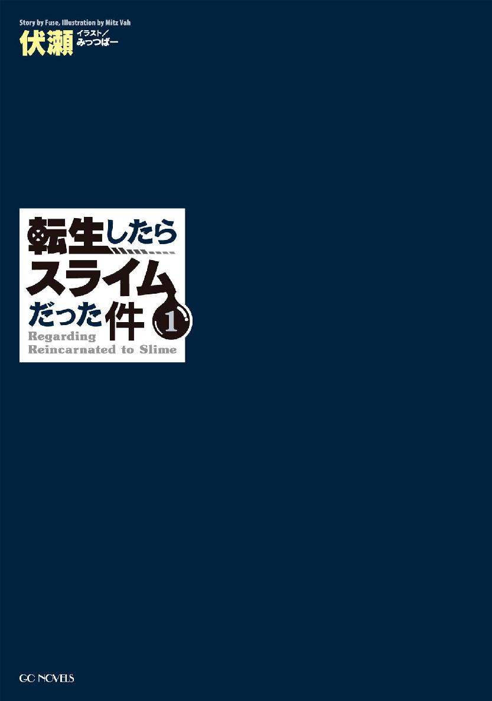
※本作品の全部あるいは一部を無断で複製・転載・配信・送信・放送したり、ホームページ上に転載することを禁止します。
本作品の内容を無断で改変、改ざん等を行うことも禁止します。
また、有償・無償にかかわらず本作品を第三者に譲渡することはできません。
※本作品を示すサムネイル等のイメージ画像は、再ダウンロード時に予告なく変更される場合があります。
※本作品は縦書きでレイアウトされています。
また、ご覧になるリーディングシステムにより、表示される文面・画面に差異が生じる場合があります。
※本作品を電子書籍版に収録するにあたり、一部、漢字が簡略体で表記されている場合があります。
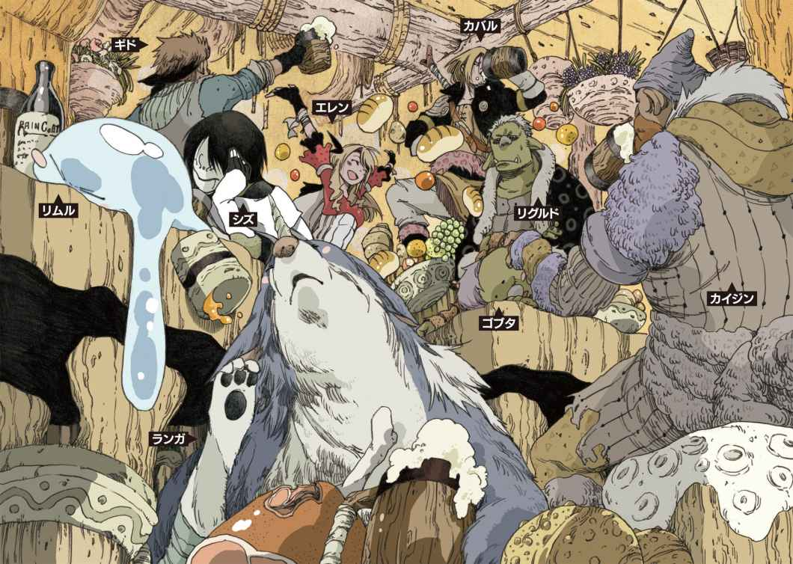
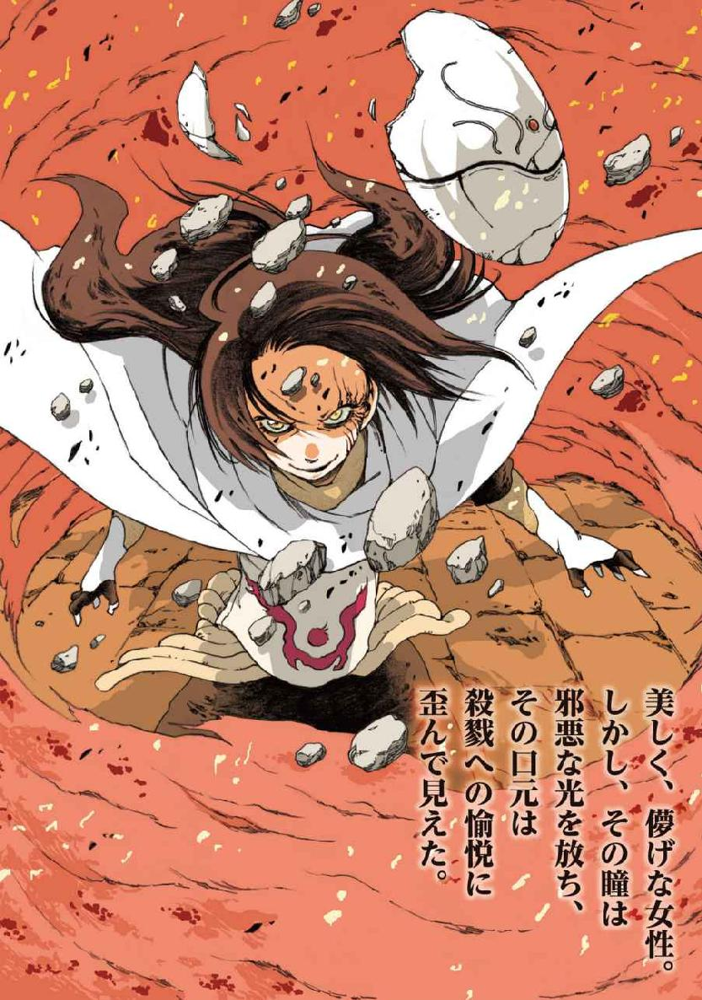
何という事もない普通の人生。
大学を出て一応大手と言われるゼネコンに入社し、現在一人暮らしの三十七歳。彼女はいない。
年の離れた兄が両親を養っており、俺は気ままな独身貴族という訳だ。
身長も低い訳ではなく、顔も悪い訳ではない。だけどモテない。彼女を作ろうと努力した事もあったが、三回告白してフラれた時点で心が折れた。まあ、この年になると彼女がどうのというのは正直面倒くさい。
仕事が忙しいというのもあるが、別にいなくて困るというものでもないし。
......言い訳してるのではないよ？
何故そんな事を考えていたかと言うと――
「先輩。お待たせしました！」
笑顔で俺に向かって歩いて来る、爽やかな青年。そして、その横に並ぶ美人さん。俺の後輩の田村と、会社のマドンナと名高い、受付の沢渡さんである。
そう、今日はこいつ等に、結婚するから相談に乗ってくれと頼まれたのだ。つい、何故自分はモテないのか、などと考えてしまった理由である。で、仕事帰りに待ち合わせ場所の交差点脇で、電柱にもたれてつらつらともの思いにふけっていたという訳だ。
「おう。で、相談ってなんだ？」
俺は沢渡さんに目礼しながら質問する。
「どうも初めまして、沢渡美穂です。いつもお見かけしてますが、話すのは初めてですね。何だか緊張します」
緊張してるのは俺の方だっての！
そもそも俺は、女子と話すのが苦手なのだ。
察しろって......などと、内心でボヤく俺。
大体、どう見ても恋愛に縁のなさそうな俺に持ってくる相談ではない。絶対に当てつけだろうと思う。恐らく、間違いないだろう。
「ども。三上悟です。緊張なんてしなくても大丈夫ですよ。沢渡さんは会社で有名だから、紹介されなくても知ってますよ。田村はたまたま同じ大学でして、会社の研修会で意気投合しましてね。それ以来の付き合いなんです」
「有名ってなんですか！ なんか、変な噂でも流れてるんですか？」
「ええ。木原部長と浮気してるとか、亀山君とデートしてたとかね」
ついからかい始めてしまった。軽いジョークのつもりだったのだが沢渡さん、顔を真っ赤にしながら涙目になってしまって。これは、可愛いわ。
俺のジョークはデリカシーに欠けるしセンスもないから、絶対に止めておけとよく言われるんだけど、ついつい言ってしまうのだ。
やはり、今回も失敗か。やっぱ俺、性格悪いな。
田村が沢渡さんの肩を叩きながら取り成してる。
くそ、田村め！ こういう状況はまさに、リア充爆発しろ！ って叫ぶ場面だな。
「先輩、それくらいにして下さいよ！ 美穂もからかわれてるだけだって」
笑いながら取り成す田村。出来た後輩だ。
嫌味がなくて爽やかで、憎めないやつなのだ。
田村はまだ二十八歳で、俺とはだいぶ年も離れてるのに、何故か馬があった。しょーがない、素直に祝福してやるか......。
「すまんな、性格が悪いもんでね。まあ、ここで話すのもなんだし、場所を変えて飯でも食いながら話聞くわ」
妬んでても仕方ない。そう思って俺が言った時だ。
「「「キャーーーーーーーーーー」」」
悲鳴。混乱。
なんだ？ 何が起きてる!?
「どけ！ 殺すぞ!!」
その声に振り向くと、包丁と鞄を持った男が走ってくるのが見えた。
悲鳴が聞こえる。男が向かってくる。手には包丁。包丁？ その切っ先には......。
「田村ぁーーーーーー」
俺が田村を突き飛ばした瞬間、背中に焼けるような痛みが走った。俺はその場に崩れ落ちるようにうずくまり、背中の痛みに耐える。
何が起きたのか理解出来ない。動きたくても動けないのだ。
「邪魔すんなぁーーーー」
叫びながら逃げていく男を眺めて、田村と沢渡さんの無事を確認する。
田村が、声にならない叫び声を上げながら駆け寄って来た。
沢渡さんは突然の事態に茫然自失になっているようだが、怪我はなさそうだ。良かった。
それにしても、背中が熱い。痛いとかそんな感覚通り越して、背中が熱い。
なんだこれ？ 熱過ぎる......勘弁して欲しい。
《確認しました。『対熱耐性』獲得......成功しました》
もしかして......刺されちゃった？
刺されて死ぬとか、ないわぁ......。
《確認しました。『刺突耐性』獲得......成功しました。続けて、『物理攻撃耐性』獲得......成功しました》
「先輩、血、血が出て......血が止まらないんですぅ」
なんだ、うるさい奴だ。田村か。変な声が聞こえた気がしたが、田村ならしょーがない。
血？ そりゃ、出るよ。俺だって人間だ。刺されたら血くらい出るさ！
しかし、痛いのは敵わんな......。
《確認しました。『痛覚無効』獲得......成功しました》
えっと......やばい。俺も痛みと焦りで意識が混乱しているようだ。
「た、田村......ウルサイぞ。た、大した事ないだろ？ 心配すんな......」
「先輩、血、血が......」
真っ青な顔で泣きじゃくりそうな顔して、俺を抱えようとする田村。男前が台無しだな。
沢渡さんの様子を見ようとしたが、視界が霞んでよく見えない。
背中の熱さが感じられなくなり、代わりに猛烈な寒気が俺を襲った。
やばい、な......。人は血液が足りないと死ぬんだっけか。
《確認しました。血液が不要な身体を作成します......成功しました》
（ちょ、お前、さっきから何言ってるんだ？ よく聞き取れない......）
声を出そうとして、出なかった。やばい。本当に俺、死ぬかも......。
てか、だんだん熱さも痛みも感じなくなってきた。
寒いのだ。寒くてどうしようもない。何て事だ......寒さで凍えるとか、俺も忙しいな。
《確認しました。『対寒耐性』獲得......成功しました。『対熱耐性』『対寒耐性』を獲得した事により、『熱変動耐性』にスキルが進化しました》
その時、俺の死にかけの脳細胞が、閃きのように重要な事柄を思い出す。
そうだ！ ＰＣのハードディスクの中身!!
「田村ぁーー!! 万が一、万が一だが、俺が死んだら......俺のＰＣを頼む。風呂に沈めて、電気流して、データを完全に消去してやってくれ......」
俺は、最後の気力を振り絞って、心残りであった最重要事項を伝えた。
《確認しました。電流によるデータの消去......情報不足により実行不能。失敗しました。代行措置として、『電流耐性』獲得......成功しました。付属して、『麻痺耐性』獲得......成功しました》
田村は一瞬何を言われたのかわからなかったのか、きょとんとした顔をした。
その後意味を理解した様子で、苦笑を浮かべる。
「ははっ、先輩らしいですね――」
男の泣き顔なんて見たくないしな。苦笑いでも、泣き顔よかマシだ。
「俺、本当は、沢渡の事、先輩に自慢したくて......」
そうだろうと思ったよ......。全く、この野郎は。
「チッ......、たく。全部許してやるから、彼女の事、幸せにしてやれよ。ＰＣ頼んだぞ......」
最後の力で、それだけを伝えた。
＊
何という事もない普通の人生。
大学を出て一応大手と言われるゼネコンに入社し、現在一人暮らしの三十七歳。彼女はいない。
年の離れた兄が両親を養っており、俺は気ままな独身貴族だった。
お陰で、童貞。
まさか、未使用であの世に旅立つ事になるとは......俺の息子も泣いてるだろう。
すまんな、お前を大人にしてやれなくて......。
次生まれ変わる事が出来たら、ガンガン攻めよう。声かけまくって、喰いまくるぞ......。ってそれは駄目か。
《確認しました。ユニークスキル『捕食者』を獲得......成功しました》
そして四十歳目前の俺なんて、三十歳童貞で魔法使いならもうすぐ賢者だったのに......大賢者も夢じゃないが、流石にそこまではどうかと思うけど。
《確認しました。エクストラスキル『賢者』を獲得......成功しました。続けて、エクストラスキル『賢者』をユニークスキル『大賢者』に進化させます......成功しました》
......って、さっきからなんだ？ 何が、《ユニークスキル『大賢者』》だ。舐めてるのか？
全然ユニークなんかじゃねーよ！
笑えないよ、こっちは！
本当に失礼な......。
そんな事を考えながら、俺は眠りについた。
これが死ぬって事か......思ったほど寂しくないな。
それが、俺がこの世で思った最後の言葉だった。
暗い。
真っ暗で何も見えない。
ここはどこだ？ てか、どうなった。
確か、賢者だ大賢者だと馬鹿にされたよーな......。
そこで、俺の意識は覚醒した。
俺の名前は、三上悟。三十七歳のナイスガイ。
路上で後輩を、通り魔らしき奴から庇って刺されたんだった。
よし、覚えてる。大丈夫だ、まだ慌てる時間じゃないようだ。
大体、クールな俺が慌てた事なんて、小学生の頃う○こ漏らした時くらいのものだ。
周りを見回そうとして、気付く。目が開けられない。
まいったなと、頭をかこうとして......手が反応しない。それ以前にどこに頭があるのだろう。
混乱する。
オイオイ、ちょっと待ってくれよ。
時間をくれ、落ち着くから。こういう時は素数を数えたらいいんだっけ？
一、二、三、ダァーーー!!
違う。そうじゃない。そもそも、一は素数ではないんだっけ？
いやいや、それもどうでもいい。
そんな馬鹿な事を言っている場合ではないぞ、ヤバイんじゃない？
あれ？ ちょ、どうなってんだこれ!?
もしかして......ひょっとすると、既に慌てないと駄目な時間なんじゃない？
俺は焦って、どこか痛む所はないか確認する。
痛みはない。快適だ。
寒さも暑さも感じない。実に居心地のいい空間にいるようだ。
その事に少しだけ安心する。
次に手足を確認。指先どころか、手も足も反応はなかった......。
どういう事だ？
刺されただけで、手や、足がなくなるハズないし、どうなってる？
そもそも、目が開けられない。
何も見えない、真っ暗な空間にいるのだ。
俺の心に、かつて感じた事もないものすごい不安が押し寄せてきた。
これは......意識不明状態になった、とか？
実際には意識だけはあるが、神経が切断されて動けないとか？
いやいやいや、勘弁してくれよ！
考えて見て欲しい。
人は、暗闇に閉じ込めるとあっという間に発狂するという。今の俺はまさにその状態であり、更には、自分で死ぬ事も出来ないのだ。
このまま狂うのみなど、絶望するなという方が不可能だろう。
その時、サワリッと、身体に触れる感触があった。
ん？ なんだろう......？
俺の感覚が全て、その感触に意識を集中する。
腹？ の横辺りを撫でるように、草らしきものが触れていた。
その辺りに意識を集中すると、自分の身体の範囲がおぼろげながらに理解出来た。たまに、葉の先っちょが自分の身体にツンツンと刺さる感触がある。
俺はちょっと嬉しくなった。
未だ、真っ暗な中にいる。しかし、五感の内の触覚だけでも感じる事が出来たのだから。
面白くなって、その草に向かおうとすると――
ズルリ。
這いずるように、自分の身体が動くのがわかった。
動いた......だと!?
この時、はっきりと、自分が病院のベットの上にはいないと判明した。自分の腹？ の下の感触が、ゴツゴツとした岩のような形状をしていると感じたからだ。
なるほど......全然わからんけど、どうやら病院にはいないようだ。
その上、目も耳も機能していない。
どこが頭かわからないが、草に向けて移動する。接触している部分に意識を向ける。
匂いは全く感じない。恐らく、嗅覚もないのではなかろうか？
というか、自分の身体の形状がわからない。
認めたくないが、流線型のぷよぷよした、あの〝モンスター〟のような形状をしているような。
そういう気が、先程から脳裏をかすめている。
いやいや......そんなハズないさ。いくらなんでも、そんなハズ......。
取り敢えず、その不安は置いておく。
俺は、人間の五感の内、試していない最後の一つを試してみる事にした。
しかし、口がどこにあるのかわからない。どうしたものか？
《ユニークスキル『捕食者』を使用しますか？
ＹＥＳ／ＮＯ》
突然、俺の脳裏に声が響いた。
は？ 何、なんだって？ ユニークスキル『捕食者』......だと？
てか、この声はなんだ？
田村との会話の最中にも変な声が聞こえていたような気がしたが、気のせいではなかったのか？
誰かいるのか？ だが、違和感がある。これは、誰かいるというより......心に言葉が浮かび出ているだけという感じ。
人の意思を感じない、パソコンの自動音声のような無機質な感じと言えばいいのか。
取り敢えず、ＮＯ！ だ。
反応はない。暫く待ったが、声を感じる事はなかった。
どうやら、二度目の問いかけはないようだ。選択を間違ったか？ これは、ＹＥＳを選択しないと詰むゲームなのか？
ＲＰＧのように、ＹＥＳを選択するまで同じ質問を続けて来るのかと思っていたのだが、違ったらしい。
声をかけて質問だけしてその後放置とは、本当に失礼なヤツである。
声が聞こえて、実はちょっとだけ嬉しかったのに。
俺は少しだけ後悔した。
まあ、仕方ない。さっきやりかけていた、味覚を試すか。
先程の草に向けて身体を動かす。
草に触れている部分の感触を確かめながら、草にのしかかった。草を覆うように、身体で感触を確かめる。やはり、これは草で間違いなさそうだ。
俺が草の感触を確かめていると、草と俺の身体の接触部分が溶け出した。俺の身体が溶けたのかと焦ったが、どうやら溶けたのは草だけのようだ。
そして、身体の中に溶けた草の成分が取り込まれるのが理解出来た。
どうやら、草を溶かして取り込んだようだ。つまり、俺の身体は口ではなく、接触部分で草を取り込めるのだ。ちなみに、味は全く感じなかった。
これはつまり、そういう事のようだ。
どうやら、俺は人間ではなくなっている。これはほぼ間違いない。
という事は、やはり刺されて死んでしまったのだろうか？
疑問というよりは、ほぼ確信しているのだが。それなら、今病院ではなく、岩場のような草の生えた所にいる事にも納得がいく。
田村はどうなった？
沢渡さんは？
俺のＰＣはちゃんと破壊されたのか？
疑問は尽きない。しかし、最早悩んでも仕方ないのかもしれない。今後どうするか考えないと。
となると、やはり今の俺の形態――
さっきの感触からして......。
俺は改めて、自分の身体に意識を向ける。
ぷよん。ぷよん。
リズミカルに動く自分の身体。
真っ暗闇の中で、自分の身体の境界がどこなのか時間をかけて確かめた。
何という事でしょう！
あんなに格好良くて男らしかったのに、今ではこんなに流線的な洗練されたスタイルに！
って、アホか！ 認められるかぁー!!
身体の境界を感じる限り、どう考えても、ヤツを連想してしまう。
いやいや、だって、ねえ？
嫌いじゃないよ？ うん。可愛いと思える事もあるさ！
でもさ、自分がなりたいか？ と聞かれれば、九割の人は心を同じにしてくれるだろう。
だが、認めるしかないのかもしれない......。
どうやら俺の〝魂〟は、異なる世界で生まれた魔物に生まれ変わったのだ、と。
本来有り得ないような、天文学的確率なのかもしれないけれど......。
俺は、スライムに転生してしまったのだ。
＊
もしゃもしゃ。
もしゃもしゃもしゃ。
俺は、草を食っていた。
何故かって？ 決まってるさ！
暇、ＤＡ・ＫＡ・ＲＡ、だよ！
自分がスライムだと、嫌々ながらも認めてから結構な日にちが経ったと思う。何日経過したのかまではわからないけど......。何しろ、暗闇では時間の感覚が全くないのだ。
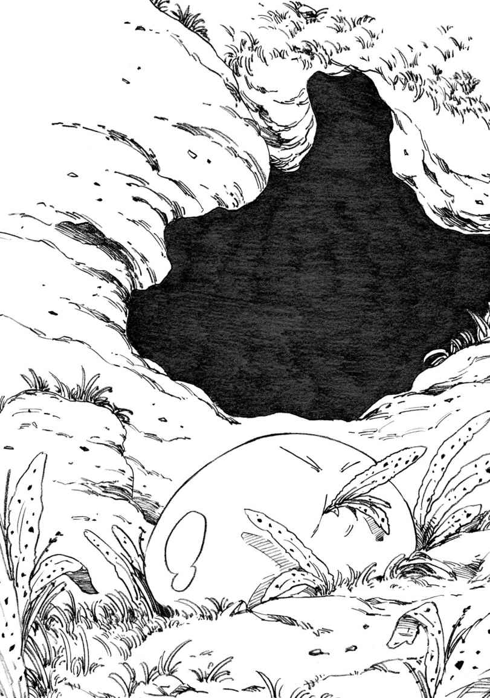
その日々で実感したのだが、スライムの身体というのは思ったよりも便利だった。腹も減らなければ、眠くもならない。つまり、食事も睡眠も不用なのだ。
もう一つ判明した事がある。
この場所には不確かながらも、他に生物はいないようなのだ。お陰で、命の危険を感じる事もない訳で......。ただただ、暇な毎日を送っていたのだ。
この間、あの変な声も聞こえなかった。今なら相手してやってもいいのだが。
で、仕方なしに草を食っている。
他に出来る事が何もないのだから、仕方ない。暇つぶし感覚で食べているのだ。
今では、吸収した草が体内で分解され、成分がより分けられて蓄積されていく様子が、感覚でわかるまでになった。
そこに何の意味があるかと問われれば、意味はないのだが。
何かをしていないと狂ってしまいそうで、怖かっただけだ。
ここ最近で慣れてしまった、吸収・分解・収納を繰り返す。
ここで不思議な点があった。
今まで一度も排泄行為をしていないのだ。
スライムだから必要ないと言えばそれまでだが、では、この収納されたモノはどこに行ったのだろう？
感覚では、元の形態から変化しているようには感じない。
どうなっているんだ？
《解。ユニークスキル『捕食者』の胃袋に収納されています。尚、現在の空間使用量は一％未満です》
なんだと？ 返事キターーー!!
しかし、いつの間にスキル使用したんだ？ ＮＯ！ と答えたはずなのに。
《解。ユニークスキル『捕食者』は使用されておりません。体内に取り込まれた物質は、自動で胃袋に収納される設定になっています。これは任意で変更可能です》
なんだと？ 今度は返事がスムーズにきたな。いや、それは置いておいて......。
という事は、スキルを使用すると、どうなるんだ？
《解。ユニークスキル『捕食者』の効果――
捕食：対象を体内に取り込む。ただし、対象に意識が存在する場合、成功の確率は大幅に減少。効果の対象は、有機物・無機物に限らず、スキル・魔法にも及ぶ。
解析：取り込んだ対象を解析・研究する。作成可能アイテムを創造。物質が揃っている場合、コピーを作成する事も可能。術式の解析に成功すると、対象のスキル・魔法の習得が可能。
胃袋：捕食対象を収納する。また、解析により作成された物質の保管も可能。胃袋に収納されると時間効果が及ばない。
擬態：取り込んだ対象を再現し、同等の能力を行使可能。ただし、情報の解析に成功した対象に限る。
隔離：解析の及ばない有害な効果を収納する。無害化を行い、魔力に還元。
以上の五つが主な能力です》
え？ ......え？
久々に動揺した。何か、凄い能力に聞こえたぞ......。決して、スライム如きが所有していい能力ではないような。
待て、それ以前に俺の質問に答えてくれる声、これはなんだ？ 誰かいるのか？
《解。ユニークスキル『大賢者』の効果です。能力が定着した為、反応を速やかに行う事が可能となりました》
大賢者か......。馬鹿にされてるのかと嘆いていたが、今となっては頼もしい。これからも頼りとさせて貰おう。
というか、この際なんだっていいさ。
この果てのないと思われた孤独が癒されるのなら。
もしかしたらこの〝声〟は、俺の創り出した幻聴なのかもしれない。でもそれでもいい。
俺は、久しぶりに自分の心が軽くなったのを実感したのだった。
＊
現在、俺がスライムに転生して九十日が経過した。
正確には、九十日と七時間三十四分五十二秒である。
何故ここまで正確に断言出来るのか？ それは、ユニークスキル『大賢者』による補正効果だ。
いやー、このスキル、マジで便利。困った時の『大賢者』である。俺が感じた疑問に、なんでも答えてくれるのだから。
『大賢者』によると、スキルが俺の魂に定着するのに九十日かかったそうだ。ただし、本来ならば会話による返答など出来なかったとの事。俺の疑問に答える為に自己改造を行い、〝世界の言葉〟の権能の一部を流用したのだと説明された。
通常では、疑問に対して心に言葉が響く、などという便利な能力はないらしい。世界の改変が行われたり、スキルの獲得や進化が行われた際に、〝世界の言葉〟が響くのだとか。
もっとも、スキルの獲得や進化が普通に行われている訳ではないようだ。何らかの成長を世界が認めた際に、希に獲得出来る事があるのが『能力』らしい。『進化』など、それこそ普通の人には縁のないものなのだそうだ。
全く意味がわからなかったけど、そういうものだと割り切った。
『大賢者』が質問に答えてくれるようになったが、あくまでも受動的で自我はないのだ。
こちらから話しかけないと、向こうからこちらへの問いかけはない。そこが残念な所でもある。
しかし、言葉のキャッチボールが一方通行でも可能なのは嬉しい事だ。
自分のスキルと会話なんて、元の世界では変な妄想乙って所だが......。
という訳で、真っ暗闇で他にする事もなかった俺は質問しまくったのだ。
その結果、間違いなく俺はスライムになっている事が判明した。
空腹や睡眠が必要ない理由も判明した。
この世界のスライムとは、魔素を吸収出来れば食事を摂る必要がない。魔素の濃度の少ない地方では、モンスターなり小動物なりを吸収して魔素の補充を行うらしい。
故に、この世界では珍しく、魔素の薄い地方のスライムの方が凶暴で強いらしい。普通は、魔素の濃度の濃い地方の方がモンスターの強さも上なのだ。
つまりこの場所は、食事の必要がないくらいに魔素が濃いのだ。
そして睡眠に関しては、
《解。スライムの身体は全てが同一の細胞の集合体です。一つ一つの細胞が脳細胞であり、神経であり、筋肉なのです。故に、思考する演算細胞が持ち回りで休憩する為に、睡眠は不要です》
との事だった。
俺の記憶はどこに記録されるのか？
恐らく、ＰＣのＨＤＤでいう所の、ＲＡＩＤのような状態になっているのではなかろうか？
と考えたら、《大体あっています》と返答された。
『大賢者』は意外に相槌が上手いヤツだ。
で、気になった『大賢者』のスキル効果は五つ。
思考加速：通常の千倍に知覚速度を上昇させる。
解析鑑定：対象の解析及び、鑑定を行う。
並列演算：解析したい事象を、思考と切り離して演算を行う。
詠唱破棄：魔法等を行使する際、呪文の詠唱を必要としない。
森羅万象：この世界の、隠蔽されていない事象の全てを網羅する。
というものだった。
森羅万象だと？ これは全ての知識が労せず手に入ったのか!? と思ったのだが......。
実際には、俺が触れた情報に対して、俺の知りえる事柄にのみ、情報開示が可能との事。
つまりは、一度認識する必要があるが、理解出来た事柄に関しては解析可能な能力という事のようだ。
そして、詠唱破棄。これって、魔法習得したら唱えなくても行使出来るって事か？ というか、やはりあるのか魔法!!
答えはＹＥＳ。
そうとわかれば、魔法が覚えたくて仕方なくなった。
ダメ元で『大賢者』に使えないか確認したが、無論無理だった。
だがここで閃いた。『捕食者』の解析に『大賢者』の並列演算をリンクさせる事は可能か？
《解。『捕食者』の解析に『大賢者』の並列演算をリンクさせる事は可能です。リンクさせますか？
ＹＥＳ／ＮＯ》
無論、ＹＥＳだ！ といっても解析する物もないか......待てよ？
胃袋に収めたという、暇つぶしで食べてた草。あれはなんだろう？
まあ他に何もする事ないし、あれでも解析させてみるとするか。
という訳で、早速実行。
.........
......
...
《解析が終了しました――
ヒポクテ草：傷薬の原材料。魔素の濃厚な場所にしか繁殖しない。草の汁と魔素を融合させると回復薬になる。葉をすり潰し、魔素と融合させると傷を塞ぐ軟膏になる》
何と！ 暇つぶしに貯めに貯めた雑草が......。
思わぬ所で、棚から牡丹餅というヤツだ。
俺は早速、回復薬と傷薬の作成を実行した。といっても、体内で勝手に作成されているので実感はないが。解析には一秒もかからなかったし、作成するのも三秒もかからずに一つ出来た。五分あれば百個は出来る。
品質は比べる物がないのでよくわからんが、鑑定したら〝上品質〟となっていた。
満足する出来栄えなのだろう。てか、解析にしろ作成にしろ、ものすごく速い。問うと、普通はもっと時間がかかるらしい。並列演算をリンクさせて正解だったようだ。
試しに、リンクを解除して一個作成してみた。五十分かかった。
恐ろしく短縮されていた。
どうやら相性のいいスキルをゲット出来ていたようだ。無自覚だったけど......。
中には雑草も混じってはいたが、ここに生えている草はほぼヒポクテ草のようだ。
いざという時に備えて、ここにある草を全て食べる勢いで捕食を開始した。
それと同時に、胃袋の中ではせっせと回復薬も作成しておく。
何といっても、未だ真っ暗闇の中。他に出来る事などないのだから......。
この時の俺は、完全に気が抜けていた。
自分のスキルであり、受動的だとはいえ質問に答えてくれる相手が出来た事で、調子に乗ってしまったのもある。
この九十日、全く他の生物に遭遇した気配もなく、命の危険もなかった事も一因だろう。
何にせよ、俺は油断していたのだ。
え？ と思ったのは一瞬。
自分の身体が不意に軽くなったような重くなったような......非常に不安定な状態に。
もしかして......、水に落ちた？
この九十日間、水滴が身体に落ちてくる感覚はなかった。つまり、雨の降らない洞窟か、屋内にいるものと思っていた為、その可能性を全く考えていなかったのだ。
川か何かにつるんと滑って落ちたみたいだ。屋内に川とかないだろうから、ひょっとすると洞窟内の地底湖とかそんな感じだろうか......？
さっきまでは、真っ暗闇で周りが見えない中、一歩一歩確かめて移動していた。
それなのに、スキルの解説を受け調子に乗って『捕食者』のスキルで草を食いまくった結果、足元の確認を怠ったのだ。
俺ってヤツはいつもこうだ。直ぐ調子に乗って失敗する。
取引先でも、「任せて下さい！ 楽勝っすよ！」とか、調子のいい返事で気軽に仕事を請け負って、何度地獄を見たか。あの時の後輩達の恨みがましい目が思い出された。
大体、周りが真っ暗で何も見えてないのに、走り出す馬鹿がどこにいるんだと、自分に説教してやりたい。生き残ったら、説教しよう。
だがどうせ、後悔はするが、反省はしないのだろうけど......。
というか、余裕あるな。
バタバタさせたくても手足がない為、慌てたくとも慌てる事すら出来ない、というのが現状なのだが......。
終わったな。
短い人生、いやスライム生だった。
俺は直ぐにでも訪れるであろう息苦しさに備えるべく、覚悟を決める。
.........
......
...
息苦しさはやってこなかった。
何でだ？ もしかして、水中に落ちた訳ではないのだろうか？
こういう場合は、困った時の『大賢者』だ。
《解。スライムの身体は魔素のみで動いています。酸素は必要ではない為、呼吸は必要とせず行ってはおりません》
そういえば......、意識してなかったが、呼吸なんてしていなかった。
なるほどなー。九十日かけて、一つ賢くなったよ！ って、暢気に感心してる場合でもない。
水中に落ちたのは間違いないようだ。
死ぬ事はないようだが、困った事態なのはそのままである。
どうしたものか？
浮いているのか沈んでいるのか、イマイチ良くわからない。
手足がないから、泳げる気がしない。
底まで沈んだら、水底を這いずって地面まで戻れるだろうか？
それとも、浮きも沈みもせずこのまま流されるのだろうか？
流されるというより、揺りかごにいるような感覚。小さな揺れに抱かれて、とても心地よいのだが......。
これは、水の流れはないな。川というより、湖っぽい。どこかに流されているという感覚がないのだ。浮いたり沈んだりで、底まで沈む気配もなかった。ひょっとすると、ずっとこのままかもしれない。これは非常にまずい事態である。
どうしたものか。
その時、俺の脳細胞＝スライムの身体が、恐るべき作戦を思いついた！
水を大量に捕食して、ウォータージェット推進のように吐き出して移動すればいいんじゃね？
思いついたら即実行。それ以外に出来る事もないのだし......。
取り敢えず、『捕食者』の胃袋の一割程度を満たす分量だけ、水を飲んだ。
そして水量を絞りつつ、一気に放出する。
開放感が半端なかった。
《スキル『水圧推進』を獲得しました》
突然脳内に声が響いた。
意識して初めて聞く。これが、〝世界の言葉〟なのだろう。
『大賢者』が話しかけて来る事はないから間違えようがないが、本当にそっくりな感じだった。
だが、今の俺にのんびりその事を検証する余裕は微塵もない。
水圧が増すとともに圧迫感が身体にかかり、それこそ空を飛んでいるのかという勢いで身体が前方へ撃ち出される。凄まじい加速感だった。
ぶっちゃけ、目が見えなくて良かったかもしれない。
真っ暗な中を、身体がものすごい速さで移動している感覚だけが俺を襲う。
訂正。見えたら見えたで恐怖が半端ではないだろうが......見えないのも激しく怖かった。
レジャーランドの暗がりの中でのジェットコースターを体験した事があれば、少しは共感が得られるかもしれない。
前世で一度だけ体験した、ネズミが支配する楽園での体験がフィードバックされる。もっとも、今回の場合は安全が全く保証されていないのだ。
ウォータージェット推進を思いついた自分を殴り倒したい。
思いついたら即実行？ 馬鹿か！ 安全確認は基本だろうよ!!
恐怖で思考が上手くまとまらない。
いつまでこの加速感が続くのか......。てか、どんだけ勢いよく水を吹き出したんだ。
そう思った矢先、勢い良く身体が跳ねた。そして襲い来る激痛......、はこなかった。
あれ？ ダメージも受けていないような......あるいは、ダメージはあるが、痛みがないだけなのか？
《解。『痛覚無効』を獲得している為、痛みは発生しません。『物理攻撃耐性』によるダメージ軽減が適用されました。身体損傷率は一割です。モンスター〝スライム〟固有スキル『自己再生』が発動しました。ユニークスキル『捕食者』での補助を行いますか？
ＹＥＳ／ＮＯ》
痛みがないだけで、ダメージはあるのか。そりゃそうか......いいのか悪いのかわからないけど、痛みがなくても不具合に気付けるなら痛みなんて要らないかもしれない。
で、『捕食者』での補助？ 良くわからないけど、取り敢えず〝ＹＥＳ〟
その瞬間、自分の身体の一部がごっそり減ったような感覚がした。そして、暫くすると徐々に元の体積へと戻ってくる感覚。
どうやら、ダメージを受けた部分をごっそり捕食し、解析と修復を行った模様。
何て便利な身体なのか......。今度、どれだけ減らしたら行動不能になるのか実験してみるか。身体が何割か減っても活動に影響はないようだし......。といっても、危険な事になる予感しかしないので、程々にしよう。
うん。流石に、俺も慎重になったものである。
今回は、大量に回復薬もあったのだが、使うまでもなかった。
何にせよ、身体の一割程度の損傷といえば重傷だと思うのだが、十分程度で回復可能な事が判明した。今度、ダメージを受ける事があったら回復薬を使ってみよう。
で、ここはどんな場所なんだろう？
身体の具合が元通りになったのを確認して、辺りの様子を窺ってみる。
ここらに危険なモンスターがいないとも限らない。
水の上に出たようだし、水を渡れないモンスターが生息していても不思議ではない。
俺は慎重に行動を開始した。
最近、慎重と言う度に危険な事態に陥っている気がするが、きっと気のせいだろう。
そう思ったのが悪かったのだろうか......。
（聞こえるか？ 小さき者よ）
何かが聞こえた。
＊
小さき者だと？ まあ、どう考えても俺の事だと思うけど......。
声というより、心に意思が直接認識出来た感じか。何しろ耳がないから音も聞こえないのだ。
（おい！ 聞こえているだろう？ 返事をするが良い！）
聞こえてるよ！
だがしかし。口がないから返事のしようもないのだ。
試しに、「うっさい、ハゲ！」と、心で答えてみた。
まあ、聞こえる訳ないだろうし大丈夫だろ。しかし、どうやって返事をしたものか......。
（......ほ、ほほぅ。我の事をハゲ呼ばわりするか......いい度胸ではないか!! 久方ぶりの客人だと思って下手に出てやったが、どうやら死にたいらしいな！）
ヤバイ。聞こえてしまったみたい。というか、心で思ったら返事出来るのかよ！ 先にそれを教えてくれれば、わざわざ相手を怒らせる事もなかったのに。
しかも、相手がどういうヤツかもさっぱりわからないのだ。
どうしようもない。お手上げ。
ここは素直に謝る事にしよう。
（すんません！ 返事の仕方もわからなかったもので、適当に思った事を言ってみただけです。本当に申し訳ない！ ちなみに自分、目も見えない状態でして、貴方の姿すら見えないのですよ）
通じるか？ まあ、相手の姿も見えないのにハゲはないわな。本当にハゲなら激怒しても当然だろう。
（ククク。クハハ。クハハハハハハッ!!）
突然の大爆笑。
基本を押さえた、笑いの三段活用。見事である。
怒りは解けたのか？
（面白い。我の姿を見ての発言かと思ったが、目が見えないのか。スライム種は基本、思考もせず吸収・分裂・再生を繰り返すだけの低位モンスター。自らの生息領域から出る事は滅多にない）
なんか語り出したぞ？ 怒りより興味が勝っている状態......か？
なんにせよ、これがファーストコンタクト。俺の新しい人（スライム）生の初会話だ。上手い事友好的に進めたい。
（そのスライムが、我に体当たりを仕掛けてくるから不思議に思っていたのだ。再生能力も異常な速度だし、名持ちの魔物か、もしくはユニークモンスターか？）
ネームド？ ユニーク？ 意味がわからんな。
（すんません。ちょっと意味がわからないです。実は自分、こちらに生まれて九十日目でして......）
（ふむ。自我がある時点で、普通のスライムには有り得ぬ事なのだ。〝名〟を付けられたモンスターは名持ちの魔物と呼ばれるが、生まれてから九十日なら有り得んな。では、ユニークか？）
（ユニークといいますと？）
（ユニークモンスターとは、突然変異したような異常な能力を持つ個体の事だ。希に魔素濃度の高い場所で生まれる事がある......そうか、貴様は我から漏れ出た魔素の塊から生まれ出たのだな！）
むむ？ どういう事だってばよ？
前世の知識を総動員して考えてみよう。
つまり、このおっさん（仮定）から魔素が漏れ出ていて、この周辺は魔素濃度が濃いと。
そして、その魔素が集まって生まれ出た魔物がスライム＝俺、って事かな？
（ふむ。この三百年、我に近づく事の出来る魔物すらいなかったのだ。我の魔力の元から生まれ出たなら、我に触れる事が出来るのも頷ける！）
（ほほぅ......て事は、貴方が自分の親みたいなもの？）
（親ではないが......そもそも、我に生殖能力はない。魔物は、生殖能力を持つ者と持たぬ者、様々であるからな）
（普通、生殖能力は持ってるものなんじゃないの？ というか、魔素の塊から生まれる事もあるなら、生殖する必要がないのか？）
（――お前、えらく知性的だな。普通の魔物では、思考能力すら持つ者は少ないというのに。知性がある魔物は〝魔人〟しかいないのだが......）
そんな事を言いながら、長々と説明してくれた......。
まず一番重要な事実だが、この世界にも人間がいるという事が判明した。
そうした人間に近しい種族は亜人と称され、生殖能力を持つようだ。
エルフ、ホビット、ドワーフといった妖精族の末裔が、人間の味方である人類の一員。
そして、ゴブリンやオーク、リザードマン等といった者達が、人間に敵対している為に魔物という扱いなのだとか。敵対しているだけなので、異種交配は可能らしいけど。
次に〝魔人〟だ。魔素から生まれた者や、魔物の突然変異種、動物や魔獣から進化した者共などの総称である。知性を有し、生殖能力を有するのが特徴なのだとか。
巨人族や、吸血鬼族、悪魔族と言った長命の種族が、上位魔人の代表格らしい。生殖能力も有しているのだが、滅多に行わない。圧倒的な魔力に、劣化する事のない肉体。子孫を残す必要がないからだろう。
知性があり、生殖能力を有し、人類に敵対する者達を総じて、〝魔族〟と呼称する。
俺が受けた印象では、魔族が人類に敵対しているというより、その力を一方的に人類が恐れているというのが正確だろう。何にせよ、生存圏をかけて争っているのは本当らしいけど。
こうした魔物達は、危険度を区分けされているとの事である。
中でも、上位魔人とはかなり危険な存在であるようだ。下手すれば、一人で町を滅ぼせる者もいるらしい。お近づきになりたくはないものである。
説明は延々と続いた。昔、上位魔人達とも戦ったとか、色々だ。
最後に、自分の事を語ってくれたのだが......。
（で、我に生殖能力がないという理由だが......必要ないからだ。我は、〝個にして完全なる者〟であり、四体しか存在しない〝竜種〟が一体。〝暴風竜〟ヴェルドラとは、我の事である！ 我には寿命も肉体も存在しない！ 意思さえあれば我は不滅なのだ！ クアーーーハハハハハハハ!!）
と、高笑いされても......。
要は、寿命がないから子供作る必要ない！ って事だろ？
長々と説明乙って所だが、聞き捨てならん事を言っていたぞ。
〝暴風竜〟ヴェルドラって、ドラゴンか？
上位魔人が喧嘩友達って感じだし、めちゃくちゃヤバイ奴なんじゃないのか？
前世での俺の知識を総動員して考えてみると、目の前にいるのであろう〝暴風竜〟ヴェルドラさんは、ヤバイ奴で間違いない。
えらく丁寧に説明してくれるのも、何だか不気味である。
さて、どうしたものか......。
（そ、そうなんすか！ 大変わかりやすい説明、ありがとうございました！ では、自分はこれで！）
そう言って、この場から離脱しようと試みる。
（待て。我の事を話してやったのだ。今度はお前の番ではないのか？ ん？）
当然、逃がしてくれる気はないようだった......。
うーむ。俺の事を話せ、ってか。異世界から転生して来ました！ と言って、素直に信じてくれるかな？ スライムにしては知性が高いのを疑っているようだし、適当に言って誤魔化せるとも思えない。何より、誤魔化そうとして失敗＝死亡フラグという可能性もある。
まあいいか。信じないなら、その時はその時だ。
俺は心を決めると、これまでの出来事を話す事にした。
.........
......
...
（とまあ、そういう訳なんすよ！ 超大変だったんすよ！）
俺は、自分のスキルの事は秘密にして、刺されてからスライムとして目覚めて、そして現在に至るまでの体験を語って聞かせた。
自分で話してて、何だか大変そうに聞こえなかったのが不思議だったが......。
大変だったのは事実だ。
目が見えないというのが最大に辛い。
この先、可愛い女の子や、綺麗なお姉さんとすれ違っても、見る事は出来ないのだろうか？
何だか悲しくなってきた。
（ふむん。やはり、〝転生者〟だったか。お前、ものすごく希な生まれ方をしたな）
（え？ 希な生まれ方？ というか、〝転生者〟って、疑ったり驚いたりしないのですか？）
なんだこの反応？
〝転生者〟って、珍しくないのか？ 生まれ方の方が珍しいみたいな言い方だぞ？
（ふん。〝転生者〟はたまに生まれてくる事がある。意志が強いと魂に記憶が刻まれるのだろう。前世とやらを完全に覚えている者もいる。だが、異世界からの〝転生者〟は珍しいな。魂だけで世界を渡ると、普通は耐えられない。魂が分解され、記憶も失われるのだ。完全な記憶を残して魔素から魔物となって生まれて来るなど、我の知る限り事例はない。お前は特殊だよ）
異界からの転生者は、普通は記憶の欠片を残すだけのようだ。完全に記憶を残している俺は、どうやらかなり異端の存在という事になる。だが、それはこの際どうでもいい。
今、聞き捨てならない事を言っていた。魂だけで、とか。では、転生じゃなくこの世界にやって来る者もいるのだろうか？
（そうなんすか？ 自覚はないのですが......。ところで、転生ではなく異世界から来た人って、いる事はいるんですね？）
（うむ。異世界へ赴く事は未だ成功事例がない。しかし、異世界からこちら側へは、時たまやって来る者がいる。〝異邦人〟もしくは〝異世界人〟と呼ばれる者で、こちらの世界とは異なる特殊な知識を持つようだな。そういう者達は世界を渡る際に、特殊な能力を獲得するらしい。後は、先程言った異界の知識を持つと確認された〝転生者〟の記録が残っている。確認されていない者もいただろうがな）
なるほどな。異世界ってのが、俺のいた地球かどうかはわからないけど、会ってみるのもいいかもしれない。もしかしたら、同郷の日本人もいるかもしれないし。
何の目的も持たないのだから、一つくらい目的を持つのもいいだろう。
（なるほど！ では、異世界人とやらを探して、会いに行ってみますよ。もしかしたら同郷の知り合いに会えるかもしれないし！）
（まあ待て。お前、目が見えないのだろ？）
（あ、はい）
目が見えないから何なのか？
不便だが、死なないようにコツコツいけば、いつかは会えるだろ。多分。
（見えるようにしてやろう）
は？ 何て？
オイオイ、このおっさん、いや、〝暴風竜〟ヴェルドラさんはめっちゃいい人（竜）なのか？
期待しちゃってもいいのか？
（え？ 本当っすか？）
（うむ。ただし、条件があるがな......どうする？）
条件......か。怪しいが、
（どういう条件ですか？）
俺は大抵の条件なら飲むよ。
（簡単だ。見えるようになったからといって、我に怯えるな。そして、また話をしにこい。それだけだ。お前にとっては良い話だろう？）
そんな事でいいのか？
というか......この竜、寂しかったのかもしれんな。強者故の孤独って奴か？
道理で話が長いと思った。久々の話し相手だったのだろう。
この竜はちょろいかもしれん。
いや、竜ってのもガセかもしれんな。そもそも、この世界の竜は大した事ない可能性も......？
ふっ。これは、いい取引かも。
（それだけでいいんですか？）
（うむ。実はな、三百年前にここに封印されてな。それから、暇で暇でどうしようもなく退屈しておったのだ。どうだ？）
（そのくらいでいいなら、喜んでお願いします！）
（うむ。約束だぞ、守れよ！）
（大丈夫ですよ！ こう見えて、信頼に値する男！ と前世では評判でした！）
無論、自称だがな。
（良かろう。『魔力感知』というスキルがある。使えるか？）
何言ってるんだ......使える訳ねーだろ。
（いや、使えないです。どういうスキルですか？）
（周囲の魔素を感知するスキルだ。大した事のないスキルだし、周囲の魔素を認識するだけなので簡単に習得出来る）
（ほほぅ......何だか簡単そうですね）
（うむ。我など、呼吸するように出来て当然故に、意識する事もないな）
（なるほど！ で、それを習得すると、目が見えるようになるのですか？）
（その通りだ。この世界は魔素に覆われている。薄い濃いの違いは在るがな。で、光や音は波の性質を持つのだが、知っているか？）
（ええ、光波や音波っすね）
（詳しいな。異世界の知識か？ まあ、そうだ。で、その波が魔素を撹乱する様を観測し、その様子から周囲を予測演算するのだ。簡単だろ？）
はあ？ 何言ってるんだ？
こいつ......無茶言いやがって。簡単な訳ねーだろ！
（ちょっと難しい気がするようなしないような......）
（何？ これで、目や耳が潰されても戦闘継続可能なのだぞ？ 不意打ちも防げるし、必須スキルだぞ？）
（いやいや......戦闘とかこの際忘れて、ともかく目が見えるようになりたいのですけど......）
（むぅ......しょうがないな。習得を手伝ってやる。ちなみに、他の方法は知らんぞ）
（ちょ、本当に出来るのですか!? 自分、生まれたての初心者っすよ？）
（安心しろ。幸いにもお前、前世の記憶があるのだろ？ その時、光や音を知識として知っている訳だ。その知識がなければ、我にも不可能だったかも知れぬ。お前は幸運だぞ）
なるほど、目の見えない者に世の中の光景を説明するのは難しい。
理解させるなど、俺には不可能だ。
ヘレン・ケラーさんが言葉を話せるようになったのも、二歳までに覚えていた言葉がきっかけになったそうだし。
つまり、前世の知識があるからこそ、『魔力感知』というスキルを代用して視覚や聴覚を擬似的に得る事が出来るという訳か......。
やるしかないな。目が見えないのは不便過ぎる。
それに、忘れていたが俺には『大賢者』がついている。
きっと何とかしてくれるだろう。
（ぜひ教えて下さい！）
（いや、そんなに勢い込まなくとも、簡単だぞ？ まずは、体内の魔力で魔素を動かしてみろ）
これは何となくわかる。水を噴き出せたのも、恐らくはこれの応用だし。
（こうっすか？）
体内を循環させるようにイメージしつつ、力を込める。すると、体内を何かが動くのが感じられた。これが所謂、魔素というヤツなのだろう。
先程水流を操作した時は意識していなかったが、力の込め具合で威力を調節出来るようだ。実際には、水そのものを操るのではなく、水に含む魔素を操っているという事なのだろう。
この操る力が魔力で、動かしているのが魔素か。そうした事を、魔素を動かしながら確認する。
（ふむ。思ったより、流暢に出来るではないか。では、その動かしている魔素と体外の魔素、違いはわかるか？）
これも簡単かも。
魔素を吸収して生きていると言われてから、意識して感じるようにしていたのが良かったかな。
（そりゃわかりますよ！ どうやら、それを食べて生きてるみたいだし？）
（クククッ。そこまでわかるなら後は簡単だ。体外の魔素の動きを感じるだけだからな）
そこがわからんのだが。
ともかく、言われた通りに体外の魔素を感じる。
魔素が漂っているのを感じる。流れたり動いたりと様々な感覚だ......。
そうそう、『大賢者』起動っと。
《確認しました。エクストラスキル『魔力感知』を獲得......成功しました。エクストラスキル『魔力感知』を使用しますか？
ＹＥＳ／ＮＯ》
え？ そんな簡単に獲得しちゃったの？
いや、そりゃあ勿論、ＹＥＳだけど......流石は『大賢者』、頼もし過ぎる！
エクストラスキル『魔力感知』を使用した瞬間、俺の脳内を情報が埋め尽くす。人間であった頃には決して処理しきれなかったであろう、膨大な情報――一つ一つの小さな魔素を押し動かす、光や音の波――の全てを把握し、認識出来る情報へと変換する。
人間の視界は前方百八十度もなかったのだ。それが今、全方位三百六十度死角なしで〝視える〟のである。岩の陰や百メートル先の光景さえ、そこに意識を向ければ認識する事が出来る。
人間だったならば、この情報量に耐えられず脳が焼き切れて発狂していたかもしれない。
しかし、俺はスライム。細胞の一つ一つが筋肉であり、脳細胞でもあるのだ。
何とか耐える事が出来た。そして――
《エクストラスキル『魔力感知』にユニークスキル『大賢者』を同期させます......成功しました。今後は、全ての情報を『大賢者』にて管理を行います》
突然視界が開けた。俺を襲った、脳を焼き切るような感覚がなくなる。
そして、今まで出来なかったのが不思議なくらい、当たり前のように世界が〝視えた〟のだ。
『大賢者』はずるい能力かもしれない。チートと言っても過言ではないだろう。
他人が持っていたら、反則だ！ とクレームをつけるところだが、持っているのは俺だ。
何も問題はなかった。
（あ、なんか出来たみたいです。ありがとうございました！）
そう言って、感覚的に眼前の〝ソレ〟に目を向けた。
マジもんの竜がいた。
黒光りする鋼よりも硬そうで、柔軟性も兼ね備えているであろう鱗に覆われた......見るからに、邪龍という風格の............。
（げええっ！ ドラゴン!!）
予想を遥かに上回る、邪悪な姿。
俺の心の叫びが、絶叫となって迸り出たのは、仕方ないと思う。
＊
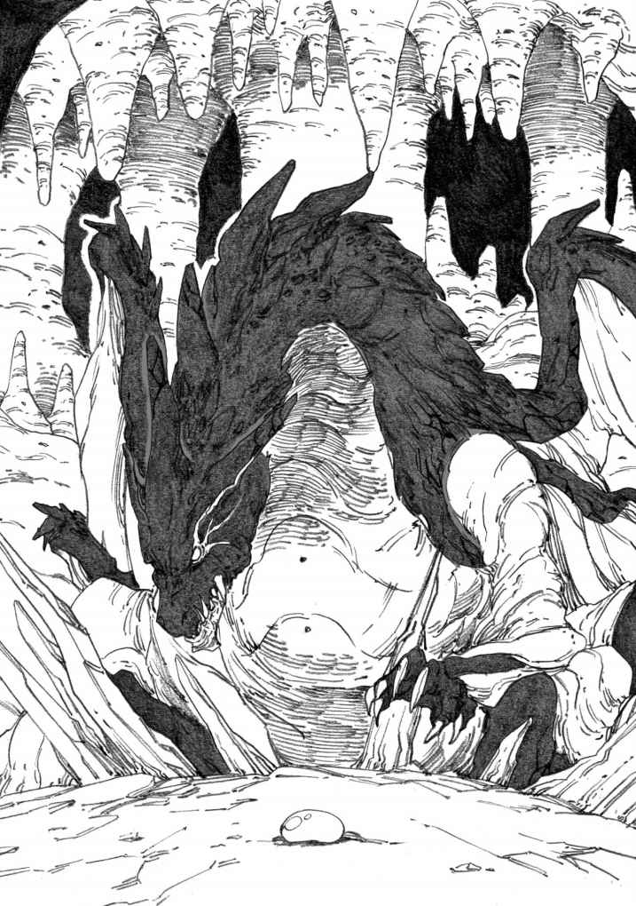
驚いた。
ちょろいとか思ってすんません。紛れもなく、ヤバイ。間違いない。
黒曜石のように黒光りする巨体。イメージとしては、西洋の竜のような形状に近い。
その手の指は六本あり、いかなる物をも穿つ事が出来そうな爪が生えている。背中から生える大小二対の翼は、先端が尖り全てを切り裂く剣のようだ。
よく見れば、全身を覆う禍々しい鱗が、薄紫色に発光している。漆黒の輝きを放つのは、その身より放たれる妖気と色が混じりあっているからだろう。
その姿は、一種異様な美しさを感じさせる威容を誇っていた。
見えてなかったから、かなり失礼な態度を取ってしまった気がするが、今更だな。
ちなみに、俺の身体は想像通りの楕円形だった。鏡餅のような形状だ。
色は、月白色というのだろうか？ 深みのある青白色だった。
仄かな気品を感じる色だが、スライムなのが悲しい現実である。
（おい、約束は覚えているな？ というか、文句を言っておったが、あっさり習得しおって......）
（勿論っすよ！ 軽い冗談です。周囲も見えるし、音まで聞こえます。助かりました！）
（ふん。もっと時間をかけて習得しても良かったのだがな......）
まあ、大丈夫だったようだ。
見た目にビビったが、この竜、親切だったし。
何より、やっぱりこの竜、寂しがりやだわ。
見た目で損するタイプか。まるで、〝泣いた赤鬼〟みたいだな。
（で、これからどうするつもりなのだ？）
（そうっすねー。取り敢えず、同郷の異世界人でもいないか探してみますよ。見つからなくても別にいいんですけどね）
見つかる方がいいけど、仲良くなれるかわからないしな。
それより、せっかく視覚も得た事だし、世界を見て回るのもいいだろう。光や音を感じ取れるようになった事で、世界が広がった。
これでようやく、暇つぶしに草をもしゃもしゃする生活ともオサラバである。
しかし、このドラゴン。
見れば見るほど邪悪なのだが、ピクリとも動かない。
そういえば、三百年前に封印されたとか言ってたか？
（ところで、ヴェルドラさんは封印された......とか、言ってましたよね？）
（む？ まあな。ちょびっと相手を舐めてたのは間違いないが......途中から本気を出したのだが、それでも負けてしまったな！）
何故か誇らしげに 負けた！ と、この竜は宣った。
実際、魔法ならともかく、剣や槍なんてこの竜に歯が立ちそうにもないのだが......。
（相手はそんなに強かったのですか？）
こんな化物より強いのが結構いるのだろうか？
外の世界は思ったより危険がいっぱい！ なのかもしれないぞ。
（ああ。強かったよ。〝加護〟持ちで、人間の〝勇者〟と呼ばれる存在だ）
勇者。
色々なゲームで馴染み深い存在だ。
最近は、かませみたいな勇者をモチーフにした作品も多い為、そこまで圧倒的なイメージはなかったけど。
この世界では本当に強いみたいだな。
（そういえば、勇者は自分で自分の事を〝召喚者〟だと言っておったぞ。お前と同郷かもな）
（え？ いやいや、自分と同郷ならそんなに強いハズないですよ？）
（いや、この世界に来た〝異世界人〟は、特殊能力を持つ事が多い。それは、世界を渡る際に魂に刻まれる力なのだ。〝召喚者〟ならば、必ず特殊能力を持つ。それも、個々特有の〝ユニークスキル〟を持つのだ。偶発的にやって来る〝異世界人〟と違い、召喚に耐えるほど強い〝魂〟故の事だろう。召喚の成功例が極端に少ないという事実が、その事を裏付けておるよ）
（召喚というと、魔法かなんかで呼び出した......とか？）
（その通り。三十人以上の魔法使いで、三日かけて儀式を行うのだ。成功率は低いが、強力な〝兵器〟としての役割を期待されておる）
（は？ 兵器？）
（うむ。〝召喚者〟は召喚主に逆らえないように、魔法で魂に呪いを刻まれているからな）
（なんじゃそりゃ？ 召喚される人の人権は無視か!?）
（人権？ 異界では人に権利があるのか？ そんなもの、この世界では幻想だよ。弱肉強食こそ、万物にして絶対なるこの世の真理なのだから。力こそ、全てなのだ）
なるほど......どうやら、この世界で召喚されるのは元の世界の感覚からしたら、受け入れ難いものがありそうだ。
（では、〝異世界人〟の扱いも奴隷みたいな感じなのですかね？）
（いや、人による。〝支配の呪禁〟が施されていないから、受け入れられたら普通に暮らしたり、冒険者になったりしてるんじゃないか？ 実際、我を討伐に来た冒険者の〝異世界人〟も何度か撃退しているぞ！ クアハハハハ!!）
（つまり、召喚された場合だけ、強制労働って事ですね......）
（労働ではないだろうが、まあ、そんな感じじゃないか？ 我は人間に詳しい方だが、全て知っている訳ではないからな）
（それもそうか......竜ですもんね）
寧ろ、竜にしては詳し過ぎな感じだ。
とにかく、喋る事が出来て嬉しいみたいで、聞けばなんでも答えてくれた。それから暫く、俺は竜こと、ヴェルドラさんと色々な事を話したのだった。
勇者といかに戦ったか。
勇者がいかに強かったか。
白い肌。
真紅の小さな口唇。
黒銀色の長髪を、一つにまとめて垂らしていたそうだ。
身長はそんなに高くない、やや小柄でほっそりとした体型。
顔はマスクで隠されていたそうだが、美人である事は間違いなかったと言っていた。
女性だったそうだ。
見とれて負けたのか？ と聞いたら、フザケルナ！ と怒鳴られた。
反りの入った独特の武器、〝カタナ〟と呼ばれる剣を使い、盾は持っていなかったそうだ。
ユニークスキル『絶対切断』
ユニークスキル『無限牢獄』
を駆使し、各種魔法を用い、「我を圧倒したのだ」と嬉しそうに語ってくれた。
話していてわかったけど、この竜、人間が好きみたいだ。口では雑魚だのゴミだの言いながら、襲ってきた者を意図的に殺した事はないみたいだった。逆鱗に触れない限り......。
かつて一度、三百年前にとある事件が起きて、街を一つ灰塵に帰したらしい。
その事が原因で、勇者が差し向けられ、結局封印されたのだと。
――勇者の用いるユニークスキル『無限牢獄』によって。
俺には、竜の気持ちなんてわからない。他人の気持ちだって、結局の所想像でしかわからないのだから。でも、俺はこいつが悪い竜ではないのだろうと思う。
だって、気に入ったし。もう、怖いとは思わなくなっていた。
（よし！ じゃあ、自分......いや、俺と友達にならないか？）
ちょっと、いや、かなり恥ずかしい。今の俺は、顔真っ赤だな。
（な、なんだと？ ス、スライムの分際で、〝暴風竜〟ヴェルドラと恐れられる、この我とトモダチだと!?）
（い、いや、嫌ならいいんだけど......）
（馬鹿！ お前!! 誰も嫌だなどと、言っておらぬだろうが!!）
（え、そう？ じゃあ......どうする？）
（――そうじゃなあ......どうしても、と言うなら......考えてやっても......）
何となく、こっちをチラチラ見てくる感じ。
可愛い女の子ならいいが、邪悪な見た目のドラゴンにされても......嬉しくはない。
面白いけど。
（どうしても、だ。決定な！ 嫌なら絶交。二度と来ない!!）
（ちょ！ ――仕方ないな。我が友達になってやるわ......感謝せよ！）
ふ。この竜も素直じゃないわ。俺も素直じゃないから、おあいこだな。
（じゃあ、宜しく！）
（宜しくの！ そうじゃ、お前に名前をやろう。お前も我に名前を付けよ）
（は？ 何でだ？ 突然何を――）
（同格という事を、魂に刻むのだ。人間でいうファミリーネームみたいなものだが、我がお前に名付けるのは、〝加護〟にもなる。お前はまだ〝名無し〟だから、これで名持ちの魔物の仲間入りが出来るぞ）
むむ。
つまり、俺がファミリーネーム（＝この竜との共通の名前）を考えろってか。だが、この竜が俺に名前を付けてくれる事で、俺も名持ちの魔物に成れるらしい。そういう事なら、考えてみるとしよう。センスないんだけどな......。
（暴風だから、〝テンペスト〟とかでいい......かな？）
駄目だよな。
簡単に響きがいいから、暴風＝嵐とか、安直過ぎるか。
（決まりだな!! 素晴らしい響きだ）
気に入ったのかよ！
（今日から我は、ヴェルドラ＝テンペストだ！ そしてお前は......〝リムル〟の名を授ける。リムル＝テンペストを名乗るがよい!!）
その名前は、俺の魂に刻まれた。
見た目にも、能力にも変化はない。
だが、魂の奥深くで、なんかが変化した。
それはまた、ヴェルドラにも言えるはずだ。
こうして、俺達は友達になったのだ。
さて、それでは出発しようかな。っと、その前に、
（で、行く前に一応聞いておくけど、その封印って解けないの？）
（我の力では解けぬな。勇者と同格のユニークスキル持ちなら、あるいは可能性があるかもしれぬが......）
（ヴェルドラはユニークスキル、持ってないのか？）
（持っている。が、封印された時点で、全て使えないな。かろうじて、『念話』が出来るのみだ......）
本来、勇者のユニークスキル『無限牢獄』は、対象を永遠の時間、無限の虚数空間に封じ込めるスキルであり、現実世界への干渉を許す程甘い能力ではないのだそうだ。
この場合、『念話』だけしか出来ないという考え方の方がおかしい。
時間とともに封印が弱まる事などないのだから、現実世界を認識した上、『念話』だけでも干渉可能なヴェルドラの方が異常なのだと言える。
無論、俺もヴェルドラもその事には気付かない。
（よし。一回試してみるか......）
そう言って、俺はヴェルドラに触れた。
《ユニークスキル『捕食者』にて、ユニークスキル『無限牢獄』を捕食します......失敗しました》
流石に、勇者の封印は格が違った。
眩い閃光を発し、ユニークスキルの干渉が行われたのだが、一瞬で撥ね返されてしまった。
僅かな綻びを作ったようだが、それだけだ。直ぐにでも修復されてしまうだろう。そもそも、同じユニークスキルなら何とかなるか？という発想だけで何とかなったら苦労はない。
どうにか出来ないか？
どうすれば――
《解。ユニークスキル『無限牢獄』の一部解析が終了しました。脱出方法を提示いたします。
肉体を伴う脱出は不可能です。物理的ダメージによる牢獄の破壊の可能性はゼロです。虚数空間の解除による脱出は解析出来ません。同様の状況＝『無限牢獄』に囚われ、内部から解析を行う必要があります。故に、現在は行使不可能です。
意思体のみの脱出の可能性は一％です。
外部に自らの依代を用意し、そこに移行を行う場合、成功率は三％です。尚、このプロセスは〝転生〟に相当します。依代との相性が悪い場合、記憶と能力の全てが消去されます。
脱出方法の提示は以上です》
――ふむ。
成功率が低過ぎる。
揺らめく透明な膜にしか見えない、ユニークスキル『無限牢獄』――
しかし、物理的ダメージでの破壊は不可能ときたか......。ひょっとすると、絶対防御の能力を併せ持つとかありそうだ。
（なあ、勇者ってダメージ受けてた？ というか、傷付いたりしてた？）
（よくぞ聞いてくれた！ 我の攻撃はほぼ躱されたのだが、何発かは直撃したのだ......だが、全て効果を及ぼさなかった。『死を呼ぶ風』『黒き稲妻』『破滅の嵐』さえも、絶対回避不可能なのだが、効果なし。お手上げよ......笑ってしまったわ!!）
などとほざきながら、高笑いするヴェルドラ。
ユニークスキル『無限牢獄』は、自分の身を覆う事で、外部からの攻撃を防ぐ盾にもなるのだろう。何て便利なスキルだ。万能過ぎるぞ、勇者。
ユニークスキル『絶対切断』
ユニークスキル『無限牢獄』
この二つが揃うなら、ほぼ無敵なんじゃないだろうか？
出会いたくないが、三百年前の人物。
既にお亡くなりになっているだろうから、大丈夫だと思いたい。
間違いなく、最強クラスだ。
ともかく、脱出方法は、依代への転生か。
（脱出するには依代になるモノが必要なようだ。意思体のみでも可能性はあるみたいだが......）
敢えて低過ぎる確率まで言う必要はないだろう。
ヴェルドラがやる気なくすと成功率下がりそうだし。
（む？ 脱出方法があるのか!? 実はな......、後百年も待たずに我の魔力は底を突く所だったのだ。なんせ、魔素の流出が止まらなかったものでな......）
（なるほどなー。それでこの辺りの魔素濃度が高かったのか......）
（うむ。かなり上位の魔物も寄り付けぬ。草も生えぬ土地だったろう？ ここらで生息出来るのは希少な植物のみよ！）
ああ。脳裏にヒポクテ草の事が思い出された。
それで、ほとんどが貴重な薬草だったのか。
（まあ......そういう事なら脱出を試してみるか？ 依代があれば、成功率上がるみたいだし......という訳で、依代ってどんなのがいいのかわかる？）
（――恐らくだが、意思のみ出ても、魔素を集めて核を再結成させる事が難しいという事だな。お前が牢獄に綻びを作った事で、成功の可能性が出来たのだろう。で、依代。つまり、新たな核を用意するならば、そこに移るだけですむ。要は、転生か――）
こいつ！ あまり頭良くないのかと思っていたが、素晴らしい理解力だな。
見事なまでに、『大賢者』と同じ結論だ。
（そういう事。で、用意出来るものなら探してくるぞ？）
（うーむ。実は、我には核は必要ないのだ......秘密だぞ？ 我は、〝個にして完全なる者〟。特殊固体なのだ。精神生命体なので、この肉体に拘りはない。周囲の信仰に応えて、この肉体の形態になっただけの話でな）
また意味のわからない事を言い出した。
仕方がないので、俺が理解するまで会話した所によると......。
意思のみで魔素を集め、肉体を形成。今回は、肉体が囚われただけではあるが、意思で外部の魔素を集める事が出来ない状態であるとの事。
では、意思だけ外部に出られるのか？ というと、受け皿が要るとかいう理由で不可能だった。
意思だけで外に出ると、魔素と共に拡散して存在が消滅してしまうらしい。そしてどこかで、新たな〝暴風竜〟が生まれるのだとか。つまり脱出は可能かもしれないが、別人のようになってしまっては意味がないという事だ。
詰んだ。いっその事、『捕食者』で、ヴェルドラごと喰ってしまうか？
捕食者の胃袋の中で解析するか、隔離して『無限牢獄』の効果だけ消してから解放とか出来ないものだろうか？
《解。対象：ヴェルドラをユニークスキル『捕食者』の胃袋に収容する事は可能です》
可能なのか......。
説明して納得してくれるなら、やるか。
このままだと、百年の孤独の後、消滅する運命なのだから。
俺は、ヴェルドラに『捕食者』の能力と、やろうとしている事を説明した。
もっとも、『大賢者』の補正なしには成功は有り得ないだろうが......。
（クアハハハハ！ 面白い、ぜひやってくれ。お前に、我の全てを委ねる！）
（そんなに簡単に信じていいのか？）
（無論だ！ ここでお前が帰って来るのを待つよりも、お前と協力して『無限牢獄』を破る方が面白そうだ！ なあに、我とお前と二人でかかれば、簡単に『無限牢獄』も破れるかもしれん！）
そうか。
一人じゃなく、二人か。いいじゃないか。
俺が、『大賢者』と『捕食者』で解析を行い、内部からはヴェルドラが破壊を試みる。
胃袋の中なので、意思が拡散し消滅する恐れもない......いけるような気がしてきた。
（じゃあ、今からお前を喰うけど、さっさと『無限牢獄』から脱出して来いよ？）
（クククッ。任せておけ！ そんなに待たせずに、お前と相まみえよう!!）
よし！
俺は覚悟を決めた。
ヴェルドラに触れ、捕食を行う。
一瞬にして、ヴェルドラの巨体が目の前から消えうせた。
実にあっけなかった。
今まで喋っていたのに。
いなくなって寂しさを感じる。
スキルを対象に行使した時は、抵抗され失敗したのだが、流石にヴェルドラ本体諸共だと抵抗される事もなかった。『無限牢獄』も一緒に飲み込んだのだから、当然なのだが。
あの巨体を飲み込めた事には驚いたがね。
胃袋の現在の空間使用量は二十五％程度だと？
どれだけ大きなスペースを持つんだか。
そして――
《ユニークスキル『無限牢獄』の解析を行いますか？
ＹＥＳ／ＮＯ》
頼むぞ！ 俺は祈るように、ＹＥＳ、と念じた。
●
この日、世界に激震が走った。
〝天災〟級モンスターである〝暴風竜〟ヴェルドラの消滅が確認されたのだ。
ヴェルドラ。特Ｓ階級のモンスター。
魔物のランクも、冒険者のそれと同じようにＡ～Ｆの六段階評価で表される。
やや強い〝＋〟と、やや弱いもしくは、準級という意味の〝－〟評価が付く場合もある。
これは〝異世界人〟と噂される自由組合の頂点、〝自由組合総帥〟の称号を持つ神楽坂優樹という男が、新たに策定したクラス分けであった。
今までの駆け出し→初心者→中級者→上級者の四段階評価よりもわかりやすく、ウケがいい。
特Ｓランクとは、Ａ評価を上回る魔王指定クラスであるＳランク、その更に上の〝天災〟もしくは〝災厄〟級の魔物の事である。
Ａ～Ｆの六段階評価の枠組みから外れる、規格外の存在。
本来、Ａランクの魔物でさえ、国家存続の危機に陥る場合すらある恐るべき脅威なのだ。
その、絶望的なまでの危険度が窺えるだろう。
三百年前に封印されていたとはいえ、そこは天災級モンスター。
消滅と見せかけて、別の地方で新たな脅威として再誕していないとも限らない。
しかし、消滅の報告より二十日が経過するに至って、西方聖教会が〝暴風竜〟ヴェルドラの完全消滅を宣言したのである。
ジュラの大森林の周辺には、数多の小国が存在する。
ヴェルドラが消滅したという報告がもたらされると、各国は蜂の巣をつついたような騒ぎになった。
各々の国の王や大臣達は、連日緊急の会議を行い、今後の対策と情報収集を行っていく。
小国ブルムンドの大臣である、ベルヤード男爵もそんな一人であった。
そして、ベルヤード男爵に呼ばれた男もまた、未曾有の混乱の中に生きる者の一人。
名をフューズ。背は低いが、油断ならない目つきをした男である。
その役職は、小国であるブルムンド王国の自由組合支部長であり、この国でも重要な役割を担う人物なのだ。
「君を呼んだのは外でもない。〝暴風竜〟ヴェルドラの件、聞いているだろう？」
聞いていて当然、そういう態度を崩さずに、ベルヤード男爵は、部屋に入ったばかりのフューズに問いかけてきた。
「勿論ですよ、男爵」
フューズは、言葉少なに肯定した。低いしわがれた声で。
「ふん。流石はギルドマスター、と言っておこうか」
ベルヤード男爵は、鼻を鳴らして吐き捨てるように言葉を続ける。
「では、ギルドとしての対策を聞かせてくれんか？」
「これといって特に、何かを行う予定はありません」
「何？ よく聞こえなかったが......、対策を行うつもりがないだと？」
「はい。必要を感じませんもので」
フューズは、淡々と応える。
ベルヤード男爵が何を怒っているのかわからない、とでも言いたげに。
ベルヤード男爵はその態度を不快に思いながらも、それを表に出さないように言葉を続ける。
もっとも、その努力は全く成功しているとは言い難かったが......。
「必要ないとは、異な事を言うものだな。〝暴風竜〟ヴェルドラが消滅したという事は、魔物の活性化が予想されるのだぞ！それなのに、対策を立てないというのか!?」
「これはおかしな事を仰りますな。対策を立てるのは国の仕事。我々は自由組合であり、ボランティアではありませんよ？」
事実である。
自由組合とは、国家の枠に縛られぬ組合の事である。
国ごとに所属する国家所属の職人に比べて、生活の保障はされていない。しかし、国民に準ずる最低限の身分の保障はされている。故に、一定の割合で税の義務だけは課せられているのだ。
こうした仕組みはこの国だけの話ではなく、この周囲の国家のほぼ全てで共通である。逆に考えるならば、自由組合とは国家の枠組みを超えた組織であり、一国家を上回る組織力を持つという事になるのだが......。
偶然か意図的なのか不明だが、国家の下に潜り込むように活動を行っているのが実情なのだ。
「国民の財産を守るのは国家としての最低の義務でしょう？ 同様に、組合としても、組合員は守りますとも。お互いに大変ですな」
ギルドマスターの白々しい言い草を聞いて、ベルヤード男爵の額に青筋が浮かんだ。
明らかに、足元を見られている事を悟ったのだ。
「御託はいい！ 自由組合から、傭兵を何人出せる？ 戦闘に長けた冒険者は？ この都市の防衛に何人回せるのだ!?」
ギルドマスターはやれやれと溜息をつき、
「勘違いして欲しくないのですが、我々はボランティア団体ではありません。国家と自由組合の協定に基づく動員ならば、組合員の一割に当たる人数を動員いたしますが、それ以上を要求されるなら、対価次第となりますな」
ブルムンド王国の人口は百万人。
そこに所属する組合員は七千人程度。家族は含まれていない。
国家と自由組合の協定に基づく動員が発令された場合、自由組合所属の一割の人数（この場合、七百人程度）が国家の指揮下に入る事になる。
これは当然だが、国家ごとの組合所属の人数であり、他国の組合員には適用されない。その為、自由組合とはいえ、所属国家は明確にされているのだ。
また、この協定が発令されている期間を国家が定める事が出来るのだが、その期間中は納めるべき税を二割減となるように取り決められている。
強制力を持つが、税収として考えるならば乱用は出来ない仕組みなのだ。もっとも、徴収される組合員の給料を立て替える必要のある組合としては、当然の取り決めなのであるが。
仮に、全員を徴収と言われたとしても、対応は不可能である。
組合員の半数は、非戦闘員なのだから。
王国としても、その事はよく弁えている。
その為、本来であれば無理強いはしないのだが......、今回はそういう場合ではなかった。
魔物が活発化する。確かに、それは大きな理由である。
だが、本当の理由があった。それは......。
「やめだ。おい、フューズ。本音を言わせる気か？」
フューズは、ベルヤード男爵が自分の名前を呼んだ事に軽く驚く。
そして、初めてベルヤード男爵の顔をまともに見据えた。
「不可侵領域であった、〝暴風竜〟ヴェルドラの封印された場所。そのルートを直通出来るようになるという事は、東の帝国が動き出す可能性があるな」
「その通りだ！ ヴェルドラに対する遠慮か、あるいは封印が解けるのを恐れたのかしらんが、今まで大人しかった帝国に動きがある。わかっているのだろう？ あの森を抜けられたら、この王国などあっという間に飲み込まれてしまうのだ。まして、西方聖教会はあてにならんのだぞ！ 纏まってもいないジュラの大森林周辺の国家など、瞬く間に帝国の支配下に置かれてしまうぞ！」
「教会は動かないか......だろうな。ヤツ等は、人同士の争いには興味がない。魔物の殲滅が教義だからな」
「そうだとも。せめて聖騎士が一人でも動いてくれれば、帝国も迂闊には動けぬものを......魔物への備えがなくなるだけでも時間が稼げるのだが」
「無理だろうな......教会にすれば、国が崩壊したとしても、自分の懐が痛む訳ではない。教会を信仰する者だとしても、全てを助ける訳ではないのだ」
フューズは、ベルヤード男爵の顔を見やって思う。
くたびれた顔になったなこいつ......、と。
無理もないのだろうが、ベルヤード男爵はここ数日で一気に老け込んだように見えた。
二人は、実は幼馴染であった。
男爵とはいえ、貴族と懇意にしている事が公になるのは色々と都合が悪い。
お互いがお互いを利用していると思わせる関係を築く必要があった為、普段は仲が悪そうに演じているのだ。
こんな小国だけで、この難局を乗り切る事は出来ないだろう。
だが、取り越し苦労という事も有り得る。
確かに帝国に動きはあるが、まだ攻めて来ると決まった訳ではない。
魔物だけならば、まだ対策の立てようはあるのだ。
「まだ帝国が動くと決まった訳じゃないだろ？ ともかく、俺が個人的に調査だけは行ってやる。期待されても困るが、ジュラの大森林の様子と帝国の動向は探ってみるよ」
「すまん......、助かる」
そう、まだ帝国が動くと決まった訳ではない。
仮に動くとしても、いや、動くならば大規模な軍事行動となる。
小競り合いを仕掛けに動くほど、帝国は甘くない。百万を超える軍勢で、周辺国家を悉く蹂躙するだろう。だとすれば、準備に時間がかかるはず。少なくとも三年は......。
それでも時間が多いとは言えないが、こちらにも準備する余裕が生まれる。
「ともかくは、情報を掴む事だな。時間もない。俺はいくぞ！」
「頼んだ......」
二人は頷きあい、そして別れる。
すべき事は山程あるのだ。
●
ヴェルドラを喰ってから三十日が経過した。
今まで何をしていたかって？
考えてもみて欲しい。もしも魔物に襲われたらどうするのか？
俺は、スライムになってしまっているのだ。戦うどころか、逃げるのも難しい。
という事で、戦う方法を考えていたのである。
ついでに、この辺りの目立った草や怪しく光る鉱物なども捕食している。
ヴェルドラが言う所の、魔素濃度の濃い場所。そこで採れる草はほぼ、ヒポクテ草だった。
やはりな。
これで回復薬のストックが増える。そして、怪しく光る鉱物は〝魔鉱石〟と判明した。鉄鋼より硬度の高い、柔軟な金属の素材となるらしい。魔法との相性のいい金属が出来るのだそうだ。
もっとレアな鉱石かと期待したが、よく考えれば有名なオリハルコンやヒヒイロカネ等があるのかどうかもわからないのだ。
十分レアな鉱石なのかもしれない。ちょっと欲張り過ぎかもしれん。
で、草や鉱石を美味しくいただきながら思いつきました！
水を撃ち出せるのだから、ウォーターカッターとかいけるんじゃね？
うん。言わなくてもわかってる。俺がまた失敗するとでも思ってるのだろ？
あまり人を馬鹿にしたものではない。俺だって、やる時はやる男なのだ。
通知簿でもいつも、『頑張れば出来る子です』と書かれていた。
まあ、そういう訳で、多分大丈夫だろう。
早速地底湖にやって来た。暗闇の中で想像した通り、結構広大な地底湖が広がっている。
想像していたよりも神秘的で、静謐な空気。生物の気配はなく、どうしようもなく静かである。
魔素が水にも浸透しているのか、恐らく生物は生息していないのだろう。
何ものにも犯される事のない自然！ 美しい景色だった。
それはともかく......。
前回は試し撃ちもせず、とにかく全力で噴射したのが不味かった。噴射口も大きかったので、推進力が高過ぎたのが失敗だった。適当過ぎたのだ。
今回は水鉄砲をイメージしつつ、少量ずつ水を出す感じ。口に水を含み、ピューっと吹き出すのをイメージする。
なかなか水が出ない。噴出口が小さ過ぎたか？
少し広げるようにしてみると、勢いよく水が出た。対象の岩まで水が届き、ずぶ濡れにした。
よしよし、まずは成功だ。この調子で、水量を調節していくのだ。
次は、圧力を少し高めにして噴出口を開く。そして発射する。
こんな調子で徐々に威力を増しつつ、水鉄砲の練習をしたのだった。
何とか形にはなってきた。
しかし、人に当てれば痛がりそうだが、決定的な攻撃手段とは呼べなさそうだ。
どうしたものか......。俺は悩みながら、気分転換に地底湖に入ってみる。
疲れたら風呂に限るのだ。単なる水遊びをする為だけに入った訳ではないよ？
そのまま『魔力感知』によって、自分の身体が水に浮いたり沈んだりする様子を観察する。
クラゲのようにも見えるな。体表面を振動させて、水流を作れたりしないだろうか？
プヨンプヨンとした体表に魔力を通し、魔素を操作して振動を生み出す。
全身に小刻みな振動が生じたので、それを意図的に一つの方向へと向けてみた。すると、水中を移動する事が出来たのだ。
成功だ！ 俺は面白がって、水中遊泳を楽しんだ。
いい気分転換になったが、決して遊んでいたのではないので誤解しないで欲しい。
《スキル『水流移動』を獲得しました》
一瞬『大賢者』かと思ったが、どうやら〝世界の言葉〟だったようだ。
今の遊びでスキルを獲得したようだ。おっと、遊びではなく気分転換ね。
水中や水上は、任意の方向にそれなりの速度で移動出来るようになった。
いざとなれば、『水圧推進』による加速もある。呼吸の必要がない事を考えると、案外水中の方が戦いやすいかもしれない。逃げるのにも適してるしな。
俺はそんな事を思いながら、地底湖から出たのだった。
休憩は終わりだ。
問題の攻撃手段だが、気分転換した事により、新たな構想を思いついた。
水鉄砲のやり方では、水にだらだらと圧力をかけ続ける必要があった。
今度は、〝シリンダー内部に圧力をかけ少量の水を撃ち出すイメージ〟、これでやってみる。
口径と圧力を調整する事で、威力を調整するのはさっきと同じだ。
俺の意図した通り、鋭く飛び出した少量の水が、対象の岩に当たる。
当たった部分が少し砕けた。
成功......したかもしれない。
今の感覚を忘れる前に、更なる練習を行う。
口径と圧力の調整。それに加え、水に回転を加えるイメージを乗せて、撃ち出す練習を行った。
口径のサイズではなく、形状を細く調節してみたり思いつく限りの実験を行う。
そう！ イメージは〝水での切断〟である。
出来るだけ薄く平たく水の形状を変化させ、回転を加える。円盤が高速回転しながら飛翔し、対象を切断するようなイメージだ。早速試してみた。
結果は成功！ 円盤状に放った水は、空気の抵抗を受けて刃のような残像を残す。そして、対象の岩を切断してのけたのである。試した自分が、驚く威力だった。
一週間の練習の成果が、今ここに結実したのだ。
《スキル『水刃』を獲得しました》
《スキル『水圧推進』『水流移動』『水刃』を獲得した事により、エクストラスキル『水操作』へと統合進化しました》
おっと！
本当に結実したようだ。
エクストラスキルは、通常のスキルより威力も性能も段違いらしい。
これで戦う手段を手に入れる事が出来た。旅立つ準備が整ったのだ。
ようやくだ。
この地底湖の畔に転生して百二十日。ようやくこの住処から旅立つ日が来たのだ。
不安はある。喋れない事だ。声帯がないから、身体で代用出来る形状にならないか練習した。しかし、未だ成功していない。
これが成功するまでここで練習するかとも考えたのだが、成功するイメージが浮かばなかった。
意思伝達の手段は『念話』に頼るしかない。あくまでも相手頼みだが、発声方法を手に入れるまでは我慢するしかないだろう。不便だが。
さて、ここで何時までも遊んでいても仕方ない。
さっさと外の世界も見てみたいし、会えるものなら同郷の〝異世界人〟にも会ってみたい。
魔法を覚えるのも楽しそうだし！
そう考えると、さっさと旅立つべきだろう。
〝思い立ったが吉日〟というしな。
ヴェルドラの反応は何もない。
消えてしまったかのようだが、そうではない事を俺は知っている。
約束したからな。
次会った時、笑って話せる面白おかしいエピソードを用意しておいてやろう。
俺は、慣れ親しんだ地底に広がる広大な場所から、地上へと続く唯一の道へと足を進めた。
まだ見ぬ世界に思いを馳せ、これから起きる出来事に期待して......。
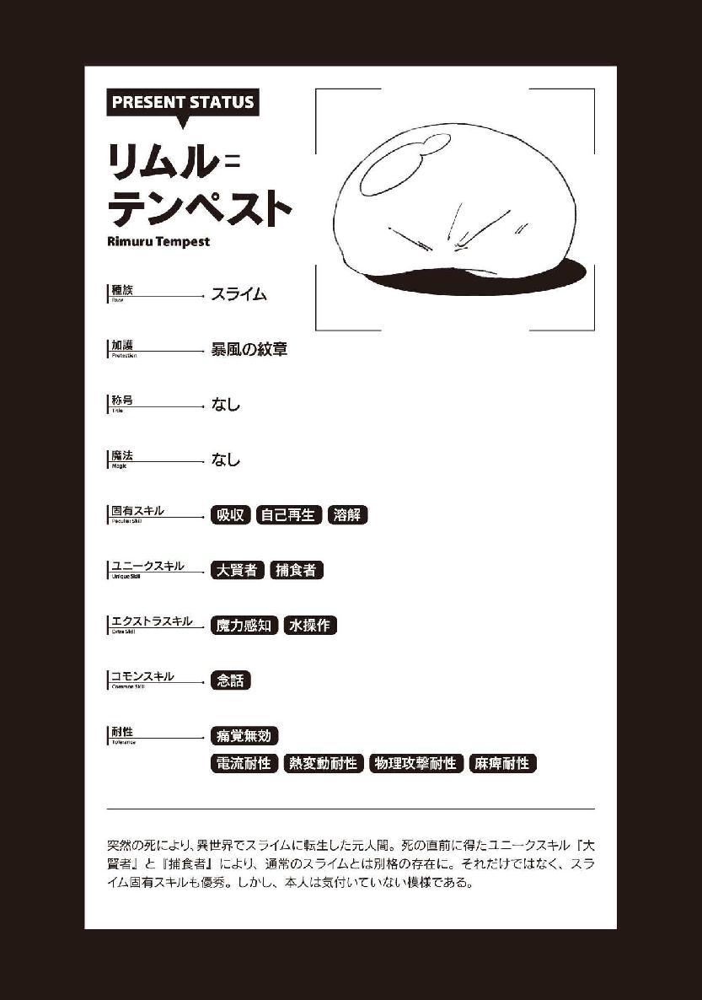
覚えている光景は、降り注ぐ炎。
掴んでいた母親の手はあまりにも軽く、その先を見るのが怖かった。
近くで焼夷弾が炸裂し、辺りを火の海に変えている。
どこへ逃げればいいのか？ 周囲を炎に囲まれて......。
私――井沢静江――は、絶望と共に途方に暮れる。
その時、強烈な光が自分を包むのを感じた。
（ああ......、私はここで死ぬのか............）
まだ八歳だった私でも、理解出来た。
頼るべき親戚もなく、母親と二人暮らし。父親は戦争へ駆り出され、顔も覚えていなかった。それを、幸せだとも不幸だとも感じないでいた。
日々それが日常であり、そういうモノと受け止めるしかなかったのだから......。
炎に包まれ死にゆく運命だった私に――
〝生きたいか？ 生を望むならば、我が声に応えよ！〟
――頭に、声が響いた。
生きたいか、だって？ そんなのわからない。
その問に答えるには、私は幼過ぎたから。
だけど、それでも――
自分を庇って手だけになってしまった母親を見て、涙が止まらなくなる。
生きたい！ そう、思った。
《確認しました。召喚者の求めに応えます......成功しました》
怖いのも熱いのも、もう嫌だ。助けてよ、お母さん――
私は泣きながら、炎に怯える事なく、生きたいと願う。
《確認しました。エクストラスキル『炎熱操作』『炎熱攻撃無効』を獲得......成功しました》
そして、私の願いは叶った。
ただし、望む通りの形ではなかったけれども。
次に目覚めたのは、魔物の巣窟。
目の前には、一人の男。
長い金髪に、青い瞳。整った顔立ちに、切れ長の眼。透き通るように白い肌。
それは、女性と見紛うばかりに美しかった。
名を、レオン・クロムウェル。
人間の〝魔王〟にして、この世界の頂点の一角。その二つ名は、〝白金の悪魔〟。
彼は私を見て、「......また、失敗だ」と失望したように呟き、私への興味を失った。
だからこそ、全身に大火傷を負い死にかけている私を殺す事はしなかったのだろう。
どうでもいい存在であったから。放置すれば直ぐに死ぬ、脆弱な存在だったから。
私は、それが悔しかった。自分はまだ生きている。無視しないで欲しい、と。
私はその後、ずっと忘れる事はなかった。
興味無さげに見下された瞬間の、その悔しさと絶望の記憶を。
私の人生は、その記憶と共に歩んでいく事になったのだ。
当時の私には、頼るべき者も生き抜く力も、何もなかった。〝魔王〟たるレオンに縋るしか、生きる術はなかったのだ。
だからこそ、力の象徴であるかのようなレオンに見捨てられる事は死を意味する。
それを本能的に理解したからだろうか？ 私は、無意識にレオンに手を伸ばしていた。
「た、助けて......」
だけど、縋るように伸ばした私の手は、魔王レオンには届かなかった。
（ああ、やっぱり私はここで死ぬんだ――）
私は、諦めると同時に怒りが込み上げて来た。
助けた上で見放すその身勝手さが、どうしても許せなかったのだ。
「嘘吐き......。生きたいか？ って聞いたくせに」
死にかけの身体で、最後の力を振り絞り、魔王に対して文句を言う。
涙が溢れ出るのを止められない。私は魔王を真っ直ぐに睨み付けた。
（勝手に呼び付けて、勝手に失望して――私を無視するなんて、酷いよ！）
理路整然とそう考える事が出来た訳ではないが、言葉にするとそうなるだろう。
結局、私を助けたのは魔王の気まぐれ。
「フッ。嘘吐き、か。待てよ......」
興味をなくしていた魔王の目に、怪しい光が灯る。何かを思い出し、魔王は呟いた。
私にはそれが不気味で、どうしようもなく不安になった。だが、大火傷により死にかけていた私にはどうする事も出来ない。私はただ、魔王の意思に翻弄されるのみだったのだ。
「ゴミかと思ったが、これは炎への適性がありそうだ」
そう言って、召喚術式〝炎の巨人〟を起動するレオン。詠唱も行わず、容易く。
そして、召喚したイフリートに、無造作に命じる。
「お前に、肉体を授けよう。使いこなせ」
それは、私の事を、人間として見ていない証拠。悔しさは、憎しみへと転じた。
これが、幼い私の心に刻まれた、呪縛。
〝生きたいか？ ならば、その意思を示せ〟
だから、気のせいに違いないのだ。魔王が、そう声をかけてくれたように思うのは。
――炎の中で、死にかけていた自分に手を差し伸べてくれたように――
だが、この憑依により私が死から逃れる事が出来たのも、また真実である。
召喚されたイフリートは、命令に従い幼き私に憑依を試みたようだ。直ぐに私は、自分の手足の感覚が鈍くなっていくのを感じた。
どうやらイフリートという炎の化物が、私の身体を奪おうとしているらしい。魔王レオンに命じられるままに、与えられた肉体を利用する為に。
《確認します。生存する為に、イフリートの憑依を許可しますか？
ＹＥＳ／ＮＯ》
（私はまだ、死にたくない！ でも......嫌だ、私が私でなくなるのは、真っ平だ）
自分に流れ込む不気味な力に怯えつつも、私は願った。
《確認しました。イフリートが憑依......成功しました。イフリートの憑依により、井沢静江の魔素を安定......成功しました。続けて、ユニークスキル『変質者』を獲得......成功しました》
こうして、度重なる偶然により、私は生き延びたのだ――
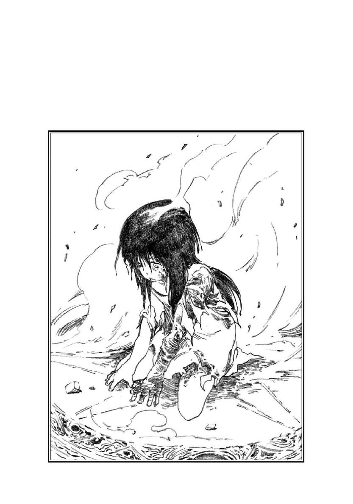
地底湖のある場所から地上へと至る道。
それは、一本の洞窟であった。
俺はその道を、ポヨポヨと進んでいく。
思ったよりも快適に移動出来る。
光の届かない暗闇であろうと、『魔力感知』を応用した視覚には昼間同然に映るのだ。
目が見えなかった時は足元を確かめながら動いていたから気付かなかったけど、スライムの移動速度もそこまで遅くはない。
普通に歩くのと変わらぬ速度で移動出来るし、駆け足並みの速度も出せる。
疲れる訳でもないが急ぐ理由もないので、普通の歩き並みの速さで移動している。
決して、駆け出して湖に落ちたトラウマのせいではないのだ。
暫く進むと、大きな門で道が塞がれていた。
洞窟の中の人工物。
怪しい事この上ない。が、ＲＰＧではお馴染みなので不思議には思わない。
ボス部屋の前には扉があるのが普通なのだ。
さて、どうやって扉を開けたらいいだろう？
『水刃』で切り刻めるだろうか？
そう考えていたら、軋む音を立てながら扉が開いていく。
俺は慌てて、道の端に避けて、様子を窺った。
「やっと開いたか。錆付いてしまって、鍵穴もボロボロじゃねーか......」
「まあ仕方ないさ。三百年、誰も中に入った事がないんだろ？」
「入ったという記録は残っていません。それよりも、本当に大丈夫なんでしょうか？ いきなり襲われたりしないですよね......？」
「がはははっ！ 安心しろ。三百年前は無敵だったのかも知れんが、所詮は大きなトカゲだろ？ 俺は、バジリスクをソロで討伐した事もあるんだ。任せろ！」
「それ、前から思ってましたが、嘘ですよね？ バジリスクってカテゴリーB+ランクの魔物ですよ？ カバルさんにはソロ討伐なんて無理ですよね？」
「馬鹿野郎！ 俺だってＢランクだぞ！ でかいだけのトカゲなんざ、敵じゃねーんだよ！」
「はいはい。わかりましたから、油断しないで下さいよ？ まあ、いざという時は私の強制離脱で逃げますけど......」
「二人が仲いいのはわかったから、そろそろ静かにお願いしますよ。あっしの隠密技術を発動させやすんで！」
何だか騒がしい三人組が入ってきた。
何でだろう？ 不思議な事に、言葉が理解出来る。
《解。意思が込められている音波は、『魔力感知』の応用で理解出来る言葉へと変換されます》
なるほど。
こちらから話しかける事は出来ないが、何を言ってるか理解は出来るのか。
良かった。俺、英語苦手だったんだよね。日本に住んでて、外国語を勉強する必要なんてないと思うんだ。海外に行く予定のある人だけ頑張ればいいのだ。
だが、今回はそういう言い訳が通じない。いつかは勉強する必要はありそうだ......。
まあそんな事はどうでもいい。
どうしよう？ 扉を開けるよりも難問だな......。
何しに来たのかしらないけど、冒険者......っぽいな。
お宝でも探しにきたのだろうか？
彼等は、この世界で初めて遭遇した人間だ。ついて行きたい気持ちはある。
しかし......、喋る事の出来ないスライムという魔物の俺が出て行ったら......問答無用で殺されかねないな。用心した方がいいだろうし、今回は止めとこう。
人前に出るのは、せめて喋れるようになってからだ。
暫く隠れて様子を窺った。
やせ気味の男が何かしたのか、急に三人の姿がぼやける。が、見えなくなった訳ではない。
隠密、と言っていたか。恐らくは、スキルの一種なんだろうな。覗き見し放題か。ケシカラン奴だ。どういう目的で覚えたんだか......後で友達になる必要がありそうだ。
三人の気配が消えたのを確認し、俺は移動を再開する。
焦る事はない。これで人間に会えなくなる訳でもない。
一歩一歩確かめながら進むのだ。〝急がば回れ〟とは、昔の人は良く言ったものだ。
俺は三人が戻って来る前に速やかに扉を潜り抜け、その場を後にした。
＊
扉を抜け暫く進むと、道が複雑に分岐している地点に到達した。どれが地上への抜け道なのだろう？ 考えた所で、俺にわかる訳がない。
一つの道を選んで中に入る。
チロチロリ！
目が合った。
そっと視線をそらす......目の前に、禍々しい大蛇がいたのだ。前世の蛇とかが可愛く思えるほど、硬度が増して棘とげしい鱗に覆われた真っ黒な蛇。蛇に睨まれたカエル、ではなくスライムである。
自分空気っす。
気付かれていなければ何とかなるか？ ソロリ、と後退しようとしたのだが、その考えは甘かったようだ。黒蛇は俺の動きに合わせ、ゆっくりと鎌首をもたげる。
舌がチロリと動き、視線で威嚇された。
駄目だ。逃がす気はない！ と言葉を交わさなくても伝わってくる。
戦うか!? 俺には、一週間特訓して得た必殺技があるではないか！
とはいえ......こんな化物と戦うには、覚悟が必要だ。
要するに、めっちゃ怖いのだ。
だが慌てるな。よく考えると、俺はもっと怖い思いをした。そう、ヴェルドラだ。あの竜に比べれば......あれ？ 思ったより怖くないかも。
これ、いけるんじゃね？ 落ち着いた俺は、冷静に黒蛇を観察した。
黒蛇は、威嚇で俺がビビッて動けなくなったと油断している。俺の事をどう料理しようかと、思案しているようだ。普通に丸呑みにするのが気に食わないのだろうか？
では、こちらも遠慮なく......俺は躊躇わずに、黒蛇の首めがけて『水刃』を飛ばした。
凄烈な気配を放つ水の刃が、空を切り裂き黒蛇へと到達する。
それは一瞬。我が目を疑う程あっけなく。放たれた『水刃』が、何の抵抗も許さず黒蛇の首を刎ねたのだ。
俺を一呑みに出来るであろう、禍々しい大蛇であったのに。
これは......、自分でも思ってた以上に強力な技だ。
人間の冒険者に使ったらスプラッタだろう。最初に試したのが魔物で良かった。
ちなみに胃袋の現在の空間使用量は、ヴェルドラが十五％、水が十％、薬草＋回復薬その他を合計して二％、鉱石と素材で三％となっており、全体の三十％を使用中である。
『水刃』に使用する水の量は、コップ一杯分にも満たない訳で......何千発『水刃』を放っても、水の残量を気にする程度ではない。
下手な魔法より役立ちそうだ。
魔物が出たら、しばらくは『水刃』で対応する事にしよう。
さて、この蛇だが。
捕食して解析したらこの蛇の能力を奪えるかな？
早速捕食した結果......。
『熱源感知』......固有スキル。周囲の熱反応を捕捉する。隠密の効果を無効化する。
『毒霧吐息』......固有スキル。強力な毒（腐食）系ブレス。効果範囲は、角度百二十度七メートル延長全域程度。
という二つの能力を得て、黒蛇への擬態化が可能となった。
この毒、ダメージと腐食効果（装備破損及び、肉体破損）を与えるみたい。普通の冒険者が戦ったら、結構てこずるんじゃないかな？
この世界には魔法があるから、案外楽勝なのかもしれないけど。
俺は暫く、黒蛇の能力解析に時間を費やした。
使える手札は多い程いいのだ。
判明した事。
一、黒蛇に擬態を行うと体積が増えた。
二、獲得スキルは擬態しなくても使用可能。ただし、威力等が落ちる場合もある。
以上の二点である。
説明すると、
一、胃袋の中で捕食した魔物の身体を分解し、ストックしているようだ。前にダメージ受けた時に損傷部分をごっそり自分で捕食して修復した事があったけど、スペア細胞みたいな感じになっているっぽい。
二、固有スキルはその魔物特有のスキルみたいだ。俺の『溶解、吸収、自己再生』がそれに当たる。ただし、固有スキルを使用するには、その魔物に擬態しないと完全な性能を出せないみたいである。それでも部分活用も出来るし、『熱源感知』など普通に使えるスキルもある。
まとめると、こんな感じだった。
『捕食者』マジ使える。
今後も、有用そうなスキルをばんばん獲得したいものだ。
＊
黒蛇との戦いから三日経った。
俺は未だに洞窟の中にいた。寒さは感じないが、ひょっとするとかなり寒いのかもしれない。
日の光が全く差し込んで来ないのだ。
暗闇の中でも視野は良好である。だが、俺はとある不安に頭を悩ませていた。
いや、そんなハズないのはわかっているんだ。しかし、どうしても考えてしまう......『俺、迷っているんじゃね？』と。
いやいや、そんなハズない。普通、最初の洞窟で迷う話なんて聞いた事ないし。
イージーな洞窟で序盤の踏み台にするものだろ？ それに、冒険者らしき三人組も迷わずに入ってきてたみたいだったし......。大丈夫。きっと道が長いだけだろう。
しかし、道がわからないのは不安になるな。なんか道がわかるいい方法はないものか？
《解。脳内に、現在通った道を表示しますか？
ＹＥＳ／ＮＯ》
ぶ。噴き出した。
なん......だと......!? そんな便利な機能があったなら、もっと早く教えてくれよ！
思わず、ツッコミを入れてしまった。
ここは、ＹＥＳだ。
オートマッピング等、邪道！ そう思っていた時期が俺にもあった。
古いゲームには、リアルに紙と鉛筆を用意し、一歩進むごとに記入しつつ攻略する物がある。一歩一歩、足元を確かめながら進めていく楽しさ。しかし、人は攻略本に頼るようになり、ゲームそのものにマッピング機能まで標準装備。攻略の醍醐味はなくなっていった。何より、その便利さに慣れてしまうと、なかなか元には戻れぬものなのだ。
何が言いたいのか、というと......そんな便利な機能があるのならば、さっさと利用するべきである、という事だ。何より、これはゲームではなく、リアルなのだし。
脳内に表示された地図を見る。
見間違いだろうか？ 同じ場所を何度もループしたように表示されているな......。
.........
......
...
脳内の地図に従い、今まで進んでいない方の洞窟に侵入。
すると、この三日間に目にした事のない風景に出くわした。
ふふふ。どうやら、道に迷っていたようだ。
この俺を惑わすとは、この洞窟も大したものである。ここは素直に洞窟を褒めておこう。
決して、俺が方向音痴な訳ではないのだから！
洞窟の入り口、外への通路が近いのだろうか。
洞窟内に苔や雑草が目立ち始めた。
太陽の光がどこからか届くのか、薄明るくなってきている。
という事は、今は昼なのか。
ここに到達するまでに、何度かの戦闘をこなした。
ムカデの化物（エビルムカデ：ランクB+）
大きな蜘蛛（ブラックスパイダー：ランクＢ）
吸血蝙蝠（ジャイアントバット：ランクC+）
甲殻トカゲ（アーマーサウルス：ランクB-）
の四種類に遭遇している。
あの黒蛇は一匹だけだったのか、二匹目には遭遇していない。
皆、強敵だった。
『水刃』の一撃で倒した俺が言っても、説得力はないかもしれないけど。
蝙蝠のヤツは何度か『水刃』を躱して噛み付いてくるし、トカゲに至っては角度が悪いと『水刃』を弾きやがった。油断出来ない。
ムカデの化物は、気配を消して背後から襲い掛かって来たのだが、『魔力感知』と『熱源感知』で常に周囲の警戒を行っている俺には通じない。背後に向けての、『水刃』で一撃だった。
大きな蜘蛛はヤバかった。
そもそも、俺は虫が苦手なのだ。生理的に嫌悪感を持っている。見た目でゴメンナサイ、ってヤツだ。だが、スライムへの転生で心も強化されたのか、逃げる事なく戦う事は出来た。
悪いが全力で！ そう思って、最大数の五本の『水刃』で切り刻んだ。
長々と見ていたくない相手だったので、勘弁して貰おう。
全て捕食させて頂いた。
所詮この世は弱肉強食。負けたら相手の糧となるものなのだ。
もっとも、蜘蛛やムカデを喰うのは躊躇われた。
そういう意味でも、俺は頑張った。
だが、もしゴキブリの魔物とか出てきたら、俺は喰う以前に全力で逃げるだろう。
勝てる勝てないではないのだ。
この世には、〝逃げるが勝ち〟という素晴らしい言葉があるのだから。
結局、この洞窟で様々な魔物を吸収出来た。
入手したスキルは以下の通り。
黒蛇『毒霧吐息、熱源感知』
ムカデの化物『麻痺吐息』
大きな蜘蛛『粘糸、鋼糸』
吸血蝙蝠『吸血、超音波』
甲殻トカゲ『身体装甲』
せっかく獲得したのだ、使いこなせるようになるべきである。そう考えた俺は、『大賢者』を駆使しつつ、魔物から得た能力の研究を行ったのだった。
黒蛇のスキル、『毒霧吐息』はぶっちゃけ使えなかった。
実は、甲殻トカゲが現れた時に黒蛇に擬態して使用したのだ。そしたら......トカゲの装甲なんのそのとばかりに、トカゲが見る見るドロドロと溶け出したのだ。
稀に見るグロい光景だった。内臓をぶちまけたようなグロいトカゲの残骸は見るのも嫌だったので、『毒霧吐息』で完全に消滅させた。思い出したくもない。
こんな危険なブレス攻撃など、威力があり過ぎて使いたくない。
だが、『熱源感知』は素晴らしい。
生物は大抵発熱している。このスキルに『魔力感知』を併せると、俺に対する不意打ちはほぼ防げるだろう。人間や、知恵ある上位魔物になるとどういう魔法や特殊スキルを使用出来るのかわからないので、油断は禁物なのだけど。
次にムカデ。
擬態するのも嫌な、その外見。
ブレスの射程は黒蛇と同程度。大きさもほとんど変わらなかった。
そこから予想した通り、スライム状態で使用すると一メートル程度の射程だ。
だが、不意打ちで麻痺ブレスを使うのはアリかもしれない。
とはいえ、一メートルまで敵に接近された時点で、擬態するか逃げるなりしないと負け確定だがな。
そしてトカゲ。
毒霧ブレスに、あっさり溶かされる程度の装甲。
期待出来ない。
ぶっちゃけ、俺には『物理攻撃耐性』もあるし、あまり意味はなさそうだ。
擬態せず、スライムの状態で使ってみた。
表面が硬くなった。
国民的ＲＰＧに出てくる、メタルなスライムみたいだ。
俺の月白色のボディが、金属的な輝きを放つ。表面が硬質化した事で、光の反射率が変わったのだろう。
ダメージを受ける実験などしたくないので、どの程度効果があるかは知らないが......。
しかし、色合いは綺麗になった。
相手をビビらせるのには使えるかもしれない。
この三体の能力はこんな所だ。
問題は、残り二体。この二体の能力は興味深い。
何が興味を引いたのかというと......。
まず、蜘蛛。
そう、蜘蛛の能力を持つ有名なヒーローの真似をしてみたい。
ヒュイ！ っと、手首から糸を出しその身を支え、高層ビルを跳躍して渡り歩く。
あの、有名な男だ。
『粘糸』というスキルは、本来獲物に纏わりつかせ、その動きを封じるもののようだ。
だが、これを使えば、あの動きが再現出来るのではないだろうか？
早速、実験である。
では、大木の枝に向けて......。
ヒュイ！ ......ブラーーーン..................。
えっと、『鋼糸』の説明だったよね。
『粘糸』？ 何それ？ ぶら下がるだけのスキルなんて、俺は知らない。
という訳で『鋼糸』だが、これは相手の攻撃を防ぐ目的で使うのか。
巣を作る際に、自分の有利な状況（迷路）の作成にも用いるようだが......一本だけ、細い糸を出し、鞭のように木に打ち付けてみた。
ピュン！ プチン。
と、あっさり弾かれた。
しかし、だ。
俺には『魔力感知』ではっきりと見えているが、この細い『鋼糸』を普通の人間の肉眼で捉えるのは、非常に難しいだろう。練習次第では、有用な武器となりそうだ。
これは今後の課題として、練習を積む事にした。
最後に蝙蝠。
俺は一番、この蝙蝠に期待していた。
『吸血』スキル？ 血を吸った対象の七割の能力を一時的に行使出来る。
どうでもいいスキルだ。
捕食の方が効果が高い。劣化スキルと呼ぶのもおこがましい。
血なんて、別に吸いたくもない。データだけ採取して、『吸血』能力の事は放置する。
俺の興味の対象、それは『超音波』である。
このスキルは、対象を惑わしたり失神させたりといった効果も及ぼすが、本来は位置特定スキルである。
元の世界の蝙蝠もそうであったように、超音波の反射で位置を特定しているのだろう。
ここで重要なのは、発声器官である。スキルそのものは、どうでもいいのだ。
この『超音波』を発する器官を、スライムボディに再現する事から始める。
何もない所から想像で身体を操作するのではなく、参考となる機能を持つ魔物を吸収出来た事はラッキーだった。
これで、発声方法を入手出来るかもしれない。
俺は、寝る間も惜しんで研究を続けた。
まあ、寝る必要はないのだけれども......。
三日三晩、不眠不休で歩きながら研究した結果!!
「ワレワレハ、ウチュウジンデアル！」
成功だ！
扇風機の前で喉を叩きながら出すような歪な声だが、確かに発声に成功した！
ここまでくれば、後は調整あるのみ！
俺は慌てる心を宥めつつ、声帯の調整を開始するのだった。
しかし、超音波は使えるな。
音波砲のような兵器があった気がする。
ソニックバスターもしくは、ソニックブラスターと呼ばれてたっけ？
出来ないだろうか？
《解。スキル『超音波』から『超振動』へ派生する可能性が在ります。ただし、現在は取得出来ません》
派生、もしくは能力の変化が必要という事か。
今は情報量が少な過ぎて、無理だったようだ。
ぶっちゃけ、何でもかんでも簡単に出来るハズもないのだ。
どうやら俺は欲張り過ぎたみたいである。
手札は多い方がいい。しかし、焦る必要はない。
発声器官を手に入れただけでも、十分に満足すべき結果なのだから。
思えば、結構沢山の能力を獲得したものである。
俺はこうして、研究しつつ出口を求めて彷徨い歩いた。
そしてとうとう、洞窟から地上へと出る事に成功したのである。
この世界に生まれ変わってから初めての、太陽の光が降り注ぐ場所へと......。
＊
久しぶりに太陽の下に出た気がする。いや、実際に数ヶ月ぶりなんだけど。
吸血鬼のように太陽の光に溶けたり、火傷を負ったりはしないようだ。
実際、そういう自分にとって危険な行動というのは、魔物の本能で理解出来るようになっているとの事。
わかっていてもやってしまう、よくある事だ。
笑えない。
自覚あるだけに改善するようにしよう。
洞窟は、森の中にあったようだ。
小高い丘という程度の山の麓に、ぽっかりと口を開けていた。大木に囲まれた中、その丘は良く目立つ。何と言えばいいのか、そこだけ太陽が見えている。一歩、森に侵入すると直ぐにでも薄暗くなりそうだ。
丘の頂上には、何やら怪しげな模様が刻まれていた。
魔法陣？ っぽい雰囲気。もしかして、前にすれ違った冒険者の皆さんが、何か仕掛けでもしていたのだろうか？ まあ、なんでもいいか。
〝君子危うきに近寄らず〟
俺はさっさと、その場を後にした。
洞窟から出て暫く経つ。どうやら、日が傾いてきたようだ。
丁度、真昼頃に洞窟を出た計算になる。
びっくりするほど正確に刻む体内時計があるので、日付ごとにわかるよう調整したい。そう思っていると、自然に変化した。
この程度は容易い事だったのか？ 相変わらず、『大賢者』は頼りになる。
現在、十六時過ぎ。
夕飯の支度の時間だが、残念ながら俺に食事の必要はない。食べてもいいが、味がわからないから余計虚しくなる。
なので、洞窟内で捕食した魔物達から新しく手に入れた能力の研究を続ける。使い方や組み合わせ、他に何か出来る事はないのか、等々。重点的に、発声練習も行った。
そうして、色々と試しながら俺は道を進んでいた。
あてがある訳ではない。
目的だって、適当なのだし。
どこか、村か町にでも出たら心優しそうな人間に声をかけてみようとは思っているのだが......。
しかし、この数日、ものすごく平和だった。洞窟内ではあれほど頻繁に魔物に襲われたのだが、外に出てからは全くと言っていいほど襲われていない。
一度だけ、発声練習をしている最中に狼に襲われたのだが、
「ア？」
と、声を出して凄んだだけで、
「キャイーーーーン！」
とか、情けない悲鳴を上げて逃げていった。
普通の大型犬よりも大きい、体長二メートル超えの大物が何匹かいたのだが、何というか、スライムを見てビビる魔物とか、情けない限りである。
俺としては、襲われないならそれに越した事はない。
狼を喰ったら、嗅覚とかゲット出来そうではあるのだが。
しかし、気になったので観察を続けてみると、どうやら狼だけではないらしい。
俺の周囲百メートル以内に、魔物が入ってくる気配がないのだ。
あれ？ なんか、俺の事を恐れているような......。
何でだろうか？
間違いなく、この森の魔物は、俺の事を恐れているように感じる。
そう確信した時、俺の『魔力感知』が魔物集団の接近を感知した。
問題事は突然やってくるものだ。
俺の目の前に、わらわらと、三十匹程の人型の魔物が現れた。
小柄な体躯。
粗末な装備。
薄汚れて、知性に欠ける表情。
それでも、知性がない訳ではないのだろう。剣や盾、石斧や弓まで装備しているヤツもいる。
俺の灰色の脳細胞は、瞬時にこいつ等の正体を見破った。
冒険者を襲う有名な魔物。そう、子鬼族だ！
まさにテンプレである。
そして襲われるのはか弱い魔物、うん、俺か？ てか、スライム相手に三十匹って、多過ぎだろうよ。しかし、何故だか恐怖は湧いて来ない。
本能が、こいつ等を恐れていないのだ。
剣は錆付いているし、防具も貧相。汚れた布を纏っただけのヤツもいる。
頑強な鱗に覆われたトカゲや、強靭な刃の付いた手足を持つ蜘蛛。
そういった魔物達を倒して来た俺としては、こいつ等の装備でダメージを受けるイメージを持てない。
それに、最悪の場合は黒蛇に擬態して、ブレスで一網打尽に出来そうだし......。
そう思って眺めていると、群れのリーダーであろう一匹が口を開いた。
「グガッ、強キ者ヨ......。コノ先ニ、ナニカ用事ガ、オアリデスヵ？」
ゴブリンって、喋れたんだ。
ある程度は、『魔力感知』の応用で理解出来るのかもしれないけど。
ってか、強き者って俺に言ってるんだよな。
武器を持って取り囲んだ上で、丁寧に問いかけてくるなんて......こいつ等は一体何を考えているのか？ 俺は興味を持った。
どうやら、直ぐにでも襲い掛かってくる訳ではなさそうだ。
俺の言葉が通じるか、試してみるのもいいかもしれない。
そう思った俺は、ゴブリンと会話してみる事にしたのである。
俺は、ゴブリンを一瞥した。
ゴブリン達は、本人達からすれば必死なのだろう。油断なく武器を構えて、こちらを窺っている。もっとも、残念ながら何匹かは既に逃げ腰になっているようだが。
そんな中、リーダー格は流石だった。俺から目を離す事もなく、こちらを見つめている。
ふむ。
こいつからは知性を感じる。案外会話も成り立つかもしれない。
通じるか？
俺は、発生させた声に思念を乗せて、相手に言葉となって通じるか試してみる。
「初めまして、でいいのかな？ 俺はスライムの、リムルという」
ゴブリンがザワめき出した。
スライムが喋ったから驚いたのか？ と思ったのだが......中には、武器を投げ捨てて平伏している者もいる。
よくわからん。
「グガッ、強キ者ヨ！ アナタ様ノお力ハ、十分ニワカリマシタ。声ヲ鎮メテ下サィ！」
む？ 思念が強過ぎたのか？
これでは意思を伝えるどころではない。勝手にビビっているし。
「すまんな。まだ調整が上手く出来なくて」
まあ、謝っておく。
「オ、オソレオオイ。我々ニ謝罪ナド、不要デス！」
言葉、通じてるみたいだな。いい練習になりそうだ。
ちなみに、話しかけたのは日本語であった。それなのに、意味が通じる事に驚いた。
「で、俺になんか用か？ 俺はこの先には、別に用事なんかないよ？」
相手が丁寧に話しかけてきたのだし、丁寧に対応すべきかとも思ったのだが、あまりにもこちらを恐れているのがありありとしている為、ちょっと強気で出てみた。
「左様デシタカ。コノ先ニ、我々ノ村ガアルノデス。強力ナ魔物ノ気配ガシタノデ、警戒ニ来タ次第デス」
「強い魔物の気配？ そんなもの俺には感じられないけど......？」
「グガッ、グガガッ。ゴ冗談ヲ！ ソノヨウナお姿ヲサレテイテモ、我々ハ騙サレマセンゾ！」
どうやら、完全にこいつ等は勘違いしているようだ。
力ある魔物がスライムに化けている、とでも思い込んでいるようだ。
所詮ゴブリン、魔物の中でも下等な存在として有名なだけの事はある。
それから暫くゴブリンと会話したのだが、話の流れで村にお邪魔する事になった。
どうやら泊めてくれるらしい。貧相な見た目なのに、親切な奴等だ。
寝る必要もないのだが、休憩するのも悪くないだろう。そう思って、俺は村への招待を受ける事にしたのだった。
俺は道すがら、色々な話を聞く事が出来た。
曰く、最近彼等の信仰する神がいなくなった事。
曰く、神の消失と同時に、魔物が活発に活動を開始した事。
曰く、森の中に、力ある人間の冒険者の侵入が増えた事。
等々。
そして、会話を続けている内に、相手の言葉もクリアに聞こえるようになってきた。どうやら、『魔力感知』の応用でする会話の遣り取りに慣れてきたお陰のようだ。
人間と会話する前に、ゴブリンで練習出来たのは良かったかもしれない。
そんな事を話しながら、彼等について行った。
村は、え？ と言いたくなるほど、こ汚い感じだった。
所詮ゴブリンの巣穴、期待してはいけなかった。
俺は、その中では一番マシに見える建物？ に案内された。
腐ったような藁の屋根で、隙間だらけであり、ベニヤ板を重ねただけのような壁の......前世の感覚からすれば、スラムの方がまだマシ！というレベルの家だった。
「お待たせいたしました。お客人」
そう言いながら、一匹のゴブリンが入ってきた。
そのゴブリンを支えるように、先程まで俺を案内して来たゴブリンリーダーが付き添っている。
「ああ、いやいや。それ程待っていません。お気遣いなく」
俺は営業で培った笑顔を浮かべて対応した。
所謂、スライムスマイルである。
笑顔一つで交渉を有利に進める。我ながら恐ろしい技である。
何を交渉するのかは、わからないけれども。
「大したもてなしも出来ませんで、申し訳ない。私は、この村の村長をさせて頂いております」
そう言って、目の前にお茶っぽいものを出された。
ゴブリンにも、そういうのがある事に驚いた。
俺はお茶を啜る（見た目には、茶碗を覆ったように見えるだろう）。
味は感じられない。当然である。味覚がないのだから当然だ。
だが、この場合は良かったのか悪かったのか......。成分を調べたが、毒ではない。毒ではないが、とても苦そうだった。
しかし、ゴブリンなりの気遣いが感じられたので、俺は残さずにお茶を飲みほした。
「で、自分をわざわざ村まで招待したという事は、何か用事があったのですか？」
直球で尋ねた。
同じ魔物だから、仲良くしよう！ そういう友好的なだけの招待ではないだろう。
村長はビクリ、と身体を震わせたが、覚悟を決めた様子でこちらを窺う。
そして――
「実は、最近、魔物の動きが活発になっているのはご存じでしょうか？」
それは道すがら聞いたな。
「我等の神が、この地の平穏を守護して下さっていたのですが、ひと月程前にお姿をお隠しになられたのです。その為、近隣の魔物が、この地にちょっかいをかけ始めまして......我々も黙ってはいられないので、応戦したのですが......戦力的に厳しく............」
ふーむ。
神って、ヴェルドラさんの事か？ 時期的には合う、な。
まあ、ゴブリンは俺に助けて貰いたい、って事か。
「話はわかりました。しかし、自分スライムですので、期待されているような働きは出来ないと思うのですが？」
「ははは、ご謙遜を！ ただのスライムに、そこまでの妖気は出せませんよ！ 何故そのようなお姿をされているのか、当方には想像も出来ませんが......名を馳せる魔物なのでしょう？」
妖気......だと？
なんだそれ？ そんなの出した覚えはないけど......『魔力感知』の視点を切り替えて、自分を観察してみた。何やら禍々しいオーラの様なモノが漂うように、俺の身体を覆っていた。
擬態や、『身体装甲』等を試した時に気付けていればと思ったのだが、後の祭りである。
これは恥ずかしい。妖気を出したままなのに、全く気付いていなかったのだ。
大通りを歩いていて、社会の窓を全開にしていた時のような感覚が、俺を襲う。洞窟内は魔素濃度が濃かったので、全く気付かなかったのだ。
これはアカン！ 明らかにアウト！
この時ようやく、今まで洞窟を出てからの魔物の反応の理由がわかった。
こんな危険そうな奴、相手にしたがる魔物はいないだろう。
見た目に騙されるバカはいない！ という事か。
こうなったら、自棄だ。
「ふふふ。流石は村長、わかるか？」
「勿論でございますとも！ そのお姿でさえ、漂う風格までは隠せておりませぬ！」
「そうか、わかってしまったか。お前達はなかなか見所があるようだな！」
だんだん気分が乗ってきたぞ！ っと。
この調子で上手く村長を誘導して、誤魔化してしまおう。
同時に、禍々しいオーラ＝妖気を消せないか試してみる。体外の魔素を操る要領で、妖気を引っ込むように念じた。
「おお......我々を試されていたのですね？ その妖気に怯える者も多かったもので助かります」
妖気を隠す事に成功した。
俺の見た目は、普通のスライムになっている。
しかしだ。もし、普通のスライムと同じ格好で歩いていたとしたら、かえって魔物の襲撃を受けて鬱陶しかったのではないだろうか？
「そうだな。俺の妖気を見ても怯えずに話しかけて来るとは、見所があるぞ」
何の見所だよ？ と、自分に突っ込みたいが、ぐっと我慢する。
「はは！ 有り難うございます。で、本当のお姿をお隠しの理由はお尋ねしませぬ。ただ......お願いがあるのです。何とか聞き届けて貰えませぬでしょうか？」
まあ、そんなとこだろう。
俺に頼みがないのならば、危険そうな魔物を招く意味もない。
「内容によるな。言ってみろ」
俺は尊大な態度を崩さずに、村長に尋ねた。
話の内容はこうだ。
東の地から、この地の覇権を狙って新参の魔物が押し寄せて来た。
この周辺には幾つかのゴブリンの村があるらしい。
この村はその内の一つなのだが、その新参の魔物との小競り合いでゴブリンの戦士が多数戦死したのだそうだ。で、その中に名持ちの戦士がいたのが問題だった。
その戦士はこの村の守護者のような存在だったのだが、その存在を失った事で、この村の存在価値が激減した。
他のゴブリンの村々は、この地を見捨てたのだ。
新参の魔物がこの村を襲っている間に対策を立てる。それが、他の村々の総意だった。
村長やゴブリンリーダーがいくら掛け合っても、冷たい対応をされたらしい。
村長達は、悔しさを滲ませてそう語った。
「なるほど......で、この村には何匹住んでいる？ その内、戦える者は？」
「はい、この村は百匹くらい住んでます。戦えるのは、雌も合わせて六十匹くらいです」
何とも頼りない。
しかし、数を大体でも把握出来るというのは、ゴブリンにしては賢いのかもしれない。
「ふむ。相手、その新参の魔物の数と種族はわかるか？」
「はい。狼の魔物で、牙狼族の様です。本来、相手一匹に対し、我々が十匹で対応しても勝てるかどうか......それが、百匹ほど群れておるようでして......」
は？ 何その無理ゲー？ 俺は、村長の目を見つめた。
決して、冗談を言っている目ではない。真剣に見つめ返してきた。
若干の濁りはあるが、ゴブリンにしては真摯な眼差しとでも言うべきか。
「その、ゴブリンの戦士達、勝てないとわかっていただろうに少数で向かったのか？」
「......いえ、この情報は......その戦士達が、命がけで入手したものなのです」
そうか、悪い事を聞いた。
更に聞いた所、ネームドゴブリンは村長の息子で、ゴブリンリーダーの兄だったそうだ。
話を聞いて、どうするか考える。
村長は何も言わず、俺の決断を待っている。
俺の気のせいか、その目に涙が浮かんでいるような......気のせいだろう。
魔物に涙は似合わない。
傲岸不遜にいこう。それが、恐れられる魔物の正しい姿！ ってものだ。
「村長、一つ確認したい。俺が、この村を助けるなら、その見返りはなんだ？ お前達は、俺に何を差し出せる？」
別に、気まぐれで助けてやってもいい。
しかし、こいつ等十匹で一匹相手に出来るかどうかという魔物が百匹。
決して楽な相手ではない。
黒蛇に擬態すれば何とかなるとは思うのだが......気安く請け負っていい話ではないのだ。
「我々の忠誠を捧げます！ 我等に守護をお与え下さい。さすれば、我等は貴方様に忠誠を誓いましょう!!」
正直言ってそんなモノ、貰っても嬉しくはない。
しかし、孤独な九十日を経験した俺は、ゴブリンとの会話すら楽しいと感じている。
人間であれば、その不潔感に嫌悪を抱いたかもしれないと思う。
だが、今の俺は魔物なのだ。病気を恐れる事もない。
それに何より、村長の目。完全に俺を頼りにしていると、気持ちが伝わってきた。
前世を思い出す。
何のかんの言って、俺は頼まれ事に弱かった。
愚痴を言いながら、後輩に文句を言われながら、依頼主や先輩の頼みを聞き入れたものだ。
「いいだろう。その願い、聞き届けよう！」
俺は大仰に頷いた。
こうして、俺はゴブリン達の主、守護者となったのだ。
●
牙狼族。
東の平原の覇者。
東の帝国とジュラの森周辺諸国との、貿易を行う商人の悩みの種であった。
一匹一匹がＣランク相当の魔物であり、油断するとベテランの冒険者でも一撃で喰い殺される。
しかし、その脅威の本質は群れでの行動にあった。
有能なボスに率いられた時、牙狼族はその真価を発揮する。
群れでありながら、一匹の魔物であるかの如く、一糸乱れぬ行動を可能とするのだ。
そして、その群れとしての評価は......Ｂランクにも相当する。
東の平原は、広大な穀倉地帯に隣接する。
その為、帝国の生命線を握る重要な場所であり、その警備は万全である。
牙狼族がいかに狡猾で、優れた能力を有していたとしても、帝国の防衛を突破する事は困難であった。仮に突破出来たとして、それは帝国を怒らせる要因となり、牙狼族の未来はそこで途絶える事となるだろう。
その群れのボスは、その事をよく理解していた。
何十年にもわたる帝国との小競り合いで学習し、その事を深く経験とともに学んだのだ。
小規模な商人に手を出す程度ならば、帝国は本腰を入れる事はない。しかし、ひと度穀倉地帯へ侵入しようとした場合、帝国は牙を剥く。
かつて、何度も同胞が犯した過ちを行う愚は冒せない。
ボスはそう考える。
しかし、魔物の本能として、このままでは自分達の進化が途絶えてしまう事も理解出来ていた。
牙狼族にとって、食事は本来必要としない。
人を襲って食べるのは、オヤツを食べる程度の認識である。
何故なら、人には魔素はあまり多く含まれていないのだから。
牙狼族にとって、食事とは魔素の吸収である。
より強い魔物を襲うか、多くの人間を殺し、〝災厄〟クラスの魔物へと進化するか。
このままでは、どちらの方法も行う事は困難であった。
牙狼族にとって、帝国は強大過ぎたのだ。しかし、このまま商人を襲い続けたとして、〝災厄〟クラスへの進化等、夢のまた夢である。
南には、肥沃な大地に森の恵、強大な魔力を持つ魔物達の楽園があると聞く。しかし、そこへ到達する為には、ジュラの森を抜ける必要があった。
森の魔物自体は、大した事がない。何度か、森から出てきた魔物を狩った経験が、そう教えてくれる。では何故、これまで森に侵入出来なかったのか？
〝暴風竜〟ヴェルドラ。
その竜の存在が、理由の全てである。
封印されて尚、その禍々しい魔力の波動は、彼等の心を怯えさせた。
あの森の魔物は、ヴェルドラの加護を受けていると信じ込んでいる。だからこそ、あの凶悪な波動の中で生活出来るのだ。
そう信じ込んでいるのでなければ、狂っているのだろう。
今までは苦々しく思いながらも、その存在のせいで侵入を諦めていたのだ。
そう、今までは......。
ボスは、その鋭い血色の瞳を森へと向ける。
あの忌々しい、邪竜の気配はない。
今ならば、森の魔物を狩り尽くし、森の覇者となる事も不可能ではない。ボスはそう思い、舌なめずりをした。そして、進撃の合図である遠吠えを行う。
●
さて、守護者となったからには何かした方がいいだろうか？ 自分的には、用心棒という認識なのだが、村長の扱いが大げさなのだ。
ともかく、戦えるというゴブリンを集めて貰った。
ところが、見るからに、皆ボロボロである。戦力としては、期待出来そうもない。
しかし、残りのゴブリンが遠巻きにこちらを窺っているのだが、子供や老人しか残っていない様子だし......。他のゴブリンからの増援はないのだ。
この状況、村長からしたら発狂ものの怖さであったろう。逃げても、食物すらない状況では飢えて死ぬだけなのだから。
そして、集められたゴブリン達は、信仰に近い眼差しで俺を見つめてくる。
これは重い。
プレッシャーなぞ感じる事もなく気楽に生きて来た俺にとって、この視線はとてつもない重圧だった。
「皆、状況はわかっているか？」
ギャグを言う雰囲気でもなく、気の利いた言葉も浮かばなかったので、真面目に質問した。
「はい！ 我々の生きるか死ぬかの戦いになる、と覚悟は出来ております！」
ゴブリンリーダーが即答した。
周囲に集められたゴブリン達も、気持ちは同じようである。
震えている者もいるのだが、それはしょうがないだろう。心と身体は別なのだ。
「気負う事はない、気楽にな。気負った所で、負ける時は負けるのだ。最善を尽くす、その事だけを考えろ！」
ちょっと格好良い事を言ってみた。
俺の気持ちが楽になった。案外、効果あるのかもしれない。
それでは、始めるとするか......。
失敗したら、ゴブリンの命運は尽きるかもしれない。
それでも、俺は我が道を往く。
傲岸不遜にいく！ と決めたのだから。
よし！ 俺は、気合を入れるとゴブリンに最初の命令を下す。
この後、何度も下す事になるであろう命令。
その最初の言葉を――
●
夜になった。
牙狼族のボスは、目を開く。
今宵は満月。戦いにはおあつらえ向きだ。
ゆっくりと身を起こすと、周囲を睥睨する。
そんなボスの様子を同胞である牙狼達は、息を潜めて窺っている。
いい緊張具合だ。
ボスはそう考える。
今夜、あのゴブリンの村を滅ぼし、このジュラの森への足がかりを作ろう。
その後、ゆっくりと周囲の魔物達を狩り、この森の支配者となるのだ。
ゆくゆくは、更なる力を求めて南への侵攻も視野に入れている。
自分達には、それを可能とする力がある。
自分達の爪はいかなる魔物であれ引き裂くし、その牙は、いかなる装甲をも喰い破るのだから。
「ウォーーーーーーーーーーーン！」
ボスは咆哮した。
蹂躙を開始する時間だ。
しかし、気になる事がある。
数日前、斥候に出した同胞が気になる情報を持ち帰っていた。異様な妖気を漂わせた、小さな魔物がいたというのだ。
その魔物の妖気は、ボスである自分を上回っていた、と。
そんなハズはない。ボスは相手にしなかった。
この森には、そんな脅威など感じ取れない。出会う魔物は皆弱かった。森の中程である現在地まで、抵抗らしき抵抗は受けていない。一度、ゴブリン十数匹に何匹か同胞が殺されたが、それだけである。高ぶって、勘違いしたのだろう。そう考え、ボスは視線を前方へと向ける。
前方に、村が見えてきた。
斥候の報告通りの場所にある。
傷付いたゴブリンの後を付けさせ、場所を特定した。この村の戦力は、今は大した事がない。
ボスは狡猾だった。油断はしない。しかし、見慣れぬモノが、村を覆っていた。
人間の村にあるような......それは、柵だった。村の家々が取り壊され、村を覆う柵が作られていたのである。
そして、前方に開口部。そこに一匹のスライムがいた。
「よーし！ そこで止まれ。このまま引き返すなら何もしない。さっさと立ち去るがいい！」
そのスライムが語りかけてくる。
小賢しい。
ボスはそう嗤う。
一ヶ所だけ隙間を造り、大勢で攻め込まれるのを防ぐつもりか？と。
所詮はゴミのような魔物の浅知恵。
あの様な柵など、我等の爪や牙の前には何の役にも立たぬというのに。
我等の力を見せつけてやろう！ そう思い、命令を下す。
十数匹の牙狼達が、まるでボスの手足であるかの如く柵へと攻撃を開始した。
牙狼族は、群れで一個の魔物となる。その真価を発揮した、一糸乱れぬ攻撃であった。
それは『思念伝達』による連帯行動。言葉で出すよりも素早く、連携が可能なのである。
最初の一撃で柵は壊されるハズだった。
だが、ゴブリン達が自らの企みを砕かれて狼狽える様を想像していたボスは、咄嗟に驚きの声を上げる事になる。柵に攻撃を仕掛けた部隊が撥ね返されたのだ。中には、血飛沫を上げて地面に転がる者までいる始末。
どういう事だ？ ボスは慌てず、様子を窺う。
開口部のスライムは動いていない。
奴が、何かしたのではないのか？
配下の一匹が傍に寄り、告げる。
（あの者です！ オヤジ殿より強大な妖気を発していたのは！）
馬鹿な！ そう思い、スライムを見る。
平原にたまに生まれる事もある、小さな魔物。
魔物と呼ぶのもおこがましい、卑小な存在である。
それが自分をも超える妖気を持つなど......有り得ぬ！ と、ボスは憤った。
牙狼族のボスは、狡猾で老獪な魔物であった。
長年生き抜いた経験を元に、油断する事なく作戦を立てる。そして、冷静に実行する胆力を持っていた。その長年の経験が、その魔物の情報による、自分よりも強者かもしれないという可能性を否定する。
ボスは、この時初めて、致命的な間違いを犯したのだ。
そしてその間違いが、自らの運命を決定づけた。
（矮小なる魔物の分際で――ひねり潰してやる!!）
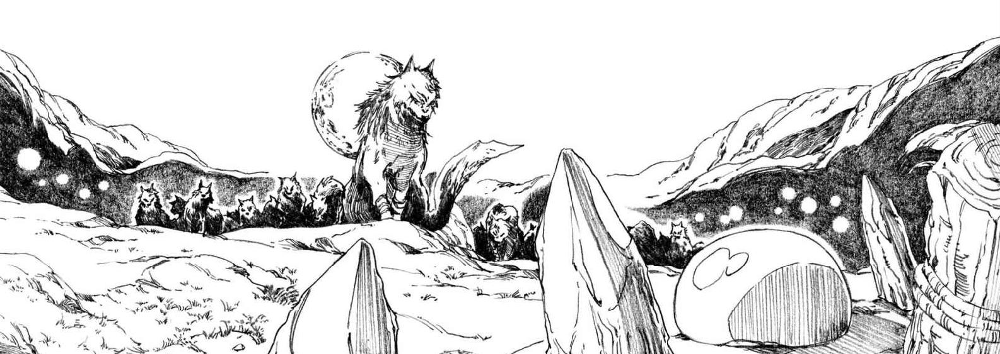
●
ああびっくりした。
いきなり飛び掛かって来るとは思わなかった。俺が「このまま引き返すなら何もしない」と格好よく話しかけたまでは良かったのだが、あっさりと無視された。
牙狼が一斉に動き出し、四方八方から柵へと攻撃を始めたのだ。
話し合いから入る予定だったのに、考えていたセリフが全部すっ飛んでしまった。本番前の練習は無駄になってしまったようだ。
作業の合間を縫って、せっかく練習したというのに。
俺が最初にした命令は、負傷者のもとへ案内させる事だった。
六十匹に十数匹の生き残りを加えたところで、作業効率はそんなに変わらない。しかし、せっかく慕ってくれるというのなら、出来る事はしてやろうと思った。
負傷者は、不潔そうな大きめの建物に一纏めにされて横たえられていた。
その負傷者を見て思う。薬草らしきもので一応の治療はしているようだったが......、このまま放置していると死ぬだろう、と。
思ったよりも傷は深い。爪や牙で引き裂かれたのか、大きく裂けて膿んでいた。
こうなれば大奮発だ。そう考え、全員の治療を開始した。
俺は、手前の一匹を捕食する。そして、体内で回復薬をぶっ掛けてから吐き出した。
村長が何か言いかけていたが無視し、片っ端から負傷者を飲み込み吐き出していった。
何匹かの治療を終えて振り向いて見ると......。
何故か、ゴブリン達が平伏してこちらを窺っていた。
何やってるんだ、こいつ等？
どうやら、こいつ等は俺が蘇生の力で回復させたのだと勘違いしてしまったらしい。
面倒だったので、ペッと回復薬を数個吐き出し、残りの負傷者の傷を癒させた。
結局、回復に時間がかかったものの、全員の治療は終了したのである。
出来るだけの治療を終え、残ったゴブリン達に新たな指令を下す。
次に行ったのが、柵の設置である。木を切ってきて作るのがいいのだろうけど、そんな時間も余裕もない。あるもので作るしかないのだ。
躊躇わず、家を壊させ、その素材を流用し柵を設置させた。
この際、村の外周を全て覆うように円を描いて設置していく。
その作業の合間に、ゴブリンの中でも目端の利く弓を装備した者を斥候に出した。
相手が狼なら、鼻が利く。無理をしないように言い含めて彼等を送り出したのだ。
決死の目をしているのが気になった。この命に代えても！ と言い出しそうな雰囲気を出していたのだ。大げさな奴等だと思ったものの、仕方ないのかもしれないと割り切った。
俺が村を訪れた翌日の夕方、柵が出来上がった。
俺は仕上げを行う。
そう、蜘蛛の糸で柵の固定を行い、強度を増したのだ。
ついでに、所々に『鋼糸』によるトラップを仕掛けるのも忘れない。何も知らずに柵に触れると、スパッ！ とその身を切り刻まれる事になる。
この戦いが終わったら、回収を忘れずに行わなければならないだろう。
柵は正面に開口部を設けた。
ここに、『粘糸』を張り巡らしたら準備完了である。
斥候が帰ってくるのを待つ。
その頃には、負傷していたゴブリンが回復し、目覚め始めた。我が身を触り、不思議そうに具合を確かめている。どうやら、回復薬の効き目はかなりのものであったようだ。
負傷具合から何度も回復薬の投与が必要だと思ったのだが......思った以上に効き目が高い。嬉しい誤算であった。
それから俺達は、村があった場所の中心に廃材の残りを集め、火を付けた。キャンプファイヤーを思い出したが、浮かれていていい場面ではない。
夜通し警戒に当たる必要がある。
俺に睡眠は不要だから、俺が見張ると言ったのだが、
「とんでもない！ リムル様にそのような事をさせる訳にはまいりませぬ」
「その通りです！ 我々で見張りは行います。リムル様はお休み下さい！」
そうです！ その通り！ 的な周囲の反応。
気持ちは嬉しいが、こいつ等の方がよっぽど疲れてるだろうに。仕方がないので、ローテーションを組んで見張り番以外を休ませた。
真夜中になる手前頃、斥候が帰って来た。
牙狼族が移動を開始した、との事。
傷を負っていたが、全員生きて帰って来たようだ。
不細工で小汚いモンスター。そう思っていたが、この二日で情が湧いた。
願わくば、誰一人欠ける事なく戦いを終わらせたいものだ。
そう思いながら、仕上げの『粘糸』を、開口部に設置したのである。
とまあ、そんな感じで準備を行っていたのだ。
戦端が開かれた以上、仕方ない。こうなったら、計画通り進めるだけである。
柵の強度に不安はあったが、牙狼の攻撃程度では壊される事はなかった。上手くトラップも効果を発揮している様子である。一安心だ。
こうなる事を予想し、柵には小さな隙間が設けてある。敵の動きを阻害し、こちらが攻撃する為の......。
矢狭間だ。
その隙間から、下手糞ながらもゴブリン達が弓を射る。何匹かの牙狼が矢を受けて、悲鳴を上げた。矢狭間をこじ開けようと仕掛けた部隊もいたが、両脇に控えた石斧装備のゴブリンに首を刎ねられる。
二時間も練習する時間はなかったのだが、彼等は必死だった。必死に俺の言う事を理解し、実行しようとした。その結果が今報われている。
確かに牙狼は強い。単体でもゴブリンを数匹は相手に出来るだろう。
群れとなれば、その戦闘力は大幅に上昇するのかもしれない。しかし、だ。単体で強いなら、複数で当たればいい。群れると強いなら、群れさせなければいい。要は、頭の使いようでどうとでもなるのだ。この世で最強の生物。それは、知恵ある人間なのだから！
ついてなかったな......俺はそう思い、牙狼のボスを冷たい視線で眺めた。
ケモノ風情が、この俺に勝てるなど......思い上がりも甚だしい。
●
牙狼族のボスは、自分の思い描いた展開とのあまりの違いに狼狽した。
配下の牙狼達が戸惑い始めている。
このままでは不味い。
牙狼族は集団でこそ、その真価を発揮する種族。ボスへの不信は、致命的な結果を招く要因になる。
ボスはその事を十分に理解していた。故に、ここで最大の過ちを犯した。あの程度の柵すら壊せぬ不甲斐なさに腹は立つが、仲間の腹立ちが自分へと向かうのを恐れて......。
ボスは、自分の力を誇示する必要がある！ と考える。
自分は群れで最強の存在であり、単体でも十分に強いのだ！ と。
その瞬間に、全ては決着したのだ。
●
牙狼族のボスの動きから目を離してはいない。
それでも、周りのゴブリンにはボスが消えた、と映っただろう。
俺にとってはゆっくりとした、欠伸が出るような動きだったが。
全ては計画通り。
幾つかのパターンを考えてはいたが、その内の一つのシナリオ通りに進んだ。
所詮ケモノ。元人間様の敵ではない。
開口部に設置した『粘糸』にボスが捕らえられる。牙狼族のボスの力であれば、『粘糸』を断ち切る事も可能であるかもしれない。
俺にその事を確かめる術はないが、それはもうどうでもいい。『粘糸』の目的は、一瞬だけでもボスの動きを止める事なのだから。
動きを止めずに『水刃』を放って、避けられでもしたら格好悪い。まして、それが味方に当たるなど最悪である。戦場の状況次第ではそうなってもおかしくない。
そういう理由での仕掛けだったが、考え過ぎだったようだ。
こいつ等は、柵を壊す段階にすら至らなかった。開口部に『鋼糸』を仕掛けるという策も考えたのだが、止めを刺せなかった場合等考慮して、今回は見送った。
この場面では、俺は圧倒的な強者を演じる必要がある。その為の仕掛けだったのだから。
俺は躊躇う事なく、『水刃』でボスの首を狙う。
『水刃』は狙い違わず、ボスの首を刎ねた。
非常にあっさりと、俺はボスを殺して見せたのだった。
「聞け、牙狼族よ！ お前等のボスは死んだ！ お前等に選択させてやる。服従か、死か！」
さて、こいつ等はどう答えるか？
ボスの弔いとばかりに、死に物狂いで向かってこられるのは勘弁して欲しいのだけど......。
牙狼達は動く気配がない。
ヤバイな......。服従するくらいなら死を！ 的なノリで一斉に向かって来るつもりだろうか？
そうなったら全面戦争だ。
数の上では負けているし、こちらも無傷では勝てないだろう。
せっかく今のところ負傷者がいないのに、負ける事はないだろうけど出来れば争いたくない。
さっきまでの争いが嘘のような静けさだ。牙狼達の視線が俺に集中している。
俺は、その視線の中をゆっくりと歩き出した。これがどう判断されるかわからないが、こいつ等にボスの死をより強く認識させる為に。
牙狼族のボスであった死体の前に辿り着く。俺を妨害しようとする者はいない。
ボスの傍に控えていた個体が、一歩、後ずさった。
俺は、牙狼族のボスを捕食した。この行為は、戦って勝ち得た正当な権利なのだから。
《解析が終了しました。擬態：牙狼を獲得しました。牙狼固有スキル『超嗅覚、思念伝達、威圧』を獲得しました》
俺の心に、『大賢者』の言葉が響いた。牙狼の能力を獲得する事に成功したようだ。
牙狼達は、目の前で自分達のボスが喰われたというのに、動く気配がない。
うーむ......。
ここまでされると、ビビって逃げ出すか、恐怖で向かってくるかの二択だと思ったのだが......。
あ！ 服従か、死かって言ったっけ？
しまった。調子に乗って、無茶振りしてしまったのかもしれない。
仕方ない、逃げ道を用意してやろう。そう思い、俺は牙狼に擬態する。
そして、大音声で咆哮による『威圧』を行った。
「クククッ、聞け！ 今回だけは見逃してやろう。我に従えぬと言うならば、この場より立ち去る事を許そう!!」
と、続けて牙狼達に宣言する。
これで、この犬っころどもも逃げ出すだろう。そう思ったのだが、予想が外れた。
（我等一同、貴方様に従います！）
服従の宣言と同時に、一斉に平伏されたのだ。犬が寝そべったようにしか見えないけれど、ね。
どうやら、俺に従う事を選択したようだ。動かなかったのは、『思念伝達』で会議でもしてたのだろうか？ まあ、争う必要がなくなったのはいい事だ。
こうして、ゴブリン村の戦いは終結したのである。
＊
何てな。
大変なのは、戦いよりもその後の後始末なのだ。
誰だよ、家壊せとか命令したの......今後、どうする気だ？
それに、今晩からのゴブリン達の寝床、どうしよう？
大体、犬共の面倒も誰が見るんだよ......。
何匹か死んだようだが、まだ八十匹は生き残っている。
これは......。ともかく今日は終了！ 考えるのは明日から。こいつ等が起きてからにしよう。
俺は取り敢えず、ゴブリンには焚き火の傍で就寝を、犬共には村の周辺で待機を命令し、その場は解散としたのだ。
明けて翌朝。
昨日一晩考えた。そして思いついたのが、ゴブリンに牙狼の面倒を見させる作戦！ である。
戦えるゴブリンの総数は、七十四匹だった。昨日の戦いでは負傷者はいない。
皆無事で、せいぜいがカスリ傷程度である。
牙狼族の生き残りは八十一匹。
こちらは負傷した個体もいたのだが、回復薬で直ぐに治癒した。
ほっといても大丈夫だっただろう。それ程牙狼族の治癒力は、高いようだ。
起きてきたゴブリン達を整列させる。
戦えない者達は、周囲で眺めていた。何しろ、家も何もない更地だ。目立つのは仕方ない。
村長は俺の隣に控えている。
何かと俺の面倒を見ようとしてくれるのだが、ゴブリンの爺さんに世話されても嬉しくはなかった。俺の美的感覚は、生前のままだからだ。
いくら魔物に転生しちゃったとしても、その点だけは譲れない。しかし、魔物の村に可愛い者などいないのだ。そこは当分諦めざるを得ない。
整列したゴブリンの横に、牙狼族を呼び寄せる。
「えーと、君達。これから君達には、ペアとなって一緒に過ごして貰う事になります！」
反応を窺う。
俺の言葉を待つという意思を見せ、物音一つさせまいという感じにこちらを見つめて来る。
ペアとなる事に、嫌そうなそぶりを見せる者はいない。どうやら大丈夫そうだ。
「意味はわかるか？ 取り敢えず、二人一組になってくれ！」
俺がそう言った途端、ゴブリンと牙狼達が隣に座る者同士、視線を交わしあった。
命令に従い、素直に二人一組になっていく。
〝昨日の敵は今日の友〟。若干違うかもしれないが、概ねそういう事で納得したのだろう。
そこで、俺はある事に気付く。こいつ等に名前はないのか？と。
呼びかけるのに不便でしょうがないのだ。
ゴブリンと牙狼達が二人一組になっていくのを尻目に、
「村長、お前等を呼ぶのに不便だ。名前を付けようと思うが、いいか？」
俺がそう言った途端、ザワリ！ と周囲の視線が俺に集中した。
周りで見物していた、非戦闘員のゴブリン達も一斉に動揺した視線を向けてくる。
「よ、宜しいの......ですか？」
恐る恐る、といった感じで村長が問いかけてきた。
なんだ？ 何を興奮してるんだ？
「お、おう。問題ないなら、名前を付けようと思う」
俺がそう言い終わった途端、固唾を呑んだようにこちらを窺っていたゴブリン達から、歓声が上がった。
一体どうしたというんだろう？
何やら、大・興・奮！ といった感じの様子なんだが......。
名前貰うのがそんなに嬉しいなら、自分らで付ければいいのに。
俺はその時、そう気楽に考えていた。
まず最初に、村長からだ。
息子に付けられた名前を尋ねた。〝リグル〟という名前だったらしい。村長に〝リグル・ド〟＝リグルドと名を付けた。名前に意味はなく、語呂がいいからというだけの適当さで。
息子がいたらリグルを名乗らせ、自分に〝ド〟を付けろ！ と冗談で言ったら、大真面目に本気にされた。更に、
「息子にこの名前を継がせる許可までいただき、感涙に耐えませぬ！」
などと、大げさに喜ぶ始末。
そんな適当に付けただけなので、若干罪悪感がよぎったが......。
まあいいや！ と流す事にした。
という訳で、ゴブリンリーダーの名前は〝リグル〟である。二世とか付けても面倒なだけだし、リグルでいいや。何やら、俺に祈りを捧げるような体勢で感激している。本当に大げさな、よく似た親子だ。
そんな感じでゴブリンに名前を付けていった。ついでなので、見物していた者も親子なら名前を確定させていく。独り身や、孤児にも名前を与えた。
こいつ等は、この先何年もこの名前を引き継いでいくのだろうか......？
孫が生まれたら、村長は〝リグル・ドド〟。ひ孫が生まれたら、ひ孫が〝リグル〟で村長は〝リグル・ドドド〟となる。本気か？ と言われそうな適当さなのだが......まあいいだろう。
こうして俺は、名前を付けていく。
その俺に、
「リムル様...大変有り難いのですが......、その、宜しいのですか？」
と、若干慌て気味に村長改め、リグルドが尋ねてきた。
「何がだ？」
「いえ、リムル様の魔力が強大なのは存じておりますが......その、そのように一度に名を与えられるなど......大丈夫なのですか？」
何を言っているんだ？ 名前を付ける程度の事に何を......？
「む？ まあ、問題ないだろ」
そう言って、名前付けを再開した。
それならば......などと、リグルドは何か言いたげであったけど、俺の意識には残らない。
そして、ゴブリンの名前を付け終わり、牙狼族の番となった。
牙狼の新たなリーダーは、前ボスの息子であった。
親父に似て逞しい身体付きに、既に風格も併せ持っている。
その金色の瞳を見ながら、名前を考える。
そうだ！ 嵐の牙で〝ランガ〟。これでいこう！ またしても、安直に名前を決めた。
自分のファミリーネームが嵐だから、その牙として嵐牙。
まあ、名前付けなんて適当でいいのさ。俺にその辺りのセンスはない。
俺が〝ランガ〟と名付けたその瞬間、俺の体内から、魔素がごっそり抜き取られる感覚がした。
猛烈な虚脱感が、俺を襲う！
なん......だ、これ？ この身体に生まれ変わってから、感じた事もない疲労感。
《告。体内の魔素残量が一定値を割り込みました。低位活動状態へと移行します。尚、完全回復の予想時刻は、三日後です》
意識はある。
俺に睡眠は、必要ないのだから。
『大賢者』の声も聞こえている。ゆっくりと、理解が俺の心に到達した。
魔素の使い過ぎ......だと？ ＭＰを使い切ったみたいなものか。
しかし、一体何をしたから魔素を消費したんだろう？ 今までの疲労蓄積が一気にきたとか？
というか、そういう感じでもなかったのだが......。
身体を動かそうとしても動かせない。
低位活動状態とは、冬眠みたいな感じになるようだ。寝てる訳ではないのだが、身体が動かないのだ。
リグルドが大慌てで、俺の身体を介抱している。
もっとも、出来る事などなく、焚き火の傍に設けられた上座に座らされているだけなのだが。
意識はあるものの、出来る事はない。
俺は、今の現象について考察する。
名前を付けていたら、魔素切れを起こしたのは何でだろう？
名前を付けるのに、魔素を消費するとでもいうのだろうか？
そういえば......牙狼リーダーに名前を付けた瞬間に、大きく魔素が抜け落ちたような......。
仮定だが、やはり魔物に名前を付けるのには、魔素を消費するという事で間違いなさそうだ。
その結論を出すのに二日かかった。
そう考えると、リグルドが心配していた理由に思い至る。
ちょっと待てよ......もしかして、魔物には常識だった、とか？
言えよ!! と思わなくもなかったが、聞き流していたのは自分だ。
ここで文句を言ったら八つ当たりだ。しかし、身体が自由に動いたら文句言っていただろう。
八つ当たり？ そんなの知らん。
しかし、最初は俺の動きが止まった事を心配していたゴブリン達だが......。
いつの間にか、俺の身体を拭く係を巡って、熾烈な争いを行うようになっていた。
何をやっているのやら。冗談ではなく、こんなハーレムは勘弁して貰いたい。
何と言うか......どこぞの、撫でるとご利益のある置物のような扱いであったのだ。
そして、三日が経過した。
完 全 回 復 ！
魔素の枯渇を起こしたのだが、倒れる前よりも魔力と魔素の総量が上がった気がする。
魔力とは、操作する力。
魔素とは、使用するエネルギーの素。
そういう認識で、大体合っていると思う。
死にかけると強くなる！ みたいな感じなのだろうか？
一瞬、試してみるか？ と思ったが、止めておこう。
そこまでする必要を感じないし、死にかけるつもりで死んでしまったら洒落にならん。
何しろ、俺は直ぐに一線を越えてしまう男なのだ。油断したら負けである。
さて、と。
俺が起き出した事に気付き、作業していたゴブリン達が集まって来た。
外に出ていた牙狼達も中に入ってくる。
それはいいのだ。だが、これは一体......。
「お前等......なんか、でかくなってない？」
そう。
体長百五十センチ程度だったゴブリン。なのに、今は百八十センチはありそうだ。
俺の目の前に控えたヤツなど、二メートル超えていそうである。
え？ ゴブリン......だよね？
牙狼達も、焦げ茶色だった体毛が漆黒に変色しており、艶やかな光沢を放っている。
一回り大きくなったようで、体長が三メートル近くになった個体もいる。確か、元は二メートル程度しかなかったハズ......。
特に目を引くのが、先頭を音もなく歩いてきた個体であろう。
その体長は五メートルに届きそうな程で、異様な妖気と風格を漂わせている。俺が倒した牙狼族のボスを軽く凌駕する巨体は、明らかに上位の魔物としての覇気を纏っていたのだ。
額には特徴的な星形の痣があり、そこから見事な一本角が生えていた。
ちょっと怖い。
そんなヤバそうなヤツが、
「我が主よ！ 御快復、心よりお慶び仕ります!!」
そう言いながら、流暢な人語で語りかけてきた。
まさか......こいつ、〝ランガ〟なのか!?
この三日間で、一体何が？
俺の戸惑いを他所に、魔物達は喜びの雄たけびを上げ始めるのだった。
＊
うーむ......。
この三日間で魔物達は大きく育ってしまった。
驚きである。
これはそう......最早、進化と言える。
名前を付ける、それは魔物の進化を促す行為なのか？
そういえば、ヴェルドラが名前をやる云々言っていたが......。
確か、〝名無し〟や〝名持ちの魔物〟、とか何とか。
そうか！ 魔物にとっては、名前を得る＝〝名持ちの魔物〟という意味。それは、魔物としての格を上げる事となり、結果、進化を促すのだ。
なるほど......、それで大喜びしてたのか。
俺の魔素がごっそり吸い取られた理由も、これでハッキリした訳だ。
魔物の進化は凄まじい。
育ったというより、最早、別の魔物と言っていいほどだ。
ゴブリンの濁っていた目はキラキラと輝き、知性の光を放っている。
雌ゴブリンに至っては......何と！ それなりに女性っぽくなっていた。
驚き過ぎて声も出ない。
え？ ......え!?
と、二度見した程である。
猿に近い、子鬼のような魔物だったのに。
雄のゴブリンは、〝ホブゴブリン〟に。
雌のゴブリンは、〝ゴブリナ〟に。
それぞれ進化していた。
リグルドに聞いた所、〝世界の言葉〟が聞こえたそうだ。
これは進化した者全てが聞いたらしく、とても珍しい事なのだ！ と、興奮して語ってくれた。
しかし、非常に不味い。
ボロ布で全身を覆えていた雌ゴブリン達だったが、進化のせいか、出る所が出て色っぽいのだ。
最早、雌ゴブと馬鹿に出来ない。
雄はそれを見て、非常に嬉しそうである。
自分達は腰布しか巻いていないというのに......。
まずは衣食住、その最初の衣から何とかしないと駄目なようだ。
それとは別の問題として、〝ランガ〟だ。
俺が回復したのが余程嬉しかったのか、まとわりついて離れない。
モフモフ好きには堪らないかもしれないが、俺はどちらかといえば、猫派だ。
まあ、嫌いじゃないけど。
「で、ランガ......俺はお前の名前しか付けてないハズだが、何で牙狼達全員進化してるんだ？」
そう、俺はランガの名前を付けた時点で魔素切れを起こしたのだが......。
「我が主よ！ 我等、牙狼族は〝全にして個〟なのです。同胞は皆繋がっております故に、我が名は種族名となったのです！」
ふむふむ。
共通の名として、種族全体が進化したのか。
彼によると、前のボスは〝全にして個〟である事を信じきれていなかった、との事。
もし信じていれば、あの戦いはもう少し別の形になっていたかもしれない。
それに対し、ランガは同胞への完全支配を成し遂げたそうだ。それにより、牙狼族から嵐牙狼族へと、種族進化を成功させたとの事だった。
まあ、要するに強くなった！ と言いたいのだろう。
とても褒めて欲しそうにしているので、
「良かったな！」
と声をかけると、千切れんばかりに尻尾を振っていた。巨体に似合わず可愛らしい。
しかし、五メートルの化物のようなでかさの狼に尻尾を振られると、風圧で飛ばされそうになった。
「ちょっとは迷惑を考えろ！」
俺がそう言って睨むと、しょんぼりしていたのが笑えた。しかも、体長が三メートル程度に小さくなったのだ。どうやら大きさを自在に調節出来るようである。
便利なものだと感心しつつ、普段はその姿でいるようにと命令したのだった。
しかし問題は、こいつ等をどこで飼うかという事だ。
ペアになった狼とホブゴブは、一緒に寝泊まりしているようだが......というか、家がなくなったので、狼の毛皮を布団代わりにしているようだ。着るものも問題だが、家も問題だった。
さて、どうしたものか。
＊
目の前に、山のように積まれた食物があった。
衣食住、食の事情を確認した俺の質問に対する、答えである。
俺が魔素を使い果たすと同時に、皆も進化が開始したらしい。
進化は一日で完了し、その喜びも戦の後の宴も、一緒に行う事にした！ と。
しかし、俺の回復がまだだったので許可を貰えず、先に食物だけ集めていたそうだ。
魔素切れを起こしている最中、俺の身体を拭くのを奪い合ってるのには気付いたが、進化や食材集めをしているのは認識出来なかった。低位活動状態とは、非常に無防備になるようだ。今後は注意が必要だろう。
だが、俺の命令を待たず出来る事をしようという意思、これは評価出来る。進化した事により、知性が大幅に上昇しているようだ。肉体よりも精神の方が、より大きな影響を受けているのかもしれない。
食事についてだが、進化する前のゴブリンだった時、木の実や食草を集めたり食べられる魔物や動物を狩りしたりして、暮らしていたようだ。
現在、嵐牙狼族と行動するようになったお陰で、行動範囲が格段に広がった。
驚く事に、ペアとなった者同士でも『思念伝達』が出来るようになったらしい。
騎馬よりも優秀な、狼を駆るゴブリン達。
最早、単純な戦闘力は足し算では語れないかもしれない。今までは勝てなかった魔物でも、簡単に狩る事が出来るようになった模様。この二日で、これまでにない程の食材を集める事が出来たそうだ。
しかし、だ。
森の恵に頼るだけの生活は、何かあった時に困る。いずれは、農耕や稲作なんぞを仕込む事にしよう。食の安定供給は、豊かな生活を送る上での基本だしな。
農耕に適した作物や、米を生産する為の稲に至っては、品種があるのか調べる事から始めなければならないけれども......それは今後の課題だ。
今日は何も考えずに、宴を楽しむ事にしよう。
その日、進化を祝い、戦の終わりを祝い、俺の回復を祝い、宴は夜遅くまで続いたのだった。
明くる日。
全ての者を集めさせた。
今後の課題は山積しているが、最も重要な事柄を伝える必要がある。
それは、この村で生活するルール！
こういう事は、最初に決めておく必要がある。
集団生活にはルールは必須。日本人なら当然の感覚である。
〝ルールとは、守らせるものであり、守るものではない！〟
などと戯けた事を言う大人もいたが（主に俺とか）、そんな事では駄目なのだ！
基本の三つだけ考えた。
この三つは、最低でも守らせたい。
その他の細かいルールは、丸投げする予定だ。
「集まったかな？ では、ルールを発表する！ ルールは三つ。最低この三つは守って欲しい」
そう声をかけ、三つのルールを発表した。
一、人間を襲わない。
二、仲間内で争わない。
三、他種族を見下さない。
この三つである。
色々考え過ぎるともっと増えていくが、最初から守れるとも思えない。俺にとって、大事と思える事を挙げてみた。さて、反応はどうだろうか？
「宜しいでしょうか！ 何故、人間を襲ってはならないのでしょうか？」
リグルが質問して来た。
リグルドが、鬼の形相で息子を睨みつける。俺の意思に反する行動に映ったのか？
もっと気軽に接してくれてもいいのだが。
「簡単な理由だ。俺が人間が好きだから！ 以上」
「なるほど！ 理解しました！」
え？ 理解......しちゃったの？ いやいや、そんな簡単に？
だが、皆の顔を見回しても、不満を持つ者がいない感じ。もっと反論が来るかと思ったのに、肩透かしもいい所だ。
「ええとな、人間は集団で生活してる。手を出すと、大きな反動が来る場合もある。本気で向かってこられると、太刀打ち出来ないだろう。そういう訳で、こちらからは手出し禁止とする。それに、仲良くする方が色々と得だしな......」
仕方ないので、用意しておいた建前の言い訳を述べておいた。
言うまでもなく、人間が好き！ というのが本音だ。なんせ、元人間だし。
この俺の説明に、ランガは深く頷いている。何やら思う所があった様子。
彼としても、人間に手を出すのは不味い理由があるのだろう。
ホブゴブ達はより深く納得した！ という表情になったので良しとする。
「他に何かあるか？」
「他種族を見下さない......というのは？」
「いや、お前等進化して強くなっただろ？ 調子に乗って、弱い種族に偉そうにするなよ！ って意味だよ。ちょっと強くなったからと言って、偉くなったと勘違いするな。いつか相手が強くなって、仕返しされてもつまらないだろ？」
皆熱心に聞き入ってくれた。
大丈夫そうだ。
所詮忠告したとしても、言う事を聞かない者も出るだろうけど。
それでもトラブルの原因は、なるべく少なくなる方がいい。
「そんな所だ。なるべく守るようにしてくれ！」
そう言って、俺はこの村での新しいルールを決めたのだった。
皆頷き、了承の意を示した。
こうして、新たな共同生活の幕が開けたのだ。
さて、ルールの策定の後は役割分担である。
村の周囲の警戒を行う者。
食料を調達に行くチーム。
村での生産用の素材を集めに行くチーム。
家や、道具類等を整備する者達。
村の警戒は、『思念伝達』の可能な嵐牙狼族のあまりの者に行わせる。
ペアの残りは七匹だったが、ランガが俺にべったりなので残り六匹で警戒を行わせた。
細かい割り振りは、元村長であるリグルドに任せる事にする。
「リグルド、君を、〝ゴブリン・ロード〟に任命する！ 村を上手く治めるように」
ぶっちゃけ、丸投げである。
それこそ、思いっきり全力で放り投げた感じだ。
だが、考えて見て欲しい。
生前の俺の仕事は、ゼネコン勤務だった。統治とか無理なのだ。何より、この村に縛られてしまい、人間の町に行く事が出来なくなっても困る訳である。
ここは多少強引にでも、上手く引き受けさせねばならない。
そう思っていたのだが――
「はは!! このリグルド、この身命を賭してその任、引き受けさせて頂きます!!」
感涙に咽びながら、あっさり引き受けてくれた。
うん。俺は基本、口だけ番長でいいや。
〝君臨すれども、統治せず〟
とてもいい言葉だと思う。たまに口だけだそう。
しっかし、このリグルド。よぼよぼでしわくちゃの死にかけたゴブリンだったのだが......今では筋骨隆々の逞しい、壮年のホブゴブリンである。下手したら、息子のリグルより強いのではなかろうか？ 一体全体どういう事やら......まさに、魔物は摩訶不思議といった所か。
「うむ。任せた！ で、家を建てる様子を見ていたが、下手だな」
ぶっちゃけ、家と呼べた代物ではなかった。所詮はゴブリンなので、技術的なものなど期待出来ないのは仕方ないのだが。
「お恥ずかしい話です......。今までは、そこまで大きな建物など必要でなかったもので......」
「ふむ。まあ、大きくなったしな。後は、衣服関係だが......ちょっと露出が酷過ぎる。調達出来ないのか？」
「あ！ 今まで何度か取引をした事のある者達が居ります。その者達からならば、衣服の調達なども行えるやもしれませぬ。器用な者達なので、家の作り方も存じておるやも！」
ふむ。
俺もゼネコン勤務だったので、良し悪しはわかるのだが、自分に出来る事は日曜大工レベル。
指導する程、技術を持っている訳ではない。そこへ来て、指導して貰えるかもしれない取引相手がいるというのなら――行ってみるのが良さそうだ。
「なるほど。行ってみるのもいいかもしれないな。で、何で取引していたのだ？ 金か？」
「いえ、冒険者の身包みを剥いだ金銭等も多少はありますが、使わずに保管してあります。金よりも、物々交換や雑用で物資を工面して貰っておりました。我等の道具は、その者達に用意して貰ったものなのです」
「ほう。で、何ていう者達だ？」
「ドワーフ族です」
ドワーフ！ 鍛冶の達人というイメージの、あの有名な種族か。
行くしかない！
そもそも、服に気を取られていて後回しにしていたが、こいつ等の武具も大概酷い。
鎧なんて、ボロ布と大差なしだったが、今はサイズが合わないのか誰も付けていない。
そこらの改善も必要があるし、この際一緒に問題が片付きそうだ。
だが、冒険者からの略奪品で使えそうなのは残っていないというし、保管してあるお金も少ししかないという。何で取引したらいいだろう？
今考えても仕方ないか......。
「行ってみる。リグルド、準備は任せてもいいか？」
「!! お任せ下さい！ 今日の昼には、全ての用意を整えましょうぞ！」
大張り切りのリグルド。
ここは任せよう。金もあるだけ用意してくれるだろう。とはいえ期待は禁物だが。
この世界の通貨か......紙幣だったら大笑いだな。
考えてみれば、俺自身、何も身に付けていないのだ。この世界に通貨の概念があっただけ、まだ良かったと言える。あるとは思っていたけど、流通形態がどうなっているのか知らない訳だし。
人間の町に行くなら、金銭価値も調べないといけないな。
まあ、それもドワーフに会ってみてからだ。この所バタバタしていたし、見物がてらのんびりドワーフに会いに行くとするか。
いつかは人間の町に行く事になる。その前に、ドワーフの町を見学するのも良い経験だ。
亜人種ではあるが、ドワーフの住む所は結構な大きさの町であるらしい。なんでも、王様もいるらしいのだが、流石にゴブリンでは会う事も出来なかったそうだ。
もっとも、街に入れただけでも大したものだ。
ゴブリンに対する差別とか、大丈夫だろうか？
俺、一応魔物のスライムなのだが、驚かれたりしないだろうか？
色々と不安はあるものの、ドワーフに会える期待の方が大きい。
俺は、久しぶりにワクワクとした気持ちになって、その夜を過ごしたのだった。
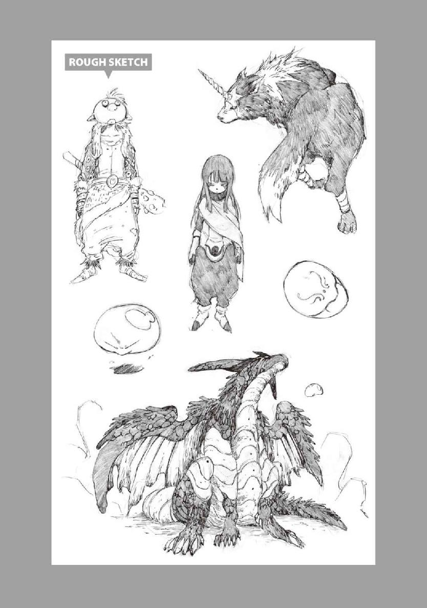
私は、イフリートの憑依により一命を取り留めた。
その事は間違いない事実である。あのまま放置されていたら、空襲で受けた大火傷により死んでいただろうから。だから、魔王レオンの意図がなんであったとしても、私は彼に命を救われたという事実を認めるしかないのだ。
炎の上位精霊であるイフリートは、当事の私の想像を絶する能力を持っていたらしい。私の中で溢れ出んとする魔素の暴走を難なく制御し、私の身体を乗っ取った。だけど、そのお陰と言ってもいいのだろうけど――私は安定したお陰で、一つの能力を得る事が出来た。
それが、ユニークスキル『変質者』だ。
本来であれば、イフリートに取り込まれると同時に消し飛ぶはずだった私の自我は、ユニークスキル『変質者』によって守られたのである。身体の支配権はイフリートが持つものの、私は炎の精霊と同化しつつも自我を保つ事が出来たのだった。
魔王は私を傍に控えさせる。
イフリートと同化したといっても、私の身体は幼いままだ。椅子に座る魔王の横に立っても、未だ魔王の顔は頭上にあった。
身体の支配権はイフリートが持っているので、私に出来る事は何もない。目に映るモノを眺める事しか出来ないのだ。
疲れる事もないけれど、酷く退屈なのが少し苦痛だった。だが、これもイフリートと同化したお陰だろうけど、私はその状況を素直に受け入れる事が出来ていた。
ある時――
「レオン様、侵入者です！」
魔王の部下の騎士が、大慌てで執務室に駆け込んで来て叫んだ。
私はいつものように魔王の隣に立っていた。他にする事は何もないし、出来ないのだから当然だ。
魔王の右隣に立つ、黒い鎧の騎士が剣を手に持った。
「ケェーーッケッケッケ！ 魔人ケーニッヒ様が、挨拶に来てやったぜ」
突然乱入してきた鳥と人間が混じったような怪人が、耳障りな声で喚き立てた。
「レオン、貴様を倒せば俺様が魔王になれる。元人間の貴様如きが魔王を名乗るなど、身の程知らずも甚だしいわ！ 俺様が代わってやるから、安心して死ね!!」
続けて好き勝手な事を言い始めた怪人にも、レオンは表情一つ変えない。
「ふむ、ワシだけでも護衛に残って正解でしたな。小物がこの場所を嗅ぎ付けたようです」
慌てる事なく冷静に黒騎士が魔王に話しかけ、手に持つ剣を抜こうとした。
「ふん。どうせ、――――辺りの差し金だろう。だが、丁度良い」
そう言って、魔王が私の顔を見つめた。
「イフリート、出番だぞ」
何を言っているのだろう？ 私は戸惑った。
「――？ どうした、イフリート？」
私の戸惑いが移ったのか、魔王も不思議そうな顔をしていた。
だが、そんな二人に焦れたのか、
「舐めやがって、俺様を無視するとは――」
ケーニッヒと名乗った怪人――どうやら、上級魔人だったらしい――が、翼のような腕を顔の前で交差させる。
その時、私にはケーニッヒの手が光っているように視えた。
《確認しました。エクストラスキル『魔力感知』を獲得......成功しました》
頭に響いた不思議な声を無視し、私は無意識に歩き出していた。一歩、二歩。そして、気付けば魔王レオンの前に立っていた。
魔人ケーニッヒと対峙するような格好で。
「先に死にたいのか、餓鬼が！ まあ、後か先かの違いでしかないがな。俺様は、そこの偽物の魔王を殺して――」
その喋り続ける声が耳障りで、何故だか私は不愉快な気分になっていた。
目の前の魔人の両翼に、それなりに魔力が込められているのが視える。
「死にやがれ!!」
その声よりも遅く、ゆっくりと羽が放たれた。どうやら私達に向けて羽を投げつけて来たのだ、と理解出来た。
一つ一つの羽に力が込められていて、触れれば破裂して痛そうだ。
そう思った時、何故だか激しい怒りが込み上げてきて、私は頭が燃えるように熱くなるのを感じた。それは、私と同化しているイフリートの怒りだったのだと思う。
そこから先は瞬く間の出来事だった。
一瞬にして全ての羽が燃え尽きて、そのまま魔人ケーニッヒに巻き付くように炎が踊る。よく見ると、私が前に突き出した右手の手の平から、鞭のように炎が伸びていたのだ。
「げ、げぇ!! やめ、止めろ。燃える、止め、止めて――」
何か叫ぼうとしていた魔人ケーニッヒだったけど、最後まで言葉を言い切る事は出来なかった。私の炎で燃え尽きてしまったのだ。
恐怖が私の心を満たす。
私が、この手で、目の前の魔人を殺したのだ、と理解した。それなのに、心に湧き出るのは不思議な満足感。当然の事を為したのだ、という曰く理解し難い感覚。
自分の心がまるで他人のものであるかのように感じられて、怖くて怖くて堪らなかった。
だけど――
それは僅かな時間で治まった。イフリートの自我が心を満たし、私の不安や恐怖を押し流してしまったのだ。
結果的に言えば、そのお陰で私は発狂する事なく生きていられたのだろう。自分が殺した事を理解しつつ、罪悪感を抱かないですんだから。いや、感じないのではなく、イフリートがそうした感情が起きないように、全てを制御していたのかもしれない。宿主である私が、狂って死んでしまわぬように......。
私の望んだ事ではないものの、イフリートとの不思議な共生関係はこうして始まった。
その後も何度も同じような事が起きたが、私は何も感じずに魔王レオンの為に侵入者を殺して見せた。
後悔はなかった。幼かった私は、善悪の判断もつかず、イフリートに全てを委ねてしまっていたから。ただ、邪魔者は排除するというイフリートの意思に引きずられるままに、何も感じずに行動するだけであったのだ。
「ふふ、ふはははは。面白い。見事に意思を示し、生き残って見せたのだな。見直したよ」
ある時、魔王が私を見てそう声をかけてくれた。何故だか、不快な気持ちにはならなくて――寧ろ、少し誇らしく思ったのだ。
「お前の名は？」
「――しず、え」
「シズ、エ？ふむ、良し。お前の名は、シズだ。今日より、シズと名乗るが良い！」
その名前を聞いて、私は素直に受け入れていた。
私は、シズ。そうだ、井沢静江ではなく、シズとして生きるのだ、と。
こうして、私は炎の魔人として魔王の城に君臨する事になった。
魔王の側近の、上位魔人として。
＊
私がシズと呼ばれるようになってから、数年が経過した。
その頃には、自分の意思で、ある程度は動けるようになっていた。イフリートとの共生関係が上手くいっていると、安心しきっていたのだ。
魔王レオンの居城には、訓練施設があった。
訓練場では黒騎士が師範となり、亜人や魔人の子供達――中には大人も交じっていたけど――を指導していた。その教えは厳しく、落第者は食事を抜かれる事もある。なので、皆死に物狂いで頑張っていた。私もイフリートの力に頼らずに、剣を持って戦う事を覚えた。皆に負けたくなかったし、特別扱いは嫌だったから。だがそのお陰で、私の剣の腕は上達したのだ。
ある日、ピリノという少女と仲良くなった。
私より少し年上の、おっとりして穏やかな性格の女の子。
実戦訓練の一環として森で狩りを行っていた時に、彼女と言葉を交わしたのがきっかけだった。毎回寄り道をするピリノを不審に思い、こっそりと後をつけたのだ。
「ピュイ！」
そこで、ピリノと戯れる風狐の幼子を発見した。ピリノが隠れてエサを与えて、世話をしていたらしい。魔獣とはいえ、まだ一人で狩りも出来ない可愛い生き物。親とはぐれて一人ぼっちの、それでも精一杯生きている命。
「あっ――！」
私が姿を見せると、ピリノは驚き風狐を背後に隠した。でも、観念したのか、
「この子、私が面倒見てあげてたの......だって、まだ幼くて可哀想......。お願い、見逃して!?」
私にそう頼んで来た。その目は不安そうに揺れていたけど、小さな命を守りたいという意思を感じさせた。
私は、風狐が羨ましかったのかもしれない。
私と違って、一人ぼっちではなかったのだと思えて。
「うん、いいよ。でも、私も一緒に世話してあげてもいい？」
私は恐る恐る聞いてみた。
ピリノは一瞬きょとんとした後、その顔に満面の笑みを浮かべた。
「うん！ こちらこそ、お願いします。私の名前はピリノ、宜しくね！」
私も名前を名乗り、お互いに自己紹介しあった。私にとってピリノは、生まれて初めて出来た友達となったのだ。
「ねえ、この子の名前は何て言うの？」
私の質問に、ピリノは不思議そうな顔をした。
「名前？ マモノには名前はないんだよ。だって、心と心で通じあえるでしょ？」
「でも、この子だけ名前ないのは可哀想だよ。ねえ、私が考えてもいい？」
「えーー？ でも、マモノに名前を付けるのは駄目だって......」
「お願いっ！ ね、いいでしょ？」
ピリノの言っている言葉は良く理解出来なかった。けれど私は、どうしても風狐の子に名前を付けてあげたかったのだ。私が頼み込むと、ピリノは不承不承頷いてくれた。でも、直ぐに楽しそうに一緒になって考えてくれたのだ。
風狐はピズと名付けて可愛がる事になった。二人で色々と考えて、自分達の名前のピリノとシズから一文字ずつ取っている。二人の友情の証のような気がして、私は嬉しかった。
「ピュイィィ!!」
私とピリノがピズと呼ぶと、風狐の子は嬉しそうに声を上げて応えてくれた。
名前を気に入ってくれたようで、私も嬉しくなった。ピリノも嬉しそうに笑っている。
（ああ、楽しいな！）
孤独だった私に、ピリノとピズは心の安らぎを与えてくれたのだ。
それからもちょくちょくと、二人でピズに会いに行った。
ピズと名前を付けてから数日で、風狐の子は手の平に乗る程度の大きさから、人の頭程の大きさにまで成長した。驚いたけど、私とピリノに懐いてくれていたので気にしなかった。寧ろ、自分で獲物を狩れる程に成長した事を喜んだほどだ。
私達が会いに行くと、鳥や野兎を仕留めてくれる事もあった。
「ねえシズ、この子をお城に連れて行ったら駄目かな？ 役に立つし、賢い子だし......」
「えっ――？」
正直に言えば、二人だけの秘密にしたかった。でも、ピリノの懇願するような顔を見ていると言い出せなかった。
私の我儘で、ピリノを悲しませたくなかったから。
城では魔獣も育成されている。これだけ賢く懐いている風狐ならば、従魔として認められるだろうとピリノは力説していた。
なので私が了承すると、深く考えずに連れ帰ってしまったのだ。
だけど――それが悲劇の始まり。
「ピュイィィーー!!」
城のホールで、魔王レオンと遭遇してしまったのが不幸だったと言えばそれまでだ。でも、本当は違う。力もない私が、他者の面倒を見る資格なんてなかったのだ。
「......逃げて、逃げてよ......ピズ!!」
レオンに遭遇した事で、ピズは恐慌状態になってしまった。抱いていたピリノの胸から飛び出し、魔王レオンに向けて威嚇してしまったのだ。そして、ピズのレオンへの敵意に反応して魔人が目覚める。
途端、私は行動の自由を失った。
近くにいるのに、遠くに聞こえるピリノの声。
イフリートは私の意思などお構いなしに、威嚇するピズへとその牙を剥いた。止めようとしても止められない私の手で、ピズを掴み焼き殺す。私自身の手、で。
それだけでは終わらなかった。
私の手から生み出された炎は、白く激しい渦となり、ピズを抱いていた少女へも襲い掛かったのだ。声を上げる事もなく、ピリノは灰となって消えてしまった。
まるで、初めから誰もいなかったとでもいうかのように。
炎の魔人はようやく満足したのか、恭しく魔王へ一礼すると静かになった。
（――今、何が？）
現実に追いつけず呆然と立ち尽くす。
（て、手が......からだ、身体が......勝手に動いた、の？ どうして。ほのお、炎で......私は、何を？）
ピズだけではなく飼い主であるピリノをも、イフリートが敵だとみなしたのだと気付いたのは、それから数時間が経過してからだった。
そう――私は、この手で友達を殺したのだ。
吐いた。胃液が出なくなっても嗚咽を続ける。
どうせなら私も殺してくれたら良かったのに――
狂いそうな程の後悔と悲しみが私の心を満たし――直後、何事もなかったかの如く、心が落ち着いた。
泣きたくても涙も出ない。狂いたくても狂う事も出来ない。叫びたくても、声が出なかった。
私は、心まで魔人になってしまったのだろうか？ 心を埋め尽くす程の恐怖の感情が湧き出てきて、そして直ぐに冷静さが戻ってくる。私は最早、人ではなかったのだ。人並みの幸せを求めるのは、どんなに願っても叶わぬ願いだったのだと悟った。
私はその日から泣くのを止めた。どの道、涙は既に枯れ果てて、一滴たりとも残っていないのだろうと思った。
だって、その日私は、人として大切なモノを失ってしまったのだから。
魔王レオンは、そんな私を冷たく見つめていた。罰するでもなく、ただ静かに。
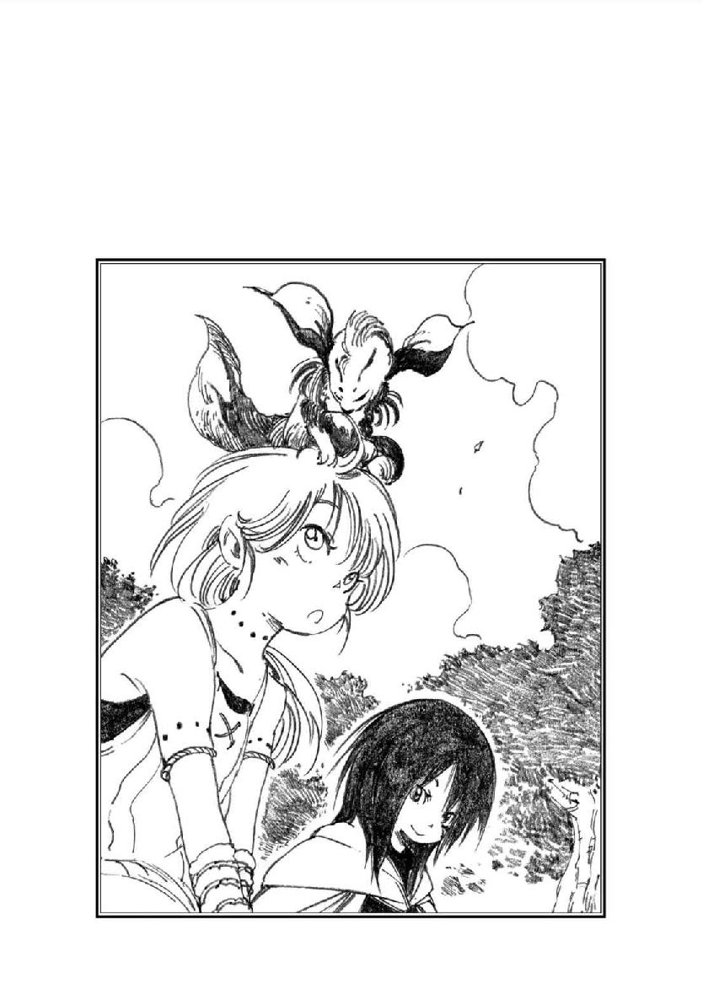
リグルドは宣言通り、昼までに準備を整えた。
ドワーフの王国に向かう者の選抜も、抜かりなく行っている。
自分の息子であるリグルを筆頭に、計五組。後は、俺とランガである。
ところで、リグルには隊長としての仕事を任せなくてもいいのだろうか？
少し心配になったが、本人達は納得している様子。
リグルドの奴も若返った感じでやる気に満ちているし、俺が心配し過ぎなのかもしれん。
さて、荷物を受け取ると、ランガが嬉しそうに俺を背中に乗せた。
ボヨヨーーーン！ っと、ランガの毛皮の中に埋まる。思った以上にふわふわで気持ちいい。
落ちないように周りの毛で自分の身体を固定した。『粘糸』の出番である。こういう場面で手足がないのは本当に不便だが、そこは能力で何とかするしかない。こういう機会も有効活用すべきである。
俺は、密かに糸を操る練習をしているのだ。
糸で敵を斬る！ これは、一つのロマンなのではないだろうか？ 習得出来るかどうかはわからないが、先は長い。地道に練習を重ねていこうと思う。
荷物の中身は、お金と食物だ。
食物は三日分。それ以上日数がかかるなら、自給自足する予定。
日持ちするのを持って行ってもいいが、かさ張るのを避けたい気持ちがあった。
俺が飲み込むと、いくらでも持てるのだけど......甘やかすのは良くないだろう。
自分に食事の必要がないからこそ、冷静に判断したのだけどね。
お金は、銀貨が七枚に銅貨が二十四枚。
まず間違いなく、大した額ではない。
期待していなかったので問題ない。後は、着いてからどうするか考えよう。
＊
ドワーフの王国は、ゴブリンの足で歩いて二ヶ月の距離にあるそうだ。
森の中を流れるアメルド大河。
これを辿っていくと、山脈に出るのだとか。
その山脈に、目指すべきドワーフの王国がある。
東の方にあるという帝国と、ジュラの大森林周辺にあるらしい複数の国家。
この間を隔てるのが、カナート大山脈である。
故に、貿易するルートは三つにわけられる。
一つはジュラの大森林の中を通り抜けるルート。
そしてもう一つが、大山脈を越えていく険しい登山道。
最後に海路。
本来、ジュラの大森林の中を通り抜けるルートが最も短く安全なのだが、何故かあまり利用されていない。主に、大山脈を越えていく険しい登山道が主流となっている。
海路については、コストがかかる上に、海の巨大魔物の脅威もあるらしい。故に、最も利用の少ないルートだそうだ。
その三つのルート以外に、ドワーフ王国を通り抜ける事も可能なのだが、通行税がかかってしまう。また、商品を輸送している場合は関税もかかる上、荷物の検査も受ける必要がある。危険物持込を防止する目的がある以上、これは必須らしい。少数の者ならば良いだろうが、隊商を組んでの通り抜けには、時間とコストがかかり過ぎるので敬遠されるようだ。
安全なのは間違いないので、得られる利益を含めた懐具合と相談となるのだろう。
今回は、帝国に用事がある訳ではない。
東に森を抜ければ帝国だが、北上しカナート大山脈を目指すのだ。
山頂まで登る必要はない。ドワーフの王国は、アメルド大河の上流部であるカナート大山脈の麓に、その領土を構えている。
山脈の、自然の大洞窟を改造した、美しい都。
それが、ドワーフの王国なのだ。
俺達は予定通り、アメルド大河に沿って北上していた。
川に沿っての移動なので、迷う事もない。念の為、脳内に地図も表示しているけどね。
案内は、一度ドワーフ王国に伝令に行った事のあるゴブタという者がいたので、そいつに頼んだ。
俺の前を、先導して走っている。
しかし、黒狼（＝嵐牙狼族）に進化した牙狼達だが、速い！ しかも疲れを見せない。
移動開始して三時間程になるが、一度も休憩を入れていない。にもかかわらず、時速八十キロ近い速度で走り続けている。
でこぼこした岩場とかもあったのだが、お構いなし。乗っている者を振動で疲れさせない走り方をした上で！ である。
何というか、非常に楽だ。
このペースだと、一週間も必要ないかもしれない。
まあ、無理せずいけばいい。
衣服や住処は早く用意しておきたい所だが、慌てても仕方ないのだ。
「おーい、あんまり無理はしなくていいぞ！」
と、声をかけておいた。
何故か、若干速度が上がった。
この三時間、バイクよりも速いスピード感や、流れゆく風景を楽しんでいた訳だが、そろそろ暇になってきた。
普通なら、この速度で会話するのは至難の業なのだが、俺には牙狼族のボスから捕食して得た、『思念伝達』がある。皆で仲良くお喋りしながら、この旅行を楽しむのもいいかもしれない。
そう思い、皆と思念のネットワークを組む。
さて、何から聞くかな......。
「リグル君。そういえば、君のお兄さんは、誰に名前付けて貰ったの？」
「は！ 私など、呼び捨てで構いません！ で、兄の名前ですが、通りすがりの魔族の男に付けて貰ったそうです」
「ほう。魔族がゴブリンの村に来たのか？」
「はい、十年程前の事です。私がまだ子供の頃に村に数日滞在し、兄に見所があるから、と」
「へえ。いい兄貴だったんだろうな」
「はい！ 自慢の兄でした。その魔族ゲルミュッド様も、いずれは自分の部下に欲しい！ そう仰って下さっていたほどです」
「その時に連れて行かれたりしなかったんだな？」
「はい。当時は兄もまだ若かったですし、何年かして、より強くなった頃にもう一度来ると仰って、旅立たれました」
「そうかそうか。今度来たら、様子が変わりまくっててビックリするだろうな！」
「そうですね。しかし、今はリムル様に仕える身。栄えある魔王軍とはいえ、ゲルミュッド様について行く事は出来ませんが――」
「魔王軍？ あったんだな、そういうの。てか、誘ってくれるかわからんのに、自信ありげだな？」
「ええ、自信というか、確信です。兄も名持ちの魔物として進化しておりましたが、ここまでは変化しておりませんでした。明らかに、進化の格が違います。〝世界の言葉〟など、一生聞く事はないと思っておりましたし、感動であります！」
周りで話を聞いていたホブゴブ達も、そうだそうだ！ とばかりに頷いていた。
そんなモノなのか？
名前を付けたら進化する。ただし、名付け親によって進化の程度も変化するのか......。
今度、比べる機会があったなら、実験してみるか。
しかし、魔王軍。やはりあるのか、この世界には！
魔王が攻めてきたりするのだろうか？ というか、その時どっちの味方をすれば？
まあ、攻めて来た時に考えよう。
幸いにも、〝勇者〟という存在もいるらしいし、魔王の相手は勇者がするというのは常識だ。
三百年経って、勇者が生きているかは疑問だが......きっと転生なりなんなりして、元気に修行でもしてるだろう。
だがまあ、一応、記憶の片隅にメモっておく。
さて次の話題は。
「ランガよ、俺ってお前の親父さんの仇って事になるよね？ その辺気にしなくていいの？」
と、えらく懐いてくれている黒狼に問いかけた。
「正直、思う所はあります。しかし、戦いにおいての勝敗は、魔物にとっての必定。たとえ、どのような戦いであれ、勝てば正義と心得ております。負ければ、何も残らない。されど......、我が主は、我々を許したのみならず、真名まで授けて下されました！ 感謝こそすれども、恨むような事はありません！」
「ふむ......。もし、リベンジをしたいのなら、何時でも受け付けてやるよ」
「フフフ。進化して、よりハッキリと認識出来ております。前の戦いの時、もし本気を出しておられたならば、我々は皆殺しとなっておりました。そうなっていれば、種族の悲願であった進化を行う事もなく散っていたのです。我等の忠義は、我が主、唯お一人のものでございます！」
何を言ってるのやら......。
確かに黒蛇に擬態したならば、全滅させる事も出来たかもしれないが、そんな危険な賭けなどする気にならない。こいつは、過大評価し過ぎだな。
まあ、勘違いしてくれる分には全く困らないか......。
「わかるか？ お前も成長したようだな！」
「はは！ 有難き幸せ！」
適当に話を合わせて、頷いておいた。
まあ、親を殺されている訳だ。恨みがないと言えば、嘘になるだろう。
ランガの奴が、いつか俺にリベンジに来たとしても、快く受けてたってやろうじゃないか。
俺も油断していられない。それまでに、確実に強くなっておく必要がありそうだ。
何しろ、どう見ても、今では黒蛇並みに強くなっていそうな感じなのだから......。
そんな感じで、話をしながら道を進む。
予定を遥かに上回る順調さだ。
「ちょっと急ぎ過ぎではないのか？」
「大丈夫です！ 我々、進化のお陰か、それ程疲れなくなっております！」
「我等の事は心配なさらないで下さい。我が主のように、睡眠が不要な訳ではありませぬが、長時間は必要ありませぬ！ 食事も頻繁に必要という訳ではなく、数日ならなくても支障はありませぬので！」
リグルが答え、ランガもそれに追随した。
他の奴等の様子を見ても、皆やる気に満ち溢れている。
これでは、一番何もしていない俺が、一番やる気がないみたいに見えてしまうではないか。
一日の半分は走り続けている事になるのだが......、こいつ等本当にタフになったものだ。
二日目の終わり、就寝前の食事を摂っている時。
今向かっているドワーフ王国について、ゴブタに聞いてみた。
「は、はいぃぃ！ え、ええとっすね、正式には武装国家ドワルゴンという名称っす。ドワーフ王は英雄王と呼ばれる人物で――」
俺に声をかけられ、緊張半分喜び半分で焦ったのだろう。
舌を噛んだのではないか？ という程、慌てて返事してきた。
そんなゴブタの話をまとめると、現在の王ガゼル・ドワルゴは、初代より数えて三代目になるらしい。若き日の祖父に似た覇気を纏った偉大な英雄であり、この地を公平に統治する賢王としての名声が高いそうだ。
まさに、現代に生きる英雄の一人。
ドワーフの初代英雄王グラン・ドワルゴが国を興してから千年経つが、初代の遺志を継ぎ、歴史と文化、そしてその技術を守り、発展させてきたという。
そんな賢王の治める地が、武装国家ドワルゴンなのだそうだ。いやはや、長命な英雄王に統治されているのなら、それはさぞかし素晴らしい国家なのだろう。
俺はワクワクした気持ちになり、後どのくらいで到着するのか質問する。
「ところで、ゴブタよ。後、どのくらいかわかるか？」
「恐らくですが、明日には到着出来るかと思うっす！ だいぶ山が大きく見えておりますので！」
なるほど、言われて見れば、山が大きく見えている。
昨日までは、その姿も見えていなかったのだが、とんでもない移動速度だ。
「ところで、ふと気になったのだが、何しにドワーフの王国まで行ったのだ？ たまに行商の者がやって来るのだろ？」
ゴブリンの王国についてリグルドに聞いた際、行商のコボルト族がいるという話を聞いていた。
わざわざ、二ヶ月もかけてドワーフ王国まで出向くのも変な話である。
「はい！ 魔法の武器や防具はですね、ドワーフ族が高値で引き取ってくれるっすよ。とは言っても、道具類で支払ってくれるんすけど......わざわざ行商の者に持たせて運んでくれるので、助かっていたっす！ それに、村周辺の魔物には魔法武具を使える者はいないんす......」
なるほど。
たまに、冒険者が持っている武具を売りに行っていたという事か。道理で、碌な装備が残っていないと思った。
コボルト族には物の良し悪しがわからないので、わざわざ高値で引き取ってくれるドワーフ王国に出向いたのか。もっとも、ゴブリンに倒されるような者は、初心者が森で迷ったようなひよっこだろう。大した物を持っていたとは思えなかったが......。
「それだけではありません。ドワーフ達の作る品は、武具を筆頭に上質なものばかり。人間達も認める素晴らしいものばかりなのです。あの地ではそれらの品を求めて、人間も亜人も知恵ある魔物さえも関係なく集います。それがドワーフ王国の伝統であり、あの地での争いは王の名において禁じられているのです」
ゴブタのたどたどしい説明に加えて、リグルが補足してくれた。
装備を売るという目的よりも、必要な道具を買う方が重要だったという事か。そして何よりも、その中立性により魔物であっても差別されずに道具を調達してくれるのが魅力であるようだ。
「それを可能とするのが、武装国家ドワルゴンの強大な軍事力です。コボルトの商人共に聞き及んだ所、この千年ドワーフ軍は不敗を誇るのだとか......」
ドワーフ王国は、重武装の歩兵の壁に守られた高火力の魔法兵団を有するらしい。戦う相手は歩兵の壁を突き崩す事も出来ずに、魔法の火力による攻撃で全滅するという。
その実力を裏付けるもの......それこそが、高い技術力で製作される装備品にある。
最先端の技術で作られた武具は、人の造りし武具を圧倒的に上回る。そんな武力を持つ国と、面倒事を起こしたい者などいないだろう。
当然の流れとして、人はドワーフ族との争いではなく、友誼を結ぶ事を選んだ。だからこそ、その支配下において魔物と遭遇したとしても、そこで争いを起こす愚を犯す者は少ないのだろう。
魔物であっても差別せず道具を融通してくれるとは、ドワーフとは案外、親切な種族なのかもしれない。上手くいけば、友好的な関係を築けると思う。
というか、ぜひ上手くいって、良好な関係になりたいものだ。
人と魔物が交わる都。
ドワーフの王国は、この地上にある異質な地の一つなのだろう。
武力の為の道具が溢れる都でありながら、平和を享受する国。武器商人の本拠地が、最も争いから遠いというのは、ある意味......皮肉な事であるのかもしれない。
それが、この旅の間に俺が聞いた、武装国家ドワルゴンの全容であった。
そして、旅に出てから丸三日経過した。
カナート大山脈の麓に広がる牧草地。
山脈の大洞窟を改造した美しい都。
大自然が創造した天然の要塞。
武装国家ドワルゴン。
ドワーフの王国に到着したのだ。
＊
門の前に行列が出来ていた。
天然の大洞窟を塞ぐように設けられた大門。
この大門が開くのは軍の出入りの際のみであり、月に一度の頻度であるそうだ。
残念ながら、今日は閉まっている。
その大門の下の方に小さな出入り専用の扉が設置されており、普段はそこを利用するようだ。
大門の両側に扉があるのだが、右側には列が出来ていない。どうやら、貴族等のお偉い方々御用達の通路らしく空いているのだろう。行列が出来ているのは左側の通路であり、フリーパスで出入りしている者もいれば、別室でチェックを受ける者など、様々である。
その左側にした所で、武装国家の名に恥じぬ厳重な警備体制であるのは同様だった。
武装国家の名は伊達ではない、という事だろう。
中に入ると比較的自由に活動出来るらしいけど......それにしても凄い行列だ。
旅よりも、ここで待つ方が時間を取られそうである。
「流石はドワーフ王のお膝元だぜ、凄い威容の門だな」
「見ろよ、あの兵士の着ている防具。俺達が十年働いても買う事は出来そうもないな......」
「そりゃあそうだ。なんせ東の帝国も、ここと表立って事を構えるのを避けているらしいぜ。あの装備を見れば、それも当然だわな」
「言うまでもねえ。ドワーフ達と事を構えると、二度目はないしな。どこの国も、苛烈な報復で蹂躙されたくはないだろうさ！」
左側の通路に並び周囲を観察していると、そんな会話が聞こえて来た。
この世界のドワーフとは、俺が想像したような温和な性格でないのだろうか？ 案外過激な性格をしているようである。
この国は自由貿易都市にして、異種族間の交易の中心地。故に、絶対中立都市としての顔を持つ。この都市内部での武力行為をドワーフの英雄王が許す事はない、というのは冒険者の間では有名な話なのだとか。
平和を維持するのに武力が必要というのは、異世界でも共通の話なのだろう。
俺がそんな事を考えていた時、
「おいおい！ 魔物がこんな所にいるぜ!? まだ中じゃないし、ここなら殺してもいいんじゃね？」
「なあ、何並んでるんだよ。生意気だな、お前等。殺されたくなければ、その場所譲れ！ 後、荷物全部置いていけ。それで今回は見逃してやる！」
などと、意味不明な供述をしており......じゃなく、こちらへ向けられた害意ある声が聞こえた。
今ここには、ゴブタと俺の二人しかいない。何しろ、腰布だけの集団を引き連れていくと、悪目立ちする。ここは、案内役のゴブタと俺の二人で行く！ と、俺の発言で決定したのだ。
リグルも行きたそうだったのだが、断った。
彼等は、森の入り口で野宿し、俺達の帰りを待っている。
という訳で二人だったのだが、いいカモに見えてしまったのだろうか？
列に並ぶのを嫌った二人組の冒険者に、目を付けられてしまったようだ。
「おいおいゴブタ君、なんか聞こえないかね？」
「はい、聞こえるっすね......」
「前来た時も、絡まれたりしたのかね？」
「当然っす！ ここでボコボコにされて、コボルトの商人さん達に拾われたっす！ あそこで拾われなかったら、俺、死んでたかもしれないっすね？」
「......絡まれたんだ、じゃあ、しょうがないか？」
「弱い魔物の宿命みたいなもんなんすよ......」
絡まれたらしい。しかも、当然なのだと。
先に言っておいて欲しかった。
ゴブタは、何やら悟ったような目をして、項垂れていた。
やっと緊張せずに俺と話せるようになったのに、今回の件で元に戻ったりしないだろうか？
少し心配だ。
「おい！ 雑魚い魔物のくせに、こっち無視してんじゃねーよ！」
「ってゆーか、喋るスライムってレアじゃね？ 見世物として売れるんじゃね？」
などと、ウザイ会話を続ける二人組。
仏のように慈悲深いと言われた事もあったような、ないような俺だが、これには腹が立ってきた。
「ゴブタ君......。前に、俺が言ったルール覚えているかね？」
「はい！ 勿論っす！」
「そうか。では、少し目を瞑り、耳を塞いでおくんだ！ 決してこっちを見てはいけない！」
「？ なんか良くわかんないっすが、了解っす！」
さて、と。
ルールを決めた俺が、真っ先にルール違反......そういう風に思われるのも、教育上宜しくないだろう。邪魔なゴブタ君には目を瞑って貰った事だし、ゴミ掃除をしますか！
その時、右側の男の視線が動いた。
その先を確認する。三人組がニヤニヤと笑いながら、こちらの様子を窺っていた。
目の前の二人組は、剣士と軽装備の男。恐らく盗賊系の職業。
三人組は、魔法使いか僧侶っぽいローブ姿が二人と、大柄な戦士。
予想する――こいつ等は一つのパーティで、二人が俺達を追い出し、順番を確保。そして、三人が追い出された俺達を陰で始末し、何食わぬ顔で二人に合流する――恐らくは、そういうシナリオだろう。
そうやって、弱い魔物がいたら殺して荷物を奪ったりしていたのだろう。
よく考え付くものである。
しかし......今回は、相手が悪かったな！
「おいおい！ 順番は守れよ！ 俺は寛大だから、今なら許してやる。さっさと後ろに並びな！」
挑発開始だ。
二人組は一瞬きょとん、となってから、一気に顔を真っ赤にさせた。
沸点の低い奴等だ。
「クソ雑魚の魔物のくせしやがって、舐めてんじゃねーぞ！」
「おいおい、お前、死んだぞ！ 大人しく身包み置いていくなら、殺さずにいてやろうと思っていたんだが、な......。俺達を怒らせた以上、そうはいかんぞ」
などと、三下っぽいセリフを言い出した。
ふっ。ゼネコンではな、めっちゃ怖い顔したおっさんを顎で使えるようじゃなきゃ勤まらないのだ。下請負の業者の従業員には、身体に落書きしたお茶目な親父もいるのである。
この程度の若造の脅しなど、屁でもない。
「クソ雑魚の魔物？ それは俺の事か？」
「てめーに決まってるだろうが！ スライムなんざ、雑魚中の雑魚だろうよ！」
「さっさと、こっちに来い。喋れるようだし、殺さずに魔物の奴隷にしてやるよ！」
魔物の奴隷？ そんなのもいるのか？
それは一先ず置いておく。
周囲の商人や冒険者風の者達も、この騒ぎに気付き始めている。
まずは注目させないと。
正当防衛なんて概念が、あるのかどうかは知らないけど......後になって、少しでも証言が出れば御の字である。
しかし、誰か助けてやろう！ という優しい人間はいないのか？
俺が美少女だったらいたかもしれないが、スライムじゃ無理か。
「雑魚雑魚と、えらく舐めた口を叩くではないか！ それに、スライムだと......？」
「どっからどー見ても、スライムだろうがよ！」
「てめー、ふざけやがって......！ お前みたいな小物に馬鹿にされるなんて、許せんわ！ やっぱ殺す！ 今更命乞いしても遅せーぞ!!」
そして武器を構える二人組。
あ！ とうとう、こいつら抜きやがった。
あーあ。最初に会話する人間がこれとは、ついてない。魔物の方が友好的だなんてな。
周囲の者達は、俺達を遠巻きにするように離れ始めた。まきぞえになりたくないのだろう。
門番もこの騒ぎに気付いたのか、慌ただしく動き始めている。
それを横目に、俺はゆっくりと前に出る。そして、
「ククク。俺が小物、だと？ スライム？ いつから俺がスライムだと勘違いしていた？」
思わせぶりに言ってやる。
どー見てもスライムなのだ。そんなもん最初からスライムと思われていたに決まってる。
これは演出なのだ......多分。
「なんだと？ はったりも大概にしろよ！」
「ふん！ スライムじゃないと言うなら、さっさと正体を見せろよ！ 死んだ後では、言い訳も出来んぞ！」
変身するのを、待ってくれるようだ。
計画通り！
スライムのまま戦っても、勝てると思う。
だが、手加減しにくいので、スパッ！ と真っ二つにしてしまいそうだった。
気絶ですむように、威力を調節するのは難しいのだ。
「いいだろう。見せてやろう、この俺の真の姿を！」
などと思わせぶりに叫び、抑えていた妖気を放出する。
勿論、少量で。
少量の妖気に勘付いた者がいるか、周囲を確認してみた。遠巻きにこちらを見ている者数名が気付いた程度。目の前の馬鹿二人にその仲間っぽいヤツは、気付いた気配がない。
こいつ等、口ほどにもなさそうだ。
様子を窺うのはもういい。さて、何に変身しようかな......。
俺の身体から黒い霧が噴出する。
そして、俺の身体を覆い......、霧の晴れた後、そこに一体の魔物が出現する。
黒い狼。
あれ？ 前捕食して直ぐに擬態した時は、牙狼族の形状だったのだが......今は、進化したランガ達と同様の黒い毛並み。そして、ランガすら上回る、体躯。
額には二本の角。
擬態：黒嵐星狼
......どうやら、捕食した魔物の系統が進化したら、俺の擬態にも適用出来るみたいだ。それどころか、ランガの進化の更なる先という感じの姿だった。ランガが一本角だった事からも、こちらが上位の姿であると考えて間違いないだろう。圧倒的な力を感じる。馬鹿二人も、この姿見たら流石に逃げるだろう。そう思ったのだが......。
「は！ 見た目だけ厳つくしても、てめーがスライムなのは変わらないんだよ！」
「おいおい、それで俺等がビビッて逃げる！ とでも思ったか！」
全然気付いてない！
おいおい、普通は気付くと思うのだが......。見たらわかるレベルでヤバそうだろうよ！
そもそも、スライムが変身したなら、幻覚か何かはわからなくても警戒はすべきだろう。
それなのに、こいつ等全くお構いなしであった。
隠している三人の仲間がいる事に安心しているのかもしれないけど......。
使える能力が増えている。
『超嗅覚、思念伝達、威圧、影移動、黒稲妻』の五つか。
『影移動』は、ランガ達が今練習中のスキルだな。
ペアとなった者の影に潜み、呼ばれると出現する！ というのが目標である。
今は、影に入る練習なので、先は長い。
とすると『黒稲妻』だが......試さなくてもわかる。試したら、この目の前の哀れな男達は黒こげコースだろう。
俺の予測は甘いから、もっと酷い状態も有り得る。となると、使えるスキルがない。
バカに『威圧』が効けば良かったのに！ ある意味、バカって無敵なのか？
何しろ、見物してる者の方が、ビビッて腰を抜かしている始末なのだ。
「やれやれ......、もういいや。面倒くさいから、かかって来い！」
先制攻撃を譲った。擬態状態でダメージを受けると、どうなるのか？
実は、ちゃんと実験して確かめている。トカゲに変身して、攻撃を受け続けてみたのだ。
その時判明したのだが、ダメージが一定量を超えると擬態が解けるようだ。その際、スライム本体へのダメージはなかったのである。恐らく、使用した魔素で本体を覆うように擬態を構成している為、ダメージは本体まで来ないのだろう。
制限は、次に擬態出来るようになるまで三分くらいかかった事と、擬態する魔物ごとに魔素を代価に支払う事。
魔素の使用量は、俺にとっては微々たるものなので問題にならない。時間制限は問題ない。
つまり、好きに攻撃させても問題ない。
もし相手が強かった場合でも、スライムに戻った瞬間に逃げたらいい話なのだから。
「へっ、死にやがれ！」
俺の言葉に反応した剣士が、悪態をつき切り込んできた。
「うぉぉぉ！ 風破斬！」
それは剣士のスキルなのだろうか？ 手に持つ剣が緑色に発光している。
だが、残念ながら俺には通じない。可哀相に......自慢の剣がポッキリ折れてしまった。
そんな剣士の攻撃と同時に、軽戦士もダガーを投擲してくる。
しかし――
三本のダガーを同時投擲は見事だが、黒嵐星狼の剛毛を貫く程の威力はなかったようだ。
「今、何かしたのか？」
俺はよく悪役がやるように、相手を思いっきり小馬鹿にしつつ尋ねた。というか、本当に何かしたのか？ というほど、ダメージを受けていない。
あのスキルは見掛け倒しなのか？
「ば、バカな！ 何て硬い剛毛なんだ......」
「有り得ん......こんな、こんな事......有り得ない！ 俺の剣は白銀製だぞ！ 魔物への威力増大効果があるんだぞ！」
......いや、そりゃ銀製は脆いだろ？ 何言ってるんだ......こいつ。
「おい、お前等も手伝え！」
なりふり構わなくなったのか、剣士が仲間を呼んだ。やはり、あの三人は仲間だったか。
「ヘッ！ お前はもう終わりだ！」
「やれやれ......、まさか、俺達に出番がくるとは思ってなかったぜ！」
「スライムの変身魔法？ 興味あるな。死んだら解剖するとしよう」
「さっきからソイツ、動いてない。動くと魔法が解けるんだろ。どうだ？ 図星か!?」
応援に呼ばれた者達も、好き勝手な事を喚いている。
そして五人は俺を中心に散開し、同時に攻撃を仕掛けて来た。
軽戦士はショートソードによる切り込みを。
剣士は魔法を唱え、カマイタチによる斬撃を。
重戦士は、「重破斬！」と叫びながら、グレートアックスによる一撃を。
魔法使いは、「火炎球！」と、魔法による攻撃。
僧侶は俺からの攻撃に備え、魔法の防御を構築している。
パーティとしては、バランスのいい構成なのだろう。彼等にとって残念な事に、その全ての攻撃が俺に効かなかったというだけで......。
チラリッ、と彼等を見た。驚き過ぎて、声も出ない様子だ。
今なら、『威圧』が効くかもしれない。
俺は、咆哮に乗せて『威圧』を行使した。しかし、これは大失敗だった......見物していた者達まで、気絶したり股間から色々漏らしたり......要するに、大惨事になってしまったのだ。
やっべ、どうしよう？ 俺は頭を抱えるハメになる。
え？ 五人組？
『威圧』を至近距離で喰らった彼等。その結末は、言うまでもないだろう。
俺の『魔力感知』に、こちらに向かって走って来るドワーフ警備隊の姿が感知出来た。
一言。
「終わった、な」
呟く。本当、終わったかもしれない。
それから色々な物を垂れ流しにしている彼等を眺め、あれの後始末は嫌だろうな？ と、他人事のように現実逃避を開始したのだった。
＊
「本当にすんませんっしたーーーー!!」
俺は深々と頭を下げた（つもりになった）。
俺達は警備隊の詰め所に連行されていた。
あの後、あれだけの騒ぎを起こして無罪放免！ と、その場で解放して貰える、何て事は流石になかった。俺達は、駆けつけたドワーフの警備隊に取り囲まれたのだ。
とはいえ、相手の五人は絶賛気絶中だし、俺一人を取り囲んでいるようなものである。
そうだ！ こっそりスライムに戻って逃げよう。
そう考え、スライムに戻って脱出を試みたのだったが......。
ぐわしっ！ と、身体を掴まれる。そして襲い来る浮遊感。
あっさりと捕獲されてしまった。
逃がす気はないよ？ といった顔をして、兵隊さんが笑顔を浮かべている。
だが、額に浮かぶ青筋が、彼の心情を雄弁に語っていた。
「ちょ、自分達何もしてないっすよ！ 自分達も被害者っす！」
と、ゴブタを真似て口走ってみたのだが、
「うん。そうだね。でも、話は詰め所で聞くから。逃げられるなんて思わない事だね！」
いい笑顔で諭された。もう諦めた方がいいかもしれんな......。
ゴブタは何をしているのか？ そう思って見てみると、未だに目を瞑り耳を塞いでいた。
......あのバカ！ 何を考えているんだ？
いや、何も考えていないんだろう。だって、バカだし。まあ、素直ともいえるけど。
呆れながら、ゴブタを呼び寄せた。こうして、俺達は警備隊の詰め所へと連行されたのである。
今回の三つの出来事！
一つ、絡まれた！
二つ、狼に変身した！
三つ、ちょっとだけ大きな声で吼えた。
どや？ 俺、悪くないやろ？ そう思い、チラッと兵隊さんを見上げた。
相変わらずの、いい笑顔。
髭もじゃの、人の良い豪快な顔つきによく似合っておられる。
残念だな。その額の青筋がなければ、な。
「あの......自分、何で一緒に連れて来られたんすかね？」
「ばっか！ 何言ってるの、お前？ お前が絡まれたから、俺達怒られてるんだよ？」
「え!? そうだったっんすか？ スンマセン......自分、またやらかしたんスね......」
「まあ、今回は仕方ないけど、次からは気をつけるんだぞ」
ふー。何とか誤魔化せたようだ。これぞ、必殺〝人のせい！〟である。
長年の社会経験を経て、初めて身に付く高度な技術である。ポイントは、相手に疑わせない事。
なかなか難しいのだ！
実際の所、冗談っぽく言ったが、三つの出来事は概ねその通りなのだ。見ていた者達からの聞き込みでも、同様の聞き取り結果が出た模様。
俺達への態度が、若干だが緩くなったように思う。
「で？ あの狼の魔物は、なんだ？」
目の前の取調べ担当の兵隊さんが問いかけてきた。
何、とはどういう意味だろう？ 種族の名前とか？
「えっと、あの狼の種族の名前はですね......」
「違う。名前とか、そういうのはいい。何であんな魔物があそこに出現した？ そもそも、どこから来て、どこへ行ったんだ？ 知ってる事を全て話せ！」
むむ？ 俺が変身したって、言ったのだが信じてないのか？
ヒーローは変身出来るのを隠すものだが俺はヒーローではない。
なので、オープンにペラペラ喋ったというのに。
「いや、だから......あれは俺が変身した姿だって、言ってるじゃないですか！」
「は？ お前ね、スライムが喋れるのは珍しいけど、それでも変身はないだろ？」
「いやいや、じゃあ、やって見せましょうか？」
「ふん。まあいい。仮にだ、お前が変身した姿だったとしてだが、何で変身出来るんだ？ スライムなんだろ？」
え？ そう言われれば、どう答えたらいいだろう？
ユニークスキルっすよ！ などと、バカ正直に答えるのは不味い。そんな事をすると、ゴブタと同レベルになってしまう。
考えろ。ナイスな言い訳を、今すぐ思いつけ......!!
「実はですね......僕、魔法使いに呪いをかけられたのです。多分、僕の才能に嫉妬したのでしょうね......。僕は幻覚魔法の使い手だったのですよ」
「ふーん。魔法使いに呪い、ね。で？」
「ええと、はい。幻覚魔法を幾つか覚えて、勉強中の身だったのですが、邪悪な魔法使いにスライムの身体に変化させられてしまって......今は、その呪いを解く方法を探して旅をしていたと、こういう訳なのです！」
「何で邪悪な魔法使いに出会ったの？ 殺されずに呪いをかけられた理由は？」
ぐぬぬ......、素直に信じればいいものを。しつこいくらい疑っているな。
まあ、当然か。ここであっさり信じられたら、お前はゴブリン以下か！ と思う所だ。
そこから延々二時間程。
俺と兵隊さんの攻防が繰り広げられた。
.........
......
...
二人の熱い議論の末に、一つの物語が出来上がろうとしていた。
一人の美少女が、悪い魔法使いにスライムになる呪いをかけられる物語。
売り言葉に買い言葉ではないが、兵隊さんの指摘にいちいち反応していく内に、変な脳内ストーリーが出来上がっていた。
僕っ娘の、変身系幻覚魔法の天才少女。彼女が魔女に呪いを受けて、それを解く旅に出る話。
どうしてこうなった？ しかも、何で魔法少女なんだ!?
俺がおかしな事を言うと、兵隊さんが尋問という名の修正を入れてくる。
なるほど！ と、話を直していく内に出来上がったのだが......。俺と兵隊さん、成し遂げた！ という感じで、熱い眼差しを交わしあった。もっとも、俺に目はないけどね！
言葉はなくとも、気持ちは通じていた。
「よし！ 調書が完成した。協力感謝する！ しかし、君達の身柄は――」
バターーーン！
兵隊さんの言葉を遮るように、大きく扉が開かれた。そして、勢い込んで兵士が入って来る。
「た、大変だー!! 鉱山で、アーマーサウルスが出やがった。鉱石を採取していた鉱山夫が、何名か怪我したみたいだ――」
「なんだと!? で、アーマーサウルスは討伐したのか？」
「そっちは大丈夫！ 今、討伐隊が向かった。だが、怪我の具合の酷いのがいる。戦争の準備かなんか知らないが、薬関係が売り切ればかりで、城の備蓄も出せないみたいで......」
「回復術士は？」
「それが......〝魔鉱石〟の採取に、鉱山の奥まで行ってるだろ？ 詰め所付きの回復術師達も、付き添いで行ってしまってて、今はひよっこしか残っていやしねえ!!」
「なんだと!?」
大変な事になっている様子。
俺は空気だ。
城に備蓄があるなら出してやれよ！ と思うのだが......。
回復薬か。持ってるけど、どうするかな？
出来れば心証を良くして無罪放免、的な考えが心をよぎったとか、そのような事は断じてない。
人命救助は当然だからだ。言ってて、自分でも疑わしいけど......。
〝情けは人の為ならず〟という。巡り巡って、自分に良い事があるかもしれないからな。
「おい、旦那、旦那！」
「なんだ？ 今取り込み中だ。取調べは終わりだが、まだ放免は出来ん。状況が落ち着くまでは、暫くこの部屋で待機してろ！」
「いえいえ、そうじゃなく。これ、なんですけどね？」
懐から取り出す、回復薬（見た目には、ペッ！ と吐き出したように映るだろうけど）。
「......？ あ、なんだこれは？」
「回復薬ですよ。飲んで良し！ かけて良し！ の優れものですよ！」
「は？ 何でスライムのお前が、回復薬なんて持ってるんだ？」
おいおい。僕っ娘設定はどこにやったんだ。
完全にスライム扱いじゃないですか！ やはり、こいつもノリだけで話創ってたのか。
まあいい。俺もそうなので、文句は言えない。
「まあそんな事はどうでもいいでしょ？ 使ってみて下さいよ。何個必要ですか？」
「怪我人は、六人だが......大丈夫なのか？」
知らせに来た若い兵隊が疑わしげに見てきた。
魔物が薬を差し出す。俺が兵隊なら受け取らない。
「チッ！ ここから出るなよ！ おい、行くぞ！」
「え？ でも、隊長......こいつ魔物ですよ？」
「うるせえ！ 行くぞ、さっさと案内しろ」
そう言うなり、俺が出した六個の回復薬を引っ掴んで、隊長と呼ばれた髭面の兵隊さんは駆け出した。話は適当に合わせていただけだが、一応は俺の事を信用してくれたらしい。
見かけ通り、人のいいヤツのようだ。隊長だったとは驚きだが。
「終わったっすか？」
終始無言で、俺の話に頷くだけだったゴブタが聞いてきた。
「終わってはないが、まあ、暫く様子見だな」
「了解っす！」
ぼーーーっとする俺達。
詰め所の中に時折出入りする兵隊達が、俺達を訝しげに見て首を傾げていたが......。
待つ事一時間。暇つぶしに糸を操る練習をしていると、隊長達が帰って来る足音を感知した。
糸を仕舞い、部屋に入って来るのを待つ。
ゴブタは寝ていた。こいつ......案外、大物なのかもしれない！
「助かった、ありがとう!!」
部屋に入ってくるなり、隊長がそう言って、頭を下げてきた。
隊長に続いて、鉱山夫達まで入ってきた。
「あんたが、薬をくれたんだってな！ ありがとよ!!」
「正直、腕が千切れかけてて、生き残れても仕事がなくなるとこだった......ありがとう！」
「............」
感謝の言葉を述べる鉱山夫達。
最後のヤツ、何か言えよ。まあ、感謝の気持ちは伝わってきたけど。
それから一頻り礼を述べて、鉱山夫達は帰っていった。回復薬が役だったようで何よりだ。
何だかんだで、太陽はとっくに沈み、外は真っ暗になっている。
その後、隊長と暫く話をした。
今度は、真面目な話である。
俺と揉めた五人組は、この国の自由組合所属の冒険者達だった。才能はあるのだが、問題を起こすというので有名だったらしい。
ぶっちゃけ、いい薬になっただろう！ と笑っていた。
俺達が実際には何もしていないのは確認済みなのだが、周囲の被害者の感情を考慮しての拘束だったと教えてくれた。
被害届も出ていない。
汚してしまった下着を弁償しろ！ などと、恥ずかしくて言えたものでもないだろう。
俺達の事情も話した。
ゴブリンの村の復興に、衣類や武具の調達。出来れば、指導出来る者の派遣依頼、等々。
隊長は熱心に聞き入ってくれた。事情を知った他の隊員達も、色々話しかけてくれた。
ゴブタのヤツも色々話しかけられ、目を白黒させて答えていた。
そうして、夜は更けていく......。
翌日。
未だ詰め所に滞在中である。
ゴブタは仮眠室を借りており、今はいない。まだ寝てるのだろう。
俺に睡眠は必要ないので、朝から裏庭で行われている鍛錬の風景を眺めていた。
木刀を振る速度、模擬戦で軽く打ち合いを行う様子、その他走りこみの状況。
全てのんびりと観察している。
その状況を脳内シミュレートし、各種捕食した魔物と戦わせてみた。
暇なので、ゲーム感覚である。しかし、『大賢者』をこんな事に使ってもいいものか？ 宝の持ち腐れのような気もしなくもない。だが、面白いのだから仕方ないだろう。問題ない。
結果、魔物達の圧勝。条件を悪くしたとしても、蝙蝠とトカゲに勝てる者が何人かいる程度。
一対一では、魔物側に天秤が傾くようである。ただし、四～六人が基本的な最小戦闘班となるらしいので、集団だと蜘蛛に勝てる組み合わせもあった。
だが、ここにいる二十人全員でかかったとしても、ムカデには勝てないだろう。
この兵隊さん達がこの国の最強戦力という訳ではないようなので、こんなものなのかもしれないけれど。
そうこうしている内に、ゴブタも起きて来た。
隊長も出勤して来たようだ。
「釈放だ。拘束して悪かったな。面目もあって、一日は入って貰った。スマン！」
「いやいや、宿代が浮いて助かりました」
「そう言って貰えると助かる。詫びだ、腕のいい鍛冶師を紹介しよう！」
「それは助かります。ありがとうございます！」
幸先良い。入国審査も何のかんの言って、優先でやって貰えたようなものだし、宿代も浮いた。鍛冶師探すのも面倒だと思っていたが、兵隊さんの紹介なら間違いはない！
前向きに考えれば、いい事ずくめだ！
「その代わり......」
む？ 良い話には裏があるのか？
裏で好きなのは、ビデオだけなのだが......。
「回復薬の在庫がまだあるなら、譲って欲しい」
なるほど。何やら在庫少ないみたいな事、昨日言ってたな。
在庫は山程あるから、売るのは別にいいんだけど......相場を知らないからな。
どうしたものか？
......まあいい。どうせ、自分で作った製作費無料の消耗品だ。欲しいというなら、何個か譲ってやろう。
「いいですよ。といっても、こちらも必要ですので、個数によりますけど？」
「余ってる分だけでも良いのだ。一個しかないなら、一個でいい」
ん？ おかしな事を言いよるな？ 予備に回復薬を置いておきたいのではないのか？ 一個だけあったって、いざという時に困るだろうに。
まあ、よっぽど切羽詰まっているのだろう。
「んあ、じゃあ、五個くらいでいいですかね？」
「五個！ 助かるよ!!」
「ああ、それと多分、水で薄めても効果あると思いますよ？ 普通の切り傷程度なら、十分の一くらいで」
俺が説明すると、もっともだという顔でしきりに頷いている。
納得したようなので五個渡したら、小袋をくれた。
中を見てみたら金色の貨幣が入っている。
「少ないかもしれないが、これで頼む。一個に対して金貨五枚で買い取らせてくれ！」
回復薬五個で、金貨二十五枚になったみたいだ。
この際だ、損してるかどうかもわからないし、この値段で譲る事にする。その代わり、貨幣の価値を聞いて、調べておこう。
「あのー、すみません......」
「少なかったか？ だが、これが精一杯なのだが......」
「いや、金額はそれでいいんですけど、教えて欲しい事が......」
「え？ この額でいいのか？ で、では聞きたい事とは？」
ん？ んんん？ この反応......これは、ボラれたか。もっと吹っかけても良かったかもしれん。
でもまあ、いいや。この隊長さんもいい人そうだし、そこまで酷くは騙されていないだろう。
「金額もそうなのですけど、お金の価値や、物価なんかも、全くわからなくて......。出来れば、その辺りを教えて下さい！なんせ自分、スライムなもので！」
俺も、昨日のせっかく考えた、僕っ娘設定を否定するかのようなスライム発言。
だが、お互い様。どうせ信じていないのだ、問題ない。
こうして、出発前の会話は長く続き、いざ出発！ となったのは、昼食の後だった。俺は味がわからないけど、魔物である俺も一緒にご馳走してくれる気持ちが嬉しい。
久しぶりに、食事を美味しくいただきました。
●
ああ......何でこんなに忙しいんだ......。
ドワーフの男、カイジンはボヤいた。
ったく、東の帝国が動くかも！ だと？ そんな馬鹿な話があるかい！
というのが、彼の本音である。
そもそも、ここ三百年、平和な時代が続いたのだ。
帝国は豊かな国であり、どうしてわざわざ侵略を行う必要があるというのか。
彼にはそこがわからない。
まあ、武具の製作を仕事としている彼等にとって、戦争が始まるというのは大儲けのチャンスではあるのだが......。とはいっても、何でいきなりこんなに仕事が増えるんだよ！ というのが偽らざる心境なのだ。
しかも、彼を悩ませる問題が一つ......。
あのクソ大臣め！ 内心で大臣をボコボコにしつつ、頭を悩ませる。
どうしたものか、彼は溜息をつきつつ考える。
期限は残り少ない。
断ったら信用に関わる。
出来ませんでした！ では済まない話なのだ。
今は知り合いからの連絡待ちだが、その結果次第ではお手上げとなる。
それなりに名の通った武具製作職人である彼であるが、出来ない事もある。
そう、材料がなくては何も作れないのだ！
そんな彼の前に、待ち望んでいた連絡が届いた。
「すまん......。昨日連絡出来たら良かったのだが、それどころではなかったのだ......」
そう言って、三人の男達が入って来た。
三人はドワーフ族の兄弟で、採掘業を任せていた者達だ。
長男のガルム。腕の良い、防具職人である。
次男のドルド。細工の腕は、ドワーフ随一と有名な男だ。
三男のミルド。寡黙な男だが、器用になんでもこなす。建築や芸術にも精通している。一種の天才だった。
本来なら、一人一人が店を構えていてもおかしくない程の逸材なのだが、いかんせん生きる事に不器用過ぎた。自分の得意な分野以外の才能に、恵まれなかったのだ。
だから余計に、か？ 根回しや商売の出来る性格でもない。いいように周囲に利用されていた。
そして、信頼していた者に任せていた店を乗っ取られ、兄弟弟子に才能を妬まれ罠に嵌められ、大臣の依頼を蹴って国に睨まれ......決定的にどうしようもなくなって、幼馴染で三人の兄貴分だったカイジンへと、頼って来たのだ。
もっと早く頼ってくれよ！ とは思ったものの、今更である。
三人を自分の店で匿って、雇うことにしたのだ。
だが、三人に任せる仕事はなかった。カイジンの店は武具商店を経営しているが、武器以外は仕入れているのだ。
武器は自分で作っているので、その手伝いをやって貰う事にしたのだが......ここで、防具や細工物を製作出来るからと仕入れをしなくなれば、無用のトラブルの元となる恐れがあった。
三人が落ち着くまでは、現状のまま営業を続ける必要があったのだ。
そこで仕方なく、この三人には人夫を使って鉱石や素材の収集を指揮させていたのだった。
三人から事情を聞くと、どうやら魔物が出現したらしい。
カイジンは、頭を抱える。
ここは、三人の無事を祝うべき所なのだ。
幸いにも怪我もなくすんだのだし。そう思って、
「まあ、お前達が無事で良かったよ。上手く逃げれたんだな、怪我がなくて良かった！」
そう声をかけた。
そう。身体が無事なら、また鉱石を取りに行けばいい。友の無事の方が、何倍も大事だ！ そう思っての事だった。
すると、気まずそうに三人は顔を見合わせた。
そして――
「いや......、逃げ切れた訳ではないんだ」
「うむ。実は、今でも昨日あった事が信じられんくらいなのだが......」
「..................」
――それから、詳しく話を聞く事となった。
不思議なスライムから貰った薬で、一命を取り留めた、という話を。
普通なら〝信じられない〟と笑う所なのだが、三兄弟は嘘を言わない。
嘘をつけるほど、器用な奴等ではないのだ。
となると、本当の話ということか？ しかし、昨日鉱石採取の場で魔物に襲われた者がいるとなると、新たな人夫を雇うのは無理だろう。昨日まで雇っていた人夫は、昨日の内に辞めて逃げてしまっている。彼等もかなりの怪我をしたようだし、文句も言えない。
本来なら、こういう時こそ自由組合へ依頼をすべきなのだが、それも無理だろう。
採取依頼はとっくに出しているが、返事が来ないのだ。
他の工房でも依頼が出されているので、物が品薄となって流通が悪くなっている。
護衛の依頼を出すと割高になるし、彼等は依頼分しか働かない。護衛の仕事なら、護衛しかしないのだ。まして、〝ランクB-〟を倒せる冒険者となると......。
駄目だ！ 採算が合わないどころか、破産してしまう。
チッ！ 何で鉱山の浅い地区に、そんな強力な魔物が湧くんだよ！
カイジンは深い溜息をついた。
どうしたものか？
期限は残り少ない。無理をしてでも自分が採取に向かうべきだろうか？
いい案は浮かばない。時間だけは過ぎていくというのに......。
四人で顔を見合わせ、思案に暮れる。
おかしい集団が現れたのは、そんな時であった。
●
「おい！ 兄貴、いるかい？」
そう言いながら、隊長さん改め、カイドウさんが店に入る。
会話している内に打ち解けて、名前を呼びあう仲になった。そして紹介する店というのは、カイドウさんの実の兄が経営している店なのだそうだ。
こぢんまりとした、いかにも頑固親父が経営してそうな店だ。
「お邪魔しま～す」
「どうもっす！」
などと言いながら、俺達もカイドウさんに続き店に入る。
店に入った途端、複数の視線が俺達に向けられた。
「「「あ!!」」」
昨日の回復薬で助けた三人組が、驚きの声を上げ、こちらを見ていた。
どうやら元気そうである。何故か浮かない顔をしているけど。
そして、まさに予想通り、町屋の土建業の親父顔負けの厳つそうな親父がいた。
この店の主人だろう。正直、カイドウさんには似ていないけど。
「なんだ？ お前達、知り合いか？」
「カイジンさん、このスライムですよ！ 昨日俺達を助けてくれた......」
「そうそう。隊長さん、旦那の弟さんだったんですね！」
「............」
「おお、さっき話してたスライムか！ 昨日こいつ等を助けてくれたそうだな、感謝する」
「いやいや、それ程でもあるような、ないような？ はっはっはっはっはーー！」
調子に乗せるとどこまでも登っていく俺に向かって、褒めるようなセリフは禁物だ。
当分、降りて来られなくなってしまう。
「それで、どうして今日はここへ？」
若干引きつつ、親父さんが聞いてきた。なので、詳しい事情を話す事にする。
俺達は店の奥へと席を移した。それから、カイドウさんが手短に状況を説明してくれた。
俺も少し補足して、会話はスムーズに進んでいった。
しかし関係ないけど、三男のミルドってドワーフ、何か喋れよ！ てか、何であれで会話が通じるんだろう？ 本当に不思議だ。
「話はわかった。だが、スマン。力になれそうもない......。実はな、こっちもとある国から依頼を受けていてな......」
秘密だぞ？ と言いながら、要所要所をぼかして話をしてくれた。
それによると、どこぞのバカが戦争を起こすかもしれない、という恐怖感から先走った国々が武具の注文を行っているそうなのだ。
昨日の薬や物資の在庫切れにも通じる話である。
「で、だ。鋼製の槍二百本は徹夜で用意出来たんだがな......肝心の、剣二十本が、まだ一本も出来ていないんだよ。材料がなくてな......」
親父さん、項垂れつつも愚痴をこぼす。
「無理だと言って、断ったらいいじゃねーか？」
カイドウさんがもっともな事を聞いた。
「バカヤロウ！ 俺だって無理だ！ って最初に言ったんだよ......そしたら、クソ大臣のベスターのヤツが......『王国でも名高い、カイジンともあろうお人が、コノ程度の仕事も出来ないのですかな？』なんぞとほざきやがったんだよ！ しかも国王の前で、だ。許せるか？ あのクソ野郎が!!」
激怒しながら話してくれた。
話を聞くと、三男ミルドさんが、前にベスター大臣の家を造って欲しいという依頼を断ったのだという。それを恨んで、嫌がらせを繰り返されて、ミルドさんは国を追われる所だったと。
それを拾ったのがカイジンさんなのだそうで、どう考えても逆恨みの嫌がらせだろう。
で、恐らくだが、材料を買い占めて作れなくしているのではないか？ 俺にはそう思える。
槍とは材料が違うのか？ と俺が質問すると、投げ捨てるような答えが返ってきた。
「ああ、〝魔鉱石〟という、特殊な鉱石が必要になる。槍はただの鋼の槍だったんだよ」
名人も、素材なければただの人。何も出来ない事が余程悔しいのだろう。
大臣にしても、自分に泣きついてくるのを待っているのではなかろうか？
「しかもな......一本完成させるのに、一日かかる。流れ作業で効率化しても、二十本打つのに、二週間はかかるんだよ......」
期限は？ と質問しようとして、止めた。聞かなくても、その表情が絶望的だと物語っていた。
「期限は、今週末まで......。来週の初日に、王に届けなければならない。国で請け負い、各職人に割り当てが行われた仕事だ。出来なければ、職人の資格の剥奪も有り得るんだよ......」
要するに、後五日しかないっぽい。というか、今日はもう無理そうだから、実質四日？ なんか深刻な話になってきたぞ......俺、関係ないのに、何でここにいるんだろ？
と、ちょっと待てよ？ ていうか、〝魔鉱石〟だったら、俺、持ってるんじゃね？ まあ、関係ないんだけどさ......。
ふと気付くと、何を勘違いしてるんだか知らないけど、全員が俺を見つめている。
男に見つめられても嬉しくない！ こいつ等......、スライムをなんだと思っているんだ？
しゃーなし、だ。
ここは超絶に恩を売るか。そして、ゴブリン村の村興しを手伝わせるとしよう！
「ふっふっふ。はっはっは！ はぁーーーっはっはっは!! おいおい、小物っぽい会話してんじゃないよ？親父......これ、使えるかい？」
ドン！ っと、目の前の製作机の上に、鉱石の抽出素材を置く。
そして、俺はソファーにふん反り返って座った！（ような気になった）
「......お、おい！ おぃいいいーー!! こ、これ、〝魔鉱石〟じゃねーーーか！ しかも、純度が有り得んほど高いぞ!!」
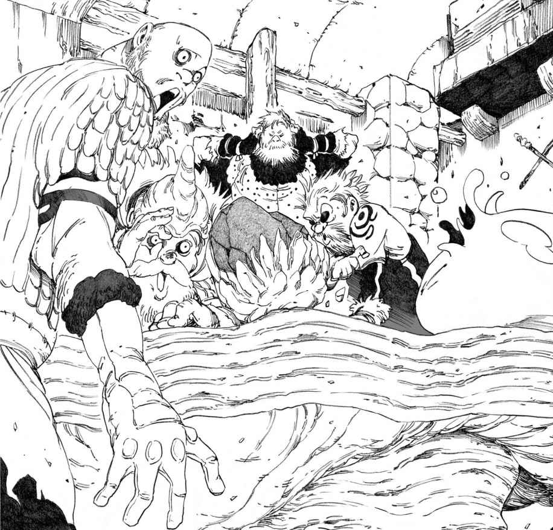
ふ。しかしそれは〝魔鉱石〟じゃないんだな。
既に加工済み。〝魔鋼塊〟なんだよ!!
「おいおい、親父、あんたの目は節穴かい？」
これが鑑定出来ない程度の腕なら、あんまり役に立たないだろう。
適当に素材だけ売ってやるが、関係はそれまでだ。
「何......？ まさか......、いや、そんなバカな！ この塊全てが、〝魔鋼〟だと!?」
親父さん、流石に見抜いたか。だが、その驚きように俺がびっくりだ。
「こ、これは、譲ってくれるのか？ 勿論、金は言い値で払うぞ！」
ふふふ。釣れた！
「さて、どうしたもんかねー」
「く、何が望みだ？ 出来る事ならなんでもするぞ？」
「その言葉が聞きたかった！ 俺達の事情は聞いただろ？ 誰か親父さんの知り合いで、技術指導として村まで来てくれる人がいないか、探して欲しい」
「なんだと？ そんな事でいいのか？」
「ふん。俺達にとって最優先が、衣食住の衣と住居なんだよ！ まあそれと、今後の衣類の調達の伝や、武具なんかも頼みたい」
「そんな事でいいなら、お安い御用だ！」
こうして俺は親父ことカイジンに、〝魔鋼塊〟を渡し約束を取り付けた。
細かい取り決めは、作業終了後に行う予定だ。
あの反応から、恐らくもっと吹っかけても飲むとは思ったが、欲張り過ぎは良くない。
何しろ、いつもそれで失敗しているのだから。
俺も学習したものである。
その日、皆で晩飯を食べてから、カイドウさんは帰っていった。
あのおっさんも警備隊の隊長のくせに、昼からサボリとはいい身分である。
まあ、俺の案内の為だ。俺に文句はない。
そしてドワーフ三兄弟は、俺に甚く感謝してくれた。
カイジンが国に睨まれたのが自分達のせいだと、恐縮していたらしい。
何ならお前等、俺達と一緒に来ない？ そう言うと、一瞬呆けた後、三人で相談を始めた。三人が来てくれるならば、それが一番良さそうなんだけどね。
翌日。
素材を得ても、期限が厳しいという状況はそのままである。
さて、そろそろ切り出すか。
「カイジンさん、残り四日。仕上げは可能なのかい？」
「......正直、無理だと思ってる。それでも、やるしかねーんだよ！」
気合で何とかしようとしてたのか？
だが、俺は知っている。無理なものは、無理なのだと。
出来るのは、出来る要素が揃っていた場合のみなのである。
しょーがない。助けるならば、最後まで。
「それなら、俺に策がある。取り敢えず今から、最高の仕上がりの一本を作ってくれ」
「なんだと？ お前、素人なんだろ？ 何が出来るって言うんだ？」
「秘密だ。信じろ！ 信じられないなら、好きにしな。だが、依頼は失敗するだろうがな」
「......信じていいんだな？ もし、出来なかったら、お前には〝魔鋼〟の代金は支払わん。まあ、俺も無事ではすまないんだ、払いようがなくなるだけだがな......。だが、約束を守ってくれたなら、俺も約束を守ると誓う。最高の職人を用意してやるよ!!」
約束は成立した。
そして、約束とは果たされる為にあるものなのだ。
場所を作業部屋へと移す。
昨日は、弟子用の空き部屋を借りて泊めさせて貰った。その恩もあるし、きっちりと約束通りカイジンさんを助けてやろうと思う。
俺達が部屋に入ると、そこでは既に三兄弟が〝魔鋼塊〟を眺めていた。溜息をつきながら、何度も何度もひっくり返したりしながら確かめている。
俺が出した塊は、人のこぶし程度のサイズである。大げさな反応をしているようだが、そんなに希少なのだろうか？
俺がそんな疑問を口にすると......。
「お前は、何を言っているんだ？」
それが、カイジンからの返答だった。
カイジンの説明によれば――
〝魔鉱石〟は〝魔鋼〟の原石である。その原石の状態でさえ、金に匹敵する価値があるという。
理由は簡単。その希少性と、用途の有用性である。
この世界を構成する要素、〝魔素〟。元の世界にはなかったこの〝魔素〟というものが、この世界で大きな役割を占めているのだ。
魔物を倒すと希に、魔石と呼ばれる魔素の塊を落とす。この魔石は、エネルギーの塊のような物であり、精霊工学というこの世界独自の発明品の燃料となっているらしい。
また、上位の魔物の核である魔石は、宝石よりも美しく内蔵エネルギーの量も桁が違うそうだ。
そうした上位の魔石は、色々な製品の核として使用されたりする。
細工師が加工する装飾品等も、こういった素材が使用されているのだそうだ。
その性能は、着用者の能力上昇や、付属効果等、様々な恩恵をもたらすのだと......。
そして、〝魔鉱石〟が普通の鉱石と決定的に違うのは、必ず上位の魔物の付近でしか採取出来ない点である。何故ならば、魔素の濃度の濃い場所にあった鉱石が、長い年月をかけて魔素を大量に取り込んで変異した物質が、〝魔鉱石〟なのだ。
言ってみれば、鉱物の突然変異に近い。
当然だが、魔素の濃度の濃い場所には強力な魔物が生息している。冒険者が小遣い稼ぎに倒せるような、そんな下っ端の生息地では〝魔鉱石〟は発見されにくい。最低でもＢランク相当の魔物の生息地にしか、〝魔鉱石〟は存在しないのだそうだ。
ちなみに、ここで初めて魔物のランク等級についても説明を受けた。
「そうなんすか！ じゃあ、自分もＢくらいっすかね？」
「「「..................」」」
恐らく、ゴブタのバカ以外、皆の思いは一つだっただろう。
バカは置いておこう。
それだけ発見の難しい〝魔鉱石〟だが、そこから採れる〝魔鋼〟は、三～五％しか含有していない。つまり、こぶし大とはいえ、〝魔鋼塊〟の価値は、同等の金の二十倍以上という事なのだ。
ちなみに、金の価値は元の世界とほぼ同じ。金貨が流通しているのも、金の価値が高いからである。その為、各国の共通の目安として、金本位制が採用されている程だ。
まあ俺の睨んだ通り、希少な金属だった訳だ。
ちなみに、めっちゃ大量に〝魔鋼塊〟を保有していたりするのだが、ちょっぴり怖くなったのは秘密だ。バレるハズがないのだが......、バレたらどうしよう？ なんて思ってしまうのは小市民だからだろうか？
で、本題はここからだ。
〝魔鋼〟が希少だというだけで価値が高い訳ではない。
その価値の本当の理由。それは、魔力の誘導と非常に相性が良いという性質にある。
魔素とは、ある程度のイメージで操作可能なのだ。
俺の『魔力感知』等もそうだが、『水操作』なんかも、魔素の操作によって行っている。魔物のスキルも、その多くが魔素を利用していると言えるだろう。
魔法についてはよくわからないけど、恐らく似た原理になっていると思っている。
では、武器の素材に魔素が大量に含まれていたらどうなるのか？
驚くべき事に、〝成長する武器〟が出来上がるのだそうだ！
何というロマン！
え、何それ？ 欲しい!!
ぐっと我慢したけど、喉元までその言葉が出かかっていた。
使用者のイメージに添って、徐々に理想の形態へとその姿を変える武器。
そして使用者の魔力次第では、戦闘中に自由自在に形状変化も可能なのだと！
更に魔素の馴染みが良い為、スキルの威力も増大する。
ある意味、普通の武器と比べたら、余程の技量差がなければ魔法武器持ちが勝つだろう。
もしかすると、金と技術を注ぎ込んだ場合の話だが、純魔鋼の刀身に上位の魔石を嵌めたら、〝炎の剣〟や〝氷雪の剣〟なんて代物も出来るのではないだろうか？ 夢が広がるな。
俺の心が、早く造れ!! と騒いでいるが、慌ててはいけない。出来るような気がするので、今度機会があったら魔石を手に入れて実験したいものだ。
俺に一通りの説明した後、カイジン達は作業に入る模様。
後学の為、俺も見学させて貰う。ゴブタの奴はどうせ寝ているだろうし......。
剣といっても多様な種類がある。俺の中での最強の剣といえば、勿論日本刀である。しかし、刀の中だけでも様々な形状があるのだ。それこそ、どんな剣を造るのか、興味津々であった。
作り始める事、十時間。
見るからに普通の、何の変哲もない一本のロングソードが出来上がった。
あれ？ 魔鋼が大量に余っている。
こぶし大しかないのだ。一本の剣の素材で足りるのか？ と思っていた程だったのだが......。
聞けば、全ての素材を魔鋼で造るような事をすれば、いくらかかるかわからないとの事。
考えてみれば当然か。道理で、〝炎の剣〟や〝氷雪の剣〟あるいは、〝雷の剣〟などの発想が出ない訳だ。金がかかり過ぎるのだ。
なるほどな。
魔鋼を芯として用い、普通の鋼鉄でその刀身を整えるのだそうだ。それでも、魔鋼の魔素が鋼鉄部分の刀身を侵食し、いずれは一体化するらしい。長い年月を経た武器の方が強い物が多いのは、この為なのだとか。古くなっても周囲の魔素を取り込んで自己再生するので、刀身が錆びたり欠けたりしないのも特徴らしい。
けれど不思議な事に、剣にも命があるという。折れたり完全な歪みが出来た時、魔素が抜けて一気に風化するそうだ。
打ち上がった剣を見せてくれながら、そんな話をしてくれた。
なかなかに面白い話であった。
出来上がった剣を手に取り眺める（手なんてないんだが、そこは気分だ）。
よく見ればシンプルな出来上がりだが、歪みがない。
無駄がないと言える。
日本刀のように、斬る事が主体ではないようだが、刃による斬撃も可能なようだ。
なるほど。これをベースとして、個人個人で目的ごとに変化していくのか。
そう考えるなら、製作者の意図を省き、シンプルに纏めるのも頷ける。
さて、と。
カイジンさん達は、約束通り素晴らしい剣を打ってくれた。
ここからは俺の出番である。
「よし！ ここからは、秘密の作業を行う。悪いけど、全員部屋から出てくれ！」
そう言って、皆に外に出て貰う事にした。
流石に、作製方法を見られる訳にはいかない。主に、説明が面倒という理由で。
「材料は、この部屋に全部揃ってる。でも、いいのか？ 何なら手伝うぞ？」
「うむ。大丈夫だ！ そんな事より、三日間、この部屋を覗くなよ？ 約束だぞ!?」
「わかった。お前を信じて待ってるよ......」
そう言って、カイジンさん達は出て行った。
何故かゴブタも出て行った......。
あのバカは何を考えて生きているのか？ 一度シメル必要があるかもしれない......。
さて、本日のレシピは、〝ロングソード〟となっております。
作り方は簡単！
まず、お手本の一本を飲み込みます！
続けて、ここに並べました材料を......ひと息に飲み込みます！
もぐもぐ、ごっくん！
そして、お腹の中でよく混ぜて......。
《告。解析対象：〝ロングソード〟成功しました。続けて、コピー作成......成功しました》
これを、十九回繰り返したら、終了で～す!!
簡単でしたね？
でも、良い子は決してマネしないでね？
などと、バカな事を思いながら作業を行なった。
ヤバイ......、一本のコピーに所要した時間、およそ十秒。
百九十秒......三分強で、十九本のロングソードを作ってしまった......。
カイジン達を追い出してから、五分も経っていない。というか、出来るだろうとは思っていたが、何だか職人さんに申し訳ないくらい簡単に作製してしまったのだが......。
『捕食者』、マジでチート過ぎる。
さて、どうしよう？
三日間、ここを覗くな！ なんて言ってしまったが、ここに三日何もする事なく篭るべきだろうか？ いや......。流石に、この部屋で意味もなく引き篭りしてても仕方ない。
もう出来たと、ぶっちゃけてしまうか......。
勢い良く扉を開けて、俺は外に出た。
心配そうに、こちらの様子を窺っていた四人が、慌てて立ち上がる。
ゴブタは......寝ていた。
お前な......五分で出てきたらもう寝てるって、どういう事だ？ やはり、な。俺の中で、奴をシメル事が確定した瞬間であった。
「おい、どうした？ 何かあったのか？」
「足りない材料でもあったか？」
「......それとも、やはり無理、だったか？」
口々に、心配そうに問いかけてくるドワーフ達。
「う、うむ。いや、実は......な」
その心配そうな視線が痛い。ついつい、勿体ぶってしまった。
相変わらず、俺は人が悪いのだ。性格が悪いのは、死んでも直らなかったようだ。
「な～んてな！ 実は、もう出来ちゃった！」
「「「..................、はあぁー!?」」」
俺が出来た事を告げると、驚きの声がハモったのだった。
そりゃ、そうだよね......。
＊
「「「かんぱーーーい！」」」
俺達は打ち上げと称して、夜の店に来ていた。
納品が無事に終わったので、そのお祝いという名目である。
いや、俺はそんな事をして貰わなくてもいいと言ったんだよ......？
「まあまあ、綺麗なお姉ーちゃんもいっぱいいるから！」
「そそ！ 若い子から、熟女まで!! 紳士御用達の店なんだよ！」
「............!!」
「おいおい！ リムルの旦那が来ないと、始まらないぜ？」
などと、みんな揃って言うのだからしょーがない。
本当に困った奴等である。
店の名前は、〝夜の蝶〟といった。
本当に蝶だろうか？ 蛾だったら容赦しねーぞ！
......いやいや、興味なんてないんだけどね？ まあ、紳士として、一応、ね。
そんな事を考えながら店に入った。
「あら！ いらっしゃ～い!!」
「「「いらっしゃいませーーー!!」」」
うっひょーーー!!
めっちゃ綺麗どころが並んでいるではないか!!
うぉーーーーー!! 耳が長い！
え、エロフ！ いや、エルフだーーーー!!
ちょ！ やっべーーー！ 服、薄ーーーいいぃ!!
ああ......見えそうで見えない......。
なんなの!? 全力で『魔力感知』を発動してるのに!!
このお姉ちゃん達、見えそうで見えないラインを死守しておるわ！
く......、挑戦か？ 俺に対する挑戦なのか！！？
くそうくそう......!!
「うわーーー！ 可愛いい!!」
「ちょっとぉ！ ワタシが先に目ぇつけてたのにぃ!?」
ふわ～り！ ボヨヨン！ ボヨヨン！
キ、キターーーーーーーーー!!
俺の身体が、プヨンプヨン！
俺の背中で、ボヨンボヨン!!
ここは楽園ですか？
「......、え、えーと......、嫌がっていた割には、えらく楽しんでくれてるみたいだな？」
はっ！ いかんいかん、俺様とした事が......。
「え......？ いや、それ程でも？」
ちょっと無理があったか......。誰一人として信じてくれなかった。
だが、仕方ない。しょーがないさ！ だって今、俺、エルフのお膝の上に抱っこされてるんだぜ......感動で胸がいっぱいだよ!!
ああ......、亡（無）くなった俺の息子が生きていれば、今頃感動でおおはしゃぎしていただろうに......。
そんな、楽しい時間を過ごしていた俺達だったのだが――
「おやおや、カイジン殿では、ありませんか！ いけませんな、この上品な店に、下等な魔物などを連れ込んでは！」
喧嘩を売るかのような言葉をかけてきた者がいた。
誰だ？ このおっさんは......？
一瞬で周りが静かになった。
女の子達もおっさんの事を嫌っているのか、嫌そうな顔をしている。よく観察しないとわからない程度ではあったけども。
おっさんはドワーフにしては珍しく、ほっそりとした体型に長身であった。とは言っても、普通の人間と同程度の身長である。
「おい、女主人！ この店は、魔物の連れ込みを許すのか？」
「い、いえ、魔物と言いましても、無害そうなスライムですし......」
「はあ？ 魔物だろうが！ 違うのか？ スライムは魔物じゃないとでも抜かすか!?」
「いえ......、そのような訳では、決して......」
ママさんが、のらりくらりと言葉を濁して怒りをそらそうとするのだが、取り合おうとしていない。このおっさんの目的は、明らかに俺達であるようだ。
「まずいな......、大臣のベスターだ――」
このおっさんが、噂のベスター大臣だと？ なるほど......、何というか、神経質でねちっこそうな顔をしている。
その時だった。
「ふん！ 魔物には、これがお似合いよ!!」
などとほざいて、ベスター大臣が俺に水をぶっ掛けてきた。
これには流石に頭にきたが、ぐっと堪える。
相手は大臣だ、俺の短気でカイジン達やこの店のママさんに迷惑はかけられない。
この店に出入り禁止なんて、そんな悲しい思いはしたくない。
俺が、そんな思いで我慢をしようとしていたのにである。
「おい......、黙って聞いてれば、いい気になりやがって！」
音を立ててテーブルを蹴り飛ばし、カイジンさんが立ち上がった。
「おう、ベスター！ てめー、この俺の客に舐めたマネしてくれやがって、覚悟は出来ているんだろうな？」
......え？ ちょっと、カイジンさん......相手、大臣なんですけど、いいの？
ベスター大臣も驚きで引き攣っていたが、俺も驚きで飛び跳ねた！
俺の背中でも柔らかい感触が弾けた！
......わざと、ではない。決して！
「きさ、貴様！ このワシに対して、そのような口を......！」
怒りと驚きで声も出せないベスター大臣。
「お前、そろそろ黙らんかい!!」
そう言って、躊躇う事なくベスター大臣の顔面を殴りつけるカイジンさん......。
「リムルの旦那、腕のいい職人を探していたよな？ 俺じゃ不足かい？」
不足どころか......というか、いいのだろうか？
だが大臣を殴るなんて、もうこの国に居場所はないだろう。
しかし、だ。男には、言葉が必要ない時がある。
「その言葉、待っていたぞ！ こちらこそ宜しく頼む、カイジン！」
細かい事はいい。カイジンが来てくれるというのなら、俺は受け入れるだけでいいのだ。綺麗事などクソくらえ！ 俺達は好きに生きたらいいのだ！
カイジンと俺は、熱く頷きあった。
しかし......、この後、どうやって逃げようか？
やっぱ世の中、慎重に行動しないと山程問題が生まれちゃうのだ。
格好をつけても、今後の問題が消えてなくなってはくれないのだった......。
＊
さて、と。
当たり前の話ではあるが、大臣を殴ったのは非常に不味い。
「兄貴......、何をやっているんだよ？」
警備兵を引き連れてやってきた、カイドウのセリフであった。
流石に毎日サボれないのか、今日は姿を見ていなかった。
飲みに行こうと誘ったのだが、用事があると断られたのだ。
それなのに、自分が用事でいない間に騒ぎを起こしているとなれば、呆れるのも当然だろう。
逃げるだけなら簡単ではあるのだが、それは悪手だろうな......。
「フン！ そこのバカが、俺の客であり恩人でもある、リムルの旦那に失礼な事をしやがるから、ちょいとお灸を据えただけの事よ!!」
と、引き連れていた四人の騎士に介抱されている、ベスター大臣を指差す。
ベスター大臣は、未だに驚きとショックから立ち直れていないようだ。
鼻血をボタボタ垂らしながら、こちらを睨んでいる。
その顔は呆けたようになっており、滑稽だった。殴られるとは、全く想像もしていなかったのだろう。驚き過ぎて、痛みも感じてはいない様子だ。
「おいおい......、ちょいとお灸って、大臣相手にそれは不味いだろ......」
溜息まじりに、カイドウが呟いた。
「ともかく......、兄貴達の身柄は、一旦拘束させて貰う！」
そう言って、部下に指示を下すカイドウ。
だが、俺達にだけ聞こえるように、「悪いようにはしないから、大人しくしておいてくれよ」と呟いていた。
無論、俺に騒ぎを起こすつもりなどない。
俺はママさんのもとへコソっと移動し、ママさんに金貨五枚を握らせた。
え？ と、驚くママさんに、「迷惑料も入ってるから！ また来るよん！」と挨拶する。
ここは質のいい店だった。こんな事で、二度と来られなくなっては面白くないのだ。
こうして俺達は連行される事となった訳だが......、何かを忘れている。
そう！ ゴブタである。
あのバカは、店に連れてきていない。
度重なるヤツの愚行に対し、お仕置き〝蓑虫地獄〟を執行中だったのである。
最初は逆さ吊りにしようかとも思ったが、流石にそれは不味い。
という訳で、『粘糸』でグルグル巻きにして、部屋にぶら下げてきたのだ。
「ちょ！ これ酷いっす！ 自分も連れてって欲しいっす！」
などと、悲痛な声で喚いていたが、甘い顔をすれば付け上がるだろう。
「バカめ！ 貴様の日頃の行い、目に余るわ！ 悔しかったら、相棒（嵐牙狼）でも召喚して助けてもらいやがれ！」
と、出来もしないだろう事を言いつけて放置して来たのである。
ゴブリンならともかく、ホブゴブリンに進化した今のヤツなら、一週間くらいは飲まず食わずでも大丈夫だろう。
長い日数、拘束されるようなら、一度抜け出してヤツを助けてやろう。
そう考えて、ヤツの事はそのまま忘れる事にした。
ちょっとだけ、可哀想かな？ とも思ったが、逞しいヤツの事だ、問題ない。
俺達五人は、王宮へと連行された。
とは言っても、ものものしく拘束されている訳ではない。任意同行に近い感じだ。
そして結局、牢屋で二日程過ごす事になった。
とはいえ、それなりに良い食事が出ているようだし、部屋の調度も整えられている。
五人一緒に入れられているので、牢屋というより大部屋という感じだ。
待遇は、そこそこマシな印象を受けた。
「俺が短気を起こしてしまったばかりに、皆も巻き込んじまった......。スマン！」
カイジンが謝ってきた。
しかし、ここにそんな事を気にする者はいない。
「カイジンさん、大丈夫！ 問題ないさ！」
「そうそう、親父さんが気にする事ないですよ！」
「............！」
三人も同じ気持ちのようだった。
「それより、釈放されたら、俺達もカイジンさんに付いていきますよ！」
「リムルの旦那、俺達がついて行ったら迷惑かい？」
「..................？」
最後のやつは何が言いたいのか、俺の理解力では判断出来ないが、気持ちはわかった。
「ふん！ 皆、まとめて面倒見てやるさ！ ただし、扱き使うから、覚悟しとけよ！」
「「「おう!!」」」
とまあ、こんな感じに、俺達は釈放された後の事を相談し始めたのであった。
一日目はそうして過ぎていき、二日目の夜。
「そういえばあの大臣、えらくカイジンを目の敵にしてたな？ 何か理由でもあるのか？」
何の気なく、俺が質問をした。
これに対し、カイジンは苦虫を噛み潰したような顔になり、溜息をつくと話し始めた。
実はカイジンは、元、王宮騎士団の団長の一人だったのだそうだ。
とは言っても、王宮騎士団は全部で七つの部隊があり、その内の一つを任されていたらしい。
工作部隊・兵站部隊・救急部隊の裏方三部隊。
重装打撃部隊・魔法打撃部隊・魔法支援部隊の花形三部隊。
そして、最も重要な王直属護衛部隊である。
カイジンは、工作部隊の団長を務めていたらしい。
その時の副官が、ベスターだったのだそうだ。
「ヤツは侯爵の出でな。金で地位を買ったと言われていた。俺は庶民の出だったし、余計に俺の地位を妬んでいたんだろう。複雑だったんだろうよ。庶民の下で命令を受けるのも屈辱だったのかもしれんしな......。俺は当時、他人の気持ちなんて思いやる余裕がなくてな。王の期待に添おうと必死だったんだよ......。そんな時に、あの事件が起きたんだ......」
そう言って、当時の事件を語ってくれた。
カイジンが、軍を辞めるきっかけとなった事件の事を。
魔装兵事件。
当時ドワーフの工作部隊は、新しい技術を開発する事も出来ず、七つの部隊の中で最低の評価に甘んじていた。
技術立国の立場から、工作部隊は花形であるべきだ！ そう主張するベスター派。
今のままで、堅実に研究を進めるべき！ という主張のカイジン派。
両者は議論が白熱し、会議で結論が出る事はなかったという。
そんな中、エルフの技術者との共同開発の、〝魔装兵計画〟が立ち上がった。
この計画を何としても成功させ、工作部隊の地位を確固たるものにしよう！ そうベスターは考えていたようだ。
そのベスターの焦りをカイジンが指摘したが、ベスターは庶民出身の上司の忠告には、聞く耳を持たなかった。結果、焦ったベスターの独走により、〝精霊魔導核〟の暴走を引き起こし、初期段階で実験は失敗。計画は頓挫する事となる。
当時の最高の技術者を集めて行われた、〝魔装兵計画〟はこうして終焉を迎えたのだ。
結局の所、失敗の責任を取ってカイジンは軍を去る事になった。
ベスターが自分の失敗を全てカイジンに押し付けた上に、軍の幹部を抱きこみ、偽の証言まで用意した為である。
とまあ、これが魔装兵事件とやらの真相だった訳だ。
語り終えたカイジンは、疲れたように溜息を吐いている。
気持ちはわかる。長年の恨みも、かなりのものだったのだろう。
しっかし、ベスター、絵に描いたような悪人だな。ある意味わかりやすい。
要するにベスターからすれば、カイジンがこの国にいると、いつまた軍に返り咲いて自分の地位を脅かすかわからないと、こういう訳か。
そんな卑怯なヤツ、死刑でよくね？ まあ、死刑は言い過ぎかもしれないが......。
「まあ、そういう訳で、俺がこの国から出たら、アイツも少しはマシになるかもしれんさ」
そう言って、少し寂しそうにこの話を締めくくった。
三兄弟も当時の事件の真相を知る者達で、ベスター大臣を嫌っていたのだそうだ。
そんな話を聞けば、俺だって嫌いになるわ。
しかし、貴族相手に殴ったのだ。このまま無事に釈放されるとは思えないのだが......。
そうした俺の心配に、
「大丈夫だろ、一応。俺は退役したとはいえ団長にまでなったお陰で、準男爵の地位をいただいている。庶民が貴族に対してってのなら、裁判待たずに死刑もありえたけどな」
そう言って、大笑いしている。
俺は全く笑えないけどな。
いざとなれば脱出しよ！ 俺、関係ない事にして、ほとぼり冷めるまで普通のスライムのふりしてやり過ごそう。
俺は内心、そんな事を考えたのだった。
＊
そして裁判の日となった。
俺達は王の前へと連行された。
ドワーフの英雄王。
目の前にすると、その圧倒的な威圧感は尋常ではなかった。
現王、ガゼル・ドワルゴ。
目を閉じ、椅子に深く腰掛けている。
ドワーフらしい、がっしりとした体付き。迸るエネルギーを秘めた筋肉の鎧。
その特徴ある、褐色の肌。後ろに撫で付けた、漆黒の髪。
強い。俺の本能が、久しぶりに全力で警報を鳴らしていた。
両脇に、騎士が控えている。
この二人も強いと感じるが、王を前にすると霞んでしまう。
この王は、化物だ。
簡単に逃げられるつもりでいたが、これは......。
俺の弛みきった意識は、王の前に来た途端に覚醒していた。
ひょっとすると、この世界に来てから初めて感じる〝危機感〟かもしれない。
一人の男が王の前に膝をつき、何事か確認している。
王の許可を得たのだろう、立ち上がって宣誓文を読み上げた。
「裁判を始める！ 皆、静粛にせよ!!」
その言葉を合図に、裁判が始まった。
一時間かけて、双方の言い分が発表される。
当事者である俺達だったが、ここでの発言は許されていない。この場で自由に発言出来るのは、伯爵位以上の貴族だけである。それ以外は、王の許しが出るまで発言は許されないのだ。
発言すればどうなるのか？
発言した時点で、罪が確定する。更に、不敬罪まで上乗せされるというお得さで。冤罪も何も関係ない。それが、ここのルールなのだそうだ。
代理人に、全てを任せるしかないのだ。
この代理人とは拘束された二日の間に、何度も顔を合わせて打ち合わせしている。
言うなれば、弁護士みたいな者であろう。
この代理人は大丈夫なんだろうな？
そういう不安とは、得てして的中するようになっているらしい......。
「と、このように、店で寛いでお酒を嗜んでおられたベスター殿に対し、複数で店に押し入り暴行を加えたのです！ これは、断じて許されるべき行為ではありません！」
「それは事実であるか？」
「はい！ 私もカイジン殿からの聞き取りだけではなく、店側からも調書を取ってございます。先の言い分に相違ない事は、間違い御座いませぬ！」
......は？ え、なんだって？
味方だと思っていた代理人の、まさかの裏切りであった。
これは不味いのではなかろうか？
カイジンの様子を見ると、一気に顔が赤くなり、次第に青ざめ始めている。
そりゃ、そうだ。なんせ、言い訳もさせて貰えないのだ。
あたりまえだが、代理人が嘘を吐く事は許されていない。バレたら死罪である。余程の覚悟か、何らかの事情がなければ、嘘を吐くなど考えられない。しかし今、その考えられない事態が起きていた。
王の前で、下賎な者（この場合は罪人）に発言を許さない為のシステムだが、今回は最悪の方へと運用されてしまったようだ。
「王よ！お聞き届け頂けましたでしょうか？ この者達への厳罰を申し渡し下さい！」
ベスターが調子に乗って王に進言する。
更にこちらを一瞥すると、勝ち誇った笑みを浮かべた。
あの野郎......やっぱ、殴っておけば良かった......。
王は目を閉じたまま、微動だにしない。
その様子を確認し、傍仕えが王に代わって発言を行う。
「静粛に！ これより、判決を申し渡す！ 主犯、カイジン。この者は、二十年の鉱山での強制労働に処す。その他、共犯者共。この者共は、十年の鉱山での強制労働に処す。それでは、この裁判を閉廷――」
「――待て」
重く、深い静かな声が、閉会の言葉を遮った。
王が目を開けて、カイジンを見つめた。
「久しいな、カイジン。息災か？」
「......は！ 王におかれましても、ご健勝そうで何よりでございます」
一拍おいて、カイジンが返答した。
王の問いかけには、返事しても大丈夫のようだ。
「よい。余と、そちの仲である」とカイジンに応じ、続けて「戻って来る気はあるか？」と、本題を切り出した。
それは異例な出来事であったらしく、周囲がざわめいている。
ベスターは一気に青ざめた。
ふと見ると、裏切った代理人は死にそうな程の土気色の顔色になっていた。
「恐れながら王よ！ 私は既に主を得ました！ この契りは、私の宝であります。この宝、王の命令であれど、手放す気はありませぬ！」
その言葉に周囲が気色ばむ。護衛の兵士から、カイジンに向けて殺気が放たれている。
それでもカイジンに怯えはなく、寧ろ堂々と胸を張って王を見つめていた。
その目を見て王は再び目を閉じた。
「で、あるか......」
辺りを再び静寂が支配した。
そして――
「判決を言い渡す。心して聞けえい！ カイジン及び、その仲間は、王国より国外追放とする。今宵、日付が変わって以後、この国に滞在する事を余は許しはしない。以上である。では、余の前より消えるがよい!!」
王が目を見開き、大音声で言い放つ。
これが、王者の覇気！ 身が震える程の威圧。それなのに、俺には王が寂しそうに見えたのだ。
こうして裁判は閉廷し、俺達はカイジンの店に戻ってきた。
ちょっと飲みに行くつもりが、大事になったものである。
さっさと荷造りして、出発しなければ。
そういえば、ゴブタは無事だろうか？
まあ、まだ三日目だし......。
ちょっとだけ不安に思いながら、お仕置き部屋の扉を開けると......。
「あ！ お帰りっす！ 今まで楽しんでたっすか？ 今度は自分も連れて行って欲しいっす！」
などと言いながら、ソファから飛び起きるゴブタの姿が！
なん......だと？ こいつ、蜘蛛の『粘糸』から、どうやって逃げ出せた？
よく見ると、ゴブタが枕にしているのは、嵐牙狼であった。
マジか？ 召喚を成功させたのか!?
「お、おい、ゴブタ君。まさか君、狼の召喚に成功したのかね？」
「あ！ そうっす！ 来てくれ、って念じたら、来てくれたっすよ！」
簡単に言いやがって......未だ、他のホブゴブリンで成功した事例はないというのに。
もしかしてこいつ、頭の栄養が才能に行き渡っているんじゃ？
まさか、な。ゴブタの分際で、そんな訳ない。
きっと偶然だろう。
と、そこで、嵐牙狼を見て硬直しているドワーフに気付いた。
「何してるんだ？ さっさと準備して行くぞ？」
ドワーフ達に声をかける。
「おいおい、待て待て！ 何でこんな所に、黒牙狼がいるんだ!?」
「そうだぞ！ さっさと逃げないと、あれはＢランクの魔物だぞ！」
何やら大慌てしている。
その様子は滑稽で、面白かった。
「大丈夫、大丈夫！ 問題ない。ただの犬と大して変わらんよ！ 家で飼ってる狼だしな！」
安心させてやるつもりで言ったのだが、何故か四人揃って絶句していた。
ちなみに、黒牙狼というのは牙狼の上位種族らしい。牙狼が魔属性に偏り進化した場合に毛皮が黒くなるようだ。嵐牙狼も黒色だが、色艶が違っている。そもそも、通常は嵐属性に進化する事などない。俺の名付けによる突然変異のようなものである。
火山地帯など、火属性なら赤牙狼。水辺だと青牙狼。森林ならば、緑牙狼となる。要するに、上位種には、属性を得る事で進化可能という訳だ。魔属性の黒牙狼は人を襲う危険な魔物らしく、恐れられるのも仕方がない話だったらしい。
嵐属性で色が黒紫色になったので、詳しい者でなければ見分けは付かないのだろう。
時間がないので、今回はカイジン達に説明してやる暇はない。
強引にペットという事で納得して貰い、気持ちを切り替えさせる。
ドワーフ達に旅の服装に着替えて貰うと、皆で外に出た。
そして俺一人、家の中の持って行く物全てを飲み込んでいく。
容量には、まだまだ余裕がある。
だが、流石に建物を飲み込むのは、悪目立ちし過ぎるし怪しまれるので止めておく。
こうして旅の支度を整え、俺達はリグル達との待ち合わせ場所である森の入り口に向かったのであった。
●
その場は、静寂に包まれていた。
さっきまで騒々しい遣り取りがあったとは思えないほどの。
五人の犯罪者が、逃げるようにこの場を去った後、誰一人として動く者はいない。
ベスターはゴクリと唾を飲み込んだ。王が沈黙している事に、恐怖が込み上げてくる。
そして、静寂を壊すかの如く、王ガゼルが口を開いた。
「さて、ベスター。何か、言いたい事はあるか？」
「お、恐れながら王よ！ これは誤解です！ 何かの間違いでございます！」
見苦しく、王に縋り付かんばかりに喚きたてるベスター。
対する王は、終始感情を覗かせない、冷徹な態度である。
「誤解、か。余は忠実な臣を一人、失う事となった」
「何を仰います！ あの様な者など、王に忠誠を誓うどころか、どこの馬の骨ともわからぬ――」
「ベスターよ。お前は、勘違いをしておる。カイジンの奴は、元より余のもとを去っておった。余が失う忠実な臣......それは、お前の事だ」
ベスターの心臓が、早鐘を打つ。
言い訳をしなければ......しかし頭は空転し、上手く言葉が浮かんでこない。
何も考える事が出来なくなっている。
今、王は、何と言った？
失うのは、お前。それは、つまり......。
ベスターはどうすればいいのか考える。だが、何も考えは浮かばない。
「もう一度、問おう。ベスターよ。何か、言いたい事はあるか？」
怖い。
ベスターは恐怖で頭がいっぱいになった。
王に問われている。返答しなければ......。だが、何も言葉が浮かんで来ないのだ。
「お、恐れ、恐れながら......」
「余は、お前に期待していたのだ。ずっと待っていた。魔装兵事件の際も、お前が真実を話してくれるのを待っていたのだ。そして今回も......」
王ガゼルは、寧ろ優しいとさえ形容出来そうな表情でベスターを見据えた。しかしその表情とは裏腹に、その言葉は剣より鋭くベスターをえぐる。
「これを見よ――」
王が二つの品を指し示す。
いつの間にか近習が運んで来た物だ。
ベスターは虚ろな瞳でそれを見る。
一つ目は、ベスターが見た事もない液体の詰まった袋状の球体であった。
二つ目は、一本のロングソード。
「何かわかるか？」
そう問われよく見ると、球体はわからないがロングソードには見覚えがある。カイジンの持ち込んだ剣だった。
「説明してやるがよい」
王の命令を受け、近習が説明を行った。
ベスターの脳がそれを理解するのに、暫くの時間が必要であった。
蘇生薬ではないものの、ヒポクテ草の完全抽出液。それは、完全回復薬。
ドワーフの技術の粋を集めても、九十八％の抽出が限界。
九十八％では、上位回復薬の効果しか得られない。それが、九十九％！
驚きに、ベスターの顔が歪む。知りたい！ その抽出方法を――
更に驚くべき情報が、ベスターへと説明される。
そのロングソード。
芯に使った魔鋼が、既に侵食を始めている、という報告。
有り得ない。普通十年は馴染んでから、徐々に侵食は行われるものなのに！
驚愕に、ベスターの思考が活性化される。
その事が本当だとしたら！そういった考えがベスターを支配し、
「それをもたらしたのは、あのスライムだ。お前の行いが、あの魔物との繋がりを絶った。何か言いたい事はあるか？」
決定的に、ベスターは王の怒りの深さを知る。最早、何も言うべき事などないのだ、と。
「なにも......、何も御座いません、王よ」
涙が込み上げて来た。自分は、王に見捨てられたのだと、初めて理解して。
王の役に立ちたかった。そして、王に認めて貰いたかった。
彼の望みは、それだけだったのに。
いつから、自分は間違ったのか。
カイジンに嫉妬した時から。
あるいは、もっと前......。
わからない。ただわかるのは、自分は王の期待を裏切ったという、その事実。
「で、あるか。では、ベスターよ！ お前には、王宮への立ち入りを禁止する。二度と、余の前に姿を見せるな......。だが、最後に一言、お前に言葉を贈ろう。大儀であった！」
ベスターは、王の言葉を聞くと立ち上がり、王へと深々とお辞儀をした。
そして、その場を去る。
自らの犯した、愚かしさの代償を支払う為に......。
ベスターの退出と同時に。
近衛が駆け寄り、ベスターの共犯の代理人を捕らえる。
その様子を視界に収め、
「暗部よ、あのスライムの動向を監視せよ！ 絶対に気取られるな。絶対に、だ！」
念を押してまで、王が命令を発する。
寡黙な王が、念を押してまで発する命令。その重要さに、周囲の気が引き締まる。
「この命に代えましても！」
暗部はそう言い残し、消えた。
王は思う。
あの魔物は何者だ？
あれは、一種の化物だった。あんな魔物が解き放たれているのか、と。
英雄としての直感が、王に無視しえぬ何かを感じさせた。
その直感を信じて、王は行動を開始する。
●
森の入り口にてリグル達と合流した。
中で過ごしたのは、結局五日。概ね予定通りの日数である。
色々ごたごたがあったが、ともかく目的は達成出来て良かった。
欲を言えば、この街での冒険者ギルドっぽい存在である、自由組合にも行ってみたかった。いないとは思うが、ひょっとしたら〝異世界人〟がいたかもしれないし......。
また、せっかくドワーフの国なのだから、細工物や防具関係なんて物も見学したかったのだが、今となっては仕方ない。職人自体を仲間に出来たのだから、それで満足すべきだろう。
金貨も二十枚稼いだ事だし、収穫はあった。
リグル達にカイジン達を紹介した。今後は仲間となるのだし、仲良くやっていって欲しい。
そういえば、ドワーフには差別意識などあまり見受けられない。半妖精族という事を考えれば当然なのかもしれないけど、今後の事を考えても良い事だと思う。
さて、旅立つ段になって一つの問題が生じた。
俺を乗せる気満々で尻尾を振って懐いていたランガに、元の五メートル近い姿に戻って三兄弟の内二人を乗せるように言ったのだが......。
ランガは、嬉しそうな表情だったのが一気に無表情になり、ヨロヨロと後ずさり座り込む。
そして、「このボケ共がいなくなったら、問題解決じゃね？」とでも言いたげにドワーフを見つめる。
その、今にも喰い殺しかねない表情にドワーフ達が怯えていた。
そもそも、最初にランガを見た瞬間、
「「「げぇええーーー!! 何で、こんな......!?」」」
などと、大げさに驚いて見せていたのだ。
余程ランガが怖かったのか、それとも彼等の持ち芸の一つだろうか？
ちょっとよくわからんが、どこかに笑いのツボがあるのかもしれない。
「まあ待て、ランガよ。実はな、俺も黒狼に擬態してみたのだが、その性能を色々と確かめたいのだ。そういう訳だから、ドワーフ二人はお前に任せた！」
という俺の言葉に、シャキーーーン！ となり、
「心得ました！ 我が主よ！」
と、ようやく了承したのであった。
カイジンと三兄弟の長男であるガルムを俺の背中に。
次男のドルドと三男のミルドをランガの背中に。
ランガに二人が乗ったのを確認し、『粘糸』でランガに固定する。
何しろ時速八十キロなんて、バイクもないこの世界ではちょっとした恐怖体験だろう。
俺がその速度で走れるかわからないので、そこまでスピードを出す気もないのだが。
次は俺だ。
擬態：黒嵐星狼
俺の擬態が完了した。
「素晴らしい!! 流石は我が主!!」
「ふはは！ そうだろうとも。お前もこの姿に進化出来るように、励めよ！」
と、ランガの賞賛に答える俺。
「はは！ その期待に応えて見せましょう！」
新たな目標に、ランガの瞳が爛々と輝いていた。
そのランガの心に触発され、嵐牙狼達も興奮しているようだった。
皆やる気が出たようだ。実に良い事である。
さて、カイジン達を乗せようと見てみると......何故だろう？ 泡を吹いて気絶していた。
何をやってるんだ？ このおっさん達は......。
まあいい。
日頃の練習の成果！ 俺は、背中から『粘糸』を出す。そして、カイジン達を引っ張りあげた。
成功だ！ コツコツと、糸を出して操る練習をしていたのだ。
こうして、気絶したカイジン達を乗せ、俺達は出発した。
余談だが、最初、軽く走ったつもりで百キロオーバーの速度を出してしまった。カイジン達が気絶していたのは僥倖であったと言えるだろう。
多分、最初の加速で気絶していただろうから......。
ランガに乗ったドワーフ二人、ドルドとミルドを見る。
彼等は根性あるのか、大丈夫――では、ないな。あれが噂の、目を開けたまま気絶する！というヤツだろう。ご愁傷様である。
気絶したドワーフ達を放置し、帰りの道を進む。
多分、気絶してる方が舌を噛まずに済むだろう。
実際、俺が彼等の立場だったら、起こされてまた恐怖体験は嫌である。
寝てる間に全て終わっててくれた方が幸せだ。
まあ飯時には起こすけども。
やはり俺は人が悪いのだ。
そういえば......。
「リグルよ！ 聞くがお前、黒狼の召喚には成功したのか？」
「いえ、お恥ずかしい話ですが......、未だ成功しておりません......」
ふむ。リグルでもまだ成功していないとは。
他のゴブリン達も悔しそうにしている。同様に、ペアの黒狼達も悔しそうだ。
となると、ゴブタだけ？
「いや、ゴブタのヤツが成功させたみたいでな？」
「何と！ ゴブタよ、本当か？」
「はいっす！ 呼んだら、来てくれたっす！」
その言葉に、他のゴブリン＆黒狼が闘志に燃えた眼つきをした。
「......有り得ますな。何しろ、ゴブタはこのドワーフ王国とゴブリン村を、徒歩で往復した事もある強者ですから！」
なるほど、そういえば......。バカだバカだ！ とは思っていたが、やる時はやる男なのだな。
まあ、ゴブタはバカだが、無能ではないのだろう。考えてみれば、往復四ヶ月、食べ物を調達しながらこの距離を歩いて旅をする、なかなか出来る事ではない。
弱いとはいえ、この辺には魔物も出現する事があるのだし。
俺の中で、ゴブタの評価が何段か上昇した。まあ、直ぐに落ちるだろうけどな。
夜になり、一旦休憩に入る。
俺は全く疲れてはいないのだが、他の者には休憩が必要だ。
皆に休憩を取らせ、俺は能力の確認だ。
黒嵐星狼の身体性能は凄まじく高い。
迸るほど力が溢れてくる感覚。
軽く地を蹴ると、一瞬で高空まで跳躍した。地を駆けると、飛ぶような速度で疾走する。俺の反応速度と併せると、その性能を容易に引き出す事が可能であるようだ。
そもそも、今までの戦いは、『水刃』で敵を斬ってお終いだった。
だからあまり意識していなかったが、筋力や瞬発力といった能力も戦いの重要な要素なのである。
その点、この黒嵐星狼ならば、申し分ない戦闘力を有していると言えた。
恐らくだが、『大賢者』による補正を考えるならば、俺の擬態した黒狼なら、洞窟にいた黒蛇を瞬殺可能である。特殊能力を使用せずに、だ。
町で受けた説明では、トカゲが〝B-〟だった。
他の魔物も、『大賢者』のシミュレーションを利用し、おおよそのランクを割り出す。
そのランクで言うなら、黒蛇はＡには届かない。
ムカデ十匹には勝てるだろうから、〝A-〟という所か。
同様に、俺の操らない黒嵐星狼なら、黒蛇よりは強いが、十匹相手は無理だろうと思う。いや、待てよ、『黒稲妻』という怪しげなスキルがある......。
だが俺の本能が、これはヤバイんじゃね？ と訴えかけてくる。
念の為にスライムに戻ってから、一度試しに撃ってみる事にしよう。本来の性能よりは劣る威力になるだろうから、様子見という感じだな。
そして、放った『黒稲妻』だが......想像を絶する威力であった。
閃光。直後に、凄まじい轟音が鳴り響く。
試し撃ちの的に選んだ、川辺の大岩が砕けて消えた。
音速を軽く凌駕する速度で雷が迸ったのは認識出来たけど......いやはや、その破壊力は凄まじいの一言である。俺の予想を遥かに上回っている。
ふふふ......。なかった事にしよう！ 俺は即座に判断する。
そう。俺は今、何もしていない！ たまたま雷が落ちたのだ！
そういう事にしておこう。
このスキルも黒蛇の『毒霧吐息』同様、封印しよう。少なくとも、威力調節出来るようになるまでは使用しない方が良さそうだ。何より、ごっそり魔素を持っていかれてしまった。調節出来ないと、乱発出来ない。魔力切れで戦闘不能になる危険もある訳だし。
ただし、その威力は言うまでもなく、効果範囲も広大であったので、切り札にはなりそうだ。
岩のあった場所を中心に、半径二十メートルの範囲が高熱でガラス状になっているのを眺めながら、俺はそう考えたのだった......。
何事かと駆けて来たリグル達には、目の前に雷が落ちたと誤魔化したが、彼等の休憩を妨げてしまったようだ。悪い事をした。
今後、ヤバそうな実験は、落ち着いて出来る場所で行わなければならないだろう。防音効果もあれば言う事ない。そういう場所がなければ、気軽に実験も出来ないようだ。
だがまあ、データは取れた。
脳内シミュレート再開である。
あの『黒稲妻』、あれを使用するならば、俺が操らなくても黒狼が十匹の黒蛇に勝てそうだ。
という事は、黒嵐星狼はＡランクの域を超えているのかもしれない。
Ａランクの魔物は、小さな町を壊滅可能なレベル。〝災害〟指定種である。
今後、町付近での黒狼への擬態は、控えた方が良さそうだ。
それ以降は密やかに、俺の研究は夜が明けるまで続けられたのだった。
翌朝。
リグル達に、朝食の支度を任せる。
ゴブリンの料理は、焼くだけ。とても料理と呼べたものではない。
今はいい。俺に味覚はないから。だが、いずれ味覚を手に入れたら、料理というものを叩きこまねばなるまい。美味しい食事こそが、文化的生活の第一歩だろうから。
ゴブリンが文化的な生活に馴染めるのか？
俺は、可能だと考えている。どうなるかはわからんけど、俺は出来る事は全て、試すつもりでいるのだ。料理の段階で躓かれたら、困るのである。
起き出したドワーフ達は、未だ青ざめた顔をしている。大丈夫だろうか？
「大丈夫か？」
「あ、ああ......、ここは？」
意識がはっきりするにつれ、周囲が見慣れぬ景色である事に戸惑い始めた。
ゴブリンの村へ向けて旅をしている事を告げる。
「なんだと!? 普通、二ヶ月くらいかかる旅になるぞ！ どこかの町を経由して馬車を調達したりしないと、食べ物も足りんぞ？」
今更な驚きように、何を言って――そう言いかけたが、よく考えてみると何も説明していない事を思い出す。ここまでどうやって来たのかとか、移動速度の事などを。
どうせ急ぐ旅でもない。この際だし、ドワーフ達に俺達の状況を説明する事にする。
丁度、食事の支度が出来たようだ。野兎を焼いただけのものだが、空腹を刺激されたのかドワーフ達の腹が鳴った。どうやら、体調は良いみたいである。
朝食を摂りながら、今後の予定を話した。
その時に、ついでに先程の疑問にも答えたのだが......後二日ほどで村に着くと説明すると、
「「「有り得ん......！」」」
そう呟き、絶句していた。
二日で着く＝それだけの速さでの移動、という事になるのだから、彼等が驚くのも無理はない。
安心しろ、慣れれば快適だ！ と、慰めた。
早く慣れてくれればいいけど、その前に目的地に着く事だろう。
移動を再開した。
さて、『思念伝達』を使用し、会話出来る環境を整える。何度もやっているから、手馴れたものだ。
ドワーフ達にも有効なようで、助かった。
『思念伝達』は『念話』の上位版のようなもので、リンクさせ複数との会話も可能になるのが魅力である。同時に作戦行動を行う際にも、役立つだろう。
有効範囲は最大でも一キロ程度のようであるが、十分だと思う。
二度目という事もあり心構えが出来ていたのか、気絶する事もなく背中にしがみつくドワーフ達。
風圧で目を開ける事が出来ないようだったので、糸でうっすらと膜を作ってみた。ヘルメットの代用品のつもりだったのだが、案外、上手くいった。
思念で『粘糸』を、ある程度は操れるようになって来ている。
魔素の操作に慣れれば、意のままに操る事も可能なようだ。これは『粘糸』とかだけではなく、様々なものにも応用出来そうであった。まさに、魔法の素となるものだと言えそうだ。
ドワーフ達も慣れてきて、落ち着いたようである。
ヘルメットの代用品も効果を発揮してくれた。
そのお陰で会話も可能になり、適当にドワーフ達に常識を教えて貰いながら、道を進んだ。
ドワーフの話を、ゴブリン達も熱心に聞いている。そして、自分達の常識とすり合わせ、話は弾んでいる様子。上手く馴染めたようで一安心だ。
この様子なら、村でも上手くやっていけるだろう。
ドワーフも、ゴブリンも、根は同じなのだそうだ。
半妖精で長寿のドワーフ族。
半魔族で短命のゴブリン達。
進化の過程で差がついた。というよりは、生活環境、か？
もっとも、ゴブリンは進化ではなく、退化ではなかろうかと思う。
そのゴブリンが進化したホブゴブリンは、言うなればドワーフの魔族版のような存在なのかもしれない。先祖返りのようなもので、魔力もかなり増大したようだし。進化に伴って、寿命も延びているかもしれないと思うのだが、間違ってはいないだろう。
まあ、あまり器用そうではないし、魔物と妖精という違いはあるのだけれども......。
同じ半妖精でも、ドワーフは、エルフよりも魔物に近い種族。
だからこそ、慣れれば違和感なく馴染む事が出来そうだった。
ふと思い出したので、聞いてみる。
「カイジン、今更だが、良かったのか？ お前ドワーフ王の事、尊敬していたんだろ？」
「ああ、その事か。尊敬していた。ドワーフであの方を尊敬していない者はいない。なんせ、御伽噺の英雄が自分達の王なんだぜ？」
確かに。寝物語に聞かされる、御伽噺の英雄。
その英雄が生きていて、自分達を支え守る、自分達の王なのだ。言われてみれば、皆が憧れて尊敬するのは、当然だろう。
皆が、王の役に立ちたいと望む。
絶対に正しい事を行い、間違いを許さない。理想の王の姿である。
これを現実で続けるのだとすれば、どれだけ自分を犠牲にしているというのだろう。
ある意味、恐怖すら覚える。凄まじい精神力だろうから。
だからこそ、皆が王を信じるのか......。果たして、俺にそこまでの覚悟はあるか？
話の流れでゴブリン達の主になった。だが、その先は？
「なあ、カイジン。何で俺についてきたんだ？ どう考えても、王様のもとに戻るのが正解じゃないか？」
この質問に、カイジンが答える。
「ガハハハハ！ 旦那も案外、繊細なんだな。そんなの、面白そうだからさ。直感で感じたんだ、こいつは何かしでかすヤツだ！ってな。理由なんてそんなもので十分だろ？」
そんなもので十分......か。
十分だ。間違いない！
「ふん。後で泣き言、言うなよ？ 俺様は、人使いが荒いので有名な男だぜ？」
そう。なんせ、自分では何もしないから。
人に任せて、人に頼って。でも、頼られたら、助けたい。
そうあれるような、自分でありたいと願う。
「知ってるよ！」
返ってきた答えに、俺は満足して頷いた。
二日後、予定通り村に着いた。
俺達は目的を果たし、村に帰りついたのだ。
コツンコツンコツン......。
城に、静かな音が木霊する。
既に魔王は逃げている。この城は放棄されていた。
私は殿軍。捨石にされたのだ。
魔王は、最後まで私を道具として扱った。そこに一切の感情を挟む事なく。
私に名前をくれた事だけが、彼が見せた唯一の優しさであったのだと思う。
私は魔王を恨んでいるのだろうか？ 実は自分でも良くわからなかった。
魔王に従うのが、炎の上位精霊であるイフリートの意思なのか、それとも自分の意思なのか。
今でもよくわからない。
そして、捨石にされた事も恨んではいない。もうどうでもいいと感じていたから。
この城は何かの実験施設であったようだ。破棄しても魔王にとっては大した損失ではなかったのだろう。
不思議なのは、私がここに残る意味があるのか？ という点だった。
やって来た者に敵対せず、さっさと撤退も可能だったのだ。それなのに、魔王は私に残るように告げたのである。
何らかの意図があったのだろうが、今でもその考えは不明のままだ。
やって来たのは、〝勇者〟。
長い黒銀髪を後頭部で一纏めにし、身を包むのは、濃黒に統一された軽装備。
魔王に劣らぬ美しい美貌。違う点は、〝勇者〟が少女であった事。
見た瞬間に、直感した。勝てない、と。
だけど、最後まで人ではなく、炎の魔人として〝勇者〟と対峙しようと思った。それが、今まで生き長らえてしまった事への、せめてもの罪滅ぼしになるだろう、そう思って。
濃縮された炎で象った剣は、勇者の刀で簡単に受け止められた。何であれ切り裂く事が出来るはずの超高温の刃が、一本の刀で受け止められる光景に我が目を疑う。恐らくは、刀の性能ではなく勇者の能力なのだろう。
魔王の側近である黒騎士に鍛えられたお陰で、私の剣技もそれなりのものであった。イフリートが剣技を覚える事がないので、純粋に私の才能だと黒騎士が褒めてくれたのを覚えている。
魔人となった私の身体能力は、魔王レオンの配下の中でも上位だった。その身体能力に加え、黒騎士の指導により上達した剣技。私が魔王の腹心として君臨出来た理由は、何もイフリートの力だけに頼るものではなかったのだ。
だが――全ての攻撃は勇者に通用しなかった。
死に物狂いで覚えた剣技も、勇者の刀で全て受け流される。柔らかく受け流され、剣と刀が触れ合う鍔迫り合いになる事すらなかったのだ。
そして、イフリートの超高熱の炎で包み込んでみても、汗一つ流す事なく平然と佇む勇者。
最初に直感した通り、勇者は別格の存在だったのだ。
イフリートが魔素を消耗し過ぎて、私の中で眠りについたのが感じられた。戦いを続行するのは不可能だった。私は、何も出来ずに負けたのだ。
私はその場で地面に座り込んだ。魔王に対する恩は返したと思う。出来るならもう少し生きていたかったけれど、魔人となった私を勇者は決して見逃さないと思った。
「気は済んだ？ 貴方はどうしてここにいるの？」
勇者が話しかけて来た。
私は直ぐに殺されるものだと思っていたので、それが少し意外だった。
小首を傾げて勇者を見る。勇者は、魔を狩る者であり、私はそんな勇者に敵対した魔人であった。ならば、問答無用で切り捨てられても文句は言えないのだ。
それなのに――どうした気まぐれか、勇者は私に質問を続けたのだ。
私は、勇者に質問されるまま、おずおずと口を開いた。そして、この世界に召喚されてから今までどうやって生きて来たのか、何をしてしまったのか、勇者に全てを話したのだ。
虫のいい話だろう。
こんな、魔人となった私の言葉を、信じてくれる訳などないのに......。
でも、少しでも私に興味を持ち、私の話を聞いてくれる人がいた事が嬉しかったのは本当だ。つまりそれは、私が生きていたのだという証を残せるという事だったから。誰かの記憶の中だけだとしても、私は確かに生きていたのだと胸を張って主張しよう、そう思ったのだった。
魔人である私の話など、勇者は信じてはくれないだろう。だけど、それでも良かった。少しでも記憶に残れるのなら、それで。
それなのに、
「もう、大丈夫だよ。今まで、よく頑張ったね」
勇者は、信じてくれたのだ。
その言葉に、私の目に涙が溢れて来た。私は気が付くと、勇者に縋って泣いていた。
この世界に来て初めて、私は安堵の気持ちに包まれて、自分の感情を素直に発露したのだった。
＊
それから、私は勇者に保護される事となった。
勇者は私の大火傷の痕を見て、表情を曇らせた。私にとっては見慣れたものであったし、半身に広がるそれを生きている証とも思えていたのだ。
勇者は回復魔法で火傷が治癒出来ないか試してくれた。だが、それは叶わなかったようだ。イフリートと同一化した事で、私の身体は火傷の痕がある状態で安定したのだろう。
勇者は少し考えてから、懐から綺麗な仮面を取り出した。
「これはね、魔法抵抗を高める効果があるの。貴方の中にいるイフリートを抑え込む効果も期待出来るわ」
そう言って、大事そうに一度仮面を撫でてから、私に渡してくれた。
〝抗魔の仮面〟でイフリートを押さえ込み、同時に火傷の痕を隠す。だが、効果はそれだけではなかった。
イフリートの意思が抑え込まれた事で、私の今まで抑圧されていた感情が溢れ出したのだ。
一人になった寂しさや、魔人となった恐怖。初めて出来た友達を殺してしまった慙愧の念。この理不尽な世界への激しい怒り......。仮面を被った事で、私は子供としての感情を取り戻す事が出来たのだった。
私が落ち着くまで、勇者はずっと抱きしめてくれた。
それから暫くの間は、勇者としか話も出来ない程に怯えて過ごしたのを覚えている。
勇者はそんな私を迷惑がる事もなく、親身になって面倒を見てくれた。そして少しずつ私の心を解きほぐし、人並みの会話が出来るように教育してくれたのだ。
私は、全身をローブで隠し勇者に付き従う。置いていかれるのが怖くて、いつも必死で後ろを付いて回っていた。
冒険者互助組合という組織に紹介して貰ったのも、その頃だった。
仮面で常に顔を隠す無口な少女。それが、当事の私の評判だ。
勇者の陰に隠れ、何も出来ないお荷物だったのだ。
ある日、勇者に付いて何度か顔を出すようになった組合で、こんな事があった。
「そっちの仮面の子は女の子なんだろ？ 今回は危ないから、留守番してた方がいいんじゃないか？」
勇者が魔物の討伐に向かう時も常に一緒に行動する私を心配した人が、声をかけてくれたのだ。
だが、私には怯える事しか出来なかった。何故なら、当時の私にとって信用出来るのが勇者だけだったからである。
私にとっては勇者が全てで、離れるなど考えられない事だった。
魔人となった事がバレれば、大人達が私を殺すだろうと思っていた。そう思える程には、私に常識が身に付いていたのだ。
そんな私に苦笑しつつ、
「大丈夫だよ、ここの人達は優しいから。それにね、貴方は強いから。だから、大丈夫」
そう言って、勇者は私を宥めてくれた。
だから、頑張れたのだと思う。勇者の期待に応えたかったし、本当は私にも、このままでは駄目だとわかっていたから。それに、勇者の言葉は何故だか確信に満ちていて、本当にそうなのだと私を信じさせてくれたのだ。
不思議と落ち着いた私は、その日からお留守番をするようになったのだ。
組合の受付横の待合室で、私は勉強していた。
国の名前がブルムンド王国だと教わったのも、この頃だ。他にもジュラの大森林の周辺には複数の国家があると教えて貰った。
教わったのは国の名前だけではない。受付業務の合間に、手の空いた人が算数を教えてくれたのだ。他にも、数種類の文字も教わった。
周辺の国の様子を話す冒険者達の声に耳を傾け、この周辺にどんな国があるのか、どのような力関係にあるのかも朧げに理解出来て来た。
学校に通う事のなかった私にとって、組合が学び舎となったのだ。
そして、魔法も。
法術師や呪術師、魔術師に符術師。
組合に立ち寄る者達の中には、そうした魔法に精通した者もいたのだ。
こうした世界の神秘を、仲良くなった冒険者達から教えて貰う事が出来たのは幸運だった。
私の理解の及ばぬ深淵も存在するらしいけれど、当時の私に必要だったのは、精霊との付き合い方を知る事だったのだ。
上位精霊であるイフリートは、私と同一化してしまっていた。そのお陰で、契約という手間を省いて、私はイフリートの能力を行使する事が出来るようだった。
ただし、〝抗魔の仮面〟でイフリートを封じている状態である事を忘れてはいけない。私は注意深くイフリートとの付き合い方を模索する。そしてある程度ならば、身体に負担をかける事なく能力を扱えるようになっていったのだ。
いつしか、私は〝爆炎の支配者〟の二つ名で呼ばれるようになっていた。炎を意のままに操り、爆裂魔法を得意とする精霊使役者として。
勇者のお供で冒険に出ても、誰からも心配される事がない程度には成長出来たのだ。それどころか、一緒に旅をする仲間として――勇者のパートナーとして――認められたのである。
私は嬉しかった。私は、自分の恩人である勇者に認めて貰いたくて、少しでも役に立ちたくて頑張っていたのだから。
その努力が実り、私は幸せの絶頂にいたのだ。
だが数年の後、勇者は旅立った。私を残して......。
その理由はわからない。恐らくは、勇者には勇者の、何らかの事情があったのだろう。
私にある、それと同様の。いつかは私も旅立つつもりだったのだ、勇者に文句を言えた筋合いではない。
魔王を、殺す為に？ いや、本当は――
私を生かし、そして捨てた。その真意が知りたかっただけなのかもしれない。そして、もう一度認めさせたいと思った。私という人間が生きているのだ、と。
そんな我儘な望みを持つ私だったから、勇者が一人で旅立つのを止める資格などなかったのだ。
私は既に大人になっていて、分別のない子供ではなかった。だから、この仮面を濡らす雫は、きっと気のせいに違いない。そう思い込み、私は勇者を見送ったのだった。
――きっとまた会えるから――
その言葉を胸に、私は強くなろう、そう決心したのだった。
＊
勇者が去った後も、私は広く諸国を巡った。
彼女と同じように、苦しんでいる人を助けたいと、そう思ったから。
イフリートと同化したせいか、私の肉体は十六、七歳の段階で成長を止めてしまっていた。魔王の呪縛のようにも感じるが、冒険者として行動するには都合が良い。
冒険者とは、森での希少な植物を採取したり、魔物を仕留めて素材を入手するといった荒事を仕事にしている者が多数であった。だからだろうか、腕っ節の強い者が偉いという風潮がある。死と隣り合わせに生きるからこそ、強い者はそれだけで尊敬され皆から頼られたのだ。
冒険者互助組合という組織は、国家に所属せずに自由に生きる者達が集う組織であった。
だから、魔物と戦い怪我をしたとしても、国が面倒を見てくれる事はなかったのだ。国は国で騎士団を結成し、自国の領地を守っていたのである。
町が魔物に襲われた時など、領主からの討伐依頼が出される事もある。けれども、基本的な考え方としては、国と冒険者に相互協力の考えはなかった。その為、国家は軍が守備可能な範囲しか領土を持てず、当事の生活圏は格段に狭いものだったのだ。
強大な魔物が町を襲う事もあった。
三つ首の蛇や、翼ある獅子など。災害級と称される魔物が町の近辺に出現した時は、国家ぐるみで戦争のような騒ぎとなる。
国家間の枠を超えてのお互いの国への支援体制が、協定により定められていたのは当然の事だろう。ただし、そうした支援はあくまでも安全が確保された後に行われる。魔物を討伐するのは、国家の威信にかけて当事国が行う必要があったのだ。
だから余計に、市民権を持つ国民は優遇され、その他の者は危険の多い城壁周辺に居住区を設けるようになっていった。
市民権を持たぬ者は奪われる事に慣れ、力ある者は自分の身を守る為に冒険者になる。貧富の格差が広がるのは、自然な事だった。
この世は弱肉強食であり、弱者が虐げられるのは仕方のない事だったのだ。
私は、それらの貧しい人々を守りたいと思った。
私が本当に欲しいと願った救いを与えてくれた、勇者のように。
私が彼等を見捨てるならば、私は魔王と変わらない。だから私は、常に弱者の味方として必死に活動していったのだ。
そしていつしか、英雄と呼ばれて頼られるようになっていた。
＊
町にドラゴンが襲撃して来た。
その戦闘力は一軍に相当する、紛れもない災害級の魔物である。ブルムンド王国は即座に緊急事態宣言を行い、厳戒態勢に入った。当然のように、私にも依頼がやって来る。
数年に一度、災害級の発生が確認されていたけれど、今回の魔物は大物だった。
ドラゴンには生半可な攻撃は通用せず、攻撃力に乏しい騎士団では戦力としてあてに出来なかった。私も死力を尽くして戦闘に加わったのだが、剣の通用しない相手には大して脅威とならなかったようだ。このままでは、多数の死者が出てしまう。そう考えた私は、久しぶりに眠っていたイフリートを呼び起こしたのだ。
ドラゴンの放つ灼熱の吐息が私の身体を包み込む。しかし、イフリートと同化している私にとって、そんなものは微風に等しい些事な攻撃であった。
自慢の吐息が通用しない事に気付いたドラゴンが、本能的に私に恐怖した時は既に手遅れであった。私の両手から白熱の炎流が鞭のように伸びて、逃げ出そうとしたドラゴンを縛り上げたのだ。
結果、ドラゴンを焼き尽くす事に成功した。けれどその代償として、私は一週間にも及ぶ昏睡状態に陥ってしまったのである。
原因は、魔力の減少だった。初老に差し掛かっていた私は、若い時と同じように精神を集中させる事が出来なくなっていたのだ。精神力の衰えは、即ち魔力の衰えを意味する。
魔素量はイフリートと同化したお陰で満ち足りていたが、それを操る気力が衰えていた。肉体の老化が進んでいなかったせいで、自分の気力が衰えている事に気付かなかった。考えてみれば、常にイフリートを抑え込んでいたのだ、気力が消耗するのも不思議な話ではなかったのである。
何とかドラゴンを撃退出来たから結果的には良かったのだが、一歩間違えばドラゴン以上に凶悪なイフリートを解き放つ事になっていた可能性があった。
昔の事を思い出し、恐怖に青ざめる。
下手をすれば、またこの手で守るべき人々を焼き尽くしていたかもしれないのだ。
――そろそろ潮時なのかもしれない――私は、そう思った。私が弱体化すると、イフリートが暴走しそうになる。そろそろ引退を考える時期なのかもしれないと考えた。
私が小さかった時から面倒を見てくれた、冒険者互助組合の纏め役の一人であるハインツさんにその事を相談すると、
「だったら、イングラシア王国に向かうといい。そこで、基本的な戦闘技術なんかを新人に教育する人材を募集してたはずだ。引退した冒険者は多いが、人を教育出来るような人物は貴重だからな」
そう言って、紹介状を書いてくれた。
「ありがとう、何から何までお世話になりました」
「止せ止せ。俺達はシズさんに感謝してるんだぜ？ 色々助けて貰ったのは、こっちの方だって」
私が礼を言うと、照れたように笑ってそう答えてくれた。
「元気でな。また、休みになったらこっちにも顔を見せてくれ」
最後は、そう言って皆で私を送り出してくれた。その事で、私は皆の仲間なのだと感じられて、とても嬉しかったのを覚えている。
こうして、私は冒険者を引退し、教導官としての道を歩み始めたのだった。
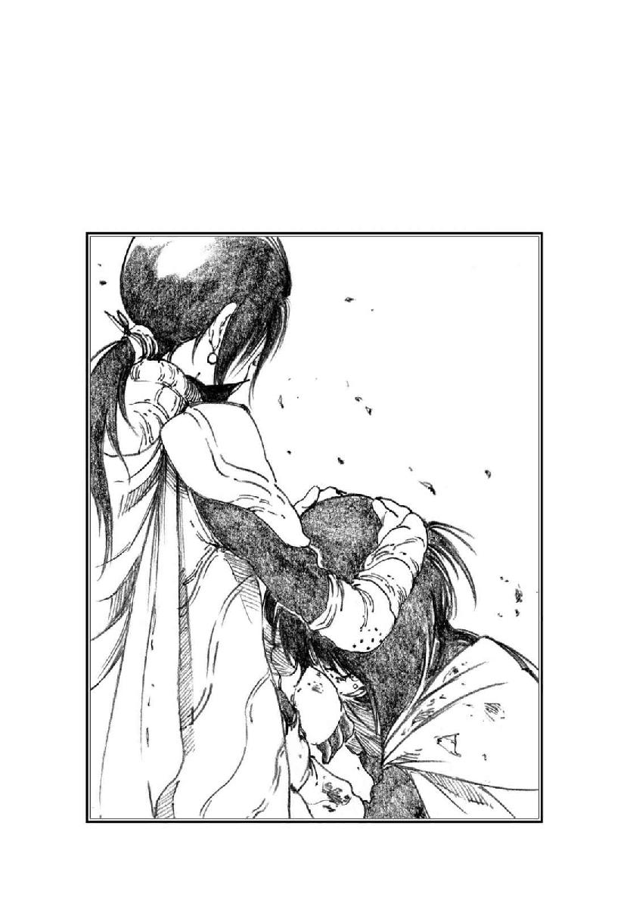
俺達は、ゴブリンの村へと辿り着いた。
村を出発してから、二週間も経っていないのだが、懐かしさを覚える。
まあ、村というのもおこがましいような、柵で囲まれた広場なのだが......。
俺達が旅に出ている間に、簡易のテントなぞ拵えて、生活していたようだ。
村の中心の焚き火跡に、大鍋が設置してあるのに気付いた。
焼く！ オンリーだった調理方法に、煮る！ が加わったらしい。目覚しい進歩である。
あの鍋はどこから？ よく見ると、邪蛇大亀の甲羅を加工したものの様子。
どれだけ狩りの範囲を広げているのやら......。
まあ、他の魔物に襲撃されたりはしていないようで、一安心した。
村へ入って直ぐに、住民であるホブゴブリン達が俺達に気付き、歓声を上げて出迎えてくれた。
残念ながら、お土産はないんだ。
だがまあ、狩りで仕留めた魔物の毛皮等が干してあるのが見えるので、ドワーフ達が直ぐにでも衣服類は作ってくれるだろう。
いずれはゴブリン達も、自分達で作れるようになって貰いたいけどね。
さて、ドワーフを紹介しようと、皆を集めて貰うべくリグルドを探そうとした。
だがその必要はなく、リグルドが走ってきた。
俺達を出迎えるのに慌てているのかと思ったのだが、何やら困った顔をしている。
何かあったのか？ そう思い質問しようとしたのだが、その必要はなかった。
「お帰りなさいませ！ 帰って来られて早々申し訳ないのですが、リムル様にお客です......」
お疲れの所、スミマセン！ と、恐縮しながら、俺の疑問に答えてくれたのだ。
客......？ 知り合いなんていないのだが？
ともかく、ドワーフ達には、自由に村を見学して貰う事とする。彼等もここに住む事になるのだし、興味があるだろう。
持ってきた道具類は、空いているテントに収納させた。野ざらしよりはマシだろう。
ドワーフ達の世話をリグルに任せると、客の所へと案内して貰う。
リグルドは、俺を大きめのテントへと案内してくれた。いつの間にか、応接用にたてたようだ。
誰だろう？ まあ、会えばわかるか。そう考え、テントに入る。
テントの入り口を潜って驚いた。
中にいたのは、数匹の子鬼。
身なりのいいのが数匹と、それに付き従うのが何匹かずつ。
族長と、その護衛だろうか？ 武器は携帯していない様子。していたとしても問題ないけど。
俺の困惑を他所に、突然ゴブリン達が平伏した。
「「「お初にお目にかかります、偉大なるお方！ 何卒、我等の望みをお聞き届け下さい!!」」」
一斉に申し述べて来たのだ。
偉大なお方？ 俺の事らしいが、大げさな。だが、こいつ等の俺を見る目は、本気と書いてマジと読む、そんな目をしている。
俺に何を期待しているんだかわからんが、取り敢えず話を聞くか。
「ふむ。言ってみろ」
「は、有り難き幸せ！ 我等の望みは、貴方様の配下に加えて頂く事でございます!!」
一人の族長が、代表して述べた。周囲も、同意とばかりに頷いている。
「「「何卒、宜しくお願いいたします!!」」」
期待に満ちた目でこちらを窺うと、一斉に深々と平伏したのだった。
正直、面倒くさい、と思った。
うちはまだ、復興もこれからなんだよ。お前等の相手してる暇なんて、ねーよ！
そう言って断りたかったが、この村の人手が減っているのも事実。どうせその内、この辺の縄張り争いでぶつかるのは予想出来た事だったので、今の内に取り込むのも有りかもしれない。
内部から裏切るような事があれば、その時は皆殺しにしよう。
俺は、裏切りを許さない。
魔物を率いるのに、甘い考えは邪魔になる。冷徹に対処しなければならない。その覚悟を決める為にも、こいつ等を受け入れる事にした。
再度、自分に言い聞かせる。
こいつ等が裏切ったら、俺はこいつ等を殺す、と。
しかし......、俺ってこんな簡単に殺す！ とか考えられるんだな。
自分で自分に驚きだ。
まあいい、悩むよりはマシかもしれない。
ところで、こいつ等は代表だけみたいだが、果たして何匹くらいの勢力なのか？
俺は、こいつ等の名前を考えなければならない事に思い至り、溜息をつくのだった......。
各々の使いのゴブリン達が、自分達の村へと知らせに戻っていった。
さてと、残った村の代表達に、話を聞く事とする。
話を聞き、その内容を要約すると......。
そもそもの始まりは、森の秩序が乱れ始めた事に原因がある。牙狼族の襲撃の際、リグルド達の村が見捨てられたのも、戦力を割く余裕がなかった事に起因する。
豚頭族に、蜥蜴人族、そして......大鬼族――
この森の智恵ある魔物達が、森の覇権を求めて動き出したのだ。
今までも、小競り合いはあったのだが、暗黙の了解で、武力衝突には至らなかったらしい。
だがしかし、この森の支配者の消失という事態を受けて、これまでの鬱憤を晴らそうという動きが出たのであろう。
本来、魔物とは、自らの力を誇示したがる性質を持つ。故に、溜まりに溜まった鬱憤を晴らすべく、各種族とも準備に余念がない。戦端が開かれるのは、時間の問題であると思われた。
弱小種族である子鬼族など、ヤツ等の前にはただ蹂躙されるだけの存在でしかないのだ。
ゴブリンの各族長達は慌てた。このままでは、自分達は争いに巻き込まれ破滅してしまうだろうと。
族長会議を開き、連日話し合いが行われたが、所詮、智恵なき魔物。
いい案など出るハズもなく......。
そんな中、牙狼族の襲撃の報が寄せられたが、今はそれどころではない。その為、リグルドの部族は見捨てられ、そして忘れられていたのだ。
ところが......未だ良い案も浮かばず、食糧の備蓄も乏しくなって来た頃、森に新たな脅威が現れたとの報告がなされたのだ。
黒き獣と、それを駆る者達の噂。
その者達は、平地を駆けるかの如く森の中を疾走し、強力な森の魔物を仕留めていった。
一体何者なのか？ 戦々恐々としていたゴブリン達にもたらされる、驚愕の報告。
どうやら、元ゴブリンであるらしい、と。
この報告を受けて、意見は分かれた。
今すぐにでも、その者達の庇護下に入るべきという主張。
怪し過ぎる！ 何らかの罠に違いない！ と警戒すべきだという主張。
罠だと叫ぶ者達に、我々を罠に嵌める理由がない、と説得しても聞き入れない。
また、罠でなかったとしても、受け入れてくれるとも限らない。何よりも、リグルド達の村を見捨てた事を思い出した者達は、流石に許されぬと反対したようだ。ゴブリンにも恥の概念があるらしい。
結局、智恵なき身の悲しさか、言葉での結論は出なかったという。
故に、庇護を求める者の代表達が、この場に足を運ぶ事となったのだそうだ。
なるほどな。まあ、虫のいい話ではある。しかし、弱小な上、智恵もないゴブリン。そこは仕方ないだろう。どちらにせよ、受け入れるのは決まった事だ。
来たい者だけ来ればいい。
俺は、訪ねてきたゴブリン達の代表にそう伝えた。
俺の言葉を受けて、ゴブリン達は自分達の村へと帰っていったのだった。
＊
ここからが問題だ。
やって来たゴブリン達を眺めて、俺は思う。
ちょっと......多過ぎじゃね？
この村のスペースで、収容出来る数ではない。
というか、何で俺がそんな事で悩まなくちゃいけないんだ？
この数日、斧を作ったり、作った斧で木を切って木材を加工したりと、家を建てる段階迄も至っていない。やる事が多過ぎるのだ。
カイジンが、木材関係を担当してくれている。
ドワーフ三兄弟は、せっせと毛皮の加工を行い、ホブゴブリンの衣服類を作成していた。
ドワーフ三兄弟の女性達を見る目が、尋常ではない。なので、作成を急がせた方が良いかもしれないと思った、俺の指示である。
そんなこんなで慌ただしく過ごしていた矢先、ゴブリン達がやってきたのだ。
四つの部族、合わせておよそ五百匹。
残りの者は、反対派の村へと去っていったそうだ。
引っ越すしかないか。今ならまだ、手間は一緒だ。
そう考え、脳内マップを確認する。
立地的に、水源に近く農地に適した開けた場所がある所が望ましい。
俺が歩いた中で、条件にもっとも近いのは......最初の洞窟から出た、直ぐ近くの場所辺り。
ふむ。リグルドを呼び、その辺りの情勢を尋ねる。
「その辺りは、不可侵領域となっておりました。洞窟内部は森と違い、強力な魔物の巣となっておりましたので......」
「なら、問題ないだろ。俺はあそこに住んでたし」
「な、なんですと!?」
「いや、あそこで生まれたようなもんだし、大丈夫だろ」
「......流石、でございますな。このリグルド、感服いたしました」
意味のわからん事を言う。
あの洞窟で生まれただけで、何で感服されなきゃならんのだ？
まあ、納得したようだしいいか。
早速、三兄弟の三男、ミルドを呼ぶ。建築関係の知識を役立てて貰うのだ。
俺は、ミルドと色々な相談を行った。前世の建設関係の知識を、覚えてるだけミルドに伝える。
この世界の測量技術は、魔法を織り交ぜてそこそこなレベルの水準のようだ。そこに、俺の持つなんちゃって知識を加えて、現地測量の計画を立てた。
黒狼には必要ないが、ゴブリンやドワーフには排泄物の処理施設なんかも必要となる。どうせなら、下水関係を整備し、排泄物を醗酵させ、肥料にするのがいいと考えた。衛生面から見ても、伝染病等の感染源になりやすいのは常識だろう。その事をミルドに伝える。
魔物のゴブリンが病気になるのか？ とも考えたのだが、普通に伝染病にかかるらしい。魔物のくせに軟弱な奴等である。まあ、あれだけ不衛生だと、そりゃ病気にもなるわ......。
ゴブリンの場合は、その旺盛な生殖力で死ぬ数を上回り、数の維持が可能だったようだ。
もっとも、進化した事でその繁殖力は激減しているらしい。その事からも、恐らくは寿命も延びていると思われるのだが......病気で死ぬ者が多ければ、数を維持出来なくなるという事を意味する。医療知識のない俺では、病気への対処など出来ないのだ。
魔法による治癒も可能なのかもしれないが、使用出来る者がいないので期待してはいけない。
そういう訳で、どうせ作るのならば徹底的に衛生的な住居を作る方が良い、と考えたのだった。
ミルドは、一応知識として排泄物の処理関係については詳しかった。流石に〝異世界人〟が何人か確認されているだけの事はある。
この世界は、精霊工学という独自の学問により、色々な不思議が解明されているそうだ。
もっとも、排泄物の利用に関してはあまり詳しくなく、俺の話を聞いて驚いていた。
こうして、ある程度の打ち合わせを終えると、ミルドを建設班の班長に任命し全てを任せる。
お得意の丸投げである。
リグルドに、ミルドの下に何名か付けるよう指示し、現地測量に向かわせた。
念の為にランガも同行させる。
あの洞窟から魔物が出てくる事はないと思うが、万が一がある。だが、ランガがいれば対応可能だろう。こうして、ミルド達、建設班を送り出したのだ。
一つ問題が片付いたが、もう一つ重要な案件があった。そう、名前付けである。
考えると憂鬱だ。五百匹近くの名前とか、最早、禁断のＡＢＣＤの出番かもしれない。イロハニホヘトは、途中までしか言えないしな。
早速、名前付けを開始した。
やはり、途中で低位活動状態になってしまったが、四日で全員の名前を付ける事が出来た。かなり頑張ったと、自分を褒めてやりたい。
前回よりも疲労感が少なかったのが救いだったけども、二度とやりたくないものだ。
族長を呼び寄せる。
俺の前に跪く、進化した族長達。
リグル・ドを筆頭に、ルグル・ド、レグル・ド、ログル・ド。
並べて見ると、一目瞭然。そう！ ら・り・る・れ・ろ である。
ら＝ランガになったのは、偶然だ。
我ながら適当だが、大丈夫！ 誰にもバレる事はない。
必死で考えてやったんだぞ、というアピールは忘れない。
俺は、仕事頑張ってますよ、というアピールの得意な男なのだ。
余った四人目の族長は女性だった。
女性らしい名前という事で、リリナと名付けた。
進化した事で、誰にでも見分けがつくようになった。俺ならば『魔力感知』により子鬼でも性別判断は可能なのだが、見た目だけでは判明しにくかったのだ。
今後、この名前もシリーズ化出来るだろうか？ そんな考えが頭をよぎりはしたが、先の事は考えるのは止めよう。今はそんな場合ではないのだから。
さて、目の前のホブゴブリン達。彼等に上下関係を作るべきだろうか？
仲好し小好しで、皆平等！ そんなの現実には有り得ない。
明確な命令系統は必須であろう。特に、力関係を重視する魔物にとっては。
俺はそう考え、そして決断する。
「聞け、お前等に位を授ける！」
そう宣言した。
リグルドを、ゴブリン・キングに格上げした。
そして、残りの四族長をゴブリン・ロードに。
周囲では、村に残った全てのゴブリン達が平伏し、その光景を固唾を呑んで見守っている。
「「「ははぁ!! 承りました!!」」」
その言葉を合図に、割れんばかりの歓声が上がった。
ゴブリンの、新たなる歴史が始まったのだ。
大工道具は、カイジンが抜かりなく用意している。
衣服類は、ガルムとドルドの指揮のもと、順調に製作されている。
木材類は、村の空き地に順調に確保されていっていた。着々と準備が整っている。
全てのゴブリンが進化を終え、その確認が終了した頃に、新たな村の建設予定地の測量を終えてミルドが帰還した。
全ては順調。
新たな村の建設予定の区画を確認する。
それは、村というよりも町と呼ぶべき規模。
俺達の新たな住処。
全ての準備が整った事を確認し、俺達は出発する。
新たな地へ向けて、踏み出すのだ。
俺達の、新たな国を作る第一歩を！
●
その男の名は、フューズ。
小国ブルムンドに属する、自由組合ブルムンド支部ギルドマスターである。
その実力は折り紙つきであり、〝A-〟ランクにまで上り詰めた、凄腕の冒険者でもあった。
ベルヤード男爵との約束通り、彼は速やかに独自の調査を行わせた。
その結果、情報部からの連絡を受けて、帝国に動きのない事は掴んでいた。
このまま帝国が動かない事も有り得るか......。そう思いはしたが、間違いがあってはならない。
引き続き、帝国の監視業務を行わせる。
本来の自分の仕事ではないのだが、そこは仕方ない。そう割り切って。
そんな彼のもとに、もうひと組の調査チームが帰還したとの報が寄せられた。
部屋に入ると、おもむろにソファーに腰掛けた。極秘の話を行う為の、応接室である。
彼と向かい合うソファーに、三人の男女が座っている。Ｂランクの冒険者達。
隠密行動に優れた、ギド。職業〝盗賊〟であり、情報収集に優れた男だ。
防御力に秀でた、カバル。職業〝重戦士〟であり、パーティの壁役としての職務を着実にこなす。軽口を叩くが、その仕事は丁寧だ。
特殊魔法に特化した、エレン。職業〝法術師〟であり、多彩な魔法を操るが、中でも移動系魔法に優れている。パーティの生存率を高める為の用意周到さは、特筆すべき点がある。
ヴェルドラの封印されている洞窟の、調査に向かわせたチームであった。
最初に思ったのが、良く無事に戻ってきてくれた、という事であった。そもそも、あの洞窟の適正レベルはランク〝B+〟相当。主の存在を考慮するならば、〝A-〟の冒険者に依頼してもいい程の危険な場所であった。仮に自分が動いたとしても、正直、一人での攻略は厳しい場所である。
もっとも、自分はギルドマスターであり、自由に動く事など出来はしないのだが......。
そんな中、〝B+〟冒険者を差し置いて、彼等にヴェルドラの現在の状況の調査を依頼していたのだ。彼等に依頼した理由。それが、生存率の高さと、情報収集能力の高さ。討伐ではなく、戦闘を回避しつつの情報収集なら、〝B+〟冒険者を凌ぐ能力を有するとの判断であった。
しかし、彼等に何かあったならば、ギルドマスターである彼の責任は重大である。明らかな規定違反を、支部長自らが率先して行ったのだから。
だが、彼にはどうしても確認する必要がある、と思えたのだ。
だからこそ、彼等の帰還をもっとも喜んだのは、フューズであった。
「報告を聞こう」
フューズは、決して感情を表に出す事なく、質問する。
内心どれだけ感謝していても、労いの言葉などかけない。
三人の男女も慣れたもので、
「大変だったんだぜ？ まったくよー！」
「早くお風呂に入りたい......」
「大変だったのは、旦那と姉さんの口喧嘩を宥める役だった、あっしだと思いやすがね......」
いつもと変わらず、普段通りの任務報告と同じ対応である。しかし、その目にふざけた色合いはなかった。つまり、今回は相当に厳しいミッションだった事が窺える反応である。
そして、三人は報告を開始する。
洞窟内での魔物との戦闘。
守護者、嵐蛇の感知能力を誤魔化し、封印扉内部への侵入。
ヴェルドラの消失を確認。その後、扉内部で一週間ほど調査を行い、完全に何ものの存在も確認出来なかった事を報告する。
中でも、彼等が一番気になった事実――
「で、だ。内部調査を終えて、扉から出たんだが......嵐蛇がいなくなっていた」
「そうなんですよぅ！ 私の離脱魔法、扉内部では発動出来ないので、嵐蛇からどうやって逃げたものか散々悩んだのがバカみたい！」
「あっしの幻覚＋熱源用の囮も、出番なしでさ。というか、行きは良いが、帰りは通用しないんじゃないかと心配してたんで......良かったと言えば良かったんですがね」
という報告である。
一体、どういう事だ？
あれは、推定ランク〝A-〟の魔物。あの洞窟内部で最強の存在。恐らく、自分にも勝てないであろう、魔物。あれがいるからこそ、この任務の成功確率が大幅に減少していたのだが......。
フューズは思案する。
やはり、あの地には何か起きている。それを知る必要がある、フューズはそう結論を下す。
「よし、お前達。三日程休暇をやろう。その後、もう一度、森の調査に向かってくれ。今度は、洞窟内部に入る必要はない。周辺の調査をくまなく、丁寧に行うように。では、行っていいぞ」
「行っていいぞ、じゃねーよ！」
「なんですか、三日って!! もっとお休み下さいよ!?」
「へいへい......。どうせ、何言っても無駄なんでしょうね？」
そんな声が聞こえた気がしたが、フューズは気にしない。
それよりも、今もたらされた情報を整理する。一体、あの森で何が起きているというのか......。
フューズは、深く思考する。
ふと気になって目を開けると、恨みがましい三人の視線。
こいつ等は......。溜息を吐くと、いつものように大声で怒鳴るフューズ。
「何やってる？ 早く行け！」
そう言って、三人を追い出すのであった。
三日後。
カバル、エレン、ギドの三人組は、森への調査に向かうべく準備を行っていた。
「短い休暇だったわ......」
「まったくでやす」
「おいおい、文句ばかり言うなよ。虚しくなるぜ――」
愚痴を言う二人を、一応のリーダーであるカバルが宥めていた。その声に力がないのは、二人と気持ちは同じだからであろう。
森への交通手段は少ない。
最近では魔物の活性化が酷くなっており、商人達の荷馬車も森へ向けては出発しない。護衛を雇うにも金がかかり過ぎて採算が合わないのだ。その為、森に赴くとなると徒歩しか交通手段がないのが現状である。もっとも、〝封印の洞窟〟へ向かう道を馬車が通行出来ないので、どの道、途中からは歩きになるのだが。
なので、準備はとても大切なのだ。
数週間分の保存食を用意するだけでも一苦労である。これを怠ったら、目的地に着く以前に野垂れ死にするだろう。エレンの魔法で水を用意出来るのが救いであった。
ある程度の準備も終わり、さあ出発という段階になった時、彼等の前に一人の人物が声をかけてきた。
「失礼。もし森へ向かうのであれば、途中まで同行させては貰えないだろうか？」
男とも女とも、老人とも若者とも判断のつき難い声である。
表情は見る事は出来ない。何故なら、その人物は仮面を被っていたのだ。
表情のない、美しい模様を象った、仮面。
その醸し出す雰囲気は、怪しい気配を漂わせていた......のだが、
「いいわよぅ？」
「ちょ、お前！ リーダーの俺が、許可出す前に......。なんなの、本当に!?」
「やれやれ、姉さんが言い出したら、もう何言っても無駄ですぜ？」
簡単に了承する、三人組。
「感謝する」
そう一言告げて、後は沈黙し三人について歩き出す、怪しい人物。
こうしてカバル達三人は、仲間を一人加えて再度調査に赴くのだった。
●
森に、木を切る音や、金槌を打ち付ける音が木霊している。
新たな町の整地を行い、順次家を建てていくのだ。とはいえ、最初に上下水管路を設置させている為、未だ家は建っておらず開けた土地になっているだけなのだが。
水路としては、川から直接水を引く仕組みである。
建設中ではあるが、水質管理の建物を作る予定だ。ここで水の浄化を行い、各家に配給する仕組みを考えている。
下水は、木材で作成した溝を地下に埋設してある。
木の内側は腐りにくいように防腐処理を施し、セメントで固めている。今やっている工事がこれだ。近くの山場から、石灰系の素材が採れたので助かった。
そして、町の外れに下水処理用の施設を作り、肥料を作成予定である。
仮設ではあるが、大きめの体育館のような建物を建設させていた。仮の寝泊まりを行う為の建物である。仮設なので大雑把な作りをしているが、現状では問題はない。
区画整理は順調だ。
洞窟に近い方面を上方と設定し、俺の住居を建てる予定だ。そこから族長達の住居が連なり、住民達の家が周囲を取り囲むのだ。
最初に区画整理を行っているので、乱雑さは感じずスッキリと配置を行う事が出来た。十字を描くような形で、大通りを設けているので、いざという時に集団行動を取りやすい。似たような街路が続かないように工夫しないと、迷いそうではあった。だが、その心配はなさそうだ。
心配というなら、攻められた際に敵が行動しやすい点だろうか？
だが、街の中まで進入された時点で大問題な訳だし、気にする事もないだろう。
壊されたなら、また造れば良いのだ。
最初に子鬼族に名前を付けて、人鬼族へと進化させたのは正解だった。
急激に知能が発達し、物覚えがいい。また、体格がよくなり、力が強くなっている。
ドワーフの話によると、ゴブリンはＦランクの魔物なのだそうだが、ホブゴブリンはＣ～Ｄランクに相当する魔物なのだそうだ。
何しろ、一匹二匹というより、一人二人と数える方がしっくりくる程に変化している。魔物というよりは、人に近いのだ。なので、強さはピンキリ。装備する武具や、その個体の職業及び技術によって、評価が変動する。
言われてみれば個体ごとに千差万別で、強さは大きく異なる様子。
特に俺が君主に任命した四名は、他の者よりも能力が高そうだ。
まして、王に任命したリグルドなど、
「おお、このような場所に居られましたか！ 捜しましたぞ」
どこの化物だよ！ と言いたくなるほど、筋骨隆々で大柄な体格になっている。
大鬼と比較しても遜色ないどころか、圧倒しそうだ！ とは、カイジンの話であった。
名前だけではなく、職業を与えた事による変化なのだろう。
本当に魔物の生態は謎である。今度他の者も任命して、試してみるのも良いかもしれない。
「どうかしたのか？」
「は！ 不審な者共を捕らえましたので、報告に参りました」
「不審？ どっかの魔物の一味か？」
「いえ、人間です。ご命令通り、こちらからは手出ししておりません」
「人間？ 何でこんな所に？」
人間だと？ キタコレ！ ここは、仲良くなっておかないと！
まあ、この前のアホな冒険者みたいな奴等だった場合、こっそり処分して魔物のエサにしてやるなりすればよいか。
「なんでも、巨大妖蟻の集団と戦闘中だったとかで、リグルの警備班が救出し保護したのですが......どうも、この周辺の調査等を行っていた形跡がありまして。判断を仰ごうかと......」
ふむ。どこかの国が、この辺の調査にやってきたのだろうか？
ドワーフ達に確認したが、ジュラの大森林はどこの国にも属していない中立地帯だという話だった。領土拡大を狙ったどこぞの国の調査隊である可能性は、十分に考えられる。
だとすると、面倒な事になるな。まあ、話を聞かずに悩んでいても仕方ない。
会ってから考えるか。
「よし、会おう。案内してくれ！」
そう言って、リグルドの肩に飛び乗った。
ランガを見回りに出しているせいで、移動が面倒なのだ。
普通に歩くのと変わりはないが、スライムの背丈が低いのを補うためだ。そのままだと会う者達が見下して来るような感じになるのだ。本人達がそれを気にして、わざわざ跪いたりするのは作業の妨げになるのだが......威厳を保つ為にも、相手に見下すような視線を向けさせるのは不味いのだ。色々と面倒ではあったが、要らぬトラブルの因は絶っておいた方が良いというのが結論だった。
そういう理由もあって、俺の移動は大抵誰かの肩の上なのである。
リグルドは俺を肩に乗せて、捕らえているという冒険者達の元へと赴いた。
さて、どんなヤツだろうか？ そんな事を考えていた俺の耳（は無いのだが）に、
「ちょ、お前！ それは俺が狙ってた!!」
「酷くないですか？ それ、私が育てていたお肉なんですけどぉ!?」
「旦那方、こと、食事に関しては、譲れないんですよ！」
「もぐもぐ」
何とも賑やかな騒ぎが聞こえる。
「......」
俺の無言の問いかけに「す、すいません」とリグルドが答える。
「どうやら、荷物類を蟻共に奪われたらしく......それに、ここ最近食事をしてないと言うものですから、用意してやったもので......」
ふむ。リグルドのヤツも、なかなか優しい所があるようだ。
「いや、いいんじゃないか？ 寧ろ、よく気付いたな。困ってる者に親切にしてやるのは、良い事だぞ」
そう、褒めておいた。だんだんと俺への判断を仰がなくても、皆を纏める事が出来るようになっていっている。それは良い事だと、俺は思う。
「はは！ 今後とも、リムル様に迷惑をかけぬ様、精進したいと存じます！」
まあ、堅苦しいのは変化ないようだ。
そう納得した所で、簡易テントに入る。入り口を見張っていた者が、扉を開けてくれた。
中に入ると、俺に視線が集中した。
口いっぱいに、野菜や肉を頬張っている冒険者達。
目を見開いて、俺を見てくる。変顔になってるが、本人達に自覚はないだろう。
ん？ どこかで見覚えが......。あ、洞窟ですれ違った三人組だった。
一人だけ初めて見る人がいるけど。
仮面を被りながら、どうやって食べてるのかが疑問だ。
もぐもぐ......。
激しくマイペースに食べている。
しかし、焼肉かよ！ くぅ、俺にも味覚があれば......。懐かしいお肉ちゃん。ああ......、味覚、どっかに落ちてないかな......。
おっと、意識が変な方向へいきかけた。俺は意識を切り替える。
リグルドが上座に向かい、俺を降ろす。
「お客人達、大したもてなしは出来んが、寛いでくれておりますかな？ こちらが、我等の主、リムル様である！」
そう俺を紹介し、隣に腰掛けた。
ゴクリ、と食べている物を飲み込む音がした。
そして、
「「「え？ スライムが!?」」」
「もぐもぐ」
一同揃って驚愕する。
一人反応がおかしいようだが、まあいい。
「初めまして。俺はスライムのリムル。悪いスライムじゃないよ！」
ぶっ!! 俺の挨拶に、飲み物を噴き出す仮面の人物。
しかし、仮面に阻まれ、口に含んだ物が散乱する事はなかった。仮面の下がどうなっているのかは不明だが。
失礼なヤツである。
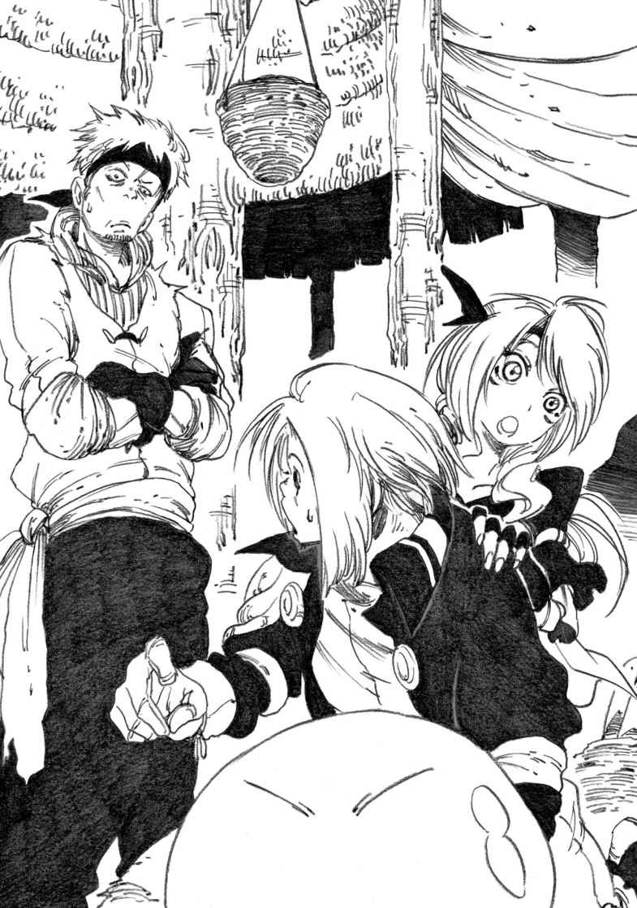
スライムが言葉を話した事に、よほど驚いたとみえる。
三人組も、同様に驚いた様子だが、口に物を含んでいなかったのが幸いしたようだ。
さて、こいつ等はどんなヤツだろう？ まともな人間ならいいのだが。
気を取り直したのか、
「これは失礼しました。まさか魔族に助けて頂けるとは思ってもいませんでしたが、助かりました」
「あ！ 私達は、人間の冒険者です。このお肉、とっても美味しいです！ この三日間、ずっと逃げ続けてて、まともな食事も摂れなくて......本当にありがとうございます！」
「どうも、助かりやした。こんな所でホブゴブリンが、村を建設中とは思いやせんでした」
「ごほごほ、ぐす。ゴクゴク」
まあ、慌てる事はない。
「ま、ゆっくり食事でもして、終わったら話を聞かせてくれ」
そう言って、彼等の食事が終わるのを待つ事にした。どうせなら、食事が終わってから呼んでくれれば良かったのだが、その辺りはまだ気配りが出来ないようだ。
慌てていたというのもあるだろうけど、今後の教育が必要な所だろう。
俺としても、人間の客（捕虜？）が来るなど、想定外だった訳だし、仕方ないな。
俺は、食事中は気まずいだろうからと、テントを出た。そして、食事が終わったら洞窟近辺に設えた俺専用のテントに案内するよう、見張りに言いつける。
リグルドは申し訳なさそうにしていたが、
「まあ、気にするな。今後の課題だな」
そう慰めた。
彼等は彼等なりに、成長している。
最初から全て上手くいく事など、ないのだし。
俺のテントに入り、寛いで待つ。
リグルドが、配下のゴブリナにお茶の用意をさせていた。前に出された物よりも良い物になっている様子だが、残念ながら味はわからない。
こんな所にも進化の影響があるのは面白い。
文化的な生活は、間違いなく根付く。そう確信させる変化であった。
＊
さて、そんなこんなで時間が過ぎ......。
先程は失礼！ そう言いながら、四人がテントに入ってきた。
簡易テントだから、少し狭く感じる。
案内のゴブリナが下がると同時に、お茶を運んで別のゴブリナが入ってきた。
ほらな？ いつの間にか、こういう所もちゃんと成長しているのだ。
夜になると、ドワーフ達と酒を飲みながら、文化や生活について話をしているのを、俺はちゃんと知っているのだ。
「では改めて、初めまして。ここの主のリムルと言う。ここへは何をしに来られたのかな？」
俺の質問は、想定内だったのだろう。
ちゃんと相談する時間を与えたのだ、その辺どう答えるかは決まっていたようだ。
「初めまして、俺はカバル。一応、このパーティのリーダーをしている。こいつがエレンで、こっちがギドだ。言ってわかるかな？ Ｂランクの冒険者だ」
「初めまして！ エレンですぅ！」
「ども、ギドと言いやす。お見知りおきを！」
やはり、この三人はパーティだったか。
Ｂランクならそこそこの強さだが、洞窟は厳しいのではないだろうか？ もしかすると、隠れた特技とか才能とかを持っているのかもしれない。
三人はいいとして、もう一人は？ 洞窟ですれ違った時にはいなかったようだけど？
「で、この人は道が一緒という事で臨時メンバーになった、シズさんだ」
「シズです」
男とも女とも、老人とも若者とも判断のつき難い声であった。だが、俺には性別判断は簡単である。ゴブリンすら見分ける事が可能な俺にとっては、朝飯前なのだ。
女性だった。そして、ある予測。
こいつ......日本人なんじゃないだろうか？ そういう感じがしてならない。
お茶を飲む仕草、その正座の仕方。
この世界に詳しくないのではっきりとは言えないが、正座は珍しいのではないか？
現に、他の三人は正座ではない。狼の毛皮の絨毯に、胡坐をかいて座っている。エレンという女性も横座りみたいな感じで寛いでいる。まあ、この世界のどこかに、日本に似た文化があっても不思議ではない。なのでその考えは、一旦は保留しよう。
ふと思ったが、こいつ等、油断し過ぎだな。この世界って、危機意識少ないのかな？
寛いで談笑しているのを当然のように受け止めていたのだが、考えてみればここは魔物の巣窟である。俺を含めて、この場所には魔物しかいないのだが......。
まあいいか。この冒険者達が抜けているだけ、という可能性が高いだろうし。
と、イカンイカン。話を戻そう。
「これはご丁寧に。それで？」
話を進める事にした。
.........
......
...
話を聞くと、疑う事を知らないのか、ペラペラと何をしていたのか話してくれた。
曰く、ギルドマスターの依頼を受けてこの辺りで怪しい事が起きてないか調べていたそうだ。
で、話にならないのが、
「でな、怪しい物とか言われてもさ、何が怪しいかなんて俺等にわかる訳ないんだよ！」
「そうそぅ！ ちゃんと具体的に何を調べろ！ って言って欲しかったよね」
「いくらあっしらが調査が得意といっても、限界があるってもんでやす」
などと、ギルドマスターの悪口を言い始める始末。
駄目だこいつ等......。
俺は見ず知らずのギルドマスターに同情した。
しかも、怪しそうな大岩に空いた穴に、コレダ！ と思って、剣を突き刺したら......巨大妖蟻の巣穴だったらしい。呆れて言葉も出ない。
何故そこで、剣を突き刺す、という行動を選択したのか問いたい。問い詰めたい。
よく今まで生き延びて来たものだ。
そこから三日、必死で逃げて、荷物を紛失して現在に至るそうだ。
何というか、お疲れ！ としか言いようがなかった。
「大体、この辺りに怪しい物なんてないんじゃないか？ しいて言えば、洞窟？」
俺が聞くと、いやいやと首を横に振るエレン。
「あそこには何もなかったんですよぅ。知ってるかな？ 邪竜が封印されている、と言われていたんですよねぇ。でも、中で二週間も滞在して調査したけど、なんにもなかったもん！ お風呂に入る事も出来ないのに、頑張って損したって感じだったよぅ......」
「って、バカ！ それは流石に言っちゃ駄目な話なんじゃねぇの？」
「知りやせんぜ？ バラしたのは姉さんですぜ！ あっしには関係ありやせんぜ！」
ポロっと話したエレンに、男達は大慌てしている。
まあ、あの時すれ違ったのだから、知っていたんだけどね。
というか、風呂の文化はあるんだ。この町にも風呂屋はぜひ作りたい所だ。
それはともかく、話の続きだ。
「あの洞窟を調査したと言うけど、何であんなとこを調べに行ったの？」
宝探しに来ていた訳ではないようだし。
そんな俺の疑問を受け、カバルはやれやれと首を振った。
「もう言ってしまったもんは、しょーがねえ。実は、エレンが言った通り、邪竜の反応がなくなったと噂になってな......」
なるほど。
俺には知る由もなかったが、ヴェルドラが消えた事で、人間は大騒ぎになったらしい。
封印されているのに、それが消えただけで大騒ぎ。何というか、凄い竜だったようだ。俺からすれば、単なるお喋り好きの気のいいヤツだったのだが......。
しかし、影響が大き過ぎだな。わざわざ調査までしに来るとは。
洞窟付近に町を作るようにしたのは、失敗だったか？
「しかも、中は魔素が濃いという話だったから反応石まで持って行ったんだが......思ったよりも濃度が低下しててな。今ではあの洞窟、普通よりは濃度濃いけど、ただの洞窟になっちまってる。魔素の濃度低下が異常と言えば異常だから、それが唯一の調査結果なんだよ」
「まあ、強い魔物がいっぱいいるから、入らない方がいいのは確かだけどね。お宝はなんにもなかったし、鉱石なんかも全くないし。危ない魔物を倒して、中に入るメリットがなんにもないのよ！」
「探せば盗賊達の装備くらい落ちてるかも知れやせんが、大した物はなさそうでやす」
ドキ。内部の鉱石......目立つのを片っ端から回収した犯人、それは自分です！
魔素の濃度低下の原因は、発生元であるヴェルドラさんを俺が回収したからだろうし......要するに、ほとんど俺が原因みたいなものらしい。
まあ、大丈夫。
言わなければバレないだろ。
それからも、話は続いた。
口を滑らせたので、もう隠しても仕方ない！ とばかりに、色々な情報を提供してくれた。
案外、こいつ等も気のいい奴等だった。
洞窟の価値が減ったという事だし、そういう事ならここへの調査も減りそうだ。
最悪、町を引っ越す事も考えたが、大丈夫だろう。そもそも、ここらの所有権を持つ国はないそうだし、文句を言われる筋合いもない。
一応、町を作っている途中なのだが、ギルド的には問題があるか聞いてみた。
「いや、大丈夫だろ？」
「そうねぇ......、ギルドが口出す問題じゃないしね。国はどうなんだろ？」
「うーん、あっしにはわかりやせん」
確かに、国が動くかどうかまでは、ギルド員にはわからないだろう。
仮に国が動くにしても、他国への大義名分が必要になるだろうし。
俺がそんな事を考えていたその時、今まで大人しく話を聞いていた仮面の女に異変が生じたのだ。突然意識を失い、その場に倒れたのである。
俺達は慌てて、シズさんを介抱しようとして――
「うぐっ、うぐぅぁあああああーーーーーー!!」
唐突に、それは始まった。
＊
シズさんが呻くのを止めると同時に、その場に静寂が訪れる。
仮面の表面にヒビが入り、そこから妖気が漂い出していた。ただ事ではない事態が起きている、誰の目にもそれは明らかであった。
おもむろにシズさんが立ち上がり、詠唱を開始する。
「召喚魔法!?」
エレンが驚きの声を上げた。
「おいおい、マジかよ！ 突然どうしたんだ!? で、どのランクの召喚だ？」
「――ええと、魔法陣の規模からの予想だけど、〝B+〟以上の魔物よ」
「旦那方、悠長な事言ってないで止めないと！」
流石、熟練の冒険者。遣り取りを一瞬で終わらせ、散開する。
「大地よ！ 彼女を束縛せよ！ 泥手」
「うぉおおおーーーりゃ！ 重追突!!」
エレンが足止めを行い、そこにカバルが体当たり技を仕掛ける。ギドは対処要員として、直ぐに動けるように警戒を行っている様子。
ふむ。Ｂランクだが、コンビネーションは一流なのか。無駄がない動きである。
しかしシズさんが、人差し指をクィっと下から上へと指し示すと、それだけでシズさんを中心とした小規模爆発が生じた。俺のテントは粉々である。
テントの事はいい。それよりも、その一撃で三人が怪我をしたりしていないだろうか？
小規模な爆風が起きたが、俺には影響なし。なので、三人の様子を窺う。
泥手による足止めを確認し、重追突を仕掛けたカバルが、タイミング悪くまともに爆発の影響を受けて吹き飛ばされていた。
警戒していたギドが危険を察知し、エレンを突き飛ばしたお陰で、二人は難を逃れている様子。
「おい、大丈夫か？」
「あっしらは大丈夫でさ！」
「ちょっとぅ、身体中が痛いんですけどぅ！ 危険手当上乗せして貰わなきゃ！」
と、二人から返事があり、
「おお、痛てー............。お前等――少しは、リーダーの心配をしろよ！」
不満を言いながら、カバルが立ち上がって来た。実に頑丈な男である。
「シズさんって、魔法使えるとは思ってたけど、召喚まで......」
「てか、何を呼び出しているんだ？」
「いやいや、そんな話じゃねーでしょ。あっしの知る限り、召喚中に魔法を無詠唱で発動なんて、聞いた事も――」
ギドがそう言いかけ、動きを止めた。そして信じ難いものを見るようにシズさんを見て、
「え......まさか............爆炎の支配者――？」
何やら思い至った様子。
シズさんは詠唱を続けている。全身が赤く発光し、軽く身体が浮かび上がっている。
仮面が際立ち、ローブから溢れ出た黒髪がフワフワと漂っていた。
何が目的なのか？ 突然様子がおかしくなったように感じるけど......。
「リグルド、皆を避難させろ！ この付近へ近寄らせるな！」
「しかし......」
「命令だ！ 避難を終えたら、ランガを呼んで来い！」
「はは！ 承りました！」
速やかに行動を開始するリグルド。だが、俺の見立てでは、ゴブリン達では話にならない。無駄死にさせるつもりはないのだ。
そしてランガを呼び寄せたのは、シズさんと戦わせる為ではない。
理由は簡単。この冒険者達が、自作自演でこちらの隙を窺っている可能性を考えて、である。
そもそも、最初からこちらを皆殺しにする気ならば、ペラペラ喋ったのも頷ける。
単なるバカという線も有り得るけれど......。
自作自演だった場合、俺がシズさんと戦闘中に劣勢になるのを待って、背後から不意打ちして来るという可能性があった。それを防ぐ目的で、ランガを呼び寄せる。
考え過ぎだとは思うが、一応念の為だ。
「おい、ギド！ 爆炎のなんたらって、なんだ？」
その質問にギドが答えるより早く、
「それって、五十年くらい前に活躍したっていう、英雄よね？」
エレンが問う。
有名なのか？ 俺がそう考えた時、シズさんの顔から、仮面が落ちた。
吹き上がる炎。
空中に出現した、三体の火炎蜥蜴。
そうして、仮面の下の素顔を晒すシズさん。
黒い髪が爆風に揺られて広がって、炎を照り返して美しく輝く。
美しく、儚げな女性。しかし、その瞳は邪悪な光を放ち、その口元は殺戮への愉悦に歪んで見えた。
俺がその外見に、何とも言い難い不自然さを感じたその時――
《ユニークスキル『変質者』を発動します》
周囲に世界の声が響いた。
同時に、美しい少女の姿が、炎の巨人へと変質していく。
「やはり、間違いないでやす......あれこそが、爆炎の支配者......イフリートを使役する、最強の精霊使役者でやす――!!」
炎の巨人――イフリート――それは、万物を焼き尽くす、炎の支配者。炎系の精霊としては、王級に次ぐ最上位存在だった。
「げぇー!! イフリートっておま、Ａランクオーバーの上位精霊じゃねーか!!」
「うわぁ......初めて見た......て、ぃうかぁ――あんなの、どうやっても勝てないんですけどぉ!?」
「無理でやす......。あっしらは、ここで死ぬんでやす......。短い人生だったでやすねー」
三体のサラマンダーを従えて、爆炎の支配者たるイフリートが君臨している。
三人が混乱するのも仕方ない話だ。何しろ、たった一匹のサラマンダーでさえ、〝B+〟ランク相当の強さを誇るのだから。
というか、なんだ......？ 俺の目には、シズさんが操っているのではなく、寧ろ――イフリートがシズさんを操っているように見えた。
衝撃。
シズさん、いや、イフリートが魔力波動を解き放ったのだ。
――なんだ......？ 殺意もなく、ただただ暴力衝動を解き放ったような、攻撃――？
これは、人の意思によるものではなく、自動的にプログラムされた行動をなぞるような攻撃だ。やはり、間違いないと思う。シズという女性の意思ではなく、使役されているはずのイフリートの暴走、なのだろう。
だが、それが正しいか正しくないかはこの際どうでもいい。問題なのは、その攻撃の凶悪なまでの破壊力であった。
薄赤い衝撃波が周囲に襲い掛かる。衝撃波は熱を伴い、建設途中の建物を焼き尽くしている。
ちくしょう！ せっかく作ったばかりだっていうのに!!
冒険者達三人は、魔法障壁で防ごうとしたみたいだが、一撃で吹き飛ばされてしまったようだ。
死んではいないようだが、無事ではあるまい。意識はあるようだが、動く事は出来ないだろう。今動くと、イフリートの攻撃対象となってしまうだろうから。
「おいお前等、そこを動くな！ 攻撃の目標にされてしまうぞ！」
俺の叫びに頷き、三人は固まりつつ防御に専念する構えを見せた。その場を動かずに、魔法障壁に闘気防壁を発動させたりしている。
あれは、自作自演じゃないな。本気で対抗している。って事は、どうやら意図的にここを潰すつもりで来たという線は消えた訳だ。
しかし、かなりの威力である。
溜めなしの魔力解放で、イフリートを中心として、直径三十メートルの円状に熱風が吹き荒れたのだ。
こいつは、俺が戦わなければ全滅するだろう。イフリートに加えて、サラマンダーが三匹。面倒な話だ。
しかし、不思議な事がある。
この状況なのに、俺に恐怖感が湧いて来ないのだ。魔物になった影響なのか？ まあ、一番最初にヴェルドラや黒蛇にビビッてたのが、いい経験になったのかもしれない。
「おい。お前の目的はなんだ？」
「............」
カッ！
俺の後方で爆発が生じる。どうやら、イフリートとの会話など通じないようだ。俺の問いかけを完全に無視して、一方的に攻撃を仕掛けてきたのだ。
先程のような無目的な魔力解放ではなく、俺を殺すという明確な意思を込めて。こちらへ向けて放たれたその熱線は、触れるモノを全て蒸発させる熱量を有す。
その威力は、先程の魔力解放の比ではない。しかし、当たらなければ問題ないのだ。俺は既に、その射線上からは回避済みである。俺の知覚速度は、音速すらも捕らえる事が可能なのだから。
思えば、町が出来てなくて良かった。こんな時だが、心からそう思った。
簡易テントや仮設住宅は焼き尽くされたが、それは大した被害ではない。
木を切り倒して、現在は広場となっていた。もし森の中だったら、今頃大火事になって大変だっただろう。そう考えれば、不幸中の幸いであった。
運び込んでいた資材類が燃える可能性はあるが、それは諦めるしかなさそうだ。
しかし、調子に乗りやがって！ 俺達の事を、ただ邪魔な障害物としか認識していないようなその態度。俺を苛立たせるのに十分な、舐めた態度である。
俺はイフリートを敵だと判断し、反撃を加える事にした。母体となっているであろうシズさんが気にならない訳ではなかったが、このまま反撃しないでいても問題の解決にはならないのだ。イフリートの制圧が最優先であり、シズさんの状態確認は二の次である。
それに、まだシズさんが操られていると確定した訳でもないのだから。
俺はイフリートの腹部を狙い、『水刃』を放った。
その攻撃は、炎巨人に届く直前で蒸発する。炎の渦が巨人を取り巻き、守っているのだ。
むむ。どうやら、『水刃』は通用しない感じ。
っと、そんな悠長に構えている場合ではなかった。俺の攻撃に反応して、一斉にサラマンダーまで動き出したのだ。
「水氷大魔槍!!」
その内の一匹に向けて、エレンの氷の魔法が突き刺さった。そちらを見ると、魔法障壁の陰に詠唱を終えたエレンが逃げ込んでいる。
器用な真似をするものだと感心した。常駐型の防御魔法だったようで、制御に集中する必要がないのだろう。ただし、水氷大魔槍の一撃では、サラマンダーを仕留めるには至らない。一匹が三人に向けて動き出してしまった。
「おい、大丈夫なのか!?」
「まぁかせて下さいよぅ！ こっちだってねぇ、命張って冒険者をやってるんですぅ！」
「おいおい、勘弁してくれよ......リーダーは俺だっての。ま、こうなっちまったらしょうがねえ。一匹は俺達が受け持った！」
「盗賊に精霊との戦い方なんてないんでやすけど、ね。一蓮托生ってやつでさあ！」
頼もしいような、頼もしくないような。
受け持つというなら、任せよう。だが、死なれても寝覚めが悪くなる。
「じゃあ任せる。だが、無理はするなよ！ 後、怪我したら、これを使ってくれ――」
説明は省く。俺は回復薬を複数取り出して、三人組に向けて投げ渡した。俺が投げた回復薬を、ギドが素早く受け止める。
「えっと......リムル、さん？ これは一体......？」
「一応、回復薬だ。結構性能が高いから、怪我したら使え！」
悠長に説明している場合ではなかった。俺は説明を切り上げると、素早く移動を開始する。
三人とサラマンダーの戦闘が本格化し、のんびりと会話も出来なくなったのだ。一匹だけでも厳しいだろうが、頑張ってくれと祈っておこう。
俺の動きに合わせて、二匹のサラマンダーが俺に向かって移動を開始し、イフリートまでも悠然と動き始める。
さて、どうしたものか。
そう考えた時、ようやくランガが到着した。三人を見張らせるつもりだったが、それはもういいだろう。それよりも、ランガには俺の足になって貰う。
「お呼びですか？ 我が主よ！」
すかさず、ランガの上に飛び乗った。これで、移動速度は確保である。サラマンダーの動きはかなり素早いが、ランガ程ではない。
そして、ランガに命令する。
「お前は回避に専念しろ。一切攻撃する必要はない。攻撃は俺がする！」
「心得ました！」
以心伝心に近い。ランガは俺の意図を読み解き、素早く行動に移った。
二匹のサラマンダーは火炎放射の如く、直線的な炎の吐息を吐いてくる。それをランガが軽やかに回避して、炎の影響が出ない範囲まで後退した。
威力はそこそこ高そうだが、試してみたいとは思わない。人間なら、一発受けただけで炭化しそうな感じであった。
イフリートの前に、二匹のサラマンダーを始末した方がいいだろう。そう考え、『水刃』をサラマンダーに向けて放つ。イフリートと違い、『水刃』を蒸発させる程の火力はないようだった。脚の一本を切断する事に成功したのだ。
だが、ふざけた事に、サラマンダーの脚は直ぐに再生されてしまった。
炎のトカゲの見た目通り、脚も炎で構成しているのだろう。切っただけでは意味がないようだ。感じる力の大きさでは黒蛇の方が格上だったのだが、どうやらサラマンダーの特殊能力により倒すのに苦労しそうである。
「――我が主よ。精霊種には、物理的な攻撃は通用しません。弱点属性の攻撃か、魔法が有効です」
ランガが俺に伝えて来た。なるほど、精霊には通常攻撃は意味がないのか。
俺の攻撃が通用しなかったのは、『水刃』も水で出来た刃でしかないからなのだろう。
では、大量の水をぶっ掛けるって作戦はどうだろう？ 俺の〝胃袋〟には、地底湖より吸い上げた大量の水がある。これならば、炎の精霊の力を削ぐ事が出来るのではないだろうか？
《解。大量の水の放出は可能です。サラマンダーとの接触により、水蒸気爆発が生じますが実行しますか？
ＹＥＳ／ＮＯ》
は？ 水蒸気......爆発......？ 何、それ？
《解。熱エネルギーの塊であるサラマンダーを水が覆う事により、急激に気化します。水蒸気が発生し蒸気の膜がサラマンダーを覆うのですが、高温・高圧縮により圧力波を発生させ、連鎖爆発を起こす現象です》
――つまり？ それでサラマンダーを倒せそうか？
《解。圧力×体積＝放出する水の量×気体定数――》
ストーーーーーップ!! 俺に、理解出来るように、簡潔に頼む。
《解。大爆発が生じますが、サラマンダーを跡形もなく葬り去る事は可能です。ただし、この一帯も更地になるでしょう》
アホか！ 意味ねーだろ！ 俺は自殺願望なんて持ち合わせてはいない。
しかし、どうするか。俺の『水刃』で斬っても効果はないし......と悩んでいると、
「水氷大魔槍!!」
魔法使いであるエレンを中心に、三人組が頑張っているのが視界に入った。
待てよ、俺の『水刃』は魔法ではないから効果がないようだが、じゃあ、魔法ならいい訳で――
「エレン！ 一発、俺に向けて、水氷大魔槍を撃ってくれ！」
「はぇ!? えっとぉ、そんな事を言われてもぉ......」
「頼む！」
俺の頼みに戸惑いながらも、エレンが魔法を詠唱し、氷結魔法：水氷大魔槍を発動させた。
「後で文句言わないで下さいよぉ！ 水氷大魔槍!!」
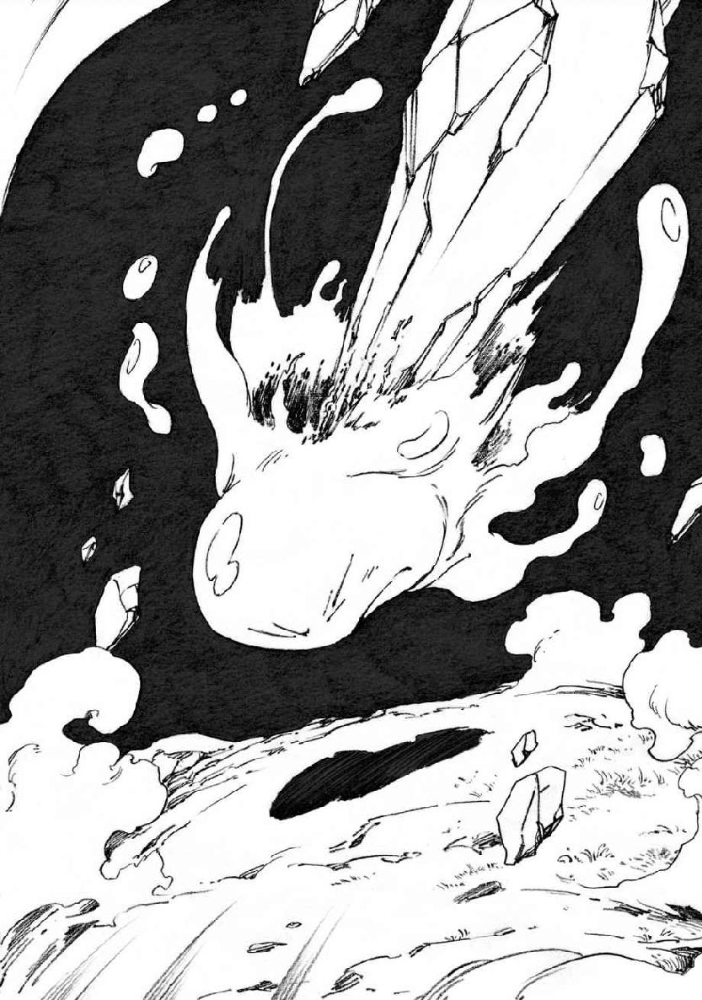
叫びつつ、俺に向けて氷柱の槍が放たれた。
俺の考えが正しければ、放たれた魔法をユニークスキル『捕食者』にて吸収可能だったはず。
だとすれば――
《告。ユニークスキル『捕食者』を発動します。水氷大魔槍の捕食及び、解析に成功しました》
良し！ 狙い通りだ。
それにしても、説明を受けた時は半信半疑だったけど、この『捕食者』というスキルは反則レベルの強さである。強力そうな魔法だったけど、一切ダメージを受ける事なく吸収し、しかも習得まで出来てしまったのだから。
「うぇえ!? 私の魔法、一体どうなっちゃったんですかぁ!?」
スマン、説明している場合じゃないんだ。
魔法の解析は一瞬で完了したらしく、意識するだけで発動が可能となったようだ。
俺は魔法を詠唱なしでも発動可能である。それが、もう一つのユニークスキル『大賢者』の、詠唱破棄の効果であった。
「水氷大魔槍！」
俺は詠唱を省略し、サラマンダーに向けて魔法を発動させた。と同時に、理解する。魔法の原理、その仕組みを。
俺の『水刃』で斬ってもサラマンダーにダメージを与える事は出来なかったが、エレンの魔法ではダメージを与える事が出来ていた。
その理由は、実は簡単な事だったのだ。魔法の発動とは、現象を発動させるのではなく、イメージの具現化に近い。
つまり、〝対象の熱を奪う〟という効果を持つエネルギーを放つ行為とも言える。その付属として、エネルギーを覆う氷柱が出来ているという感じなのだろう。
氷柱が主なのではなく、その持つエネルギーが主であるという事。だから、熱と炎で象られるサラマンダーにもダメージが適用されるのだ。
そして今、俺の放った複数の氷柱――槍というよりは、大きいサイズだった――が、二体のサラマンダーを串刺しにする。それだけで、サラマンダーの持つ魔力が尽きたらしく、二体は蒸発したように蒸気となって消滅したのだった。
「よし！ こっちは終わった、そいつも俺が――」
エレンに余分に魔法を撃たせてしまったので、手伝おうとしたのだが――少し遅過ぎたようだ。
「やばい、こいつ自爆を――」
盾役だったカバルが叫びつつ、闘気防壁を発動。だが、サラマンダーの自爆攻撃は、その防御を突き破るに十分な威力であった。
三人は高熱の炎に晒されて、吹き飛ばされるという結果となった。
俺は慌てて、三人の下までランガを走らせる。
思ったよりも三人の火傷が酷い。意識はあるようだが、動く事は出来ない程の大怪我だ。一番重症なのは壁となったカバルである。だが、カバルが庇わなければ、抵抗力の低いエレンとギドでは死んでいた可能性もあった。
「くそ、ランガ、この三人を保護し、安全な場所へ運べ！」
「しかし――」
その命令にランガは一瞬反論しかけたが、俺の妖気を察知したのか押し黙った。
野生に生きた魔物としての本能が、俺の反論を許さぬという意思を感じたのだろう。
「命令だ！ さっさとしろ。回復薬を渡しているので、安全確保と同時に治療してやれ」
「仰せのままに――御武運を！」
「安心しろ。イフリートは俺が倒す！」
ランガは俺の言葉に納得したのか、頷いた。そして尊敬するかのような眼差しで俺を見て、三人を咥えて去っていった。
何か勘違いさせてしまったかもしれないが、まあいいだろう。残りはイフリートだけだ。
これで心置きなく戦える。もう誰かを巻き込むのは真っ平だった。
さっさとこの茶番を終わらせてやる。そう思い、俺はイフリートを睨み付けた。
吹き荒れる炎。
目の前で、イフリートが分裂したのだ。複数の巨人が、俺の逃げ場を封鎖する。
イフリートは非常に厄介な能力を持っているようだが、俺に焦りはない。
俺の感知能力は、熱の分布を正確に把握する。
例えば、イフリートが作製した複数の分身体が同時に攻撃を放ってきたとしても、炎の温度の高さから危険度を察知し対処するのは簡単だ。全ての巨人が同等の性能ではないと、既に見抜いていたのである。
イフリートは俺に対し、有効な攻撃を当てる事は出来ないだろう。
しかし同時に、俺の攻撃もイフリートに対して有効なものがない。
あの炎が厄介なのだ。
地面がマグマ状になっている。ものすごい高温だろう。
あの高温の中を、のこのこと寄っていく訳にはいかない。コンガリスライムに、クラスチェンジしたくはないのだから。
どうしたものか......。
そもそも、『麻痺吐息』や『毒霧吐息』等は、有効射程が最大で十メートルなのだ。つまり、吐息系の攻撃を仕掛けるならば、最低でも十メートル以内に近寄る必要がある訳で......無茶言うなって話である。
遠距離から安全を保ちつつ、決定的にダメージの通りそうな攻撃手段。今覚えたての、水氷大魔槍。これしかないだろう。
「喰らえ、水氷大魔槍!!」
俺が放った複数の氷柱の大槍が、イフリートの分身体を蒸発させた。氷で蒸発というと変な話なのだが、熱を冷ます時に蒸気が吹き上がるので、そういう形容が一番しっくりくるのだ。俺は調子に乗り、次々と分身体を蒸気に変えていった。
しかし――
ヤバイ！ と気付いた時は手遅れだった。そう直感した時、既に俺は囚われていたのだ。
広範囲型捕獲結界!? イフリートの特殊能力、か？
魔法の詠唱もなく、一瞬で描かれた魔法陣。詠唱破棄が俺だけの特性ではなかったのを忘れていた。自らの身体を気化し、直径百メートルの範囲内を超高熱の炎と熱で満たす。
それは、イフリートの持つ炎系の最上位範囲攻撃なのだろう。しかも、その範囲内には俺が消滅させた分身体のエネルギーが満ち溢れていて――
「炎化爆獄陣」
男とも女とも、老人とも若者とも判断のつき難い声が響いた。
これは――逃げ場なし、だ。敵の術中に嵌まっていたようだ。イフリートは、俺にワザと分身体を攻撃させたのだろう。
目眩ましと、エネルギーの充満の為に。
俺は、死を覚悟した。
ああ......油断したつもりはないが、もっとやりようはあった気がする。しかも、敵の思惑通りなんて最悪過ぎだ。
格好つけずに、皆でかかれば良かった。黒狼に擬態して速度で翻弄し、火傷覚悟で噛み付くのもアリだった。様子見なんてバカな事をせず、『黒稲妻』でもぶち込めば良かったのだ。
その他、様々な後悔が湧いてくる......。
しっかし、いくら知覚速度千倍とはいえ、ダメージがなかなか来ないな。まあ、痛みなく死ねるのはいい事だろうけど......。
てか、遅過ぎない？
焦らしプレイ？
おかしい......俺の予測では、既に炎に巻き込まれているはずなのだ。
うーん......？
＊
《......解。『熱変動耐性』の効果により、炎攻撃は自動的に無効化に成功しています》
なんか、『熱変動耐性』あるの忘れてただろ！ 的なニュアンスを感じた。
そんな事でいちいち返答させんじゃねーよ！ このボンクラ！
そう、そんな罵倒を「......」に感じた。
きっと、俺の気のせいだろう。俺に忠実で、自意識のない『大賢者』が、まさか、ね。
ははは。きっと気のせいだ。間違いない！
さて、と。
おいおい、炎無効に成功だって？
何？ もしかして――
これって、楽勝モードなんじゃね？
全て、計画通りだったんじゃね？
やられた！ と見せかけてからの逆転。セオリーいただきました！
そういう事で、さっさと戦いを終わらせるか。
「今、何かしたのか？」
俺はこっそりと、『粘鋼糸』をイフリートに絡ませる。
最早、ヤツは終わった。本体の核に、シズさんを利用しているのは解析済みなのだ。サラマンダーのように完全な精霊だったら、糸で捕らえるのは無理だっただろうが、核があるなら話は別。
そして、俺の作る『粘鋼糸』は、『粘糸』と『鋼糸』の両方の性質を併せ持つ、日頃の研究の成果の一つだ。更に特徴として、俺の耐性が反映される。つまり、炎で焼き切れる事はないという事。
王手だ。
俺もお前の事を舐めていたが、お前も俺を舐め過ぎだったな。
許すよ、お互い様だし。だから、お前が俺を恨むのも、お前の自由だ。
「次は、俺の番だろ？」
慌てて逃げ出そうとするイフリート。
そう来ると思ったよ。当然ながら、俺の張った『粘鋼糸』により、逃れる事など不可能だ。
俺は、ゆっくりと歩み寄る。こいつに、トドメを刺す為に。
こいつ――恐らくは、シズさんに取り付いて操っているのだろうイフリートに。
慌てる事はない。俺は、ジタバタと暴れても逃げる事が出来ず、炎で俺に何か攻撃を仕掛けている哀れな獲物に歩み寄る。残念だな、炎は俺に通じないんだ。
そして――
《ユニークスキル『捕食者』を使用しますか？
ＹＥＳ／ＮＯ》
答えは当然、ＹＥＳ！ だ。
眩い光が辺りを包み、唐突に消える。
後に残されたのは、俺と、一人の老婆だった。
●
これは夢？
冷たくなった母の手。
私を見る、冷たい瞳。
温かい笑顔と、真っ白な灰。
私を苦しめるだけの思い出など、思い出したくないのに――
でも、それが私が歩いてきた道。
勇者と出会わなければ、今でも私の心は救われていなかっただろう......。
だけど不器用な私は勇者のようにはなれなかった。
こんな私の事を頼ってくれる者もいたのに......。
そう、あれは――
私が冒険者を引退してから、数年が経った頃の事だ。
新人冒険者の教導を行い後進の育成に携わりつつ、組合の仕事を手伝って過ごしていた。
国家の垣根を超えて存在する冒険者互助組合は、交通の要であるイングラシア王国にその本部が設けられていた。冒険者としての活動は引退した身であったけれど、私に出来る事ならなんでも協力しようと思っていた。
何しろ、身寄りのいない私にとって、冒険者互助組合は家とも呼べる組織だったのだから。
そんな私に、優秀な生徒を得る機会があった。
純真な目をした、少年。
絶望に彩られた目をした、少女。
同郷であろう、〝異世界人〟の少年少女。
二人は、実に対照的だった。
前向きで明るい性格のユウキに、常に世界の闇を抱えたように内向的な性格の、ヒナタ。
ヒナタがこの世界に来た時、野盗に襲われていたらしい。だから、時間が経てば打ち解けてくれるだろうと、その時は考えていた。野盗は無残にも、何者かに殺害されていたそうだ。お陰でヒナタは無事だったそうだが、怖い思いをしたのだろう、と。
自分とどこか似た境遇であるヒナタに、親近感が湧いていたから。
ただしそれは、私の勝手な思い込みであったようだ。
「先生、お世話になりました。もう既に、貴方から学ぶ事は何もありません。二度とお会いする事もないでしょう」
ヒナタはそう言って、振り向きもせずに私のもとを去っていってしまった。
追いかけた方が良いのではないかと思いはしたものの、私は町を離れる事は出来なかった。
丁度その頃、ユウキの提唱する新しい組織形態である、国と組合の相互扶助関係の構築が佳境となっていたからだ。元英雄として、私は組合側の交渉代表的な立場に立たされていた。今後の組合の発展を考えるならば、この交渉は何としても成功させる必要があったのだ。結局――
「道に迷った時は、私を頼って欲しい」
そう伝えて、彼女を見送る事しか出来なかった。私は迷った結果、ヒナタよりもユウキを支える道を選んだのだ。
ヒナタは私に似た経験をしているが、私よりも意思が強い少女だった。だから、信じようと思った。心の闇を自らの意思で切り開き、立派な人物になってくれる事を。
それから数年で彼女が教会の重要な地位に就いたと聞いた時も、素直に納得出来た。
少しの誇らしさと、少しの寂しさ。そして、小さな不安を感じたのを覚えている。
ヒナタは寂しくないのだろうか？ ちゃんと元気で暮らしているのだろうか？
そうした思いが湧き出るものの、その手を掴めなかった私には尋ねる資格はないと思えた。
私は、ヒナタの無事を願って祈るしか出来なかったのだ。
ヒナタとは違い、ユウキは活動的だった。
冒険者互助組合を自由組合と名を変えて、今のシステムを築いたのはユウキだ。ユウキの提唱通りに国との相互扶助関係も築く事が出来た。
国家間の協定に組み込まれて、評議会との交渉権を獲得出来たのだ。その事により、組合は飛躍的に勢力を伸ばし始めていた。
当然だろう。それまでは、各国は自国の領土を守るのみに集中していたのだ。だが、自由組合が魔物の討伐を請け負う事で、各国の負担の軽減に繋がったのだから。
それだけではない。
国家に縛られず国を移動する冒険者には、旅の情報の報告が義務付けられている。これを自由組合が取り纏め、魔物の生息分布を把握するようになった。危険度を地区ごとに設定し、安全な旅が可能となったのだ。
他にも大きな効果があった。魔物の分布を把握出来るようになった事で、異常の早期発見も可能になったのだ。それまでに確認されていない魔物を発見したり、増え過ぎた魔物を早期に処理出来たり。
また、通常姿を見せない魔物が町付近で発見された場合など、調査隊を派遣してその原因を探ったりも業務に含まれる。その原因を早期に知る事で、国と協力して討伐隊を組織したりする事も可能となったのだ。
こうした仕組みが出来た事で、人々の暮らしはより安全に快適なものとなっていったのだ。
人類の生活拠点は拡大し、ここ数年で人口の増加も確認されている。
他にも、魔物に対抗する、ランク評価を取り入れた事により、死亡率は大幅に減少した。
これは、新人を教育する教導官としては何よりも嬉しい事だった。ユウキのお陰で自由組合という組織が、国や人々にとってなくてはならないものになったのだった。
「というか、これって僕のやっていたゲームの仕組みを真似て言ってるだけなんですけどね」
そう言って、朗らかに笑うユウキ。
「まあ、ゲームだからなんでもアリなんですけどね。例えば、『僕は悪いスライムじゃないよ！』とか魔物が言って来たりして、仲間になったりしますしね」
苦笑しつつ、そんな冗談を言っていた。
魔物が仲間になる。そんな夢みたいな話、信じられる訳もないのに。
私が生まれた世界は、戦争で燃え尽きる寸前になっていた。それなのに、そんな暢気な事を考えられる程に豊かになったのだろうか？
ゲームというのが、子供向けの玩具というもので、物語を自分で体験出来るような遊びが出来るものなのだと説明を受けたけど......子供にそういう夢を与える事が出来るだけのゆとりを持つまでに復興出来たのならば、それはとても素晴らしい事だと思う。
私はユウキの話に耳を傾けながら、もう戻れない故郷に想いを馳せたのだった。
それから後も、私は裏方としてユウキを支えつつ生きて来た。
表舞台に出る事なく、後進の教導を行う毎日。
自由組合は発展し、誰にでも利用出来る組織に成長した。弱者を救済する仕組みも盛り込まれ、全ての人が平等に利用可能となったのだ。
そして、私の教え子だったユウキが自由組合総帥となっていた。各国の自由組合支部長を総括する、最高責任者という立場に。彼の功績を考えれば、当然の結果だと思う。人々が安心して暮らせるようになったのは、彼の努力の成果なのだから。
やるべき事は全てやったと、私は満足した。
だからその時――思い残した事を為すべく、旅立つ事を決意したのだ。
昔――魔人であった頃の事を、良く夢で見るようになっていた。
寿命が残り少ないのか、イフリートの意識を抑え込めなくなったようだ。〝抗魔の仮面〟の能力が失われていない事からも、それは明白であった。
そう悟った私は、速やかに町を離れた方が良いと判断した。イフリートの意思がいつ暴走するかも不明だし、私の死がイフリートにどのような影響を与えるかも不明だったから。
それに、魔王に一矢報いたい。せめて一言、文句を言ってやりたいという思いもあった。
だから、旅立つ事を決意した。
その事をユウキに告げると、彼は何も言わずに了承してくれた。
私の最後の我儘だ、許して貰おう。ひょっとすると、勇者もこんな気持ちだったのかもしれないな、と思った。
向かった先はブルムンド王国。
ハインツさんは引退しており、息子のフューズがブルムンド自由組合支部長に就任したらしい。
挨拶を行い、世間話を少しした。色々と話が聞けて、良かったと思う。
何と、ヴェルドラの消失を確認したそうだ。そのせいで、現在慌ただしく調査を行っている最中だという。
「まあ、俺は引退した身だから詳しくは知らん。息子が何やら悩んでおったがな」
そう言いながら苦笑するハインツさん。無責任なようだが、それだけ自分の息子のフューズを信頼しているのだろう。
何度か一緒に、魔物の討伐戦に参加した事があった。私を上手くサポートしてくれたのを覚えている。その彼が冒険者としての一線を退き、纏め役として父親の跡を継いだのなら、さぞかし有能な事だろう。
「ありがとう、お世話になりました」
邪魔をしたら悪い。挨拶し、立ち上がる。
ヴェルドラの消失とは、何かの天啓だろうか？ どちらにせよ、森を突き抜ける必要があった。
「おう、シズさんも元気でな。それと、調査隊が明日出発するそうだ。森を抜けるなら、途中まで一緒に行くといい」
興味なさそうにそっぽを向いて、ハインツさんはそう呟いた。
私を止めたりはしない。不器用な彼に出来る、精一杯の思いやりだった。
「相変わらずですね、ハインツさん。最後まで迷惑をかけます」
「迷惑なんかじゃねーよ。それに、最後とか言うなよ。また顔を見せてくれよ、シズさん」
そんな彼の言葉で、心が温かくなるのを感じた。
「そうですね。では、行ってきます」
深々と頭を下げ、その場を後にした。
翌日、ハインツさんの言っていた調査隊に、上手く遭遇する事が出来た。
三人の冒険者達。聞いていた通り、明るく気のいいチームだった。
最後の旅に、良い仲間に出会えた事を感謝したのは本当だ。だがしかし、彼等はあまりにも無用心過ぎて困惑した。
ジュラの大森林を抜けるのに、様々なトラブルが発生したのだ。
良くこれでＢランクの冒険者に成れたものだと感心する。戦闘技術だけを見れば相応なのかもしれないが、基本的な所が出鱈目だった。
それでも何とか旅は続いていたのだが、巨大妖蟻の巣に剣を突き刺したのには仰天した。それは違う、と忠告する間もない出来事だった。
まさか彼等が、あの様な行動に出るとは予想出来なかったからだ。
私の炎なら、巨大妖蟻を焼き尽くす事も簡単だっただろう。しかし、力の制御が困難である事を自覚出来るまでに、私は体力の衰えを感じていた。
イフリートの力により若い肉体のままだったのだが、私の支配力の低下に伴って老化が始まったようだ。いや、本来の年齢相当の肉体へと戻っている、というのが正しい言い方だろう。
私の寿命が尽きた時、イフリートは解き放たれるのだろうか？
それとも、私と一緒に朽ちる事になるのか？
それは、その時になってみなければわからない事だった。だから、私は旅立ったのだし。
だから炎を出すのを躊躇したのだ。
運良く通りかかった者達に助けられ、事なきを得た。だが、これ以上ない程に怪しい魔物達だった事に困惑する。そもそも、魔物に助けられるなんて、初めての経験なのだけど......。
その魔物は、魔狼を駆る人鬼族。
片言ながら人語を理解するのはともかく、明らかに上位の魔物を従えているとは驚きだった。
間違いなく、三人が調査すべき案件であろう怪しさだ。
私の目的地は、魔王レオンの居城である。このジュラの大森林を抜けた先に、魔王の支配領域が広がっているのだ。だから、本来であればここで別れるのが正解だった。
だが、何故だろう。私は、三人に付いて魔物達の住処を見てみようという気になったのだ。
そこは、不思議な場所だった。
魔物達に助けられて、連れて来られた町。
そう、魔物達の住処は、巣穴というような生易しいものではなかった。まさに、町と形容するしかない場所だったのだ。
自分の理解が追いつかない程の衝撃を受けた。何しろ、それは洞窟等を利用したような巣穴ではなく、れっきとした自分達がゼロから創り出す町。
正確には建設途中の町、というべきだろう。区画整理され、建設予定の区画に資材が積み上げられている。
魔物達の生活拠点にもテントが立ち並ぶだけで、建物は一つしかない。それも仮設である。だが、魔物が下地から都市建造を行うなど、古今東西聞いた事もない話であった。
異質な町。
だが活気があり、魔物なのに楽しそうに働いている。
大半は人鬼族だが、黒牙狼も共存しているようだ。ただの黒牙狼族とは若干異質な感じも受けるが、気のせいではないと思う。
人鬼族達の主は、かなり流暢に言葉を理解していた。恐ろしく知恵者なのだろう。食事まで用意してくれたのだ。
ところが驚いた事に、その者も主ではなかったのだ。
スライムが、王様のようにふんぞり返って、偉そうにしていた。スライムなのでふんぞり返るというのも変なのだけれど、他に喩えようがない態度なのだ。
この町で、一番異質な存在。そのスライムこそが、魔物達の主だったのだ。
面白い。
そのスライムの言葉を聞いて、吹き出してしまった。
魔物なのに、自分の事を悪いスライムじゃない、だなどと！
その時私は、ユウキが言っていたゲームというものの話を思い出していた。
偶然だろうか？ ふと、そんな疑問が心に浮かんだ。
どことなく安心出来る、穏やかな空気。
懐かしい故郷を思い出させる、不思議なスライム。
私は、心が満たされるような思いを味わった。寄り道になったけど、来て良かった。
この出会いは運命だ――そう思ったのだ。
それなのに――
楽しい時間は、唐突に終わりを告げる。
私の寿命が燃え尽きようとしているのだ。
私はまだ、私は――目的を果たしていないのに......。
寿命が尽きようとするその瞬間を狙い、イフリートの意識が自分を乗っ取るのを感じた。
まだ......、ここでは迷惑に............。
せめて、最後に――――
そんな私を嘲笑するかのように、魔人は顕現する。
私の意識は暗転した。
●
彼女の様子を窺う。
もう、幾ばくも持たないだろう。
意識が戻る事も、ないかもしれない。
それでも、同郷の身として、最後まで面倒を見よう。そう思う。
負傷した三人の冒険者は、元気だった。こんな大怪我するなんて、危険手当では納得出来ない、と喚いていたけど。
「これ、どういう事ですか？ 全く火傷の痕が残ってないんですけど......というか、お肌つるつるのすべすべなんですけど!!」
「すげーな......あの怪我じゃ、一週間は動けないかと思っていたんだが......」
「驚きやした。こいつは、凄い回復薬もあったもんでやす」
と、怪我の具合も問題ない。渡した回復薬で元通りである。
「でもぅ、これじゃ逆に......危険手当、貰えなくないですか？」
「だな。誰も信じちゃくれねーな......」
「そうでやすね......でもま、怪我が残るよりいいって事でやすよ！」
何とも、現金な悩み事で口論を始めていた。本当に、能天気な奴等である。
魔物への差別もない様子だったので、落ち着いてから俺が町へ遊びに行きたいと告げると、
「なんだったら、ギルドマスターに伝言してやろうか？」
そう言ってくれた。
その言葉に、俺は喜んで伝言を頼む。
冒険者に憧れはある。身元確認なんて面倒な話は勘弁して貰いたいし、魔物なのに冒険者登録を出来るかどうかも怪しい。
カバルが、リムルという名前を出せばギルドマスターへ話がいくように、取りはからってくれると約束してくれた。やはり、いいヤツだ。
俺は気をよくし、餞別を渡す事にした。
勧誘してきたドワーフ三兄弟が作製した、出来立ての品々である。素材から自前で揃えた試作品なのだが、性能はそれなりに良い。
粘鋼糸衣：蜘蛛の糸で編み込まれている純白のローブ。
甲殻鱗鎧：トカゲの甲殻を用いた重鎧だが、見た目と性能に反して軽い。
硬革鎧：周辺の魔物の毛皮を加工した魔法耐性付きの品。
といった装備品や、回復薬を十個と食料を用意し、渡してやった。
「ちょ！ このローブ、何なんですか!! 軽い上に頑丈！ ていうか、めっちゃ綺麗！」
「うぉーー!! 憧れの甲殻鱗鎧!! ガ、ガルム師の作品じゃねーか!? 家宝にします!!」
「いいんですかい？ あっしには勿体ないような作品......牙狼の毛皮まで使用されてやすぜ!?」
何というか、おおはしゃぎだった。
そりゃ、炎で装備は破損しまくりの上、報酬で買い替え出来ないと喚いていたのだ。俺のせいではないが、少しだけ同情してしまったというのはある。
渡したのは、大量生産に移る前に試しに作ったヤツだったのだが、性能は良いのだし文句はあるまい。あんなに喜んでいるのだし、問題ないだろう。
まあ、これだけ喜んでくれているのだ。忘れずに伝言してくれるだろう。最後には三人とも、俺の事を旦那！ と呼んで懐いてくれていたしな。
三人は最後までシズさんの事を気にしていたが、三日程滞在してから旅立っていった。
報告もあるようだし、長居は出来ないのだろう。そもそも、最初からこの近辺までの同行者に過ぎないシズさんを心配するあたり、彼等はお人好しなのだ。
俺が責任を持って面倒見ると約束したので、ようやく納得して去っていったのだった。
＊
一週間が経過した。
シズさんが目覚めた。
「ここは――そうか......、迷惑をかけた」
意識はハッキリとしているようだ。
魔人化しても、記憶は鮮明なようである。
「夢を、見ていたよ......。懐かしい夢。もう戻れない......昔住んでいた、町――」
日本の事か？
「なあ、スライムさん。君の名前は、何ていうの？」
リムルだと、名乗ったハズだが......ボケたか？
「リムルだ」
俺がそう答えると、シズさんは何かを考えるように目を瞑った。
「本当の名前は、教えてくれないのかい？」
そう、問いかけて来た。
気付いていたのか？ 一瞬躊躇ったが、
「ふん。どうせ、貴方は長くない。教えよう、三上悟だ」
本当の名前。もう二度と、名乗る事はないと思っていたのだが。
「やはり、同郷者だったのか......。そうじゃないかと、思ったんだよ。雰囲気が、ね」
沈黙。そして、
「私の生徒達にも、聞いたんだ。綺麗な町になったんだって？ あの、周りを見回しても、火の海だった、町が......？」
「ああ。何なら、見せてやるよ」
そう言って、『思念伝達』で、俺の記憶を伝える。
こういう時、本当に便利だと実感する。
「ああ......」
シズさんは、涙を流した。
「ねえ、スライムさん......いや、悟さん。お願いがあるんだが、聞いてくれないかい？」
「なんだ？」
どうせ、碌でもない願いだろう。
だが、最後まで面倒を見る、そう約束したのだ。願いくらい、聞いてやる。
「私を、食べておくれ......」
なんだって？ この婆さん。何言ってんの？
「私にかけられた......呪いを、食べてくれたんだろう......？ 嬉しかったよ......。私に呪いをかけたヤツに――どちらにせよ、私には無理だっただろうけど――文句は言ってやりたかったんだけどね......。最後のお願いだ――私を、君の中で眠らせてくれないかい？」
静かに語るシズさん。
その瞳には、諦めきれない想いが溢れているようで――俺の心を惑わせる。不条理で残酷で......。
「私はね、この世界が――嫌いなんだ。それでも、この世界が憎めなかった。まるで、あの男のようだ......。この世界に、あの男を重ねて――見ているのかもしれないね......。だから、この世界に取り込まれたく、ないんだ。お願いだ――どうか、私を食べてくれないだろうか............」
ふん。何ていう事のない願い。俺にとっては、容易い事だ。
俺を縛る、呪縛となる願い。俺は、彼女の憎しみを受け継ぐ事になる。
迷う事はあるか？
彼女に安心して、逝って貰う事が出来るようにするには――答えは、決まっている。
「いいよ。貴方の憎しみは、俺が引き継ぐ。貴方を苦しめた、男の名前は？」
俺の言葉にシズさんは目を見開き、火傷の痕の残る顔を引き攣らせ、そして涙を流し、
「レオン・クロムウェル。最強の〝魔王〟の一人――」
祈るように、俺を見つめる。
「約束しよう！ 三上悟......いや、リムル＝テンペストの名において！ レオン・クロムウェルにきっちりと、貴方の想いをぶつけて、後悔させてやるよ」
ありがとう――彼女はそう、呟いた。
そして、目を瞑る。眠るように、息を引き取る――
《ユニークスキル『捕食者』を使用しますか？
ＹＥＳ／ＮＯ》
――安らかに眠れ、俺の中で！
ＹＥＳ！ と念じる。
彼女の安らぎを祈るように......。
俺の中で、永遠に覚める事のない、幸せな夢を見られるように、と。
●
コツンコツンコツン......。
彼女は、顔を上げる。
幼く、可愛らしい、顔立ち。
そして、安堵し、微笑みを浮かべた。
（ここに、いたんですね！ もう、私を置いていかないで！）
だが、その人影は首を振り、ある一点を指し示す。
少女は悲しげな顔を浮かべ、指差す方へ顔を向ける......。
そこには――
（お母さん!!）
身体中で喜びを露わにし、母親へと駆け出す少女。
人影は、それを確認すると、消えた。まるで、最初から存在していないかの如く。
――あるいは、それは少女の想いの生み出した、幻なのかもしれないけれど。
こうして、少女は母親と再会する。
少女の長い旅は、今、終わりを迎えたのだ。
シズさんは逝った。
俺に、一つの目標を与えて。
今までは、降り掛かる火の粉を払う事のみ考えていたが、今後は〝魔王〟の情報収集も行う必要がある。簡単に請け負ったが、約束は果たさなければならない。
俺は、約束を守る男なのだ。
彼女は、俺に新たな能力も残してくれた。
ユニークスキル『変質者』と、エクストラスキル『炎熱操作』だ。
ついでに、炎の巨人も喰ったんだったっけ。俺の敵ではなかったが、こいつも危険なヤツだった。
炎の巨人が、Ａランクオーバーか。
確かに、黒蛇や、黒狼では勝てそうもない。通用しそうな攻撃手段がないのだから、どうしようもないだろう。Ａランクを超えるには壁があるそうだが、納得いく話であった。
能力の研究も、ボチボチ行う必要がありそうだ。
だが、その前に！
俺には、最重要となる確認事項が存在する。
そう！ 人化だ!!
俺は新たに用意された、俺専用の簡易テントに入った。
誰も入るなよ！ と声をかけ、扉を閉める。
ふふふ、ふはは、ふはははは！
笑いの三段活用を正しく使用し、
「へ～ん、しん！」
効果音は出なかったが、擬態：人間を実行した。
こんなにも擬態効果が楽しみなのは初めてだ。
ところが、
......あれ？ おやおやおや!?
いつも出てくる、黒霧が出ない。
どうなってやがる!? と、思ったが、何故か視点が若干高くなった。
というか、手と足が生えている。そして、体色が、月白色から人肌色へと変化していた。
む、むむむ？
ちょっと良くわからないけど、俺の意図と違う気がする。
鏡がないのが悔やまれる。
しかし、だ。
ちょっと認めたくはないのだが、この状態に覚えはあるのだ。
遠い昔、そう、三十年くらい前の状態。小学校に上がるかどうか、その年代がこんな感じだった。
ちょっと待って欲しい。
動揺し過ぎて気付くのが遅れたが、もっと大きな違いがある。
ないのだ。
新たに生まれたであろう、俺の息子......二世の姿がない！
ど、どういう事だ？
俺は、狼狽えた。
大慌てで股間を確認した。
そして知る、驚愕の事実......。
な、何もない。ツルリ、と何もなかった。
よ～くよく、考えてみれば、魔物に擬態した時にはそんな疑問は湧かなかった。排泄の必要がないから、排泄器官があるハズがないという事に。
という事は当然、生殖の必要がないのに生殖器官が必要か？
答えは――今の俺の状態、という事か......。
深い喪失感と、なるほどな！ という納得感が俺を襲った。
まさか！ 慌てて頭部を確認した。フサフサと柔らかい手触り。
安堵の溜息を吐いた。宇宙人のように怪しい人型ではないようで、良かった！
考えてみれば、黒狼も毛がフサフサだった。毛がなければどんな化物......想像すると気持ち悪くなりそうだ。やめよう。この先は危険だ。
さて、クールな俺らしくなく、ちょっとばかり焦ってしまったかな？
この際、息子の事も受け入れよう。認めたくはないが、スライムよりはマシなのだし......。
全身の姿確認が出来ないのが痛いな......そう思った時、さっき炎の巨人を喰って手に入れた『分身体』を使ってみれば？ というナイスアイディアが浮かんできた。
流石、俺。この状態で可能かどうかは不明だが、やってみる。
俺の身体から黒霧が湧き出し、目の前に集まって人型となった。どうやら問題なく成功したようだ。一瞬でそれは完了した。そしてそこには――
――これ、ヤバイ。
このヤバイというのは、色々な意味がある。
まず見た目。
薄らと青みがかった銀髪で、パッチリとした瞳の愛くるしい容姿の美少女？ 美少年？ 性別がないので正確には中性なのだが......見た目だけで言えば、少女よりの顔立ち。
元がシズさんなのだろう、俺の遺伝子は欠片も見受けられなかった。そして、シズさんの遺伝子を再現しただけ、って訳でもないようだ。髪の色もそうだが、瞳の色が金色なのだ。ヴェルドラも黄金色の瞳だったし、上位の魔物は瞳の色が金色なのかもしれないな。
そういえば、ランガも瞳の色が血色から金色に変化したみたいだったな。興奮状態によって、色が変化するようだけど。ひょっとすると、俺の眷属になったから色が変化したのかもしれない。
外見に前世の影響がないのは当然だろう。魂だけこっちの世界に来たのだし。
つまり今の外見の要素は、大半がシズさんの遺伝子で構成されていると言えた。恐ろしい程の美少女だったんですね、シズさん......。
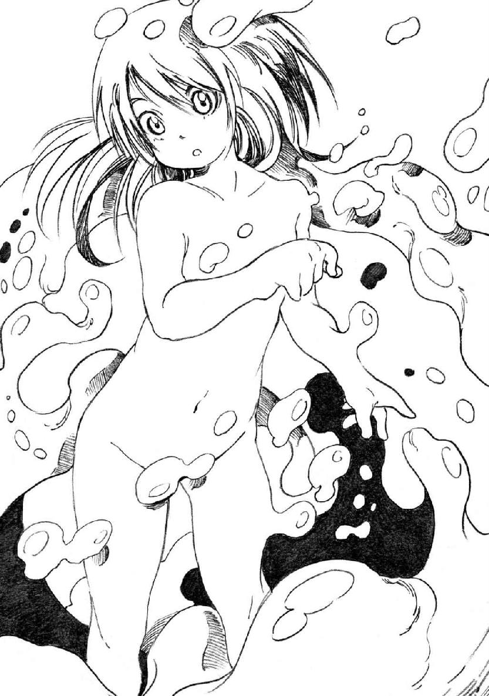
もう一つの要素として、スライムの劣化とは無縁なプルプルの美肌が上げられる。いい所同士を受け継いで誕生したのが、今の俺の姿と言えるだろう。完璧であった。
可愛らしい子が、全裸で立ってる。まあ、隠すべき何モノもついてないのだけど......。
そういう問題ではなく、倫理的にヤバそうだ。ここに警察はいないけどね。
いや本当に、めちゃくちゃ可愛い顔立ち。ここは、シズさん、グッジョブ！ と言っておこう。
俺も、ナイスガイだったが、美少年ではなかった。思い出補正を駆使しても無理がある。
ここは、素直に感謝しとこう。
簡易テントの中に用意しておいた毛皮を纏い、分身にも毛皮を渡した。
今度、服を用意しないといけないな。
本題に移ろう。
本題のヤバイ理由。それは、その能力だ。
分身と言ったが、思考演算能力の優れている俺と、完全にリンクしているのだ。
つまり、どっちも俺である。本体と、分身体に差がないのだ。
いや、炎の巨人は明らかに分身体の能力は劣っていた。なのに、俺の分身は劣っていないと感じる。いや、多少は劣っているのだろうけど。
違いはある。
その魔素容量だ。最初に使用した魔素の分量しか、容量がないのだろう。だが、最初にもっと多く魔素を受け渡しておく事も可能なのだ。
俺の魔素容量は、結構ある。使い方によっては、かなりの戦力になるだろう。
ただ、炎の巨人は十体程に分身したが、俺の分身は高性能過ぎて、一体だけしか無理みたいだった。
もっとも、これは相手からすれば、反則くさいスキルであろう。何しろ、攻撃力、防御力といった肉体性能が同等の分身体を作製出来る、という能力なのだから。
最後の理由。
それは、擬態への違和感のなさ。
黒霧が発生しなかった時点で、それに気付いた。
例えば、黒狼。
黒狼に擬態しようとすると、黒霧で擬態を構成する。これは、スライム本体の能力に劣るのだ。
スライムの身体の手足がない事による、物理運動への制限で目立たないのだが、細胞能力は異常に高い。細胞の一つ一つが、筋肉であり、脳であり、神経でもある。
理解出来るだろうか？ 目で見て、神経が情報を伝達し、脳に達する。
そういったプロセスが必要ない。
『大賢者』補正の知覚千倍がなくとも、俺の反応速度は、常人を上回るのだ。
それが、黒霧の身体では、脳＝本体へ到達するのに、若干のタイムラグが発生する。恐らく、分身体の若干の劣化は、この部分が原因だろう。
では、黒霧を使用しない擬態：人間だとどうなるのか？
そう！ スライムの身体と同等の反応速度が出るのだ。違和感がないのである。
そして、手足が生じた事による、運動能力の向上。まあ、子供だけど。
それでも、スライムよりは動きやすい。その分、疲れやすくなっているのは仕方ない。
一番重要な事は、黒霧を使用しない為、魔素の消費が必要ない点だろう。
何という便利さ！
これからは、この姿での活動をメインにしようと思ったのだった。
ふと思いつき、分身体に命令を出す。自分で自分を動かすように、スムーズに。
黒霧が出て、分身体が成長を始めた！
スラリとした体躯。たなびく銀髪。美しく、中性的な容貌。
完璧だ！
そこから更に、女型にしたり、男型にしたり。
マッチョにしたり、デブにしたり。壮年にしたり、老人にしたり。
色々な状態に擬態する事が可能だと、判明した。
黒霧を使用した魔物への擬態と同様に、足りない部分を補う事で成人にも擬態可能なのだ。
これは、筋力を増強するにはいいかもしれない。反応速度は落ちるが、威力を出すには大きい方が有利である。
まあ、スピードが戦闘における最も重要な要素である！ とは、思うのだけれど。
それからも色々な実験を行い、新しい身体の能力を確認したのだった。
●
こうして、何という事もない普通の人生を歩むはずだった三上悟は、スライムとして生まれ変わりを果たした。
そして――一人の女性の想いと姿を受け継ぎ、一つの目的を得る。
リムルという名の、一匹のスライム。
そのスライムを中心として、世界は――激動の時代を迎える事になるのだった。
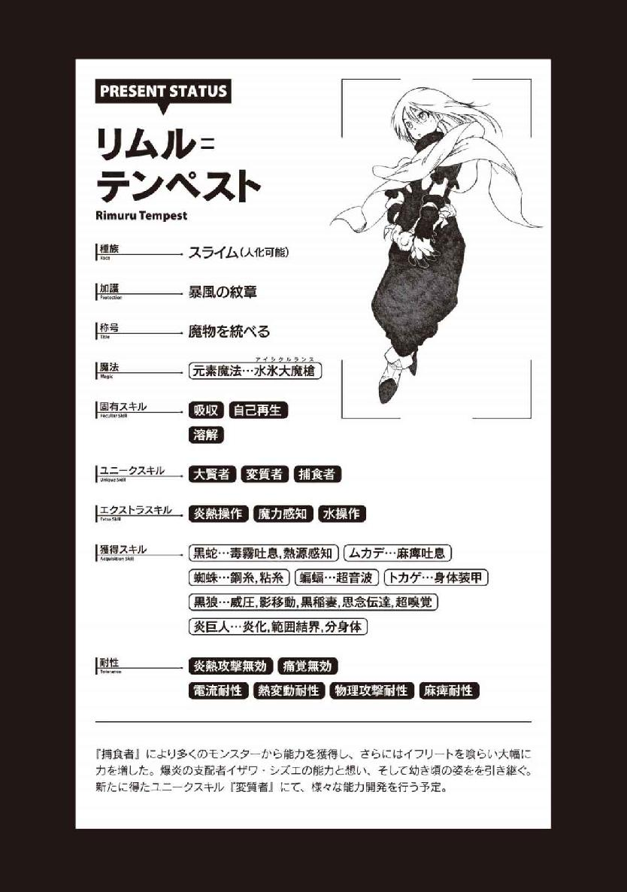
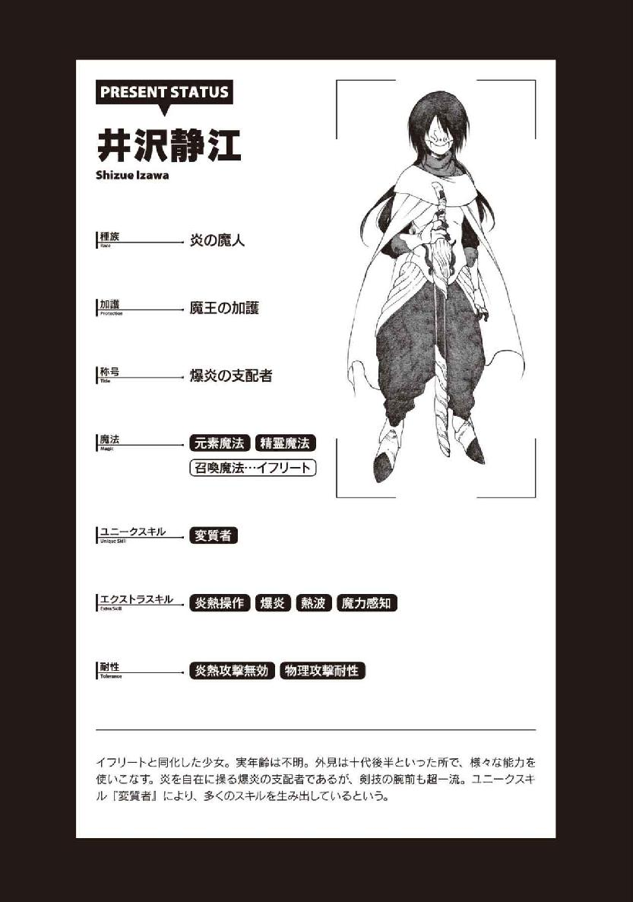
それはまだ、ゴブタがただのゴブリンだった頃の話。
天には青空が広がり、風は爽やかに吹いている。
そして、後ろには迫り来る人間達。今日も元気に、ゴブタは追われていた。
「待ちやがれ！ 逃げ足だけは素早い野郎だ」
「また畑を荒らしやがってこの糞が！ 今日こそぶっ殺してやる！」
目を血走らせて、見上げるような大男達がゴブタに肉薄する。
ゴブタは走る。全力で走る。
捕まったら酷い目にあうだろう。捕まった事がないので想像だが、人間に捕まって戻って来た仲間はおらず、それは酷い事になるのだろうと恐怖するゴブタ。
畑を荒らさなければいい話なのだが、ゴブタ達ゴブリンにとっては、畑という概念が理解出来ないのだ。野菜や果物が大量に群生している場所、という認識なのである。
そこが人間のテリトリーであり、見つかれば追われると経験上知っているのだが、食欲には勝てない。手にした甘い瓜を齧りつつ、ゴブタは素早く獣道へと逃げ込んだ。
小柄なゴブリンだからこそ逃げ込める、小さな抜け道である。大柄な人間達では入る事も出来ず、ゴブタに向かって罵声を浴びせるしか出来る事はない。
（逃亡ルートを確保するのは、基本っすよ！）
逃げ道を考えていたのは正解だったと安堵する。
今日の逃亡劇は、ゴブタの勝利に終わったのだ。
村に帰り着くと、長老含む村の有力者が集まって、何やら相談事を行っていた。
コボルトの商人達も来ていて、一緒に話している。
「ですから、ワタシ共が引き取るには、これらは高価過ぎまして......」
「それでは、せっかくの魔法の武具が無駄になってしまう。何とかならぬのか？」
「せめてもう少し小振りであったならば、我等にも扱えたものを......」
「うむ、そうだな。これだけ大きいとなると、ワシでも扱えぬ」
通り過ぎようとしたゴブタに、そんな会話が聞こえてきた。
どうやら、コボルトの商人に魔法の武具を売りつけようとしているようだった。
人間が扱う武具は、小剣や短剣ならともかく、ゴブリンには大き過ぎるのだ。鎧は論外である。硬皮鎧ならば分解して、使える部分のみを利用出来るのだが、金属鎧だとそれも難しい。金属加工が出来る者など、ゴブリンの中にはいないからだ。
まして、魔法武具ともなれば、下手に触ると価値がなくなってしまうおそれもあった。自分達で扱う事も出来ないうえに、コボルトの商人にも引き取ってもらえないとなると、宝の持ち腐れとなる。
「そうだ！ ドワーフ王国まで出向けば、これらの品でも引き取ってもらえますぞ。代金は商品でも受け取れますし、ドワーフ製の金物等を配達もしてくれます。ここからだと結構な距離がありますが......川沿いに進むなら迷う事はないでしょう」
悩む長老達に、コボルトの商人が思い出したように声をかけた。
その一言を皮切りに、一気に騒々しくなる長老達。
「ドワーフの王国だと!? 遥か遠い地ではないか！ 噂でしか聞かぬ、異国の地だぞ」
「そのような場所まで旅をするには、一体どれだけかかるというのだ？」
「そもそも、誰を派遣する？ 若者衆は貴重な労働力、一人も出す事は出来ぬぞ！」
そんな具合に意見が飛び交い、纏まる気配はなかった。
（自分には関係なさそうっすね！）
そんな喧騒を横目に、ゴブタは気楽にその場を通り過ぎようとした。
だが――
「待つのだ」
長老に呼び止められる。
「貴様、暇そうだな。少し頼まれてくれぬか？」
ゴブタは何やら嫌な予感を覚えた。
「そうそう、このナイフ、素晴らしい品だと思わないか？ 頼みを聞いてくれたら、貴様にくれてやろうではないか！」
長老にチラリと見せられたナイフの輝きに心を奪われる。
「何でも言って下さいっす！ 自分、どんな頼みでも引き受けるっすよ!!」
先程の嫌な予感などすっかり忘れ、つい引き受けると口走ってしまう。だが、それは仕方のない話かもしれない。何しろそのナイフ、銀色に輝く魔法の掛かった品だったのだ。ゴブタは一瞬にして理性が吹き飛び、長老に釣られて返事してしまっていたのだった。
（あ！）
そう思った時は既に手遅れ。
「そうかね！ 行ってくれるか、ドワーフ王国へ」
「えっ!? 自分がっすか？」
「頼まれてくれるね？」
長老達は笑顔でゴブタを取り囲む。そんな目が笑っていない笑顔を見て、ゴブタに出来るのは頷く事だけであった。
ゴブリンの寿命は、人の五分の一以下と言われている。
遠く遡れば妖精族へと辿り着くらしいが、魔物になり劣化した時点で、そうした繋がりは絶たれたに等しい。長く生きる者でも二十年が精々であり、普通は十年程で寿命を迎える。生殖行為が可能となる三歳で成人と見なされ、五歳ともなれば一端の大人だ。
種として脆弱である為、数だけは増えるのが速い。だが、生き残れる者が少ないのも自然の摂理として当然である。
生まれた数の半数しか成人出来ず、五歳の誕生日を迎える事が出来るのは更に成人した者の半数以下というのが、ゴブリンという魔物の常識であった。
寿命の短いゴブリンは、言語を習得するという習慣がない。言葉は喋れるが、あくまでも仲間同士での意思疎通のみである。だから彼等には知恵を継承するという習慣もなく、財産を貯め込むという習性もなかった。
そんなゴブリン達であったが故に、自分達の役に立たない魔法武具を売り払い、日用品や役立つ防具を手に入れようと画策したのである。
もっとも、知恵なき魔物であったせいで、その旅があまりにも危険で成功率の低いものであるとは気付かない。往復で数ヶ月もかかるような冒険は、ゴブリンにとっては生死を賭した大冒険であると言えるのに......。
誰一人として、そんな重大な任務だと考える者はいなかったのである。
長老のような大人達にしても、少し面倒な任務を暇そうな子供に頼んだ、という程度の認識でしかなかったのだ。悪気があった訳ではなく、計算も碌に出来ないゴブリンとしての悲しさ故の出来事であった。
こうして何の躊躇いもなく、ゴブタのドワーフ王国行きが決定したのである。
＊
みんな酷いっすよ！ そうゴブタは愚痴を零す。
それも当然だ。何しろ、まだ体格の小さな子供であるゴブタに、山のような荷物を抱えて旅立てと無茶を言うのだから。普通に歩いても二ヶ月はかかるという話をコボルト商人から聞いてはいたが、こんな荷物を抱えていては、まともに歩く事も出来はしない。
文句を言っても始まらない。
そこでゴブタは考えた。荷物を箱に詰めて引っ張っていこう、と。
だが、当然ながら引っ張っても箱は動かない。
頭を抱えるゴブタだったが、人間の住む辺りで見かけた馬が引く箱を思い出す。
（そう言えば、あの箱には丸いものが付いていたっすね......）
ゴブタが思い出したのは馬車であり、丸いものとは車輪の事である。
そんな事は知らぬゴブタは、見よう見真似で車輪代わりになりそうな物を探す。
そして見つけたのは、円形盾であった。
（これが良さそうっす！）
それからは早かった。真っ直ぐな棍棒をナイフで削り、形を整える。そして、荷物を積んだ箱に穴を開けて、その棒を差し込んだ。
車軸となった棍棒の両サイドに円形盾を嵌め込んで、蔦で縛って固定する。後は箱に取っ手を付けて、手引き台車の完成であった。
ボロ布を詰め込み、運搬品が転がり落ちないように固定する。夜には毛布代わりにもなるだろうと、村で余った毛布なども拝借した。
水と食糧を長老が準備してくれた事に歓喜して、それも一緒に台車に積み込んだ。
準備は完了した。そしてゴブタは村を出発したのだ。
＊
（お腹減ったっす......）
村を出て一週間後、ゴブタは疲労困憊となり、フラフラと道を進んでいた。
一生かかっても食べ切れないと思っていた食糧は、五日目でなくなってしまった。水はまだ残っているが、あと僅かしかないだろう。
それに加え、台車が木の根に引っかかったりして、ゴブタの体力を奪う。徒歩で進む以上に体力を消耗するので、とても順調とは言えない状況であった。そんな悪条件の中、二日も何も食べずに歩き続けたゴブタ。疲労困憊になるのも当然だった。
フラフラと台車を引きずるように、何とか進もうとするゴブタだったが......。
（もう駄目っす――）
道の脇に生えていた大木にもたれるように、座り込んでしまった。しかし、何が幸いするかわからないもので、座ったゴブタの目にキノコが見えたのだ。良く見たら毒々しい色をしていると気付いただろうけど、ゴブタは空腹のあまり、目が霞んでいた。
（キノコじゃないっすか！ これで三年は戦えるっすよ！）
貪るように、キノコに食いつくゴブタ。良く考えもせず、毒々しいキノコを生で食べてしまう。だが、ここでゴブタの幸運が炸裂する。
実はこのキノコ、調理すると毒を出す、危険な食材であった。煮るなり焼くなり加熱する事で、肉に含まれる肉汁が毒へと変化するのである。ゴブタはそうとは知らずに、唯一安全である生でキノコを食べたのだった。
満腹になり、気が大きくなったゴブタ。木の洞に溜まっていた水を皮の水袋に補給し、更に調子に乗る。
（何だ余裕じゃないっすか。食べ物も探せば見つかるものっすね！）
その日はそれ以上旅を続ける気にならなかったので、ゴブタは休息を取る事にした。
そろそろ壊れかけていた台車を、丁度良い具合に生えていた蔓で縛り直し、穴が開いた場所や隙間が出来た箇所に粘つく樹液をベタベタとなすり付ける。その上に、木の皮を貼り付けて隙間を塞いだ。
そうして台車の補強を終えてから一晩そこで睡眠を取り、疲れを癒したのだった。
明けて翌朝。
思ったよりも快適に目覚めたゴブタは、元気にその付近の探索を始めた。
そして、食べられそうな野苺や木の実などを採取する。
当然昨日食べたキノコも発見したのだが......。
「こんなに危険そうな色のキノコは初めて見たっすよ！ こんなのを食べるのは、流石の自分でも無理っすね......」
そう呟き、昨日食べたキノコだとは気付かぬままに、それらのキノコを放置した。
一本だけ地味な色のキノコを発見したので、それを嬉しそうに懐にしまう。毒々しいキノコしか見当たらないので、昨日食べたのはコレだろうと勝手に納得したのだ。
（これだけの毒キノコの中、食べられるキノコを選ぶとは、昨日はついてたっす！）
勘違いに気付かずに喜ぶゴブタ。
それから満足いくまで採取作業を行い、昼前に再び旅路に戻る。
道を急ぐだけでは食糧がなくなる事に気付いたゴブタは、それからは少し速度を落とし、食べられそうな物を探しつつ道を進むのだった。
＊
ゴブリン村を出てひと月程経過した頃、ようやく目印となる大河に辿り着いた。
流れる水は、透き通るように美しい。時折陽光を反射して光るのは、川を泳ぐ魚だろう。
緩やかに流れているように見えているが、それは向こう岸を見通せない程に広い川幅を有しているせいだろう。実際には、泳ぐに困る程の勢いはあるようだった。
あまりの規模の水の流れに、ゴブタは目を丸くして驚きを露わにする。小川は見た事があったし、水遊びも大好きだったが、この川は次元が違う壮大さであった。
生まれて初めて見る大河である。ゴブタが想像も出来なかった光景に、感動するのは無理もない話だったのだ。
「ひゃーーーーー！ これは凄いっす!!」
感動に叫ぶゴブタ。ゴブタは飽きる事なく大河を眺めて、その日は夜になるまでその場に座り込んでいたのだった。
一日中大河を眺めて満足したゴブタは、朝も早くから起き出して出発する。
だが......台車を引いて歩き出そうとした時になって、重大な問題に気付いた。
「あれ？ 川に着いたら、左手の方に行けって言われたっすけど......振り向いたら、全く違う方向を指すっすよ？」
誰も答えてくれる者はいないのだが、思わず呟いてしまう。確か、忘れないようにと左手に印を付けておいた。なので、どちらが左手なのかはわかるのだ。しかし問題は、後ろを向いたら左手の指す方向も逆になる訳で......。
どっちを向いて左手の方向なのか、難しい問題だった。
結局、川原で拾った木の棒を倒し、倒れた向きに進む事を決める。
木の棒が倒れた向きが正しい方向を指し示したのは、ゴブタが強運の持ち主だったからに他ならないだろう。運良く正しい方向へと向けて歩き出すゴブタだったが、その後は何の問題も起きず、順調に旅は続いた。
単調な旅にゴブタが飽きてきた頃、道なりに進んだ先に川の浅瀬が見えてきた。
森の動物達の水飲み場となっている場所なのだが、動物同士が争っている気配はない。どうやら本能的なルールにしたがい、争いを避けているようであった。弱肉強食の自然界ではめずらしく、肉食系の動物と草食系の動物が仲良く水を飲んでいた。
しかし、それはあくまでも動物達にとってのルールである。人間や魔物にとっては、そんなルールなど関係のない話。当然、ゴブタにとっても......。
動物を狩る魔物は夜行性の者が多く、昼間は完全に油断している様子であった。
（チャンス到来っす！ 久しぶりに、肉が食えそうっすよ！）
ゴブタは目をキラキラと輝かせて、動物達を見定める。
水を浴びて寛いだ様子の草食系の動物。
喉の渇きを癒したら、さっさと立ち去る肉食系の動物。
そんな大物達に遠慮するように、端の方で水を啄ばむ野鳥や野ウサギ達。
ゴブタは視線を彷徨わせ、エサとなる獲物を物色した。
そして見つけたのは、一匹の野ウサギ。丸々としており、動きが鈍そうであった。何よりも、大型の獲物はゴブタの手には余りそうだったので、丁度良いと思えたのだ。
ある程度の距離で動きを止め、慎重に様子を窺う。
（しめしめ。まだ大丈夫みたいっすね）
ほくそ笑みつつ、少しずつ距離を詰める。
足元に落ちている小石を拾い集め、投擲に自信がある距離まで忍び寄るゴブタ。畑から野菜を奪う時に鍛えた、潜伏の技術が役に立っていた。
「そりゃあっ！」
絶対の自信を持って、ゴブタは野ウサギへと小石を投げつけた。投擲された小石は、狙い違わず綺麗に命中する。
水場に倒れる野ウサギ。そして、それを見た他の動物達が一斉に逃げ出した。だが、ゴブタにとっては関係なく、ホクホク顔で野ウサギを回収する。
問題は、その時に発生した。
「グルォオオオオオオォォォーーーーーンッ!!」
凶暴な叫びを放ち、一体の魔獣が樹木の間から姿を見せたのだ。
小高い崖の上に悠然と立つその魔獣は、ゆっくりとゴブタに視線を向ける。
密林の王者とも呼ばれる魔獣、孤刃虎だ。Ｂランクに位置する魔獣であり、Ｆランクの子鬼族が勝てる相手ではない。
どうやら狙いはゴブタと同じ、水場に集う動物達だったようだ。しかし、ゴブタが先に動いたせいで、ブレードタイガーのエサとなる動物達が逃げ出してしまっている。
それはつまり、残った獲物はゴブタしかいないという事。
ゴブタが仕留めた野ウサギもいるが、それだけではブレードタイガーの空腹を満たす事は出来そうもなかった。
「げぇっ！ ひょっとして、狙いは自分っすか!?」
崖の上から高さをものともせずに、跳躍するブレードタイガー。スタッと音もなくゴブタの前に着地する。
ゴブタは青ざめるものの、逃げても無駄だと本能で悟っていた。
このままでは、ゴブタはエサになる運命から逃れられない。ではどうすれば良いのか？ ゴブタは必死に考える。
そして――
（こうなったら、足掻くだけ足掻くっすよ！）
覚悟を決め、ブレードタイガーへと身構えた。しかし、ゴブタに出来る事は少ない。左手に小石を握ったままだったが、それを投擲してもブレードタイガーには通じないだろう。
（そうだ、アレなら通用するかもしれないっす......）
そこで思い出したのが、出発時に貰ったナイフの存在だった。
あのナイフならば、ブレードタイガーに傷を付ける事が出来るかもしれない。運が良ければ、その隙に逃げる事が出来ると考えた。そう思い至ると、もう迷っている暇はない。他に何が出来る訳でもないので、可能性を信じて最後まで抗ってみるだけである。
ゴブタは小石を投げつけた。本命はナイフだが、回避されてしまえばゴブタの負け。なので、先ずは小石で陽動する作戦を立てたのだ。
当然ながら、ブレードタイガーは軽く飛び跳ね小石を回避する。その着地を狙い、ゴブタは懐からナイフを取り出し投げつけようとして――
（って、これはキノコじゃないっすか!?）
ブレードタイガーに向けて投げつけようとしていたものが、ナイフではなかった事に気付いた。しかし、既に投擲の動作に入っていたゴブタは、止める事も出来ずにキノコを投擲してしまう。
そのキノコは、後で食べようと思い懐に仕舞い込んでいたキノコだった。毒キノコの中で、一本だけ発見した地味な色のキノコ。オヤツにしようとして、忘れていたのだ。
だが、ここでゴブタの想像もしていなかった事態が発生した。
実はこのキノコ、猛毒を含む胞子を持つ、希少な毒キノコだったのだ。
ゴブタは知らずにそれを持ち歩き、食べる事なく、魔獣へと投擲した訳だが......。
ブレードタイガーは顔に向けて飛んで来るキノコを一瞥し、口を開いた。そして、声震砲にて粉砕を目論む。それが裏目に出た。粉砕されたキノコから猛毒の胞子が撒き散らされ、風下に立つブレードタイガーは、全身に胞子を浴びる羽目となってしまったのだ。
毒胞子が付着し全身に焼けるような痛みが走ったのか、ブレードタイガーはその場でのたうち回った。何よりも、目鼻口に胞子が入り込みブレードタイガーの感覚を狂わせる。
生まれて初めて味わう苦しみに、ブレードタイガーは前後不覚に陥る。
その隙を逃すゴブタではない。
（おっと、何がどうなったのかわからないっすけど、これはチャンスっすよ！）
止めを刺そうなど無謀な事は考えずに、ゴブタは素早く逃亡を図った。しかし、ちゃっかりと野ウサギを拾う事は忘れない。
大慌てで台車まで戻ると野ウサギを放り込み、全速力でその場から逃げ出したのだった。
息の続く限り走り続け、どうにかこうにか安心出来る地点まで逃げるゴブタ。無事に逃げ延びた事に安堵し、人心地つく。
こうしてゴブタは、大きな危機を脱したのである。
安心した事で空腹に改めて気付き、回収していた野ウサギの事を思い出す。
だが流石のゴブタでも、警戒を怠る事はない。ちゃんと安全が確保出来るように、周囲が見渡せる川原まで移動する。そして、川辺で適当な石を組んでカマドを作ると、枯れ木や木の枝を敷き詰めて火を起こした。
つい先程の危機の事などどこ吹く風であり、ゴブタの頭は食欲で一杯だった。
嬉々として野ウサギの血抜きを行い、内臓を取り除く。毛皮を剥ぎ、肉を適当な大きさに捌いていった。そして、木の枝を突き通してカマドに乗せる。後は表面が焼けるのを確かめ、満遍なく火が通るように、木の枝を回転させるだけであった。
こうして、簡単に肉を焼き、木の実の汁を搾って振り掛けると、料理は完成である。
「美味いっす！ こいつは、超美味いっすよ!!」
滴る肉汁に構う事なく、ゴブタは焼けた肉に齧り付いた。
命の危機の後にする食事は最高に美味い。
まして、木の実や野苺といった道で採取した物を食べているだけだったゴブタにとって、久しぶりに食べる肉の味は天にも昇るような幸せな味わいを醸し出している。
つい先程の、ブレードタイガーと遭遇した恐怖の記憶も、ゴブタにとっては過去の出来事だ。そんな事もあったっすね、という程度の思い出として、ゴブタの中で処理されたのだった。
久々に満腹になるまで食事をし、ゴブタは満足した。
「よし！ 何だか明日も良い日になりそうっす！」
今日あった出来事など、忘却の彼方へと投げ捨てて。ゴブタは明日へと思いを馳せるのだった。
＊
ブレードタイガーとの遭遇以降は目立ったトラブルもなく、更にひと月が経過しようとしていた。
遥か遠くに見えていた山影は、今や見上げねば山頂が見えない程だ。山壁では硬岩が雨に打たれ、磨きぬかれたような美しい岩肌を見せている。ゴブタにとっては何もかもが珍しく、興味を引くものばかりであった。
だが、そんな悠長に景色を眺めている余裕など、ゴブタにはないのだ。
食糧が尽きかけていたのである。
何しろ、この一帯は既にドワーフ王のお膝元と言っても良い地域であり、ジュラの大森林の外に位置する草原地帯であった。森で出来るだけ食糧を集めて山を目指していたのだが、これから先は補給が出来ない以上、残りが心細くなる一方である。
見た事もない景色に心を奪われているお陰で空腹を忘れているゴブタだったが、そろそろ現実を思い知る頃合であった。
だが、問題はそれだけではなかった。
ドワーフ王国を目指す者はゴブタだけではない。中立の自由貿易都市であるドワーフ王国には、様々な種族が訪れる。それは魔物や魔人だけではなく、人間もやって来るという事であり......。
なるべく集団で行動するというのが、この国を訪れる者達の暗黙の了解となっていた。
ドワーフ王国内では安全が保障されるものの、国境沿いの地域までは警備の目が光っていない。故に、自分の身は自分で守る必要があったからだ。それは商人達にとっては常識だったのだが、ゴブタはそんな事を知る由もなく、気にもしていない。
つまりは、食糧の残りに気を取られている間に、新たなるトラブルに遭遇する事になる訳で......。
「おい、ゴブリンが一匹で、何やら金目のモノを運んでるぜ？」
そろそろ何か食べる物を探さないと不味いっすかね、と考えていたゴブタの耳に、突如としてそんな声が聞こえてきた。
だが、ゴブタには意味がわからない。ゴブリン同士の会話は『思念伝達』に近く、人間の言葉は片言でしか理解出来ないのだ。
ただし、悪意の感情だけは敏感に察知する事が出来る。ゴブタに察知されないように近付いて来ていたその人間を見上げ、ゴブタは危険な予感を覚えていた。
（不味いっす......嫌な予感がするっすよ）
台車の取っ手を握る手に力を入れて、ゴブタは全力で走り出そうとする。
しかし――
「おっと、逃がすかよ！」
ゴブタの前方から、金属鎧で身を守る人間の戦士が現れる。
後ろの身軽そうな男が台車の中身を確認し、口笛を吹いた。
「おいおい、期待してなかったが、マジックアイテムじゃないの。今日はラッキーだぜ。こんな雑魚一匹殺すだけで、俺達の装備代が稼げるんだからよ！」
「ほう？ 小遣い稼ぎのつもりだったが、思わぬ幸運だな。面倒がって来なかった連中の泣きっ面が拝めそうだ」
そんな男達の会話を聞き流しつつ、ゴブタはどうすべきか考える。
ドワーフ王国を目前にして、思わぬ危機に直面した事に戸惑っていた。だが迷っている時間はなさそうだった。
ゴブタは焦る心を落ち着かせ、最善策を模索する。
（どうするっすか!? このままじゃ、全部奪われてしまいそうっす。というか、自分の命も危ない気がするっすよ......）
考えて見れば、アイテムを奪われるだけで済むとは限らない。ゴブタはそこで初めて、自分の身の危険にも思い至った。
そして、ゴブタの心配は的中する。
男達はゴブタの退路を塞ぎ、二人掛かりで暴行を加えて来たのだ。
子供のような体格のゴブタと男達では、まるで勝負にならない。そもそも、完全装備の男達は、冒険者で言う所のＤランクに相当する。ゴブタが勝てる相手ではないのだ。
まともに戦っていたならば、ブレードタイガーから逃れる事が出来たような幸運でも来ない限り、ゴブタの命運は尽きる事になっていただろう。
だが、幸運の女神はゴブタに微笑んだ。
「アンタ達、何やってるんだい！」
武器を抜かず、素手でゴブタを甚振っていた男達に、威圧的な女性の怒声が響く。
男達が慌てて振り向くと、そこには一匹の雌の人鬼が立っていた。赤茶色の髪が特徴的な、ゴブリナの戦士が。その後方からは、コボルト族の隊商がやって来るのが見える。どうやらゴブリナは隊商の護衛役のようであった。
男達は冷静に状況を判断する。男達が二人なのに対し、隊商にはホブゴブリンの戦士の姿も見える。ホブゴブリンやゴブリナは、格下の雑魚であるゴブリンとは比較にならぬ、人語を操る上位の魔物達だ。
実力的には駆け出しでしかない男達が挑むには、相手が悪かった。また、さっさと積荷を奪って逃げていれば良かったのだが、今からでは無理だと悟る。
「チッ。今回は退いてやる！」
「命拾いしたな、雑魚が！」
そう言い捨てて、男達は去って行った。
ゴブタはまたしても、運良く命拾い出来たのであった。
＊
助かった事で安堵したゴブタは、どうやら気絶していたようだ。
ガタゴトと揺れる馬車の振動が、心地よい眠りを妨げる。殴られた傷に刺激が伝わり、痛みで飛び起きるゴブタ。
「おや？ 気が付いたのかい？」
見上げると、赤茶色の髪のゴブリナがゴブタを看病してくれていた。
猿に近い外見のゴブリンではなく、人に近い容姿となったゴブリナ。
ゴブタは一目見て、その美貌の虜となった。
（天女だ、天女がいたっすよ！）
傷の痛みも忘れ去り、ゴブタは一発で恋に落ちた。
「自分の子供を産んで下さいっす！」
ゴブタは飛び起き、愛の告白を行う。飛躍し過ぎであったが、ゴブタは大真面目だ。
だが、馬車の中にいた者達は、それを冗談と受け取ったようだ。
「ぶっ、ぶははははは！ 笑わしてくれるな、坊主！」
「おうおう、姐御。産んでやれよ、ソイツの子供を！」
「お黙り、アンタ達！ ふざけた事言ってないで、周囲を警戒するんだよ！」
周囲が茶化すが、赤茶色の髪のゴブリナがそれを一蹴する。
その遣り取りを聞き、赤茶色の髪のゴブリナはどうやら姐御と呼ばれているようだ、とゴブタは把握した。
周りの冷やかしの言葉などゴブタには届かない。熱い視線を姐御に送るゴブタ。
しかし、現実は甘くなかった。
「あのね、アンタみたいな臆病者は好みじゃないんだよ。あんな軟弱な人間に舐められるようじゃ、アタシの男にはなれやしないさ！ せめて、アタシを助けられるような強いオスじゃないとね」
姐御により一刀両断にされて、ゴブタの初恋は始まると同時に終わりを迎えた。
「そ、そんな......無念っす......」
真っ白に燃え尽きると同時に、ゴブタは全身の痛みを思い出した。
こうして、失意の内にゴブタは再び気絶する。そのおかげで、ドワーフ王国までコボルトの隊商のお世話になり、無事にドワーフ王国に辿り着いた事だけが救いであった......。
ゴブタの初恋は失恋に終わったが、どうにか本来の目的は果たせたのだった。
コボルトの商人の紹介で、ドワーフの店に台車の荷物を売却する。
ゴブタが魔法武具を渡すと少し驚いたものの、何も言わずに淡々と手続きを行うドワーフ達。
魔物との取引も手馴れたものらしく、ある程度の会話は成立するようだ。
一人のドワーフが、ゴブタの腰を指差した。
「オイ、それは売らないのか？」
言われて目を向けると、それはゴブタのナイフだった。
（あ！ 懐じゃなく、腰にさしてたっすね！）
道理で、懐から取り出したのがキノコだったハズだと思うゴブタ。それはともかく――
「これは自分のっす。売らないっすよ」
返事するゴブタ。
それを聞いたドワーフは、一つ頷くとゴブタに話しかけて来た。
「それは良い品だが、魔力が尽きかけている。精々使えて後一回か二回だろう。使い方はわかるか？」
「いや、知らないっすけど？ これ、魔法の武器っすか？」
「そうだ。それは火炎の短剣という。材質は白銀だが、魔力が込められた品だ。人間の貴族の護身用に生産された品の一つ。念の為に呪文を教えてやるが、使ったら壊れると思っておけ」
「本当っすか!?」
「本当だ。ドワーフ王国で作られた短剣の一つだからな。大切に使ってくれよ」
親切なドワーフらしく、ゴブタに呪文を教えてくれる。そして、ドワーフ製のナイフを持つゴブタを気に入ってくれたのか、色々と便宜を図ってくれたのだった。
こうして、ゴブタは無事に取引を終わらせた。受け取りは現金ではなく現物だったが、運搬して帰る必要はない。料金を上乗せする事で、商品の輸送を行って貰えるからだ。
台車に積めるだけの、包丁や大鍋といった日用品と交換してもらう。ゴブリンの体格でも扱いやすいナイフや、胸当て等の武具も用意してもらった。それらの荷物を転送屋に持ち込み、登録してもらうのだ。
そして受け取ったのは、一つの魔法筒。これを任意の場所に設置して発動させると、その場所に荷物が転送されてくるという優れものである。
当然ながら一回だけしか利用出来ない、使い捨ての魔法アイテムだった。
割安の料金にて天空便による配達もあったのだが、そちらは近隣だけしか利用出来ない。どちらにせよ、ゴブタが場所を説明出来ない以上、割高となっても転送魔法に頼るしかないのだ。配達して貰う荷物もそれなりにあるので、台車を引っ張って帰るのも大変である。そんな訳で、ゴブタは躊躇う事なく転送屋を利用したのだった。
実際の所、帰り道で荷物を狙われる危険もあるので、身軽になる方が都合が良い。ゴブタの判断は、あながち間違ったものではなかったのである。
転送屋を出たゴブタは、紹介してくれたドワーフに礼を言うべく買取所へと戻った。
「どうもっす！ 無事に荷物を転送してもらえる事になったっすよ。助かったっす！」
「お前か。そりゃあ、良かった。そうだ、コイツは商品にならんから、返してやる」
そう言って、そのドワーフがゴブタに手渡したものは、毛布代わりに使っていた毛皮で出来た、厚手のコートだった。ゴブタが仕留めた野ウサギの毛皮が縫いこまれており、寒さを防いでくれそうな一品である。
口では返すと言っているが、ゴブタの為にわざわざ加工してくれたのだろう。
「え、いいんすか？」
「オウ。どうせ全部預けちまって、寝る時に使ってた毛布も持ってないんだろ？ 旅するなら、そういう準備は怠っては駄目だぞ」
そうゴブタに説教し、古びたリュックを取り出すドワーフ。
「これもやる。釣り代わりに、干物を入れておいた。一週間分にはなるだろ。達者でな」
「マジっすか!? 感謝するっす!!」
ドワーフの好意に、感謝するゴブタ。
「気にするな。そのナイフ、実は俺が作ったんだよ。持ち主を放っておく訳にはいかんだろ。無事に帰りつけるように祈ってやるさ」
ドワーフはそう言うと、他の客の相手をしに去って行った。
（そうっすね......。手ぶらでここを出発したら、森までも辿り着けなかったっす。親切なドワーフさんに、感謝っす！）
ゴブタはもう一度礼をする。ドワーフには見えていないだろうけど、少しでも感謝の気持ちを伝えたかったのだ。
そして、受け取ったコートを着てからリュックを背負い、その場を後にしたのだった。
目的を果たしたゴブタだったが、素直に帰路につく事はなかった。
「せっかく遠くまで来たんすから、色々と観光してもいいっすよね！」
そう呟き自分で勝手に納得すると、ドワーフ王国内をあちこち見学して回る。
ドワーフ王国は天然の大洞窟の中に作られており、直接太陽を見る事は出来ない。しかし、巧みな技術により自然の光を取り入れる仕組みがあるお陰で、不便さを感じない程に明るかった。
夜は夜で、壁面に生えている蛍光苔が光を放ち、満月の夜と同等の光量を保っている。
問題となるのは、火の扱いだ。
密閉空間ではないものの洞窟内では煙が充満しやすく、換気が重要となっていた。その為、屋内外を問わず火の使用には制限がある。工房や厨房といった火気を扱う施設には、必ず消防士が常駐するように義務付けられているのだった。
そんな訳で、食事が出来る場所は定められており、建物の中にしかないのだ。
普段は不快になったら水浴びくらいするのだが、今は長旅の後だ。つまり、今のゴブタは非常に臭う。風呂に入る習慣もないのだから仕方ない。
冒険者で賑わっていた入り口近辺の買取所辺りならば、それほどには目立たなかった。しかし、建物の中となると話は別だ。換気が行われているとはいえ、ゴブタの悪臭は人々を不快にさせるのに十分であった。
まして、商業区画ともなれば流石に顔を顰める者も出始めた。
不快気にゴブタに視線を向ける、他国からの商人達。そんな視線に晒されて、流石のゴブタも居心地の悪さを感じる。
（何だか、嫌な感じっすね......。さっさと出た方が良さそうっす）
敏感に空気を読み、ゴブリン村に帰る事にしたゴブタ。
それは正しい判断であった。何しろ、ゴブタはお金を持っていなかったのだから。このまま観光しようにも、ご飯を食べる事も出来なかったのだ。
そもそもゴブタにはお金の概念が理解出来ていなかったから、物々交換になっているのだ。こればかりは仕方のない話であろう。
観光を諦めて、ゴブタはその場を立ち去ろうとしたのだが――
その時、ゴブタは見てしまった。
綺麗な装飾を施された店で、美しい女神のような美女達が談笑する光景を。
ゴブリナの姐御も天女のように美しいと思ったものだが、その女性達は格が違った。
流れるように美しい金髪から、長い耳が見えている。妖精の特徴を色濃く残す、長耳族である。
美醜の判断は本来ならば種族的特徴から判断されるものであるのだが、ゴブリンの美的感覚も実は人と同じであった。その理由は簡単で、元は妖精の一種であった名残である。劣化したものの、その本質は妖精に近いのだろう。だから、理性の少ないゴブリン達は人を襲い、本能のままに自分の子を孕ませようとする者もいるくらいである。
（綺麗っすね！ いつかは自分も、エルフのお姉さん方と仲良くなりたいものっす！）
ゴブタは、そう決意した。そして思う。強くなろう、と。
ゴブリナの姐御が言っていたように、ゴブタでも強くなれば、綺麗な女に好かれるだろうと思ったのだ。
新たな目的を胸に、ゴブタは一晩だけドワーフ王国で過ごした。
流石に夜中に出発するのは危険だと判断し、大門付近の公園にて野宿したのだ。
とはいえ、洞窟内である為に雨の心配はない。親切なドワーフに作って貰ったコートのお陰で、寒さを感じる事もなかった。
思ったよりも快適に一晩過ごし、ゴブタは元気に目覚めたのだった。
公園にあった噴水は湧き水を利用しているらしく、水を飲む事も出来るようだった。ゴブタはリュックから水袋を取り出し、満タンにする。
そしてドワーフ王国を後にして、ようやく帰路についたのである。
＊
門を出た所で、ゴブタに声をかける者がいた。
「おや、坊主じゃないか。用事は済んだのか？」
見上げれば、コボルトの商人だった。その後ろにはホブゴブリンの戦士が二人と、赤茶色の髪のゴブリナである姐御が続く。
「あ、商人さん！」
挨拶するゴブタ。どうやら、商人達も帰路につくようだ。
裕福な商人達なら何泊かするそうだが、小商いの隊商なら長居はしないらしい。さっさと取引を終えて、自国にて寛ぐのが普通なのだとか。
挨拶の後、コボルトの商人がゴブタを馬車に乗せてくれた。
「帰り道が一緒なんだろ？ どうせ空きがあるし、途中まで乗せてやろう。ただし、盗賊や魔獣が出たら護衛してくれよ？」
そう言って、茶目っ気たっぷりに笑う商人。ゴブタが戦力になると思っている訳ではなく、その言葉がゴブタを馬車に乗せる口実であるのはミエミエであった。
ゴブタも能天気に笑う。頼られているのだと勘違いし、少し誇らしく思って。
一行は、大河に沿って進む。そして、何のトラブルも起きる事なく草原を抜けて、森へと入っていく。
休憩の度に野鳥を仕留めたり、木の実を採取したり。ゴブタも皆に交じって活躍した。
「お前、こういう事には素晴らしく才能があるな！ 良くこんなに食べ物を見つけられるものだぜ......」
「流石はジュラの大森林の部族だな。森の中では思った以上に役立つな」
「本当にねえ。まさかアンタが、こんな才能を持ってるとは思わなかったよ」
一同はそう言ってゴブタを褒めた。
小石を投げて仕留めた野鳥を手に、ゴブタも喜びを隠せない。滅多に褒められる事がなかった為に、調子に乗っていた。
そんな時に見つけたのが、毒々しい色彩のキノコである。そう、ゴブタが空腹時に無意識に食べたアレであった。
（コレは食べられないっすよね。でも、アレ？ 待つっすよ......。あそこで普通色したキノコも何だかヤバそうだったっす。ひょっとしたら、自分が食べたのはコレっすか？）
もしかしてと思うものの、色彩豊かな毒々しい赤色を見ているととても食べられるようには見えない。
調子に乗っているゴブタですら、躊躇われる程の色をしていたのだ。
「アンタ、それは食べられないよ。それは火瘴茸と言って、猛毒を持っている。特に毒素が強いヤツは、火にくべると爆発して猛毒を撒き散らすんだ。挑戦したいなら止めないけど、先ず間違いなくお陀仏するよ」
姐御に言われて、ゴブタもコクコクと頷いた。そんな危険なキノコなど、わざわざ食べる事もないのだ。
火瘴茸を放置し、無難に木の実を集めるゴブタ達。
食材調達係のゴブタ達の他に、川で水を汲む者や食材を加工する者がいる。
それぞれが各々の役割を終えて、いざ食事の準備が始まろうとしたその時――
「グルォオオオオオオォォォーーーーーンッ!!」
突如、辺りを震撼させる恐ろしい咆哮が響き渡った。
そして、怒りの気配を漂わせつつ姿を現す、一匹の魔獣。
それはＢランクの魔獣であり、ゴブタが毒キノコで退けた、ブレードタイガーだった。
毒キノコの胞子によりダメージを受けたようだが、水辺であった事が幸いし回復したようである。しかし、その怒りは収まってはいない。下等な魔物であるゴブリン如きに苦汁を嘗めさせられた怒りは、ブレードタイガーの中で拭いがたい汚点となって存在する。
そして、孤高なる強者としての誇りにかけて、自らを貶めた者への復讐を誓っていた。
ブレードタイガーは怒りの咆哮を上げたあと、声震砲にて護衛の一人であるホブゴブリンの戦士を吹き飛ばす。格の違いを見せ付けるその一撃は、強靭な肉体を持つホブゴブリンすらも、瞬時に瀕死の重傷を負わせた。全身鎧に守られていなければ即死であっただろう。
「兄貴!?」
もう一人のホブゴブリンが驚愕の声を発するが、動く事は出来ないようだ。精々が斧を構え、ブレードタイガーを警戒するくらいしか出来ない。それも仕方のない話である。Ｃランク程度のホブゴブリンでは、Ｂランクのブレードタイガーの敵ではないのだから。
「刺激するんじゃないよ、こいつは危険だ。ブレードタイガーを相手にするなら、アタシらが十人束になっても勝てるかどうかってとこさね。商人さん、荷物は諦めて、ゆっくりとこの場を離れるんだ」
姐御が静かに言う。ブレードタイガーを刺激する事は、それだけ危険が増す事を熟知していた。せめて、依頼主を無事に逃がしたいという思いで、姐御はコボルトの商人達に警告を発している。
運が良ければ、ブレードタイガーが馬車を引く馬を食べている間に、自分達も逃亡出来るのではないかと期待して......。
しかし、その希望は打ち砕かれる。ブレードタイガーの狙いは復讐であり、腹を満たす事が目的ではなかったからだ。
身構える護衛の者達。それらの者共を一瞥し、ブレードタイガーは目的の獲物であるゴブタを探す。
ソロリソロリと逃げ出そうとしていたコボルトの商人達に目を向け、威嚇するブレードタイガー。逃がす気はないというその意思表示に、商人達は絶望し、その場にへたり込んでしまった。
「駄目だね。奴さん、アタシらを逃がすつもりなんかないようだよ」
「姐さん、どうします？ 俺達じゃ勝てやしませんぜ？」
「仕方ないね、特攻するしかないだろ。商人さん方、アタシらが突っ込んだら、皆一斉に走り出しな！ただし、バラバラの方面に向かうんだよ。少しでも、生きのびるつもりなら、ね」
覚悟を決める護衛の者達。自分達の生存は諦めて、ブレードタイガーとの戦闘を覚悟する。自分達を囮として、何とかして商人達を逃がそうとしたのだ。
絶望的な空気が漂う中、空気を読まぬ男がいた。
そう、ゴブタである。ゴブタはブレードタイガーの咆哮を耳にした瞬間に、チャンスだと考えたのだ。
（あのトラっすね!? キノコで追い払えたザコじゃないっすか。アイツなら自分でも勝てそうっすよ！）
勘違いも甚だしいのだが、この場にいる者達の中で恐怖にとらわれていないのはゴブタだけだった。
「お前の相手は自分っすよ！」
飛び出すゴブタ。それを見て、凶悪に唸るブレードタイガー。
「馬鹿！ アンタが飛び出したって何も出来やしないよ!?」
姐御の叫びに、ゴブタは「ここは自分に任せて欲しいっす！」と、笑って答えた。
そして、森に向かって走り出す。
ブレードタイガーはゴブタ以外は眼中にないのか、一目散にゴブタを追いかけ始めたのだ。
唖然とする一同だったが、動きが止まっていたのは一瞬だった。
「おい、あの馬鹿......無茶にも程があるぞ......」
護衛達は動揺するものの、ゴブタが作ったチャンスを見逃しはしない。
「アンタ達、今の内に逃げてくれ！ アタシ達は、ここで足止めする」
「し、しかし......」
「気にするな。それが俺達の仕事だ。無事にあの化物から逃げ延びる事が出来たら、発炎筒で連絡する」
「そういう事よ。アタシ達だって死ぬつもりはないさ。お互い無事に再会したいものさね――」
そう言って、商人達を馬車へと追いやった。ゴブタでは時間稼ぎにもならぬだろうが、自分達も残る事で依頼主だけは逃がす事が出来ると判断したのだ。商人達の馬車が動き出したのを確かめると、ゴブタ達が去った方向へと走り始める。
そしてゴブタは――
（怖えーーー！ 超怖いっすよ!!」
迫り来るブレードタイガーの迫力に、今更恐怖に襲われていた。
Ｂランクの名に恥じぬ恐るべき脚力で、あっという間にゴブタとの距離を詰めるブレードタイガー。
（こ、こんな事なら、格好を付けるんじゃなかったっす――）
今更後悔しても既に手遅れである。ゴブタは必死に距離を稼ごうと全力で走った。
しかし、恐怖によって追い詰められたのが良かったのか、ゴブタに天啓のような策が閃いたのである。
（そうだ、ひょっとするとコレを使えば......）
ゴブタは立ち止まると、懐からあるモノを取り出す。そして、ニヤリと笑い、ブレードタイガーへと手に持ったそのアイテムを投げつけたのだ。
ブレードタイガーは、ゴブタが立ち止まった事に戸惑うように動きを止めた。直後、ゴブタから投擲されたモノが、ブレードタイガーの眼前に迫る。
本来ならば、ブレードタイガーの最大の武器である声震砲にて、飛来するモノを粉砕すれば済む話だったのだ。しかし、前回の失敗の記憶が、ブレードタイガーの動きを躊躇わせる。ブレードタイガーは知能の高い魔獣であり、同じ失敗は二度と繰り返さない。今回は、その美点とも呼べる習性が仇となった。
声震砲を放つのではなく、飛来するモノを咥えて受け止めようとブレードタイガーは考えたのだ。俊敏なブレードタイガーからすれば、対象物に衝撃を与えぬように咥える事など、造作もない事であったから。
しかし――
ブレードタイガーが飛来するモノを軽く咥えた瞬間、「魔法筒開封!!」とゴブタが叫ぶ。
その言葉の意味をブレードタイガーが理解するよりも早く、効果は発揮される。
ゴブタの目論見通りに、転送屋で用意して貰った魔法筒は、その用途通りの効果を発揮した。つまり、咥えられたブレードタイガーの口の中に、大量に購入した日用品や武具、そして台車等が出現したのである。
当然の帰結として、ブレードタイガーの下顎は吹き飛ばされる。
ゴブタの思惑通りであった。
「やったっすよ！」
喜びを露わにするゴブタ。しかし、ゴブタの策はこれで終わりではない。
火炎の短剣という、取って置きの武器が残っているのだ。
ブレードタイガーの戦闘力から考えても、下顎を吹き飛ばしただけでは止めにはならぬというもの。そこでゴブタは、確実に仕留める為にも虎の子の武器の魔法を発動させようと考えていた。
（だけど、ここで燃やしたら、荷物まで燃えてしまうっすね。もう少し奥まで誘導した方が良さそうっす）
ブレードタイガーの足元に荷物が散乱しているのに気付いたゴブタは、ブレードタイガーを誘導するように森の奥へと逃亡を開始した。
ブレードタイガーは、今まで体験した事のない痛みにより、混乱して正常な判断が出来なくなっていた。故に、ゴブタが逃げた事に憤る。その目的や意図を考える思考力も奪われて、本能に従い追跡を始めた。
激しい痛みと、自身の最大の武器を奪われた屈辱と怒り。何としてでも、ゴブタを仕留めねばという意識に支配されてしまっていたのだ。
ゴブタは少しだけ距離を取ると、小柄な身体を生かすべく、密集した藪の中に潜り込む。そうして、ブレードタイガーとの能力の違いを打ち消して、何とか距離を稼ぐ事に成功した。
振り返り、ブレードタイガーに視線を向けるゴブタ。
予想通り、敵は真っ直ぐに向かって来ている。
（良し！ ここなら外さないっす！）
藪に絡まり、ブレードタイガーの機動性は奪われている。真っ直ぐに投擲するだけで確実に命中させる事が出来るだろうとゴブタは考えた。虎の子の武器。しかも、魔法まで発動させる。これならば、凶悪な魔獣といえども無事では済まないというもの。
声震砲は封じたし、ブレードタイガーに避ける術はない。そう考え、自信たっぷりにゴブタは火炎の短剣を投擲する。
「火炎発動！」
ドワーフより教わった呪文を叫ぶゴブタ。その呪文により、火炎の短剣の魔法が発動する。
ナイフは炎を纏い、ブレードタイガーへと飛来した。
本来なら、この程度の魔法武具の魔法など、Ｂランクの魔獣には通用しない。しかし、ブレードタイガーは警戒した。警戒してしまった。その事が、ゴブタに幸運と勝利をもたらす事になる。
上顎に残る刃歯が自在に動き、炎に包まれた火炎の短剣を弾いた。それを見て、絶望的な表情となるゴブタ。だが、それこそがゴブタにとっての幸運となったのだ。
弾かれた火炎の短剣は、ブレードタイガーの足元に刺さる。そこには、とある特質を有するキノコが生えていた。熱が加わると毒を出すキノコが。しかも、そのキノコは大きく熟成されており......。
炎に焼かれた火瘴茸が爆発四散する。それは周囲に飛び火し、辺り一面で連鎖爆発が発生した。その爆発の中心にいたブレードタイガーは、逃げ場もなく爆発に巻き込まれて、猛毒の胞子を全身に浴びる事となったのだ。
大してダメージにならぬ攻撃を弾いた結果、手酷いダメージを受けてしまったのである。
そして――
「アンタ、良くやったよ！ 後は任せな！」
「オウ、坊主......。見直したぜ、お前は立派な戦士だよ！」
疲れ果てて一歩も動けなかったゴブタに、頼もしい声がかけられた。
満身創痍となったブレードタイガーが相手ならば、護衛の戦士達でも勝機があった。
こうして、ブレードタイガーは討伐され、ゴブタは勝利する事が出来たのだった。
＊
別れ道に到着した。
ゴブタは森の奥に、商人達は川沿いにそのまま魔王の領地へと向かう事になる。
「せっかくの宝物のナイフは壊れるし......また台車を引いて帰る事になったっすよ......」
ぼやくゴブタ。しかし、その表情は能天気なままである。ゴブタにとっては、大した問題ではないのだ。
「お陰で助かったよ。もう一度礼を言わせてもらう」
商人達が感謝の言葉を言う。それに応じるゴブタは、照れくさそうな笑顔であった。
「アンタ、そのアタシはアンタになら――」
「姐さん、自分は強くなるっすよ！ 今度は助けてもらわなくても、あの程度の魔獣は倒してみせるっす！」
「へ？ あ、ああ。そうだね、その通りさ。もっともっと精進するんだよ！」
何かを言いかけた姐御だったが、ゴブタの勘違いした言葉を聞いて思い留まった。そして、ゴブタに発破をかける。そうする事で、ゴブタが更なる高みへと至れるように。
そうして、ゴブタの恋は実る事なく、二人は別の道を歩む事になる。
ゴブタは台車を引いて森の奥へと入って行く。
そんなゴブタを見送る、護衛の戦士や商人達。
「アイツの子なら、孕んでやっても良かったかもしれないね」
手を振りながら去って行くゴブタを見送り、姐御がポツリと呟いた。
「まだ間に合いますぜ、姐さん？」
「いや、いいさ。多分アイツは、アタシ等なんかとは違う。何か持ってるんだろうさ。じゃなきゃ、生き残る事なんて出来なかっただろうよ」
「そうですね......。確かに、その通りですな」
そう会話をかわして、彼等は去って行くゴブタをいつまでも見送ったのだった。
はじめまして、伏瀬と申します。
先ずはこの本を手に取って下さり、ありがとうございます。
この作品はＷＥＢにて公開しているものを、加筆修正したものであります。
ですので、知っていているという方もおられると思いますが、現在も『小説家になろう』にて公開されております。そういう方にも楽しんで貰えるように、番外編などは完全に書き下ろしです。
初めての方、もしよろしければＷＥＢ版の方も読んでみて下さい。書籍版と本筋は同じですが、所々違っている部分がありますので、見比べて貰うのも面白いかと思います。
はじめての後書きで何を書いてよいのか緊張します。
ですので、この場にてこの本を生み出す原動力を下さった皆様に、謝辞を送らせて下さい。
ＷＥＢ版を読んで下さっている皆様、いつも応援ありがとうございます。皆様の感想が力になりました。
素晴らしい挿絵を描いて下さったみっつばー様、多彩なキャラを躍動感たっぷりに描いていただきありがとうございます。これからも我侭を言うかも知れませんが、宜しくお付き合い下さい。
書籍化の声をかけて下さった、編集のＩ氏。氏の熱意がなければ、この本は生まれませんでした。
そして最後に、この本を買って下さった方々。
当書籍、『転生したらスライムだった件』を読み、楽しんで貰えたのなら幸いです。
それでは、今後も読んで貰えるように頑張りたいと思います。
皆様に、多大なる感謝を！
仕事が暇になったので、昔からの野望であった小説家を目指すべく、執筆を始める。
応募を目指すが、怠惰な性格が災いし、挫折。
自分を追い込む為に、日々感想が貰える『小説家になろう』というサイトにて投稿中。
この度はあまり巡り合わせのなかったイラストを描く機会を与えて頂きました。
一枚一枚絵が完成するごとにレベルアップの音が聞こえましたので、スキル『幻聴』を習得したと思われます。
ＧＣノベルズ
転生したらスライムだった件 １
著者 伏瀬
イラスト みっつばー
装丁 マイクロハウス
発行 株式会社マイクロマガジン社
〒１０４-００４１ 東京都中央区新富１-３-７ヨドコウビル
編集部 ＴＥＬ ０３-３５５１-９５６３／ＦＡＸ ０３-３２９７-０１８０
販売部 ＴＥＬ ０３-３２０６-１６４１／ＦＡＸ ０３-３５５１-１２０８
著作権 ©2014 Fuse
当ファイルは、ＧＣノベルズ『転生したらスライムだった件 １』（２０１４年６月６日 初版発行）に基づいて作成しております。
本書に関するアンケートにご協力ください。
ご協力いただいた方全員に、書き下ろし特典をプレゼント！
ＵＲＬ http://micromagazine.net/me/
※一部対応していない機種もありますが、スマートフォンにも対応しています。
※サイトへのアクセス、登録・メール送信時の際にかかる通信費はご負担ください。
本書は小説投稿サイト「小説家になろう」(http://syosetu.com/)に掲載されていたものを、加筆の上書籍化したものです。
この物語はフィクションであり、実在の人物、団体、地名などとは一切関係ありません。
※本作品の全部あるいは一部を無断で複製・転載・配信・送信したり、ホームページ上に転載することを禁止します。本作品の内容を無断で改変、改ざん等行うことも禁止します。また、有償・無償にかかわらず本作品を第三者に譲渡することはできません。
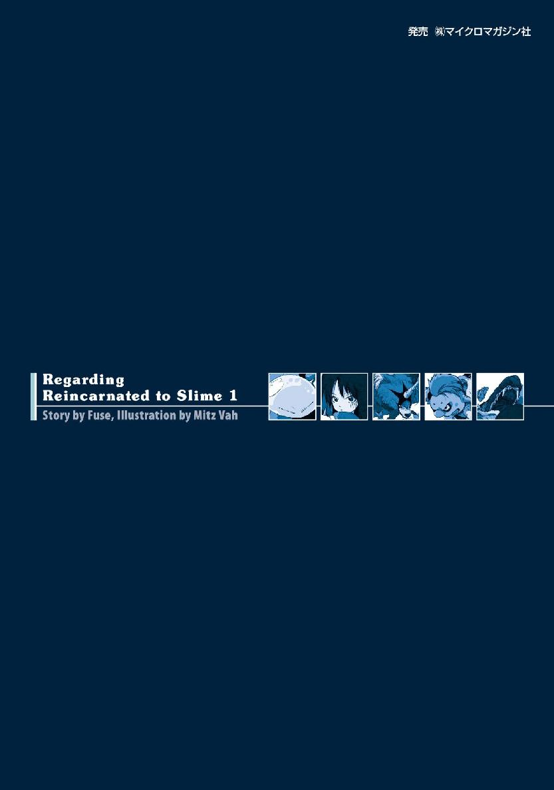